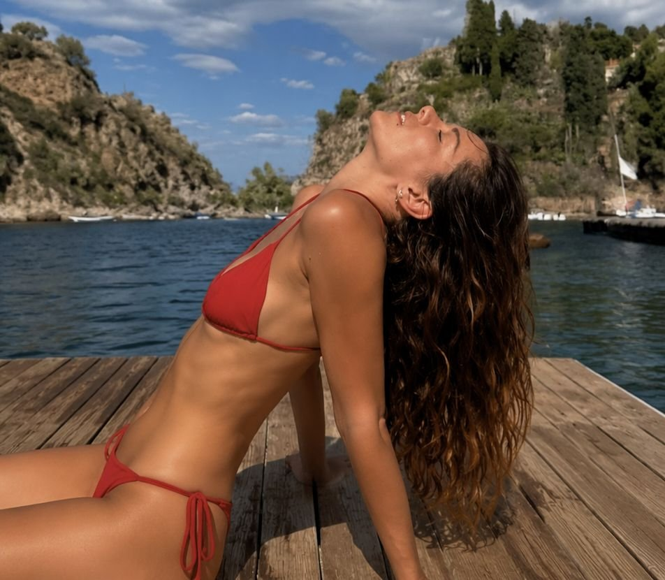
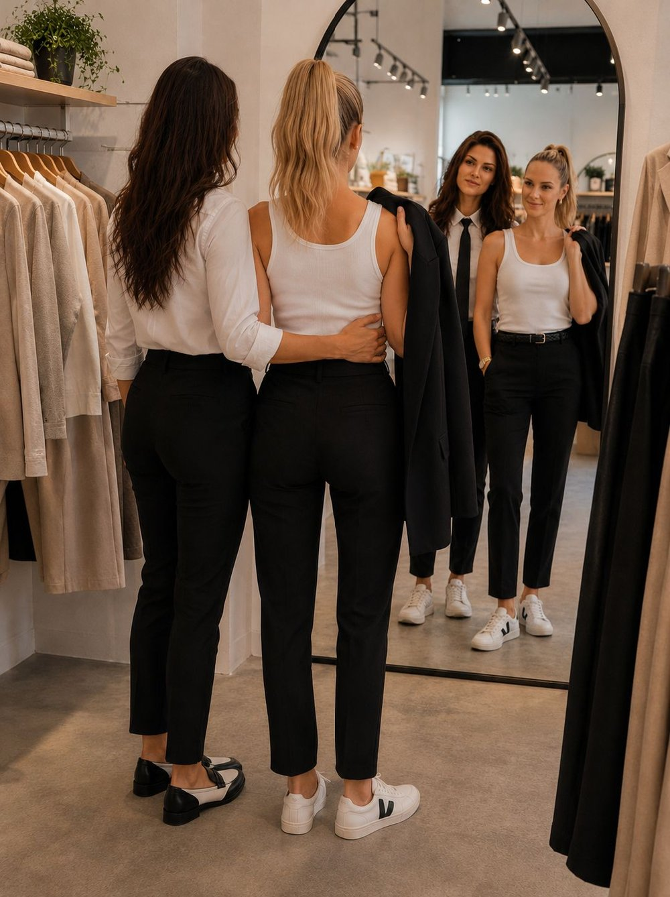
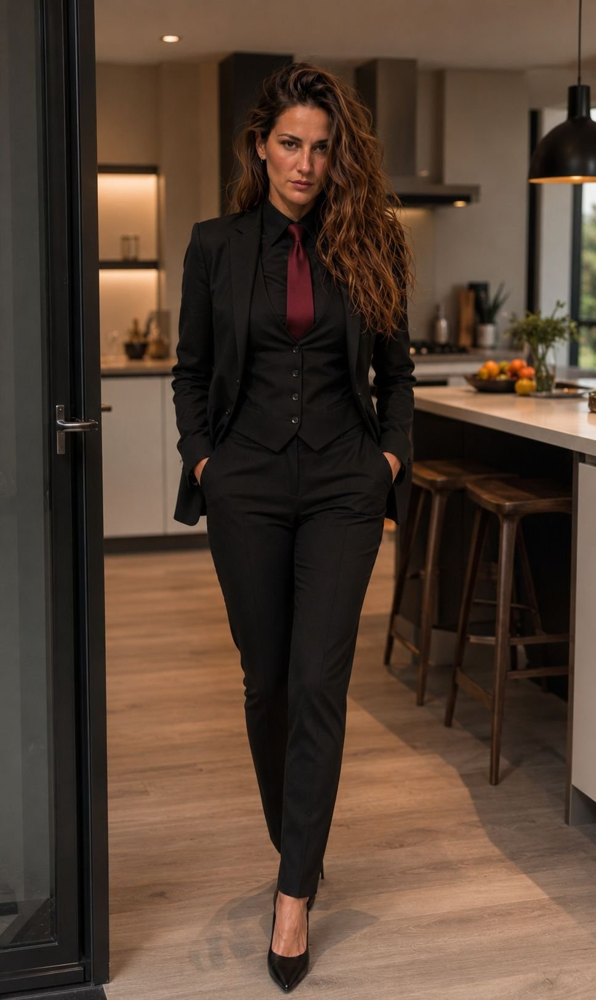

Andrea DeLuca était venu vivre à Seattle avec sa mère quand il était âgé de sept ans. Sa grande sœur, Carina était restée vivre en Sicile, à Catane, avec leur père. En effet, ce dernier avait voulu garder un de leur deux enfants, et la brune voulant protéger son frère, avait pris d'elle-même, du haut de ses neuf ans, de le laisser partir avec leur mère. Restant là. Dans ce pays, sur cette île qui l'avait vu naître.
Andrea était donc arrivé à, à peine sept ans à l'école. Nouveau pays, nouvelle ville, nouvelle école. Tout était nouveau pour lui. Quand il était arrivé dans sa nouvelle classe il avait été surpris de voir qu'ici, ils étaient placés par ordre alphabétique. L'année précédente il avait eu le droit de s'asseoir à côté de son meilleur copain. En plus, ici les tables étaient un par un. Et pour couronner le tout, toute sa classe avait un an de moins que lui. Un problème avec son inscription. Il était donc entré en première année d'école primaire.
Il s'était assis à la place que la maîtresse lui avait indiqué. La classe n'était pas encore rempli. Il avait posé ses mains sur son pupitre avant de poser son menton dessus, balançant ses jambes.
Cependant, après plusieurs minutes, il avait senti un regard sur lui. Il avait tourné la tête et avait froncé ses sourcils.
- "Pourquoi tu me regardes ?" Fit-il à la jeune fille blonde qui était encore en train de le fixer.
- "Je pensais que tu étais une fille."
Andrea avait eu un regard noir.
- "Je ne ressemble pas à une fille !"
- "Il y avait une Andrea l'an dernier dans ma classe. Je croyais que c'était un prénom de fille."
- "Non ! C'est un prénom pour les deux sexes !"
- "Mixte ?" Demanda Maya. Mais elle ne l'avait pas laissé répondre:
"Pourquoi tu parles d'une manière drôle ?"
- "Drôle ?" Demanda Andrea, pas sur de comprendre.
- "Tu dis les mots d'une manière bizarre."
- "Je viens d'Italie."
- "C'est où ?"
- "Hummmm de l'autre côté de l'Atlantique."
- "Vers New York ?"
- "Mais non ! Tu es bête ou quoi ? C'est en Europe !"
- "C'est toi qui es stupide avec ton accent stupide !" Répondit Maya en croisant ses bras et en se mettant face au tableau.
Mais malgré cette première rencontre, ils étaient devenus meilleurs amis. Peut-être parce que c'étaient les deux plus rapide à la course en sport. Peut-être parce que Andrea s'était mis à parler de l'Europe à Maya et qu'en échange elle lui avait parlé de Seattle et de ce qu'elle connaissait des États-Unis. Peut-être même car Andrea donnait sa lunch box à Maya en échange de la sienne - car elle voulait manger italien et lui américain. Quoi qu'il en soit, ils étaient devenus meilleurs amis.
Ils étaient tellement devenus meilleurs amis, qu'ils passaient tous leur temps ensemble. Ils étaient devenus fusionnel comme des jumeaux.
Ils s'étaient même embrassés sur la bouche une fois à onze ans pour elle et douze pour lui avant de se reculer en toussant - comme s'ils allaient vomir. Ils avaient voulu être sûr qu'ils se considéraient comme des frères et sœurs et pas plus - par rapport aux railleries de leurs camarades de classe qui les appelaient « les amoureux ». Mais non, rien de romantique entre eux. Et en fin de compte, il se fichaient bien de l'avis des autres.
Chaque année, Andrea et Lucia - sa mère - revenaient à Catane pour Noël. Pour le passer avec Carina et leur famille. De plus Andrea venait trois semaines en été en Sicile pour aller chez son père ; et sa sœur elle venait ensuite trois semaines à son tour. Cependant elle n'avait jamais rencontré Maya, qui partait tous les été en camps sportif - son père ayant décelé de la graine de champion.
Ce qui fait que pendant les treize années qui avaient suivi Maya et Carina ne s'étaient jamais rencontrées.
D'ailleurs depuis l'année de ses dix-huit ans la tension était montée entre Maya et son père. En effet, la jeune femme avait fait par à son géniteur son désir de ne plus aller au camp d'entrainement l'été. Et d'ailleurs de freiner même sur la course - là où elle excellait. Ce qui n'avait pas été au goût de ce dernier.
Mais la réponse de Maya ? « j'ai à présent dix-huit ans tu n'as plus à me dicter mes faits et gestes ».
S'en était suivi une énorme dispute et une situation où - depuis ses dix-huit ans - Maya passait plus de temps chez Lucia et Andrea, que chez ses propres parents. Heureusement la mère italienne était une femme adorable et qui ne pouvait rien refuser à son fils. De plus, elle connaissait Maya depuis le tout début, car en octobre quand Andrea avait fêté ses sept ans - car ils n'avaient en réalité que dix mois d'écart et que Andrea était arrivé à Seattle l'année de ses sept ans - elle avait été la seule camarade de classe à venir à sa fête d'anniversaire.
En fin de compte, c'est peut-être à ce moment-là qu'ils étaient devenus meilleurs amis.
Cet été pourtant cela allait changer. En effet, Carina avait postulé à l'université de Seattle. Elle avait passé son MCAT, le Medical College Admission Test, pendant sa troisième année d'université en Italie - un concours très sélectif qu'elle avait réussi haut la main. Et son rêve ? faire ses études de médecine à Seattle, là où vivait son frère et sa mère. À UW, l'University of Washington.
Et à bientôt vingt-deux ans, l'italienne n'avait pas attendu que son frère vienne cet été là - et deux semaines après la fin de sa quatrième année d'université en biologie - début juin, elle était venue directement à Seattle. Elle aurait pu profiter un dernier été de ses amis, de la Sicile, mais elle avait jugé que deux semaines c'était assez, et qu'elle voulait arriver au plus vite dans sa nouvelle ville.
La sonnette avait retenti chez les DeLuca - ceux de Seattle - car en effet, Lucia avait gardé son nom de famille de quand elle était mariée avec Vincenzo. Elle voulait garder le même que ses enfants.
- "Je vais ouvrir !" Fit une voix à l'intérieur de la maison.
La porte s'était ouverte - presque au ralenti et la même voix avait rigolé à la réponse qu'elle avait reçu depuis l'intérieur de la maison, puis son visage s'était tournée vers la personne qui avait sonné.
Son sourire s'était graduellement éteint - lui aussi au ralenti - et le début de « Tainted Love », la version de Marilyn Manson, avait résonné dans l'esprit de... Maya.
Alors qu'elle tenait toujours la poignet de la porte ses yeux étaient tombés - comme par « étape » au rythme de la chanson, sur le corps en face de ses yeux.
De long cheveux ondulés - ramenés d'un côté de son visage. De grosses lunettes noir. Une légère moue. Une chemise blanche ouverte jusqu'à la poitrine - avec des chaînes de différentes longueurs en or apparentes autour du cou - les manches relevées sur les avant-bras. Un pantalon cintré noir ; et des bottines à talon noir. La main sur une énorme valise - et plusieurs autres derrière.
Maya avait dégluti en relevant son regard vers ce visage. Qu'elle n'avait jamais vu en vrai - et qui pourtant ne lui était pas inconnu.
La brune en face d'elle - avec sa prestance indéniable et son air sophistiqué avait attrapé la branche de ses lunettes de soleil. Elle les avait baissé sur son nez.
- "Je suis bien chez les DeLuca ?"
- "Hum-Hum." Répondit la blonde la voix déraillante.
- "Je peux rentrer ou tu vas rester toute la journée à me fixer ?" Claqua la voix chantante de la femme la plus élégante que Maya ait jamais rencontrée.
- "O-o-oui, p-p-pardon !"
Elle s'était décalée - rouge comme une écrevisse - et Carina était entrée dans la maison en tirant sa valise.
Au même moment, Andrea était apparu.
- "C'était -" commença-t-il d'un air interrogatif, avant de se figer.
"Carinaaaaa !!" Fit-il heureux comme un prince.
L'italienne avait lâché sa valise et un sourire radieux était venu éclairer son visage.
Il l'avait pris dans ses bras - en la soulevant du sol et il s'était mis à tourner, alors qu'elle l'avait étreint à son tour.
- "Andreaaa ! Ahahah, mettimi giù !" [Andreaaa ! Hahaha, repose-moi !]
Il s'était exécuté et ils s'étaient regardés, avant de se prendre à nouveau dans les bras et de se parler à toute vitesse en italien. Maya figée à les regarder.
Bien-sûr elle avait déjà vu des photos de Carina. Mais elle n'avait pas idée qu'elle serait encore plus belle en vrai. Elle s'était imaginée qu'elle avait dû voir des photos avec des filtres.
- "Pourquoi tu ne nous as pas dit que tu arrivais à cette heure-ci ? On serait venu te chercher !" Fit le jeune homme en tendant sa main vers sa meilleure amie - mais en s'adressant à sa sœur.
- "Vous..." Demanda Carina avant de tourner sa tête vers Maya.
"C'est ta copine ?"
Ils avaient tous les deux grimacés.
- "Mais non ! C'est Maya !"
- " Il brutto anatroccolo si è trasformato in un cigno..." [Le vilain petit canard c'est transformé en cygne...]
- "Smettila ! Avevamo tredici anni in quella foto !" [Arrête ! On avait treize ans sur cette photo !]
- "Non hai che da pubblicare foto sui social. Sii normale. E potresti cambiare la foto di voi due nella tua camera !" [Tu n'as cas publier des photos sur les réseaux. Soit normal. Et tu pourrais changer la photo de vous dans ta chambre !]
- "Ce sont tes bagages ?"
- "Oui. J'ai dû choisir les vêtements à emmener, déjà là j'ai payé une bliiiinde en bagages !"
Maya était toujours fixée sur Carina.
- "Je vais te les rentrer !" Fit Andrea.
Il était passée à côté de Maya et il lui avait mis un coup d'épaule pour qu'elle se « réveil ».
"Tu m'aides ?"
Maya avait donc aidé Andrea à rentrer les valises de Carina.
"Tu veux un truc à boire ?" Demanda le jeune homme une fois la porte refermée.
- "Un café, s'il te plaît." Répondit Carina.
- "Allez au salon, j'arrive."
Maya avait commencé à le suivre, mais Carina avait attrapé son bras.
- "Il a dit qu'il arrivait. Et qu'on devait aller au salon." Fit-elle un brin autoritaire.
La blonde avait regardé son meilleur ami en faisant les gros yeux - mais il lui avait souri. Un sourire machiavélique.
Elles étaient parties s'asseoir au salon. Carina dans un fauteuil et Maya sur le canapé. La blonde fixait la table et la brune avait laissé ses yeux tomber sur son corps. Il faut dire que Maya et Andrea étaient à la piscine avant l'arrivée de Carina. Elle était donc en short et en soutien-gorge de maillot de bain.
"Vous étiez en train de vous baignez ?"
Maya avait relevé son regard vers elle. La peur se lisant dans ses yeux.
-"Hein ?" Demanda-t-elle d'une voix presque inaudible.
- "Les maillots de bain..." Fit Carina en relevant un sourcil et en pointant la tenue de Maya de ses lunettes.
- "Oh... Euh... Euh oui, on... On... On était dans... Enfin dans la piscine."
- "Cool."
Maya avait de nouveau détourné le regard.
"C'est Maya c'est ça ?"
La blonde avait rougi. Pourquoi fallait-il que d'entendre son prénom des lèvres de cette sublime, sublime femme, la fasse autant rougir ?
- "Hum-" fit-elle avant de s'éclaircir la gorge.
"Oui."
L'italienne avait eu un léger sourire - le premier vers Maya et la blonde avait aussitôt baissé ses yeux. Heureusement qu'elle était si peu vêtue, car sinon elle serait en train de mourir de chaud, juste parce que cette femme la regardait.
Andrea était arrivé avec un plateau. Deux Ice Coffee, un Espresso et des petits gâteaux.
- "Hummmm... Comment tu peux te dire italien..." Fit la brune un air de dégoût sur le visage en voyant la boisson de son frère.
- "En vrai... C'est bon. Je suis sûr que tu aimerais. Et je te rappelle que je vis là depuis treize ans ?"
- "Mouais... L'excuse..."
Ils avaient commencé à discuter - enfin surtout Carina et Andrea - car Maya elle préférait fixer sa boisson, ou l'italienne - et répondre par des mots - les plus courts possible. Ou en bégayant.
Après presque une heure, la brune s'était penchée en avant, s'appuyant de ses coudes sur ses genoux.
"Dai Andrea, ammettilo... Cosa succede tra voi ? Non vorrai farmi credere che mamma vi lascia dormire insieme da non so quanti anni, e che non siete mai andati a letto insieme ?!" [Bon allé Andrea, avoue... Il se passe quoi entre vous ? Tu ne vas pas me faire croire que mamma vous laisse dormir ensemble depuis je ne sais pas combien d'années - et que vous n'avez jamais couché ensemble ?!]
- "No, promesso, siamo solo migliori amici !" [Non promis, on est juste meilleurs amis !]
- "E non ci hai mai provato ?" [Et tu n'as jamais rien tenté ?]
- "No, provarci con lei sarebbe come provarci con te." [Non, essayer avec elle, ce serait comme essayer avec toi.]
- "Non so davvero come fai. È chiaro che nemmeno con me dormirebbe nella vasca da bagno... Ma io non avrei il tuo autocontrollo..." [Je ne sais vraiment pas comment tu fais. C'est clair qu'avec moi non plus elle ne dormirait pas dans la baignoire... Mais je n'aurais pas ton self-control...]
- "È lesbica." [Elle est lesbienne.]
- "Minchia... Vittoria per la mia squadra. Ha il culo più bello che abbia mai visto. È troppo sexy." [Minchia... Victoire pour mon camp. Elle a le plus beau cul que j'ai jamais vue. Elle est trop hot.] Carina avait parlé sans lâcher la blonde du regard. La blonde qui était toujours aussi rouge.
- "Forse dovrei precisare che parla italiano..." [Je devrais peut être préciser qu'elle parle italien...] Répondit Andrea.
Carina avait eu un sourire de côté. Elle avait laissé son regard tombé sur le corps de Maya - avant de regarder de nouveau son visage.
- "Perfetto. So gemere solo in italiano." [Parfait. Je ne sais gémir qu'en italien.]
La blonde avait dégluti - avalant sa salive de travers et elle s'était mise à tousser. Elle s'était ensuite éclairci la gorge et n'avait pas osé recroiser le regard de l'italienne.
"Pardon... Je ne voulais pas que tu t'étouffes à cause de moi." Répondit la sicilienne, son sourire s'élargissant sur le côté.
- "P-p-pas de, de soucis."
La brune avait de nouveau laissé son regard descendre sur Maya.
- "Tu peux arrêter de la regarder comme ça ? C'est trop... Bizarre." Fit Andrea en grimaçant.
- "Cosa ?! J'évalue la concurrence."
- "La concurrence ?"
- "Elle a pris ma place de sœur pour toi..."
- "Tu ne la regarde pas vraiment comme si c'était une concurrente..."
- "Non so davvero come tu possa essere solo amico di una ragazza così sexy." [Je ne sais vraiment pas comment tu peux être juste ami, avec une fille aussi sexy.]
- "Carina ! Elle parle italien !" Fit Andrea gêné en criant presque - limite dégoûté d'entendre sa sœur parler ainsi.
- "Oups... Désolée, pas désolée."
Carina avait attrapé son sac à main. Elle avait sorti un paquet de Vogue, sorti une cigarette et l'avait allumée.
Et encore une fois, en la voyant porter la cigarette à ses lèvres, puis le briquet pour l'allumer - Maya avait entendu « Tainted Love » dans sa tête.
Elle n'avait jamais aimé la cigarette, mais voir Carina fumer était probablement la chose la plus sexy qu'il lui avait été donné de voir. Pourquoi fallait-il que cette jeune femme rende quelque chose d'aussi nocif, aussi hot ? Elle s'était alors dit que si l'industrie du tabac mettait une photo de Carina une cigarette à la main - ou à ses lèvres, sur leur paquet, alors cela ferait probablement grimper en flèche le taux de fumeur sur terre.
- "Carina ! On ne fume pas dans la maison !" Fit Andrea.
- "Vous fumez où ?"
- "D'une on ne fume pas. Et de deux, tu aurais pu aller dans le jardin !"
La brune s'était levée. De la manière la plus gracieuse au monde et elle avait commencé à partir vers la porte fenêtre.
Elle s'était stoppée, se retournant vers les deux meilleurs amis.
- "Vous allez me laisser aller dehors seule ?"
Ils s'étaient levés et ils étaient partis dans le jardin. Maya avait laissé tomber ses yeux sur le corps de l'italienne, pourquoi fallait-il qu'elle ait autant de prestance ?
Ils s'étaient installés au jardin. Carina s'était appuyée dans le fond de son siège, une jambe croisée par-dessus l'autre, son coude sur l'accoudoir de la chaise, sa cigarette dans les airs. Les lunettes de soleil de nouveau sur son nez.
Et toujours avec cette chanson en tête, Maya avait regardé le corps, la posture, la classe indéniable de la sicilienne.
Carina avait baissé son regard vers Maya, puis elle avait eu un sourire en coin. Elle avait alors porté la cigarette à sa bouche et tout en fixant Maya, elle avait aspiré profondément dessus.
Elle s'était ensuite humecté les lèvres avant d'expulser la fumée. Elle avait déplié ses jambes, se penchant en avant vers la blonde, son coude venant trouver refuge sur sa cuisse, sa main tenant la cigarette en direction de Maya.
"Tu veux ?"
- "On ne fume pas je t'ai dit." Fit Andrea à sa sœur un peu sèchement.
Carina s'était remise dans le fond du siège.
"Tu es son père ?"
- "Non. Je n'ai pas envie qu'elle se mette à fumer à cause de Medusa."
Carina avait eu un léger rire.
- "C'est moi que tu appelles Medusa?"
- "Sai benissimo cosa stai facendo." [Tu sais très bien ce que tu fais.] Répondit Andrea, un brin accusateur.
- "Parla italiano..." [Elle parle italien...] Répondit Carina avant de porter de nouveau sa cigarette à sa bouche.
- "Depuis quand tu fumes toi d'ailleurs ?!"
- "Depuis l'université. Je fume que occasionnellement... Principalement en soirée. Je ne suis pas une grosse fumeuse."
- "Et pourquoi avais-tu besoin de fumer, là ?"
- "Car j'ai fait un long vol. J'en ai eu envie. C'est tout."
Elle avait reposé son coude sur l'accoudoir.
"Bon on fait quoi ce soir ? Mamma m'a dit qu'elle travaillait."
- "Euh... Bah on a rien prévu en fait."
- "Ne me dites pas que vous êtes ces deux jeunes dans les films qui n'ont aucuns amis en dehors de l'un et l'autre ?!" Demanda la brune en tenant sa cigarette entre son index et son majeur ; et en venant descendre ses lunettes en les tenant par « un des verres » de son pouce et son annulaire, pour les regarder.
- "On a des amis. Il y a une soirée, mais on n'avait pas prévu d'y aller."
- "Quoi, vous aviez prévu de jouer à Château et Dragons ?"
- "C'est Donjon et Dragons. Et non, on avait juste prévu de squatter là."
Carina s'était remise dans le fond de sa chaise, remontant ses lunettes sur ses yeux.
- "Sì, certo, voi due non scopate insieme !" [Ouais c'est ça, vous ne baisez pas ensemble !]
- "Non !" Fit Maya surprenant Carina et Andrea.
L'italienne avait eu un énorme sourire.
- "Elle parle !"
Maya avait lancé un regard noir à Carina qui se moquait d'elle.
- "On va chez Andy ce soir !" Fit la blonde en tournant sa tête vers son meilleur ami.
- "Si tu veux." Fit Andrea en relevant les épaules.
Il avait ensuite tourné son regard vers Carina.
"C'est tenue « normale »."
La brune avait descendu son regard sur ses vêtements avant de regarder son frère, un sourcil levé.
- "Je ne comprends pas. Je suis habillée normalement."
- "Carina tu es en chemise et en pantalon tailleur."
- "Et ?" Fit-elle pas sur de comprendre.
- "Tu n'es pas en Italie..." Fit-il comme si pour lui c'était logique. Puis il avait cherché :
"Habille-toi comme..." Il avait plissé les yeux comme pour qu'elle « voit » de quoi il parlait :
"Genre comme un touriste. Tu sais en Italie ou chez nous... Quand tu vois des touristes. Habille-toi comme ça."
Carina avait grimacé, comme si elle allait vomir - ou comme si elle était dégoûtée.
- "Mais pourquoi diable je ferais quelque chose comme ça ?!"
- "Personne ne s'habille comme ça ici. Tu n'es plus en Italie. Ici tu vas voir des gens en claquettes-chaussettes. Tu peux même croiser des gens en pyjama qui font leur course... Et même à l'université..."
- "Je suis venue ici pour faire mes études. Pas pour subir un relooking de mauvais goût. Vous aurez cas vous habiller comme des américains - mais je vais rester avec mes vêtements italiens."
- "Est-ce que tu pourrais au moins mettre ... Je ne sais pas... une petite robe d'été ? Que nos amis ne pensent pas que tu sors de ton travaille dans une banque ?"
- "Je verrais ce que je peux faire." Fit Carina en faisant un mouvement de main comme pour dire « peu importe ».
L'italienne avait tourné sa tête vers la piscine.
"Mamma a investi..."
- "Non, c'est Maya et moi, on a travaillé et on s'est payé une piscine plus grande que celle qu'on avait."
L'italienne avait tourné sa tête vers l'américaine.
- "Tu vis ici ?" Demanda Carina à la blonde.
Maya avait pris un air surpris.
- "Euh... Euh, non."
- "Maya et son père c'est pas trop ça. Donc elle est souvent là."
- "Et ta copine..."
Elle avait ensuite tourné son visage vers Maya, pour donner un coup de menton vers elle :
"Et la tienne..." puis elle avait de nouveau regardé son frère :
"Elles ne sont pas jalouses ?"
- "Pour l'instant, on a personne."
- "Et si tu te trouves quelqu'un ?"
- "Il faudra qu'elle comprenne que Maya est ma meilleure amie."
- "Et je peux dormir chez moi." Fit la blonde, comme si elle n'osait pas les interrompre - avant de déglutir.
- "Tu peux toujours dormir dans ma chambre." Fit Carina en relevant ses sourcils d'un coup.
Elle s'était penchée en avant pour descendre ses yeux sur le corps de la blonde :
"Mais je ne peux pas te promettre d'être aussi galante que mon petit frère... Piccola..."
Maya avait fait les gros yeux mais plus de surprise. Elle était devenu toute rouge - sentant un coup de chaleur s'emparer d'elle.
- "N-n-non c'est... C'est bon."
- "Si tu changes d'avis..." Répondit Carina en posant ses mains sur les accoudoir et en se levant.
Puis elle avait tourné son regard vers Andrea.
"Ma chambre est toujours... Ma chambre ?"
- "Oui."
- "Okay, je vais monter ma valise et prendre une douche."
À cette dernière partie, elle avait senti le regard de Maya se relever vers elle.
Carina l'avait regardée en échange et elle lui avait fait un clin d'œil.
- "Prend ce dont tu as besoin et je montrais tes affaires après."
Alors que Carina était à la douche, Andrea - à l'aide de Maya - avait monté les bagages de sa sœur. Puis ils étaient redescendus.
"Je suis désolée pour le comportement de ma sœur... Je n'aurais pas dû lui dire que tu étais lesbienne."
- "Et je suis encore plus désolée !!" Fit la blonde gênée.
"Mon dieu, mais qu'est-ce qu'il m'a pris ?!" Demanda-t-elle - de nouveau rouge.
- "Je sais qu'elle est belle. Et elle sait qu'elle est belle. Et elle sait très bien ce qu'elle fait. Ne te laisse pas avoir."
- "C'est ta sœur. Il n'y a pas moyen. Ce serait trop... Chelou." Répondit-elle en fronçant les sourcils, comme si cette idée était stupide.
Andrea l'avait regardé de côté, mais n'avait rien répondu. Pas à ce sujet du moins.
"On va dans la piscine ?"
- "Carrément !" Fit Maya presque trop heureuse.
Andrea avait eu un sourire machiavélique.
- "Oh oui... Tu as besoin de te rafraîchir car ma sœur elle t'a donnée des bouffées de chaleur !" Il s'était mis à rire et à courir, et la blonde l'avait manqué de peu, voulant lui donner un coup.
- "Petit con !" Fit-elle en le poursuivant dans la maison, tous les deux rigolant.
Il était parti jusqu'au jardin et avait plongé dans la piscine - sautant par-dessus les tubes qui maintenait la piscine tubulaire - en sautant comme un dauphin.
La blonde l'avait une nouvelle fois ratée de peu. Elle était montée à l'échelle et avait plongée à son tour. Puis ils avaient commencé à se chamailler dans la piscine.
Carina - en sortant de la douche, avait penché sa tête vers la fenêtre en les entendant rire depuis l'extérieur, à se faire couler l'un l'autre. En entendant le rire de Maya elle avait eu un petit sourire de côté.
Elle était partie dans sa chambre avant d'enfiler quelque chose et de descendre.
Maya avait enfoncé la tête d'Andrea sous l'eau - morte de rire - et ses bras s'étaient graduellement détendus en voyant Carina sortir au ralenti de la maison.
Carina, dans un maillot de bain deux pièces, aussi sexy que petit. Noir. Faisant ressortir son bronzage. Ses cheveux encore humide ramenés une nouvelle fois d'un côté de son visage. Perchée sur des chaussures avec de gros talons carrés, et tenant ses pieds par des lanières dorés. Et ses lunettes de soleil de nouveau en place.
Elle l'avait vu arriver sur la terrasse en tech, au ralenti, toujours sur cette fichu musique. La sicilienne avait descendu les marches et Andrea était ressorti de sous l'eau.
- "Il t'arrive qu-"
Il s'était retourné et il avait regardé dans la même direction que Maya.
"Arrête de baver ! C'est ma sœur !" Fit le jeune homme - dégoûté.
Carina, un livre à la main, une serviette dans l'autre, était venue s'installer sur un des transats. Sa bouche légèrement poussé en avant. Sublime.
- "Il y a quelqu'un qui peut me mettre de la crème ?" Demanda la sicilienne.
- "Arrête ! Tu es déjà bronzée ! Tu le fais exprès !"
- "Exprès de ?"
- "Tu veux que Maya vienne t'en mettre !"
- "Viens toi, Andrea." Répondit Carina en relevant un sourcil.
Il avait tourné sa tête vers sa meilleure amie.
"Je te sauve la vie là !"
Il était sorti de la piscine et il était venu vers sa sœur. Il s'était essuyé les mains sur sa serviette avant d'en tendre une vers Carina pour prendre la crème.
Il lui avait étalé avant de chuchoter à sa sœur :
"Arrête, tu vas la faire fuir et son père est un con !"
Carina avait tourné sa tête vers son frère.
- "Ça nous fait alors deux points communs !"
- "Arrête ! Papa n'est pas con !"
- "Ça se voit que tu n'as pas vécu avec lui, seul, pendant treize ans."
- "Bon... C'est bon ?!" Fit-il après avoir mis de la crème sur le dos de sa sœur.
Elle avait attrapé le tube un peu violement.
- "De toute façon ce n'est pas toi que je voulais !"
Il était retourné se baigner et après plusieurs dizaines de minutes, Maya était venue contre le bord de la piscine. Elle avait passé ses bras par-dessus le tube, fermant légèrement les yeux - comme si elle voulait profiter du soleil qui caressait sa peau.
Mais en réalité, les yeux légèrement plissés, elle était en train de regarder le corps de l'italienne. Alors qu'Andrea était sur un matelas de piscine, les yeux fermés.
Carina était allongée sur le dos, une jambe légèrement relevée, le torse également à cause de l'inclinaison du transat. Ses lunettes sur les yeux.
Mon dieu... Elle est trop belle. Elle est sublime. Je comprends pourquoi Andrea l'a appelé Medusa... Dès je la regarde, je me fige.
Après plusieurs minutes à l'observer, Maya avait vu la main de Carina s'approcher de son visage, mais elle ne s'attendait pas à la suite. L'italienne avait tenu la branche de ses lunettes entre son index et son pouce - levant ses lunettes - et elle lui avait fait un clin d'œil en souriant.
Maya s'était aussitôt tournée. Rouge. Complément rouge.
Merde ! Putain ! Depuis combien de temps elle me voit ?! Satané lunettes ! Pourquoi il fallait que les verres soient comme ça ?! Punaise, si ça se trouve, ça fait un quart d'heure qu'elle me voit la mater ! Quelle honte !
En toute fin d'après-midi, l'italienne s'était levée de son transat. La blonde n'avait pas osé se retourner de nouveau vers elle depuis un long moment.
- "Je vais me préparer. On pourrait aller manger quelque part, avant d'aller à votre soirée ?!"
- "Carina, c'est une soirée avec des gens plus jeune que toi..." Fit Andrea.
- "Et ? Ça va, ils ont vos âges, non ?"
- "Oui."
- "Donc on s'en fiche !" Fit-elle en levant les épaules d'un à-coup.
"Pour le restau... Je vous invite."
Elle était partie dans sa chambre et Maya avait été la première à aller prendre sa douche.
La blonde était ressortie de la salle de bain, prête, avant que Carina ne descende. Puis, tandis que Maya attendait en bas, l'Italienne était apparue.
Lorsque la Sicilienne avait émergé dans l'escalier, le cœur de l'Américaine avait raté un battement. La brune portait ses cheveux lissés et une robe noire moulante. Andrea avait demandé une robe d'été. Carina avait visiblement entendu« robe ». Le mot « été », en revanche, s'était probablement perdu en chemin. Mais peu importait. Elle était sublime.
Et Maya avait eu une impression de déjà-vu.
Elle avait eu l'impression de voir Rachael Leigh Cook descendre les escaliers dans « She's All That »... sauf que Carina n'avait jamais été « la fille moche ». Et, cette fois, ce n'était pas « Tainted Love » qui avait résonné dans son esprit, mais « Kiss Me » de Sixpence None the Richer.
Enfin... ça, c'était avant que Carina ne pose un pied au sol, sans trébucher, contrairement à Laney Boggs. Elle avait alors relevé les yeux vers elle, avant de s'avancer avec l'assurance de quelqu'un qui venait de repérer sa prochaine proie.
Et là...
« Kiss Me » avait subi un monumental spinback.
Le disque avait dérapé en arrière. Une fraction de seconde plus tard, « Tainted Love » reprenait sa place. Maya aurait juré avoir entendu ce crissement jusque dans le creux de son estomac.
Carina avait poussé ses lèvres légèrement en avant.
- "J'espère que je ne suis pas « trop » habillée." Elle avait légèrement plissé les yeux - comme si elle cherchait ses mots :
"Je n'ai pas vraiment de vêtements adaptés..."
Elle avait humecté ses lèvres.
"À... Ce pays."
- "Tu... Tu..." Maya s'était éclairci la gorge.
"Tu es très belle comme... Comme ça."
Carina avait souri de côté, avant d'aspirer légèrement sa lèvre inférieure pour la mordre.
- "Merci, piccola."
Elle était venue s'installer sur le canapé à côté de la blonde et Maya s'était redressée, légèrement tendue.
L'italienne s'était penchée légèrement vers elle.
"Tu sens super bon." Fit-elle après avoir « humé » Maya.
La blonde était devenue rouge.
- "Eumh, merci."
Carina s'était de nouveau penchée vers elle. Ses sourcils s'étaient froncés et elle avait inspiré une nouvelle fois.
- "Vraiment bon." Fit-elle surprise.
"C'est quoi ?"
Maya avait dégluti.
- "Euh... Hummmm... euh... A-a Another 13."
- "J'adore." Répondit la brune en la regardant dans les yeux.
Puis son regard était tombé sur les lèvres de Maya, avant de revenir dans ses yeux.
"Tu es super belle..." Fit-elle d'une voix sincèrement troublante.
"Tu ne fais pas superficielle..."
Maya avait dégluti. Pétrifiée par sa Medusa personnelle.
Elles avaient beau se connaître que depuis quelques heures seulement, Carina avait descendue de nouveau ses yeux sur la bouche de Maya - et elle s'était penchée légèrement en avant. La blonde figée devant elle. Cependant, avant même que leurs lèvres ne se touchent, Carina avait entendu son frère descendre les escaliers en courant. Elle s'était redressée, humectant ses lèvres avant de se mordre l'intérieur de la bouche - un léger sourire « dégoûté » aux lèvres.
Maya était en tachycardie. Figée. Sa respiration haletante.
- "On y va ?" Fit Andrea en apparaissant en bas des marches et en tapant dans ses mains.
Carina et Andrea s'étaient mutuellement regardés avec un air désespéré.
"Non, mais non ! C'est ça que tu appelles « d'été » ?" Demanda le jeune homme, en même temps que sa sœur qui lui avait dit :
- "Non mais c'est quoi ce look ?!"
Andrea portait un large t-shirt, un bermuda un peu long, des chaussettes remontées et des crocs.
- "Quoi ?!" Demanda-t-il, pas sur de comprendre.
Carina avait grimacé.
- "Tu es tellement américain..."
Elle avait fermé les yeux en grimaçant avant de se relever. La blonde s'était mise debout à son tour. Et Carina avait laissé tomber ses yeux sur son corps. Maya n'était pas sur son trente-et-un, mais au moins elle était en jean et en débardeur.
Ils étaient partis au restaurant tous les trois et Andrea et Maya s'étaient mis l'un à côté de l'autre, Carina en face. En face de la blonde.
Ils avaient commencé le repas et l'américaine faisait tout son possible pour ne pas regarder la brune qui était en face d'elle.
Alors qu'Andrea était en train de raconter à sa sœur sa première année d'université, l'italienne - tout en mangeant, mine de rien - avait tendu sa jambe ; et son pied avait caressé l'intérieur de la cheville de Maya, relevant légèrement le bas de son pantalon.
Maya s'était figée. S'arrêtant même de mâcher. Mais Carina, imperturbable, avait continué, faisant des petits commentaires à son frère. Elle avait monté son pied un peu plus haut, caressant le côté de son mollet.
La blonde s'était mis à tousser, avalant sa bouchée suivante de travers.
Les deux italiens s'étaient tournés vers elle, stoppant leur conversation.
- "Ça va ?" Demanda Andrea.
- "Je te sers un verre d'eau ?" Demanda la brune.
Maya lui avait lancé un regard un peu noir et alors qu'Andrea regardait sa meilleure amie, Carina lui avait fait un petit sourire en coin, relevant un sourcil et son pied était revenu contre l'intérieur de sa cheville. Elle avait pris la bouteille d'eau et en avait versé un peu dans le verre de Maya. Puis elle avait retiré son pied.
Ils avaient continué le repas avant que Carina ne se lève, avec élégance.
"Je vais aux toilettes... Maya ?"
La blonde avait levé les yeux vers Carina.
- "Q-quoi ?"
- "Les filles ne vont pas aux toilettes ensemble ici ?"
- "Euh... Je, enfin, je, je n'ai pas... Envie. Euh... Merci."
- "Sûr ?" Demanda la brune en relevant un de ces sourcils.
- "Sûr."
- "Peccato..."
L'italienne était partie et Maya l'avait regardée partir, marchant avec grâce.
- "Arrête de la mater comme ça." Fit Andrea.
Maya lui avait tapé le bras.
- "Arrête !! Je ne la mate pas !"
- "Tu baves..."
- "N'importe quoi !"
- "Tu m'expliques pourquoi tu n'arrives pas à aligner deux mots sans bégayer ?"
- "Elle fait exprès. Qui à vingt-deux ans s'habille comme elle le fait et se tient comme elle le fait ?"
- "Ce n'est pas rare en Italie... Et elle n'a pas encore vingt-deux..."
- "On devrait vraiment la laisser payer ?" Demanda Maya embêtée.
- "Bien-sûr que oui. Elle a proposé !"
La brune était revenu s'asseoir.
- "Dessert ?"
- "Non, c'est bon." Répondit la blonde - se concentrant pour parler en une fois.
- "C'est bon aussi." Fit Andrea.
L'italienne avait levé la main avec élégance et la serveuse avait presque accouru.
- "O-oui ?" Fit-elle en rougissant.
Carina s'était appuyée sur le bord de la table. Son sourire charmeur aux lèvres.
- "On pourrait... Avoir l'addition s'il vous plaît ?"
Ses doigts avaient caressé le bord de la table.
- "J'a... J'arrive."
Elle était partie avant de revenir.
- "Je... Je vous ai retiré votre boisson... C'est pour moi." Fit-elle en posant un porte addition.
Carina avait pris le portefeuille. Elle avait noté le pourboire sur l'addition avant de tendre le tout avec sa carte de paiement.
La serveuse était revenue une minute après, tendant le papier à Carina pour avoir sa signature. Elle avait récupéré le ticket, avant de glisser sur la table la carte de paiement de Carina et un papier dessous - son numéro de téléphone.
L'italienne avait récupéré le tout. Elle avait regardé le numéro et avait ensuite relevé son regard vers la serveuse.
- "Merci... Arizona." Elle avait de nouveau fait son sourire charmeur.
La serveuse s'était mordu la lèvre avant de partir en marche arrière.
- "À bientôt... Peut-être..."
- "Tu n'es pas possible..." Fit Andrea.
Carina s'était tournée vers son frère.
- "Cosa ?! Je n'y peux rien, j'aime les blondes..." Répondit la brune avant de jeter un coup d'œil à Maya.
Ils avaient fini par partir du restaurant pour aller chez Andy.
Andrea parlait à des filles. Maya parlait avec des personnes qu'elle connaissait. Et Carina... Carina parlait à des filles, comme si elle cherchait sa nouvelle proie. Cependant dès qu'elle discutait à une fille, elle regardait Maya. Comme si elle cherchait à capter son attention.
L'italienne s'était approchée d'une jolie blonde. Elle avait commencé à flirter avec elle, mais elle avait vu Maya les regarder depuis l'autre bout de la pièce. Alors elle avait fait exprès ; elle s'était penchée et avait chuchoté à l'oreille de la jeune femme. Et Maya ? Maya ne les avait pas quitté du regard. Alors Carina avait souri.
Elle s'était excusée puis était partie en direction de la meilleure amie de son frère. Et Maya ignorait pourquoi, mais malgré le bruit. Malgré le monde. Malgré la musique, elle avait encore entendu cette foutu chanson.
Elle avait détourné le regard - essayant de faire comme si elle n'était pas en train de fixer Carina depuis vingt minutes.
La brune était arrivée vers elle et elle s'était penchée vers son oreille.
"Ça va ?"
- "Ça va." Répondit Maya sans la regarder.
Carina avait souri.
- "Tu me regardes depuis tout à l'heure..."
- "Non."
- "Tu mens très mal... Pourquoi tu me regardais alors que je parlais avec elle ? C'est ton ex ?"
- "Non."
- "Non ce n'est pas ton ex ?"
- "Non."
- "Et donc c'est pour elle... Ou pour moi... que tu étais jalouse."
- "Personne."
Carina avait souri.
- "Tu sais faire de plus longue phrase ?"
- "Arrête." Fit Maya en décalant son visage.
- "Tu danses avec moi ?"
- "Non."
- "Pourquoi ?"
- "Je ne danse pas."
- "Viens avec moi dehors."
- "Pour ?" Demanda Maya les sourcils froncés.
- "Tu es probablement la personne préférée de mon frère sur cette terre. Il est temps que je sache pourquoi..."
- "Plus tard."
La brune avait pincé le débardeur de la blonde au niveau de son ventre.
- "Arrête d'être ronchon, piccola. On vient de se rencontrer."
- "C'est bon, je viens." Répondit la blonde en retirant son débardeur de la main de la brune.
Elles s'étaient regardées et Maya avait relevé un sourcils.
"Tu attends..."
- "Que tu mènes le chemin... Je ne connais pas trop la maison..."
Maya était passée devant et la brune avait approché sa bouche de l'oreille de la blonde pour qu'elle l'entende.
"Et comme ça je profite de la vue sur ton sublime cul..."
Maya avait mis une main dans son dos pour cacher ses fesses et Carina avait rigolé.
Elles étaient sorties et étaient parties s'installer. Carina sur un petit banc et la blonde les fesses sur le rebord d'un énorme pot de fleurs - ou plutôt d'un arbuste.
"Je ne mords pas... Tu peux venir t'asseoir avec moi."
- "Mouais..."
Carina avait souri.
- "Tu n'as pas tort..." Elle avait fait un mouvement de sourcils pour appuyer ses propos.
"Donc... Tu veux être ambulancière ? Enfin... Je sais que ici ambulancière c'est la personne qui conduit les ambulance, mais... EMT, c'est ça ?"
- "Pompier."
L'italienne avait souri en se penchant en avant, ses yeux étaient tombés sur le corps de Maya.
- "Tu veux être pompier ?!" Elle avait souri.
"C'est sexy..."
Elle s'était mordu la lèvre.
"Mais pourquoi tu fais des études... D'EMT ?"
- "Pour... Euh... Euh... Être... Être meilleure."
- "Je peux te poser une question ? Mais ne me prend pas mal."
- "Q-quoi ?" Demanda la blonde en devenant rouge.
- "Tu bégayes ?"
- "Non."
L'italienne avait eu un sourire de côté.
- "Intéressant..."
La brune allait ajouter autre chose, mais une voix les avait coupées.
- "Maya Bishop, justement la femme que je cherchais !"
Carina s'était tournée sur le banc, un sourcil relevé et elle avait regardé la femme qui s'approchait. Son regard était tombé sur son corps - comme pour juger la concurrence.
- "Oui ?" Fit Maya.
- "Je me souviens que tu m'as promis que la prochaine fois que nos chemins se croisaient, je pourrais... T'emprunter."
L'italienne avait relevé les deux sourcils comme pour dire « mais pour qui elle se prend celle-là ?! ».
Elle s'était levée du banc, avançant d'un pas.
- "Tu permets ? Nous étions en pleine conversation. Ce n'est pas vraiment comme si Maya était... Disponible. Pour... « l'emprunter » il va falloir repasser."
La jeune femme s'était tournée vers Carina la regardant avec dédain.
- "Et tu es ?!"
- "En train d'apprendre à connaître cette jolie blonde."
- "Maya ?!" Demanda la jeune femme - Charlotte.
- "Elle... Elle n'a pas... Tord... On... On parlait."
- "Mais c'est qui celle-là ? Je ne l'ai jamais vue !" Demanda Charlotte - comme si Carina n'était même pas là.
- "C'est la sœur de mon meilleur ami."
Alors Maya ne bégayait vraiment pas quand elle ne parlait pas à Carina.
- "Ah oui, je vois, tu fais du babysitting..."
- "E spero che la baby-sitter vada a letto con la persona che fa da baby-sitter, piuttosto che con il padre di famiglia, in quel caso..." [Et j'espère que la baby-sitter couchera avec la personne qu'elle baby-sit, plutôt qu'avec le père de famille dans ce cas-là...] Répondit Carina ; la blonde était devenue toute rouge, se figeant.
- "Euh... Elle a dit quoi elle ?! On parle Anglais ici, pas espagnol."
- "C'est de... L'italien." Fit Maya d'une voix un peu trop grave.
- "Ouais... C'est pareil."
- "Euh..."
La blonde avait voulu dire « pas vraiment », mais elle comprenait que c'était peine perdu.
- "Donc tu viens, ou tu restes là avec..." Elle avait descendu son regard sur la tenue de Carina - avec dédain :
"Non mais c'est quoi cette tenue, tu t'es cru dans une soirée mondaine ou quoi ?! Tu n'es pas dans Gossip Girl ici."
- "Désolée d'avoir du... Style." Répondit Carina sur le même air, en la regardant de haut.
- "Tu appels ça du style ? On dirait que tu sors d'un rendez-vous d'affaire."
- "Et toi d'une friperie."
- "Mon look ressemble plus au look de Maya que le tien."
- "Parce que Maya n'a pas besoin de faire d'effort pour être sexy. Même un sac à patate sur le dos, elle serait irrésistible... Toi..." Elle l'avait de nouveau regardé de haut en bas :
"Tu aurais pu au moins essayer."
- "Tu comptes la laisser me parler comme ça ?!" Demanda Charlotte à Maya.
- "Tu... Enfin tu as un peu commencé ça..."
- "Tu es sérieuse ?!"
- "Bah..."
- "Tu sais quoi Maya Bishop ?! Tu peux oublier mon numéro !" Fit Charlotte avant de tourner les talons.
- "Tant mieux ! Ça fera plus de place pour le mien !" Répondit l'italienne.
Charlotte avait tourné juste sa tête pour lancer un regard noir à Carina. Puis la brune avait regardé Maya.
"Sérieux c'est le genre de fille que tu te tapes ?!"
- "Je ne... Je ne me la suis pas-"
- "Si je n'avais pas été là, tu ne l'aurais pas fait ?!"
- "Je ne sais-"
- "Tu es canon." La coupa Carina, laissant son regard tomber sur son corps, s'approchant un peu plus.
"Tu pourrais avoir qui tu veux." Ajoute-t-elle en la regardant dans les yeux.
Maya avait dégluti et l'italienne avait alors chuchoté :
"Chi vuoi tu..." [Qui tu veux...]
Les lèvres de la blonde s'étaient entrouvertes, mais juste avant qu'un son sorte de sa bouche, elles avaient été coupé par Andrea.
- "Ça fait dix minutes que je vous cherche !"
L'italienne avait reculé et ses narines s'étaient légèrement écartées, ses mâchoires se serrant.
- "Oui ?" Demanda-t-elle en tournant sa tête vers son frère.
- "Aucune meuf d'intéressante et je suppose que si vous êtes là, c'est que vous n'avez pas non plus trouvé de quoi vous satisfaire..."
Stavo per darmi un po' di piacere... [J'étais sur le point de me satisfaire...]
Carina avait passé sa langue sur ses incisives.
- "Et... Donc ?"
- "Ça ne vous dit pas qu'on rentre et qu'on se mate un film ?"
- "Maya pourra être au milieu sur le canapé ?" Demanda Carina.
Andrea avait froncé les sourcils à cette question.
- "Maya se mettra où elle veut."
Ils avaient décidé et partir et une fois arrivé chez les DeLuca, ils étaient montés pour se mettre en pyjama. Alors que la blonde avait pris ses affaires pour aller se changer, la brune était entrée dans la chambre de son frère, avant de refermer la porte.
"Hey ! L'intimité tu ne connais pas ?!"
- "Tranquilla, sei a torso nudo, non è come se avessi visto il tuo uccellino-" [C'est bon, tu es torse nue, ce n'est pas comme si j'avais vu ton petit oiseau-]
- "Non è piccolo !" [Il n'est pas petit !]
- "Come vuoi..." [Peu importe...] Répondit Carina. Elle s'était approchée pour regarder son frère droit dans les yeux.
"Mi giuri che non succede niente tra te e lei ?" [Tu me jures qu'il ne se passe rien entre toi et elle ?]
Il avait froncé les sourcils.
- "Ma certo che no ! È la mia migliore amica !" [Bien sûr que non ! C'est ma meilleure amie !]
- "E non sei tipo... Segretamente innamorato di lei ?!" [Et tu n'es pas genre... Secrètement amoureux d'elle ?!]
- "No, smettila, no sarebbe troppo... Strano. Sarebbe come essere innamorato di te !" [Non, arrête, non ce serait trop... Chelou. Ce serait comme être amoureux de toi !]
- "Quindi non ci proverai mai ?" [Donc tu ne tenteras jamais rien ?]
Il avait reculé sa tête, les sourcils froncé.
- "Oh no Carina ! Ti vedo arrivare ! No, no, no. Non ci provi con lei. È la mia migliore amica. Non andare a fare qualcosa che mi costringa a scegliere tra voi due. Non ci proverò con lei. E nemmeno tu ! E poi qual è il tuo problema ? La conosci da dieci ore, e già la fai diventare la tua nuova preda ?! Vedi che è turbata, e tu ne approfitti !" [Oh non Carina ! Je te vois venir ! Non, non, non. Tu ne la drague pas. C'est ma meilleure amie. Ne vas pas faire un truc ou je devrais choisir entre vous deux. Je ne vais pas la draguer. Et toi non plus ! En plus c'est quoi ton problème ? Tu la connais depuis dix heures, et ça y es ; tu en fais ta nouvelle proie ?! Tu vois qu'elle est troublée, et toi tu en profite !]
- "E allora ? Dieci ore o dieci anni, è sexy. E tu forse hai la merda negli occhi, ma io no. È super sexy." [Et alors ? Dix heures ou dix ans elle est hot. Et tu as peut-être de la merde dans les yeux, mais pas moi. Elle est super sexy.]
- "Sì insomma siete tutti e due dei tipi da scopate e basta. Cos'è, te la fai e poi ciao, passi ad altro ? Non ho voglia che le cose diventino... strane..." [Ouais enfin vous êtes tous les deux branchées plans cul. C'est quoi, tu vas te la faire et après c'est bon tu vas passer à autre chose ? Je n'ai pas envie que les choses deviennent... bizarre...]
- "Appunto. Ragione di più... se siamo tutte e due tipe da scopate e basta, non vedo il problema. Non è come se volessi rubarti la tua migliore amica. E non deve per forza essere strano. Credi che sarebbe la prima amica con cui vado a letto ?" [Justement. Raison de plus... si on est toutes les deux plans cul, je ne vois pas le problème. Ce n'est pas comme si j'allais te piquer ta meilleure amie. Et ça n'a pas à être bizarre. Tu crois que ce serait la première pote avec qui je couche ?]
- "Appunto ! Non è la « tua » amica. È la mia migliore amica" [Justement ! Ce n'est pas « ta » pote. C'est ma meilleure amie]
- "Giochi con le parole" [Tu joues sur les mots]
- "Ci sono circa quarantamila donne dai diciotto ai ventiquattro anni a Seattle, e tu sei qui da dieci ore. Non potresti trovarti un altro bersaglio che non sia qualcuno che praticamente vive in questa casa ?!" [Il y a environ quarante mille femmes de dix-huit à vingt-quatre ans à Seattle, tu es là depuis dix heures. Tu ne pourrais pas te trouver une autre cible que quelqu'un qui vit pratiquement dans cette maison ?!]
- "Va bene, va bene ! Non toccherò la tua preziosa Maya !" [C'est bon, c'est bon ! je ne toucherais pas ta précieuse Maya !]
- "Grazie !"
- "Ma solo se lei smette di guardarmi come se mi vedesse nuda, ogni volta che le passo davanti. Ho l'impressione che « I'll Make Love to You » dei Boyz II Men suoni nella sua testa ogni volta che mi vede. Mi fissa come se si stesse facendo dei film." [Mais uniquement si elle arrête de me regarder comme si elle me voyait nue, dès que je passe devant elle. J'ai l'impression que « I'll Make Love to You » de Boyz II Men se joue dans sa tête dès qu'elle me voit. Elle me fixe comme si elle se faisait des films.]
- "Sei sicura che non sia tu ad avere quella canzone in testa quando la vedi ?" [Tu es sûr que c'est pas toi qui a cette chanson dans la tête quand tu l'a voit ?]
- "Ma va..." [N'importe quoi...]
- "Quindi se lei continua... Ricomincerai a provarci ?" [Donc si elle continue... Tu reprendras ta drague ?]
- "Sì."
Andrea avait soufflé.
- "Okay,... Je suppose que c'est juste..." Répondit Andrea, désespéré mais comprenant qu'il n'avait pas forcément de meilleure option.
L'italienne était partie de la chambre. Et Maya avait ouvert la porte de la salle de bain au même moment.
Carina s'était stoppée, son regard était tombé sur son corps - Maya dans un débardeur moulant et en mini short.
- "Hummmm... Hummm... Non sarà facile." [Hummmm... Ça ne va pas être facile.]
Maya avait froncé les sourcils et Carina était partie en direction de sa chambre - comme si rien ne s'était passé.
Après cinq minutes ils s'étaient retrouvés en bas. Maya était assise sur le canapé, son téléphone à la main et Carina avait jeté un coup d'œil vers la cuisine.
- "Il... Il fait du... Popcorn."
- "Sucré j'espère..." Répondit l'italienne - plus pour elle, et elle avait vu Maya esquisser un sourire.
Carina avait aspiré sa lèvre inférieure avant de planter ses dents dedans. Elle était toujours debout près du canapé. Elle était venue devant et avait pointé la méridienne du doigt.
"Je peux me mettre là ?"
- "Tu... Tu es chez toi..."
- "Je ne sais pas comment Andrea et toi vous avez l'habitude de vous installer."
- "Tu... Tu peux."
- "Et l'agent de police là-bas ne va rien dire si on est à côté toi et moi ?"
- "Euh... Euh... Non ?"
Carina avait eu un léger sourire, puis elle s'était assise.
- "C'est une question ?"
- "Je..."
L'italienne s'était installée, son épaule pratiquement collée à celle de Maya.
Les yeux de la blonde étaient tombés sur le décolleté de la sicilienne. Puis sur ses cuisses nues.
Carina avait pincé son débardeur au niveau de son ventre et elle avait tiré légèrement dessus.
- "Il fait chaud, non ?"
- "Hum ?!..." Fit Maya, la voix légèrement suave.
Carina avait souri.
- "Parli davvero italiano... O lo capisci soltanto ?" [Tu parles vraiment italien... Ou tu le comprends juste ?]
- "Io... Io lo... Parlo" [Je... Je le... Parle]
- "Chut !" Fit la brune en levant la main d'un seul coup.
- "Q-quoi ?"
- "Tu viens de devenir encore plus sexy en trois mots. Et j'ai promis à mon frère que j'allais te laisser tranquille."
- "Ah ?" Fit Maya surprise - presque... Déçue.
- "À moins que tu ne veuilles pas que je te laisse tranquille."
- "Euh-"
- "Bon, vous avez choisi un film ?" Demanda Andrea en coupant la parole à Maya.
- "Euh... Non." Répondit la blonde. Surprise, les joues un peu rouge.
- "Vous abusez !"
Carina avait gracieusement bougé ses jambes sur le côté, les faisant tomber de la méridienne et elle s'était penchée en avant pour attraper la télécommande. La blonde n'avait pas pu s'empêcher de descendre ses yeux sur le bas du dos de la sicilienne quand son débardeur s'était relevé sur le bas de son dos.
L'italienne était revenue s'asseoir à côté de Maya et elle s'était presque appuyée sur elle.
- "Pardon !" Fit l'italienne avant de se décaler.
Elle avait cherché un film avant de se tourner vers Maya et Andrea.
"« She's All That », ça vous dit ?"
Maya s'était figée en rougissant, se demandant si Carina avait lu dans son esprit. Et Andrea avait grimacé.
- "Tu n'as pas un truc moins... Girly ?"
- "Oui et bien choisi !" Répondit la brune en tendant la télécommande à son frère.
- "No dai tranquilla, mettiti questa !" [Non vas-y c'est bon, met ça !]
- "No. Non volevi !" [Non. Tu ne voulais pas !]
- "No ma tranquilla." [Non mais c'est bon.]
Maya les avait regardés l'un puis l'autre à tour de rôle, comme un ping pong - puis ils s'étaient tous les deux tournés vers elle :
"Maya ?!"
- "Q-q-quoi ?!" Fit-elle surprise.
- "Départage !" Répondit Andrea.
La blonde avait regardé son meilleur ami. Puis Carina. Et le regard de la brune était tellement intense, qu'elle n'avait pas eu d'autres choix.
- "Ce... Ce... Ce film."
En soit, c'était le film que Carina avait choisi, même si maintenant elle n'était plus dans le mood à cause de son frère.
Andrea avait « violement » attrapé la télécommande et avait lancé le film. Carina s'était alors remise dans le fond du canapé, les bras croisés.
Ils avaient commencé le film, Andrea qui avait déjà tout oublié, mangeant ses popcorn. Carina les sourcils froncés, les bras croisés. Et Maya au milieu des deux, gênée.
L'italienne avait fini par relever une de ses jambes et elle était venue caresser son tibia de son pied. La blonde avait quitté l'écran de ses yeux et elle avait regardé le pied de Carina. Evidemment, juste avant que Laney descende les escaliers. La musique « Kiss Me » avait débuté et la blonde avait laissé ses yeux remonter sur les jambes de Carina.
La brune avait décroisé ses bras et elle avait senti sa respiration devenir un peu plus lourde. Son regard s'était tourné vers Maya et elle avait observé son profil la regarder.
Les yeux de Maya étaient montés un peu plus haut. Et Andrea l'avait coupé en plein élan.
- "Non mais c'est abusé, forcément la meuf elle est trop belle en vrai !!"
La blonde avait sursauté et elle avait tourné sa tête vers l'écran. Son coeur battant à la chamade.
- "Elle n'est pas moche... Mais je préfère les blonde." Répondit Carina.
L'américaine avait dégluti. Et Andrea, de son côté, avait attrapé un popcorn avant de lui envoyer.
"Cosa ?! C'est la vérité. J'aime toute sorte de femme. Mais je préfère les blondes."
Elle avait tendu son bras par-dessus Maya pour attraper le bol.
"Et ne garde pas tout le popcorn pour toi !"
Sa main s'était stoppée au niveau de la blonde.
"Popcorn, piccola ?"
- "Euh..." Elle s'était éclairci la gorge.
"N-non, merci."
- "J'ai cru comprendre que tu étais une grande sportive. Mais tu peux te permettre... Tu as de la marge." Fit-elle en la regardant et en descendant son regard sur la blonde sans même se cacher - la faisant rougir.
- "Car' !" Les avait alors interrompu Andrea d'une voix ferme.
- "Cosa ?! Non ho detto niente ! Non è mica... Rimorchiare. È muscolosa. Ha ancora un bel margine prima di non riuscire più ad alzare una gamba per correre !" [Quoi ?! Je n'ai rien dit ! Ce n'est pas de la... Drague. Elle est musclée. Elle a de la marge avant de ne plus pouvoir lever une jambe pour courir !] Répondit-elle comme si elle cherchait à se justifier, après avoir été prise la main dans le sac.
Puis elle s'était penchée en avant, vers Maya, pour parler dans son oreille.
"Mais si tu veux dépenser de l'énergie... Tu sais où me trouver..."
Les yeux de Maya s'étaient ouverts en grand et Andrea avait froncé ses sourcil.
- "Qu'est-ce que tu as dit ?!"
- "Ça ne te regarde pas. C'est entre Maya et moi !"
Andrea s'était levé faisant signe à Maya de se décaler et il s'était installé entre elles.
- "Et bien maintenant, c'est moi entre Maya et toi !"
Il avait attrapé une poignée de pop-corn et avant de la mettre dans sa bouche, il avait ajouté :
"De toute façon je saurais ce que tu lui as dit."
- "J'ai dit que je voulais bien l'aider à éliminer..."
Andrea s'était mis à tousser, s'étouffant avec ses popcorns qui avaient fait fausse route.
- "Carina !!" Fit-il entre deux quinte de toux.
- "C'est bon ! C'est bon ! C'était pour rire." Répondit-elle sur la défensive avant de poser le saladier et de croiser de nouveau les bras, baissant un peu ses fesses sur le canapé pour venir appuyer l'arrière de sa tête contre le dossier.
Puis peu à peu, sa tête était venue se poser sur l'épaule d'Andrea.
"Sono contenta di essere qui. Mi eri mancato." [Je suis contente d'être là. Tu m'avais manqué.] Avait fini par chuchoter l'italienne à son frère, après plusieurs minutes.
Alors Andrea avait déplacé son bras et il avait étreint sa sœur.
- "Anch'io."
Et alors que le film avait continué sur l'écran, Carina - la tête toujours posée sur l'épaule de son frère - s'était mise à regarder les jambes de Maya dont les pieds étaient posés sur la table. Ses jambes blanches - mais musclées. Et elle n'avait alors pas pu s'empêcher de se demander si toucher Maya c'était comme toucher du marbre blanc.
Mais après quelques minutes dans cette position le jetlag l'avait rattrapé et Carina s'était endormie sur l'épaule de son frère.
Quand sa respiration profonde s'était fait ressentir, Andrea avait donné un coup discret de coude à Maya pour qu'elle regarde. La blonde s'était penchée en avant et elle n'avait pas pu retenir une expiration un peu plus longue - ses épaules s'affaissant.
Carina n'était éclairé que par l'écran de télévision. Ses lèvres étaient légèrement poussées en avant et elle semblait paisible.
Comment peut-elle être encore plus belle ainsi ? J'ai envie de passer mon pouce sur ses lèvres... Et de l'embrasser. Elle doit tellement bien embrasser. Je crois qu'elle était d'ailleurs sur le point de la faire tout à l'heure... M'embrasser... Puis... Plus tôt aussi.
Maya avait senti le regard de son meilleur ami sur son visage et elle s'était alors replacée. Cependant son esprit n'avait pas pu s'empêcher de divaguer.
C'est quoi cette promesse faite à Andrea ? Est-ce que je veux qu'elle tienne cette promesse ? Et pourquoi je n'arrive pas à parler quand elle est là ?! Putain, je passe pour une débile. Oui bien sûr qu'elle est belle. Mais j'ai déjà vu des filles belles. Et puis, je l'avais déjà vu... En photo...
Bon oui, elle est plus belle qu'en photo. Mais en photo il n'y avait pas son charisme. Son charme. Et elle fait exprès. Elle fait exprès de me mettre... Mal à l'aise. Elle joue. Elle joue probablement. Elle a trois ans de plus, pas moyen qu'elle soit réellement intéressée par moi.
Oui voilà c'est ça. Elle se joue de moi car elle voit qu'elle me rend nerveuse. Et puis je ne peux pas penser comme ça d'elle, c'est la sœur d'Andrea. C'est presque comme si c'était ma sœur... Une sœur que je viens de rencontrer. Une sœur super sexy... Une sœur à qui je n'arrive pas à aligner trois mots sans bégayer... Mais elle est si-
Andrea avait stoppé Maya dans ses pensées en posant sa main sur sa cuisse.
"Tu vas faire un tremblement de terre tellement tu bouges ta jambe !" Fit-il les sourcils froncé en regardant sa meilleure amie.
"Et depuis quand tu manges tes ongles ?"
La blonde s'était stoppée avant de retirer ses doigts de ses lèvres, les regarder et baisser finalement sa main.
Il l'avait observé en levant les sourcils - comme s'il attendait une réponse.
- "Je... Je suis un peu stressée, ça me fait bizarre, c'est la première année où je ne suis pas au camp d'entrainement... Tu crois que j'ai fait le bon choix ?"
Elle avait tourné son visage vers lui sur cette dernière partie - et ses yeux avaient dévié sur les jambes de Carina sur la méridienne.
- "Tu as bien fait. Ton père doit comprendre que tu n'es pas une machine. Et je suis sûre que tu seras quand même sélectionnée pour les Jeux. Tu peux profiter un été, non ?"
- "Hum." Répondit Maya.
- "Mais c'est vraiment ça qui te tracasse ? Car avant de voir débarquer... Ma sœur... Tu n'avais pas l'air de t'en soucier... Pas depuis dix mois."
- "C'est juste que... Je devrais y être, là..."
- "Si tu as peur que ma sœur t'empêche de t'entraîner, ne t'inquiètes pas, je lui ai dit que tu étais hors limite."
- "P-pour ?" Demanda la blonde.
Andrea avait plongé son regard dans celui de Maya et il avait relevé son sourcil, comme pour lui dire « tu es sérieuse ?! »
"Arrêtes, elle s'amuse juste... Je, je suis sûr que... Que je ne lui plais pas. Tu l'as vu ?"
- "Je l'ai vu. Et même si je ne la vois que deux mois et demi par an, je la connais. Je la connais assez pour savoir que tu te trompes. Je ne dis pas que c'est sérieux, car elle est comme toi là-dessus, mais tu es son style."
Malgré elle, Maya avait senti ses joues se réchauffer. Heureusement qu'ils étaient dans le noir.
"Mais t'inquiète. Elle ne va pas te sauter dessus. Elle devrait même... Presque te laisser tranquille."
- "Hum-" fit Maya avec un sourire presque commercial.
Je ne suis pas sûr d'en avoir envie non plus...
Andrea avait tourné son visage vers la télévision.
- "En plus ce serait trop bizarre. Vous êtes mes sœurs. Toutes les deux."
Maya avait pris une grande inspiration et ses mâchoires s'étaient serrées.
Andrea s'était penché vers elle.
"J'espère qu'on deviendra une famille tous les trois, comme toi et moi, et moi et elle."
Au lieu de répondre, Maya avait posé sa main sur l'avant-bras de son meilleur ami et elle l'avait caressé de son pouce.
Le lendemain, quand Carina était descendue - alors que son frère l'avait portée jusqu'à son lit la veille - Maya était devant la cuisinière en train de faire des pancakes.
Les yeux de l'Italienne étaient tombées sur le corps de la blonde de dos. Elle portait un débardeur type marcel, légèrement loose sur les omoplates qui laissait de la place pour admirer sa musculature. Elle portait un short en jeans - déjà prête.
- "Cazzo ... Cazzo... Viva l'estate..." [Putain... Vive l'été...] Souffla Carina pour elle-même.
Elle avait eu un léger sourire en coin et avait décidé de se glisser dans le dos de Maya. Elle s'était approchée mais alors que ses mains allaient se poser de chaque côté de la blonde, une voix l'avait sorti de son action.
- "Bonjour sœurette !"
Les bras de Carina étaient tombés le long de son corps et elle s'était raidie - Maya s'était retournée et avait eu un mouvement de recul en voyant l'italienne aussi près d'elle.
- "Ciao Andrea." Fit-elle en regardant Maya dans les yeux - de l'ennuie dans la voix.
Puis elle avait pris une voix plus sensuelle.
"Ciao Maya..." Elle avait eu un léger sourire puis elle avait chuchoté - pour que seule la blonde entende :
"Ho sognato di te..." [J'ai rêvé de toi...]
Son regard était tombé sur sa bouche et elle avait vu la blonde entrouvrir les lèvres pour expirer.
- "Qu'est-ce que tu as dit, encore ?" Fit le jeune homme derrière elle.
- "Niente !" [Rien !]
- "Oui, bien sûr, j'ai vu tes lèvres bouger. Et Maya à l'air d'attendre son reboot."
- "Si è bloccata perché invado il suo spazio vitale... Non è vero, piccola ?" [Elle s'est figée car j'envahi son espace vitale... Pas vrai, piccola ?]
- "Hum hum." Fit Maya sans bouger.
- "Oppure pensa che stiamo giocando a un, due, tre, stella." [Ou alors elle pense qu'on joue à un, deux, trois, soleil.]
Puis elle avait chuchoté :
"Non è il gioco a cui vorrei giocare con te, però..." [Pas le jeu que j'aimerais jouer avec toi, cependant...]
- "Carina !"
- "Ma cosaaa ?!" [Mais quoiiiii ?!] Fit-elle en se tournant vers son frère.
"Le sto chiedendo perché è già vestita così di buon mattino !" [Je lui demande pourquoi elle est déjà vêtue de si bon matin !]
- "Elle est allée courir, elle a pris sa douche et s'est gentiment proposée de te faire ton premier petit déjeuner américain !"
Carina avait souri elle s'était tournée vers Maya. Elle avait levé la main avec l'intention de pincer son débardeur - mais elle s'était ravisée.
- "Lo sai che non è davvero la mia prima colazione negli States ?... Preferisco prenderla piuttosto come la prima colazione della mia nuova vita..." [Tu sais que ce n'est pas réellement mon premier petit déjeuner aux States ?... Je vais plutôt prendre ça comme le premier petit déjeuner de ma nouvelle vie...]
- "Tu ne peux pas juste dire merci ?!" Demanda son frère.
L'italienne s'était penchée en avant et elle avait déposé ses lèvres sur la joue de Maya.
/Conversation en italien/
- "Merci, piccola..." Souffla-t-elle contre sa joue.
Maya avait dégluti et Carina avait souri.
- "Je vais te laisser cuisiner car ton pancake est en train de cramer..."
L'italienne était venue en direction de son frère et le regard de Maya l'avait suivi. Il avait suivi le corps de Carina en pyjama - le même que la veille.
La brune s'était assise à côté de son frère et il s'était penché vers elle.
- "Tu as déjà oublié notre conversation d'hier ?"
- "J'ai dormi... Et hier était une très longue journée..." Fit la brune avec un regard de chien battu.
- "Ton regard marche peut-être avec elle, mais pas avec moi."
Carina avait fait une petite moue.
- "Ti amo fratellino..."
Il avait expiré un peu fort, désespéré.
- "Pas touche !"
- "Pas touchheee" répéta Carina en grimaçant comme pour dire « oui j'ai compris » ; en levant les yeux au plafond.
/Fin de la conversation en italien/
Après le petit déjeuner l'italienne avait proposé à ce qu'ils sortent.
- "Euh... Hier ce n'était pas un franc succès..." Fit Andrea.
- "Parles pour toi, j'ai eu le numéro d'une jolie blonde. Et j'ai parlé avec une autre, encore plus jolie..." Fit elle en regardant Maya sur la deuxième partie de sa phrase.
- "Et tu pourrais passer ta journée avec une jolie blonde en maillot de bain..." Répondit Andrea qui n'avait pas envie de sortir.
Nonobstant, il avait tout de suite regretté quand il avait vu le sourire de sa sœur s'élargir, avec beaucoup d'intérêt.
"Non ! On va sortir. On pourrait même faire une expérience genre... tenue d'hiver en été !"
Carina avait appuyé ses deux bras - croisés - sur la table, en regardant la blonde.
- "Non, tu as raison. Je veux bien rester là et profité de la vue..."
- "Carina."
- "Je pense qu'il faut que je passe un maximum de temps avec Maya... Tu la considères comme ta sœur, donc je dois apprendre à la connaître... Aussi... Bien que toi..."
O di più ... [Ou plus ...]
"Et puis, ce serait pas mal qu'elle s'habitue à moi... pour ne plus bégayer quand elle veut aligner plus de deux mots en ma présence..."
Maya était devenue toute rouge, une fois de plus. Et l'italienne avait souri de côté. Sachant exactement ce qu'elle faisait.
"Piccola, tu en dis quoi ? Toi, moi, en maillot de bain..." Fit-elle avant d'ajouter :
"Oh et Andrea bien sûr. Le parfait chaperon..."
La blonde avait pris une grande inspiration pour rassembler son courage.
- "Je peux, je, je, je-" elle avait fermé les yeux.
« Je peux parler » ... Visiblement non.
Carina avait souri.
- "Adorabile..." [adorable]
Ils étaient tous les quatre parti se mettre en maillot de bain et quand ils s'étaient retrouvés dehors, Carina était venue voir Maya.
"Tu sais, si tu étais venue en Sicile avec Andrea, mon père t'aurais fait dormir avec moi... Ça aurait été impensable de faire dormir un gars et une fille ensemble... Bon évidemment, tout ça avant mon coming out... Mais je regrette que tu ne l'aies jamais accompagnée..."
- "Je-" la voix de Maya était sortie bien trop grave. Elle s'était alors éclairci la gorge.
"J'étais bien trop jeune pour toi."
L'italienne avait eu un sourire en coin.
- "Pour moi..." Repeta-t-elle. Et Maya était devenue rouge.
"À douze ans peut-être... Mais j'aurais pu faire une exception dès l'année de tes seize ans..."
- "P-pour ?"
Les dents de Carina s'étaient plantées dans sa lèvre. Elle s'était approchée un peu plus de Maya et avait laissé ses yeux descendre sur son corps.
- "Tu me poses vraiment la question ?"
La blonde avait un regard de biche apeurée et Carina avait relevé sa main pour passer son index sur son ventre.
"Tout ce que tu aurais voulu..."
Maya avait dégluti et la brune avait dû sentir que son frère arrivait car elle avait reculé.
Les deux plus jeune étaient allés dans la piscine et Carina était allée s'installer sur un transat.
Andrea et Maya s'étaient installés dos au bord de la piscine, les bras contre le rebord, les yeux fermés, le visage tourné vers le soleil.
- "Tu veux que je lui redise de te lâcher ?"
- "Je pense qu'elle essaie de devenir aussi proche qu'on l'est. C'est sa façon de... S'intégrer..."
- "C'est dans ton bikini qu'elle veut s'intégrer..." Répondit Andrea.
"Elle te plaît ?" Demanda le jeune homme en tournant sa tête vers Maya, ouvrant un œil.
Elle avait dû le sentir, car elle avait ouvert les yeux et l'avait regardée.
- "Je pense que ta sœur plaît à tout le monde."
- "Donc, oui ?"
- "Je ne t'ai jamais menti, je ne vais pas commencer aujourd'hui. Franchement, elle me donne chaud... Dans tous les sens du terme. Mais c'est ta sœur. Ce serait trop... Bizarre. Je te considère plus comme mon frère que mon propre frère. Et promis, je vais réussir à parler en sa présence. Dès qu'elle se sera lasser, probablement, mais je vais y arriver."
- "Je crois qu'elle a de l'endurance."
- "Autant que moi à la course ?"
- "Je pense qu'on n'aura la réponse que si elle trouve une autre proie."
Quand Andrea était sorti de la piscine pour aller faire un barbecue - prétendant que c'était un truc d'homme - Carina était venue dans la piscine, là où était encore Maya.
Elle s'était approchée d'elle, alors que la blonde était sur un matelas gonflable. Elle avait attrapé le bord, faisant crisser ses doigts sur le vinyle.
Maya avait ouvert un œil.
- "Tu dors là ce soir ?"
- "Non. Je vais chez... Mes parent."
Carina avait plongé sa main dans l'eau, puis elle était venue mettre sa main au-dessus du ventre de Maya, pour laisser l'eau couler dessus.
- "Pourquoi ?"
- "Car je... Je n'habite pas, ici..." Répondit la blonde en regardant le geste de la brune, et l'eau couler sur son ventre.
- "Mais si je n'étais pas là... Tu serais restée ?"
Carina avait de nouveau plongé sa main dans l'eau, mais cette fois-ci elle l'avait remontée plus haut. Vers l'interstice des seins de Maya, sans la toucher.
- "Non. J'essaie de... De rentrer tous les trois ou quatre jours... Pour une ou deux nuits..."
- "Pourquoi ?"
- "Car je... Je ne vis pas... Là."
- "Tu ne bronze pas ?!" Demanda Carina en laissant son regard passer contre le corps de Maya.
- "Euh... Ça... Ça commence c'est juste... Plus... Long."
- "Mais tu ne deviens pas aussi bronzée qu'Andrea ou moi ?" Demanda l'italienne la regardant dans les yeux.
- "Impossibile..."
Carina avait souri avant de se mordre la lèvre.
Elle avait de nouveau plongé ses doigts dans l'eau avant de poser son menton contre le dos de son autre main. Elle avait sorti sa main de l'eau et cette fois-ci elle s'était mise au-dessus du boxer de bain de Maya, la mouillant là en bas.
La blonde était venue attraper son poignet.
- "Quoi ? Je ne te touche pas."
- "Tu... Tu, tu sais ce que tu... Tu fais."
- "Je te mouille ?"
- "Comme si j'avais besoin de ça." Sortie Maya du tac au tac - d'une seule traite. Puis elle était aussitôt devenue rouge comme une écrevisse, et Carina avait eu un énorme sourire.
Comme Maya tenait toujours le poignet de l'italienne, Carina avait approché ses lèvres de la main de la blonde - en la regardant - et elle était venue déposer un baiser contre.
Les doigts de la blonde s'étaient relâchés.
"Tu... Tu ne devais pas me... Enfin, ne, ne pas faire ça ?"
Carina s'était reculée.
- "Je peux arrêter. Je préfère que ça vienne de toi, que d'Andrea... Tu veux ?"
- "Oui." Répondit Maya sans oser la regarder.
"Oui, s'il te plaît... Je... Je crois."
L'italienne avait posé sa main à moitié dans l'eau, à moitié hors et elle avait arrosé légèrement Maya.
- "Ça marche."
Carina avait plongé sous l'eau et elle s'était immergée. Même la tête, faisant quelques longueurs, avant de sortir de la piscine gracieusement, en empruntant l'échelle.
Juste avant de sortir - les pieds encore sur les barreaux, elle s'était essoré les cheveux, l'eau ruisselant sur son corps et Maya l'avait regardée hypnotisée.
Putain pourquoi je lui ai dit ça ? Et si elle ne m'approche plus ? Plus comme ça... Et qu'est ce qui m'a dit de lui dire qu'elle me faisait... Mouiller... Est-ce qu'elle a compris que c'est ce que je lui disais ?... Elle a forcément compris... C'est Carina...
Et en effet, l'italienne avait freiné sur son comportement. Elle s'intéressait toujours autant à Maya, mais plus à sa vie et moins à son corps. De temps en temps, elle ne pouvait pas s'empêcher de sortir une phrase subjective, ou même, un regard qui l'aurait été plus que n'importe quel mot. Mais dans l'ensemble, Maya devenait de plus en plus à l'aise avec Carina.
Alors que la brune avait débarqué à Seattle il y a maintenant dix jours, ils s'étaient retrouvés dans la piscine des DeLuca - leur activité favorite, alors que Lucia était au travail.
L'italienne était allongée sur un matelas gonflable alors que Maya et Andrea étaient en train de se chamailler. Puis d'un seul coup, la piscine était devenue silencieuse.
"Qu'est-ce que vous-"
Cependant Carina n'avait pas eu le temps de finir sa phrase, car Maya et Andrea avaient chacun attrapé un bout du matelas et l'avait retournée dans l'eau.
Ils étaient tous les deux partis en rigolant et en « courant » pour sortir de la piscine, mais la brune avait réussi à rattraper Maya.
Andrea était sorti et Carina avait attrapé les biceps de la blonde, la tirant en arrière.
- "Andreaaa ! Aide-moi !"
- "Chacun sa merde ! Faut que je pisse !" Fit-il en courant vers la maison.
- "Tu vas payer !" Fit Carina en tirant Maya sous l'eau.
Elle avait ensuite entouré la taille de la blonde de ses jambes, se mettant sur son dos. Sous l'eau, une de ses mains avait glissé contre le ventre de l'américaine et elle l'avait maintenue contre son corps. Toutes les deux rigolant.
Elle avait senti ses abdominaux se contracter. C'était la première fois qu'elles avaient un tel contact.
Son autre main était venue maintenir la gorge de Maya et elle était venue mordre son épaule. Une fois, deux fois. Puis Carina avait senti le rire de Maya s'estomper - avant de déglutir sous ses doigts - « Tainted Love » revenant dans l'esprit de la blonde. Oh oui, car cette chanson n'avait jamais cessé de la hanter, et ce, depuis le premier jour.
L'étreinte de ses jambes s'était légèrement resserrée - collant son bassin aux fesses de Maya, et sa main sur son ventre avait glissé légèrement, ses doigts se crispant quelque peu.
Ses dents étaient venues de nouveau la mordre, mais en remontant contre son trapèze, vers son visage cette fois.
Quand elle était arrivée dans le cou de Maya, sa bouche s'était détendue et sa lèvre inférieure était remontée contre sa peau.
"Non provocarmi troppo Maya... Ti trovo sempre così sexy..." [Ne me cherche pas trop Maya... Je te trouve toujours aussi hot...]
La main de la brune sur le ventre de la blonde avait commencé à se détendre et ses doigts avaient glissé en direction de son boxer. Maya était venue stopper sa main.
- "Nous ne sommes... Pas... Pas seule."
Carina avait souri contre l'oreille de la blonde et cette dernière avait pu sentir ce rictus contre son lobe.
- "C'est ta seule... Réticence ?"
Maya avait continué de tenir le poignet de Carina - comme pour qu'elle ne parte pas. Elle avait tourné son visage vers elle, avant de se retourner entièrement face à elle. Son cœur battait à la chamade et son regard était tombé sur les lèvres de l'italienne.
- "Tu me torture."
La brune avait eu un mouvement de sourcils, son visage reculant légèrement.
- "Non... J'ai... J'ai arrêté... Comme tu m'as demandée. Enfin... Avant... Avant là. J'avais... J'avais arrêté... Enfin... Ralenti."
- "Tu as trop ralenti..." Chuchota Maya en la regardant dans les yeux.
Carina avait laissé tomber son regard sur le haut de la poitrine de la blonde et elle avait pu voir que sa respiration était rapide et lourde.
- "Tu es sûr ?"
- "Sûr."
- "Piccola... On dirait que tu es sur le point de t'évanouir."
- "Tu me rends tellement nerveuse."
- "Mais tu veux quand même que je... Continue ?" Demanda l'italienne en chuchotant presque, pesant chaque mot.
- "Je ne... Je ne sais pas. Il ne faut pas."
- "Par rapport à Andrea ?"
- "O-oui."
- "Mais tu en a envie ?"
- "De ?"
- "Que je... Flirt... Avec toi."
Maya avait ouvert les lèvres, mais à l'intérieur de la maison Andrea avait allumé la musique, les surprenant toutes les deux, et elles s'étaient reculées l'une de l'autre.
En fin de journée, alors que le jeune homme était dans la salle de bain, l'italienne s'était faufilée dans sa chambre pour venir voir Maya.
Elle était rentrée avant de refermer la porte derrière elle.
- "Qu'est-ce que... Qu'est-ce que tu fais l-là ?"
- "Nous n'avons pas fini notre conversation de tout à l'heure."
- "C'était... C'était n'importe quoi. Je, je n'aurais pas dû... Te dire ça. Oublie s'il te plaît."
- "Tu ne veux plus que je... Flirt avec toi ?"
- "Non."
- "Vraiment ?"
- "Oui."
- "Qui torture qui, maintenant ?"
- "Je suis désolée."
Carina lui avait fait un sourire qui voulait faire passer comme message « ce n'est pas grave », mais qui pourtant ne pouvait pas s'empêcher de laisser paraître une part de déception.
Elle avait reculé de la blonde avant de se retourner et de sortir de la chambre. Maya l'avait regardée partir avant de déglutir.
Les jours qui avaient suivi avaient laissé place à une autre sorte de torture. Carina avait complètement arrêté de flirter avec Maya, ou du moins d'arrêter de le faire. Elle agissait avec elle comme si c'était simplement la meilleure amie de son frère. Mais pas la sienne. Elle était polie, courtoise - mais agissait avec elle comme « Maya l'avait demandée ».
Cependant, pour la blonde, cette situation était devenue une torture, car de son côté... De son côté Carina la rendait de nouveau nerveuse, peut-être même plus qu'au début. Mais cette fois-ci, c'était parce qu'elle avait l'impression d'être à présent indifférente à Carina.
D'ailleurs, il n'y avait pas que son côté dragueuse à l'italienne qui avait changé. Les dix premiers jours où elle était arrivée elle avait fumé le premier jour, mais pas depuis. Enfin pas jusqu'à ce que Maya lui demande de ne plus flirter avec elle. Depuis, elle s'était remise à fumer.
Quand ils étaient dans la piscine, enfin Andrea et Maya ; Carina était sur la terrasse, ou sur le transat. Parfois même à l'intérieur. Et quand Andrea et Maya sortaient de la piscine, parfois Carina en profitait pour y rentrer.
Alors plus les jours passaient, plus Maya avait du mal à ne pas regarder Carina. Sa présence - ou plutôt son manque d'interaction avec elle, se faisait de plus en plus ressentir.
Parfois, quand Carina était sur le transat, Maya se mettait appuyée contre le bord de la piscine, ses bras ballant à l'extérieur et elle regardait l'italienne bronzer.
Et parfois, c'était quand la brune préparait le repas, Maya se plaçait sur l'îlot, ou pas loin et elle la regardait. En plus, peut-être que Carina le faisait exprès - ou non - mais elle était toute la journée, soit en bikini, soit en haut de bikini avec un paréo noué à sa taille.
Un soir, alors que Maya n'avait pas été là de la journée, Andrea et Carina étaient assis sur la terrasse.
/Conversation en italien/
- "Je t'ai fait une promesse"
- "Oui et tu la tiens je t'en remercie..." Répondit Andrea avant de prendre un air embêté.
"Mais... Mais peut-être que tu pourrais agir moins... Froidement. Je sais que je t'ai demandée de ne pas la draguer. Mais là tu la traite comme si tu l'avais eu dans ton lit et que tu la ghostait."
- "Je n'ai pas couché avec elle si c'est ta question."
- "Je sais que tu ne l'as pas fait... Mais pourquoi tu agis bizarrement ?"
- "Je la laisse tranquille. Tu me l'as demandé. Elle me l'a demandée..."
Elle s'était penchée vers son frère en prenant un air sérieux.
"Par contre Andrea... Je t'ai fait une promesse, et je t'ai aussi dit que je ne la tiendrais pas si elle n'arrêtait pas de baver dès qu'elle me voit. Et je ne vais pas tarder à prendre feu. Donc contrôle ta meilleure amie."
- "En même temps, tu es à moitié nue toute la journée."
- "Ça va être de ma faute... Vous ne voulez jamais sortir et moi je ne connais personne ici... Et puis je ne vais pas aller à la piscine en combinaison de ski."
- "Soit juste... Plus sympa. J'ai l'impression qu'elle ne veut même plus passer de temps ici."
- "Vous êtes d'un compliqué tous les deux..." Répondit Carina avant de se lever.
- "Tu vas où ?"
- "Faire le repas, mamma ne vas pas tarder."
/Fin de la conversation en italien/
Quand Maya était venue le lendemain, Carina s'était levée de sa chaise sur la terrasse. Elle avait posé son livre.
- "Bonjour piccola."
La blonde avait levé les sourcils surprise. Ça faisait des jours et des jours qu'elle ne l'avait pas appelé ainsi.
- "B-bonjour Carina."
- "Tu vas bien?"
- "O-oui et... Et toi ?"
- "Tu m'as manqué hier... Enfin à Andrea et moi."
- "C'est... C'est vrai ?"
- "Ouais... Ça fait... Ça fait étrange de ne pas t'avoir dans les... Parages."
- "Je..."
Carina avait pincé son haut au niveau de son ventre.
- "Tu restes ce soir ?"
- "Euh... Je ne-"
- "S'il te plaît ?"
- "O-okay."
L'italienne avait lâché son haut, puis elle s'était reculée, pour s'asseoir.
"Tu ne... Tu ne me déteste pas ?"
La brune s'était redressée.
- "Bien-sûr que non. Non je ne te déteste pas Maya. Mais tu m'as demandée de ne pas flirter avec toi. Et je ne sais pas... Ne pas flirter avec toi. Alors j'agis comme si... Comme si tu étais une fille lambda. Juste une amie de mon frère que je ne trouve pas incroyablement sexy et belle."
- "Il n'y a pas de... Juste milieu ?"
- "Je ne peux pas prédire que je ne recommencerais pas. Si... Si..." Elle s'était mordu la lèvre :
"Si tu veux que je ne te traite pas de manière indifférente."
- "Je pense que je peux vivre avec ça."
- "Tu es sûr. Pour de vrai cette fois-ci ?"
- "Oui... On... On est amie, non ?"
- "On est amies." Répondit Carina.
Alors l'italienne s'était remise à agir presque normalement avec Maya. Mais de son côté, Maya avait quand même continué de regarder Carina comme quand elle ne lui parlait plus - jouant fortement sur la patience de la brune.
Un après-midi, alors que les trois jeune étaient encore dans le jardin, Maya dans la piscine avec Andrea - ce dernier sur son téléphone à parler à une fille - Carina sur un transat ; l'ambiance était calme.
La blonde s'était approchée du bord de la piscine et elle s'était mise à regarder l'italienne. Un de ses passe-temps favori ces derniers temps.
Elle ignorait combien de minutes elle avait passé dans cette position. En même temps, Andrea était trop occupée à draguer une fille qu'il avait rencontré lors d'une soirée qu'ils avaient fait deux jours avant. Mais après un long moments elle avait fait un geste qui l'avait surprise aussitôt qu'il avait eu lieu.
Elle avait plongé sa main dans l'eau avant de tendre son bras en direction de l'italienne et de l'asperger de quelques gouttes.
Carina avait relevé ses lunettes d'une main avant de redresser légèrement sa tête - son sourire, ce sourire, celui qui était fait pour flirter sur les lèvres.
"Tu cherches à mourir, piccola ?"
- "Tu as peur de fondre DeLuca ? C'est juste de l'eau tu sais."
- "Tes ovaires ont poussés dans la nuit ?" Demanda l'italienne comme pour lui faire comprendre qu'elle la trouvait soudainement pleine d'audace.
- "Tu veux venir voir ?!"
Le sourire de Carina s'était agrandi encore plus et elle s'était assise. Elle avait pris une grande inspiration, la bloquant avant de se lever. Maya avait légèrement reculé, mais l'italienne s'était contentée de partir en direction de l'intérieur de la maison. Puis arrivée au niveau de la porte fenêtre, Carina avait posé sa main sur le montant, avant de jeter un regard vers Maya, puis elle avait disparu dans le logement.
La blonde avait dégluti en serrant ses mâchoire et elle s'était tournée vers son meilleur ami, toujours son téléphone à la main, toujours allongé sur son matelas.
Elle s'était dirigée vers l'échelle.
"Je reviens je vais aux toilettes."
- "Hummm" avait machinalement répondu Andrea.
Maya était sortie. Elle avait attrapé sa serviette - s'essuyant tout en se dirigeant vers la maison et une fois sur la terrasse, elle avait lancé sa serviette sur la table extérieur.
Carina était en train de se servir un verre d'eau au robinet, les yeux rivés droit devant elle - regardant par la fenêtre.
La blonde était apparue à sa gauche, émergeant de la porte fenêtre et quand elle avait été à une distance raisonnable, Carina avait posé son verre d'une main, glissant l'autre sur le flanc de Maya et elle l'avait plaquée au plan de travail.
- "Tu voulais que je vérifie quoi déjà ?" Demanda l'italienne.
- "Je... Je rigolais." Fit Maya en sentant la panique - et un énorme coup de chaud l'envahir.
- "Piccola..." Répondit la sicilienne en lâchant son flanc et en venant poser son index sur le ventre de Maya.
"Ça fait des jours, des semaines que tu me mate sans arrêt... Je ne sais pas si tu m'imagines nue ou autre, mais j'ai atteint ma limite." Fit-elle en descendant son index sur son ventre - juste un peu.
- "Co-comment ça ?"
La brune s'était approchée un peu plus de Maya. Son visage était venu presque contre son cou. Ses lèvres s'étaient ouvertes pour relâcher un souffle contre la peau de l'américaine, puis elle avait fait glisser sa lèvre - comme la fois dans la piscine. De la base de son cou, à son oreille.
- "Tu es tellement sexy... Et tu me regarde sans arrêt comme si tu avais envie de moi... Sans arrêt... Et moi... Moi j'ai tellement envie de toi..." Fit-elle ses doigts descendant encore un peu.
Ses lèvres s'étaient ouvertes en plus grand et elle était venue mordre la blonde dans le cou - comme elle l'avait fait une fois contre son épaule - mais de manière plus sensuelle cette fois.
Maya avait alors fermé les yeux, déglutissant et l'italienne, voyant qu'il n'y avait aucune protestation, avait retourné sa main et ses doigts s'étaient infiltrés dans le bas de maillot de bain de la blonde - puis entre ses lèvres intimes.
L'américaine avait pris une grande inspiration, s'empêchant de gémir et Carina avait relâché un souffle chaud, long et de satisfaction contre la peau de Maya.
Ses doigts avaient glissé un peu plus bas avant de remonter et Carina avait collé sa bouche à l'oreille de Maya.
"Esattamente come mi piacciono le belle ragazze... Sei già così... Pronta, Maya." [Exactement comme j'aime les jolies filles... Tu es déjà si... Prête, Maya.] Elle avait relâché cela comme une confession, en chuchotant contre l'oreille de l'américaine.
Maya avait attrapé le plan de travail derrière elle, d'une main, et l'autre s'était posé sur l'avant-bras de Carina.
- "Arrêtes s'il te plaît..." Avait-elle fait le souffle court - essayant de ne pas gémir.
Les doigts de l'italienne étaient remontées, pinçant légèrement le clitoris de Maya déjà si gonflé, entre les extrémités de ses phalanges et l'américaine avait aussitôt lâché le bras de Carina pour venir se maintenir également avec cette main contre le meuble.
Les lèvres de la blonde s'étaient relâchés et elle avait eu un gémissement silencieux. Alors Carina était venue l'embrasser dans le cou. Sensuellement, très sensuellement pendant que ses doigts avaient glissé entre les lèvres intimes de Maya, partant en V.
"Arrêtes-toi..."
- "Sei sicura ?" [Tu es sûr ?] Avait répondu Carina contre son oreille, tout en continuant la course de ses doigts.
Comme Maya n'avait pas répondu, l'italienne était venue de nouveau l'embrasser dans le cou. La blonde avait de nouveau relâché un gémissement silencieux avant de forcer le passage, tournant sa tête. Une de ses mains avait lâché le plan de travail, venant un peu violement dans le cou de la sicilienne et elle était venue l'embrasser sur les lèvres.
Carina s'était légèrement décalée, se plaçant un peu plus devant Maya et elle avait glissé sa deuxième main dans le dos de la blonde pour lui rendre son baiser - sans stopper pour autant sa main.
Ses lèvres avaient fini par s'ouvrir entièrement devant celles de l'américaine - lui offrant un vrai baiser européen et la deuxième main de Maya s'était serrée entièrement sur le meuble derrière elle, ses jointures devenant de plus en plus blanches.
Son autre main était remontée dans les cheveux de Carina et elle avait rompu le baiser pour gémir contre ses lèvres.
Quand elle avait voulu reprendre, l'italienne s'était reculée, un sourire plus que satisfait sur les lèvres.
"Credimi, piccola... Ho voglia di baciarti... Ma devo controllare che non ci scoprano." [Crois moi, piccola... J'ai envie de t'embrasser... Mais je dois surveiller qu'on ne se fasse pas surprendre.]
Elle était de nouveau venue embrasser Maya dans le cou, les yeux rivés sur l'extérieur, veillant à ce que son frère ne débarque pas.
Ses lèvres étaient remontées contre son oreille.
"Sei troppo sexy." [Tu es trop sexy.] Avait gémi Carina sous l'effort.
Maya avait relâché un gémissement un peu plus bruyant.
"Ssshh, piccola... Ti prego." [Chuuuut, piccola... S'il te plaît.]
- "Carina..." Avait gemi la blonde.
- "Mi piace sentirti gemere il mio nome, piccola..." [J'aime t'entendre gémir mon prénom, piccola...] Fit l'italienne en venant déposer un baiser contre le trapèze de Maya alors qu'elle s'était mise à gémir de manière de plus en plus rapprochée.
Mais là, la panique avait envahi Carina.
"Maya devo fermarmi. Arriva Andrea." [Maya je vais devoir arrêter. Andrea arrive.] fit-elle en accélérant la cadence de sa main.
"Se non vieni adesso -" [Si tu ne jouis pas maintenant -]
L'italienne avait commencé à retirer sa main, voyant son frère descendre de l'échelle. Cependant, Maya avait attrapé le poignet de Carina.
- "Ne t'arrête pas !" Fit-elle de manière désespéré.
La brune avait reculé son visage et elles s'étaient regardées dans les yeux.
- "Arriva." [Il arrive.]
Les yeux de Maya étaient tombés sur les lèvres de Carina, puis sur son corps et ses yeux s'étaient légèrement fermés, sa tête se penchant lestement en arrière - la main de l'italienne plus rapide que jamais.
Les pieds d'Andrea s'étaient fait entendre sur la terrasse et Carina avait senti une pression se relâcher dans le corps de Maya.
- "Bah vous avez disparu ?" Demanda Andrea en entrant dans la maison et en voyant sa meilleure amie appuyée contre le plan de travailler derrière elle, rouge comme une pivoine - et Carina devant l'évier en train de laver un verre.
- "J'avais soif." Répondit sa sœur.
- "Waaaaa ! Maya ! Tu es toute rouge ! Je crois que tu as pris un coup de soleil !"
- "Ah, tu vois !" Fit Carina. "Elle ne veut pas me croire."
Andrea avait tourné sa tête vers la piscine et l'italienne avait fait les gros yeux à Maya, en descendant son regard sur ses mains toujours serrer sur le plan de travail.
L'américaine avait lâché le meuble et Andrea les avaient regardé de nouveau.
- "Vous voulez qu'on fasse autre chose ?"
- "Tu veux faire autre chose... Piccola ?" Demanda la brune.
- "Euh..."
- "Vous voulez une glace ? J'ai trop envie d'une glace on pourrait aller quelque part."
- "Maya ça te dit ?"
- "Euh... Oui, p-pourquoi pas. Je... Je peux prendre une douche ?"
- "On pourrait juste aller manger une glace et revenir. Tu prendras ta douche après." Répondit Carina.
La blonde ne savait pas vraiment comment expliquer qu'elle avait besoin d'une douche, alors elle avait accepté.
Ils s'étaient vêtues en quatrième vitesse et étaient partis dans un glacier près du Pier.
Une fois servi ils s'étaient installés. Maya et Andrea à côté et Carina en face, comme bien souvent.
Tout en regardant la blonde, l'italienne avait fait courir son index - celui qui vingt minutes avant était contre sa fente vulvaire - contre la boule de glace, puis elle était venue se lécher le doigt.
"Hummmm..."
Elle avait profité qu'Andrea soit concentré sur son téléphone pour avoir un mouvement de sourcils vers la blonde - comme pour lui dire « tu as un goût exquis ». Puis elle avait approché son cône de ses lèvres et elle avait sorti sa langue pour la passer sensuellement sur la boule. Elle avait vu Maya déglutir - probablement faisant le rapprochement avec quelques minutes plus tôt, quand Carina avait passé sa langue de cette même façon contre sa carotide.
La brune avait laissé son regard descendre sur le corps de la blonde et elle avait de nouveau léché sa glace de manière suggestive. Elle avait vu l'américaine relâché un petit souffle - et elle avait eu un énorme sourire.
"Bon petit frère... C'est quand que tu l'invites cette... Jo ?"
- "Je ne sais pas encore. Pour l'instant on parle. Beaucoup."
- "Il faudrait passer la seconde..."
- "Parle madame la tombeuse... Depuis que tu es venue vivre ici je n'ai pas la sensation que tu te sois beaucoup envoyée en l'air."
Maya avait avalé sa glace de travers sur cette fin de phrase et Carina et Andrea s'étaient tournés vers elle. Mais la brune avait rapidement enchaîné.
- "Ne t'inquiètes pas pour ma vie sexuelle."
- "Alors ne t'inquiètes pas pour la mienne."
- "C'est mon travail de grande sœur."
- "Et moi mon travail de petit frère c'est de m'assurer que personne ne te touche."
Carina avait eu un léger sourire.
- "Tu entends ça Maya ? Il espère que je reste chaste... Il ne connaît pas trop les lesbiennes on dirait."
Puis elle avait regardé son frère.
"J'ai probablement perdue ma virginité bien plus tôt que toi."
- "Ouais... Enfin ce n'est pas pareil..."
Carina avait de nouveau glissé son doigts sur la boule de sa glace.
- "Maya... Tu dirais que ce n'est pas pareil toi ?"
- "Euh... Nous on fait jouir les... Les filles à chaque fois."
L'italienne avait explosé de rire ne s'attendant pas à cette réponse de la part de Maya.
Elle avait eu un mouvement de sourcils vers son frère.
- "Tu entends ça ? Un point pour les lesbienne."
Puis elle s'était tournée vers Maya.
- "Donc tu as joui... À chaque fois qu'on t'a fait l'amour ?"
- "Peut-être pas les premières fois... Mais maintenant... À... À chaque fois."
Carina avait souri, fière.
- "C'est bien ce que je me disais..."
Andrea avait froncé les sourcils.
- "Comment ça ?!"
Sa sœur avait pris un air pragmatique.
- "Bah au début, il faut que la fille en face elle découvre aussi - je veux dire les premières fois où tu fais l'amour... Mais maintenant, Maya devrait prendre son pied à chaque fois qu'on la touche."
- "Oui mais en soit, ce n'est pas pareil de faire l'amour avec un mec, qu'avec une nana."
- "Je n'ai pas de comparaison mais je pense que c'est bien mieux avec une fille." Répondit Carina avec un sourire plein de sous-entendu.
- "Oui mais la pénétration et-"
- "Il faut arrêter avec ça. La pénétration ne fait pas tout. Pour moi, dès que je suis intime avec une fille, on fait l'amour, d'autant plus si une de nous a un orgasme. Mais que ce soir ma bouche, mes doigts - en elle ou pas - si je suis lui fait du bien, alors c'est que j'ai réussi à lui faire l'amour au sens que je l'entends.
Vous, les mecs, tant qu'il n'y a pas pénétration vous n'appelez pas ça faire l'amour. Mais le sexe oral, les caresses, intime ou le reste... Pour moi, tout ce que je fais avec un fille quand on est que toutes les deux... C'est considéré comme faire l'amour si on se fait du bien."
Carina avait passé sa langue contre la boule de sa glace avant de tourner son visage vers Maya.
"Tu n'es pas d'accord ?" Demanda-t-elle un regard intense, avant de prendre une voix légèrement sensuelle, peut-être même un peu trop.
"Penses à ton dernier orgasme qui n'incluait pas de pénétration. Le tout dernier... Est-ce que tu considères avoir fait l'amour avec cette femme ?"
La blonde était graduellement devenue rouge.
- "Euh o-o-oui." Fit-elle gênée avant de déglutir.
- "Maya n'aime pas trop parler de sexe et tout. Les Américains ne sont pas éduqués ainsi. Il y a des sujets tabous."
- "Le sexe ne devrait jamais être tabou. Tout le monde le fait. Pourquoi quelque chose d'aussi bon, devrait être caché ? C'est comme votre loi de pas d'alcool avant vingt-et-un ans, ça n'a jamais empêché quelqu'un de boire.
Comme, pareil, une fille - ou un mec bien sûr - ne devrait jamais avoir peur de dire ce qu'elle - ou il - aime au lit."
Sous la table Carina avait tendu sa jambe pour caresser le mollet de Maya.
"J'aime savoir ce qui fait vibrer la femme avec qui je fais l'amour... Si c'est que je l'embrasse dans le cou, que je la mordille, que je lui susurre à l'oreille. Ouuu... D'autre truc plus intime... Si elle veut que je vienne en elle, pendant que j'ai ma tête entre ses cuisses ou-"
- "Ooohh Carina ! Trop de détail ! Je suis ton frère. Je n'ai pas besoin de savoir que tu mets ta tête là."
L'italienne avait regardé son frère en levant un sourcil.
- "J'espère que tu sais prendre soin de tes petites amies. Les femmes devraient être traité comme des déesse au lit... Tu as vu tout ce qu'un corps de femme peut produire ?"
- "C'est pour ça que tu veux faire gynécologie - obstétrique ?"
- "Le corps d'une femme est la plus belle chose que la nature ai produite. Je vénère le corps des femmes... Et encore plus quand il est agréable à regarder..." Sur cette dernière partie, son pied était remontée plus haut sous la table, contre le genou de Maya.
Puis elle avait regardé son frère dans les yeux.
"Même si tu ne veux pas en parler. J'espère que tu glisses toi aussi ta tête entre les cuisses des filles avec qui tu couches. Les femmes aiment ces... Attentions."
Elle avait ensuite souri, pleins de sous-entendu, et avait eu un mouvement de sourcil.
"Et entre nous..." Fit-elle en parlant à eux deux :
"J'adore sentir une femme perdre pied pour ce que je peux faire avec ma langue et ma bouche..."
Elle avait porté la crème glacée à ses lèvres et avait pris entièrement la boule de sa bouche pour la laisser courir lentement contre, en la relâchant. Une action plutôt subjective - et elle avait pu voir Maya déglutir.
- "On... On pourrait parler d'au- d'autre chose ? En plus, on, on mange, et on est dans un lieu pu-public..." Fit Maya gênée.
- "Toi aussi j'espère que tu es moins pudique à le faire qu'à en parler."
Puis sans quitté Maya des yeux, elle avait passé sa langue sur tout le contour de la glace, à la limite du cornet.
Ils avaient changé de sujet et alors que la glace était pratiquement fini Carina avait de nouveau caressé la cheville de la blonde de son pied - pour qu'elle la regarde - puis elle avait glissé sa langue dans le cornet pour récupérer la crème fondue au fond.
Maya avait serré ses mâchoires et avait dégluti - faisant sourire Carina.
Après la glace, ils étaient retournés chez les DeLuca et à leur arrivé Lucia était rentrée.
- "Mes trésors, vous étiez où ?"
- "Ciao mamma." Fit Carina avant de venir embrasser la joue de sa mère.
"Nous sommes parties manger une glace."
L'italienne s'était mise dans le dos de sa mère et elle avait entouré ses épaules de ses bras.
Elle est tellement différente quand il y a sa mère. Elle est tellement tendre avec elle. Ça se voit qu'elle lui a manqué en grandissant. Ça se voit qu'elle l'aime.
Pourquoi je suis... C'est quoi de la... Jalousie ? Pourquoi je suis jalouse de Lucia ? J'aimerais qu'au lieu d'être toujours dans la provocation, dans le flirt, elle fasse ça... Qu'elle soit douce...
Maya avait froncé ses sourcils avant de secouer la tête.
Arrête. D'où tu as envie qu'une fille soit douce et te prenne dans ses bras ?! Ce désir ne s'est jamais fait ressentir, et il ne doit surtout pas arriver maintenant. Pas avec Carina. Pas avec la sœur - la vraie sœur - de mon meilleur ami.
En plus, maintenant qu'elle a eu ce qu'elle voulait, elle va peut-être... Arrêter de me « vouloir ». Punaise... C'était tellement bon... Et tellement mal à la fois. Je n'aurais jamais imaginé que j'aurais voulu que ma fois avec elle soit ainsi... Mais je crois qu'il était temps, on en avait toutes les deux envies... Incapable d'attendre plus longtemps.
Enfin, j'aurais aimé l'embrasser plus. Mon dieu... Elle embrasse vraiment trop bien... Et peut-être qu'elle voudra recommencer, enfin peut-être que moi aussi je lui fasse l'amour...
Non il ne faut pas qu'on recommence... Il faut que je lui dise. Ça ne doit plus se reproduire... Mais si...
Elle me provoque sans arrêt... Et puis elle est tellement belle - normal qu'elle arrive toujours à ses fins...
- "Allô la Terre ?" Fit Andrea en claquant des doigts devant le visage de sa meilleure amie.
- "Hein ?"
- "Ma mère propose qu'on se fasse un jeu... Tous les quatre."
- "Et j'ai dit que toi et Andrea vous ne deviez pas être en binôme car vous vous connaissez trop bien. Ce serait de la triche."
Ils avaient opté pour un Times Up, Maya et Carina contre Lucia et Andrea. D'ailleurs, l'italienne avait clamé qu'elles devaient commencer, car elles se connaissaient moins bien que les autres.
Ils s'étaient installés à l'extérieur et Carina avait pioché une première carte.
"Bon okay, Maya, je crois en toi, celle-là est facile. C'est un film, sur un bateau qui a coulé."
- "Titanic ?"
Carina avait retourné la carte, un énorme sourire aux lèvres.
- "Mouais... Celle-là était facile !" Fit Andrea avant de piocher une carte.
"Ah bah ça commence bien, je ne sais même pas qui c'est !"
L'italienne avait glissé sa main contre l'avant-bras de Maya.
- "Je sens qu'on est parti pour gagner."
Quand ça avait été au tour de Maya de piocher - alors qu'Andrea n'avait pas réussi à faire deviner sa carte dans les temps impartis - elle s'était tournée vers Carina. Elle s'était humecté les lèvres - et avait vu le regard de la brune tomber sur sa bouche.
- "Hum... Je ne pense pas que tu vas trouver... C'est difficile je pense..."
- "Vas-y, je pourrais te surprendre."
Maya avait pris une grande inspiration.
- "Okay, alors c'est... Une athlète américaine, elle a gagné trois médailles d'or olympiques et une d'argent en quatre-vingt-huit. Et elle détient deux record du mon-"
Mais Carina ne l'avait pas laissée finir.
- "Florence Griffith Joyner ?"
La blonde avait relevé les sourcils, surprise.
- "Tu..." Elle était restée sans voix deux secondes.
"Tu connais ?"
Carina avait tendu sa main vers elle pour prendre la carte. Elle avait vérifié - elle avait eu bon.
- "Je ne suis pas que jolie."
Putain, pourquoi elle est devenue plus sexy juste parce qu'elle connait une athlète de track and field ?
Maya n'avait pas pu s'empêcher de la regarder avec désir. Et Lucia l'avait sorti de sa trance.
- "Je suppose que c'est à notre tour..."
Elle avait pioché une carte.
"Oh ! Celle-là est facile !" Elle s'était tournée vers Andrea.
"Un chanteur, anglais, il a chanté une chanson pour Lady Diana... Il y a un biopic sur lui appelé Rocketman !"
Andrea avait grimacé.
- "Tu me parles en charabia..."
- "Il est gay !"
- "C'est censé m'aider ?!"
- "Tu es sans espoir mon fils..."
- "C'est un indice ?"
Lucia avait posé son coude sur la table, sa tête dans sa paume. Alors Carina s'était penchée vers Maya pour venir parler à son oreille. Sa main glissant dans son dos.
- "Tu as trouvé ?"
Maya avait dégluti avant de faire oui de la tête.
"Tu aurais dit Elton John ?" Demanda-t-elle ses lèvres caressant son oreille. Et Maya avait encore acquiescé.
Son pouce s'était mis à bouger, caressant son dos, puis elle s'était reculée, sa main quittant le dos de l'américaine.
Le jeu avait continué jusqu'à la deuxième manche.
"Bon il y a vingt-huit à douze... Vous craignez un peu..." Rigola Carina.
Andrea avait plissé les yeux.
- "J'ignorais que tu avais l'esprit de compétition... Du coup Maya et toi vous faites une bonne équipe... Attention elle détester perdre !"
Carina avait glissé sa main sur son avant-bras.
- "On est faites l'une pour l'autre..." En souriant.
Lucia avait pioché une carte et elle avait souri. Maintenant, ça devrait être facile.
- "Rocketman !"
- "Quoi ?!" Demanda Andrea en fronçant les sourcils.
- "Oh non tu le fais exprès !"
- "C'était ton indice ça ?! Je suis censé trouver avec ça ?"
- "Rocketman !"
- "Neil Armstrong ?"
- "À quel moment Neil Armstrong était dans la première manche ?!"
- "Mamma... Un mot."
- "Rocketman !"
- "Non... Désolé je ne vois pas."
Après leur tour Maya avait pioché une carte.
- "Aventurier ?"
- "Harrison Ford ?"
Maya avait souri avant de tourner la carte.
- "Ce n'est pas juste !" Fit Andrea.
- "Peut-être que Maya et moi on est une meilleure équipe que Maya et toi ! C'est tout..."
- "Dans tes rêves !"
- "Hummm ça c'est sûr, je fais des rêves de Maya..."
Lucia avait rigolé, Maya était devenu rouge et Andrea...
- "Carinaaaa !"
- "Roooh... Avoue, tu m'as tendue une perche !"
La partie avait continué puis alors que le deuxième tour était bientôt fini, Carina avait pioché. Elle avait regardé Maya en souriant.
"Flo-Jo."
- "Florence Griffith Joyner !"
- "Non ! Je refuse ça fait deux mots !" Fit Andrea.
- "Il y a un tiret !"
- "Je m'en fou !"
- "Mamma t'a dit « Rocketman » tout à l'heure, techniquement c'est deux mots !"
Maya elle rigolait et Lucia également.
- "Aller... Ne soit pas mauvais joueur. Si tu veux, tu auras ta revanche après." Fit Maya.
Carina avait glissé sa main sur sa cuisse.
- "Tu restes en équipe avec moi ?"
La blonde avait fait tomber son regard sur sa main, puis elle l'avait regardée dans les yeux.
- "O-oui."
Carina avait penché sa tête, un grand sourire aux lèvres, se mordant l'inférieur.
- "Cool."
La deuxième manche s'était fini et l'italienne avait plissé les yeux.
- "Vous voulez vraiment savoir le score ?"
Andrea lui avait lancé un regard noir.
"Aller... Ce n'est qu'un jeu."
- "À la prochaine partie je veux regarder les quarante cartes pour être sûr de connaître tout le monde."
- "Je m'en fou. Si tu veux !"
La troisième manche avait débuté. Après quelques rotations, Carina avait pioché une carte. Elle s'était tournée vers Maya, ses mains avaient glissé sur les joues de la blonde - sensuellement - et elle avait approché ses lèvres des siennes. Cependant, juste avant que leur bouche n'entre en collision, Maya avait soufflé contre les lèvres de Carina :
- "Flashdance."
La brune avait eu un énorme sourire, puis ses mains avaient lâché les joues de Maya et elle avait récupéré la carte pour montrer que c'était la bonne réponse.
- "Non ! Non, non, non alors là, non ! Il faut m'expliquer d'où tu en arrive à cette conclusion !"
- "Flashdance c'est avec Jennifer Beals. Jennifer Beals joue dans The L Word. Dans cette série les personnages son queer. Carina et moi sommes queer. Elle a fait genre qu'elle allait m'embrasser, donc vu qu'on est deux filles, j'en ai déduit un comportement queer... Et parmi les quarante choix qu'on avait, ça m'a semblé être le plus logique... Jennifer Beals... Et donc Flashdance."
- "C'est tiré par les cheveux ton truc !"
- "Mais ça a marché." Répondit Carina.
"Maya m'a comprise."
- "Je suis sûr que vous trichez !"
- "Comment ? Dis-moi comment on triche ?"
- "Télépathie lesbienne !"
- "Crois-moi, si Maya pouvait lire dans mon esprit, elle serait rouge tout le temps. Pas que quand je la... Taquine."
- "Taquine. Tu appels ça comme ça, toi ?"
Evidemment, Maya et Carina avaient gagné et avant de se lancer dans une revanche, ils avaient décidé de préparer un apéritif à prendre en même temps.
Les deux femmes - se moquant d'eux avaient proposé que les premiers gagnant fassent l'apéritif et que les perdant des deux parties - le total des points cumulé - feraient le repas. Elles étaient sûr de gagner la deuxième manche aussi.
Elles s'étaient levées pour aller à la cuisine et Andrea et Lucia étaient restés sur la terrasse, Andrea a vérifier toutes les cartes suivantes pour être sûr de connaître.
- "Par contre... Interdit de tricher, ou de chuchoter !" Fit Carina depuis la cuisine.
"Vous n'échangez pas des trucs sur les mots présent sur les cartes."
Elle était passée derrière Maya qui était en train de couper du saucisson et sa main avait glissé sur son ventre.
"Bien joué pour Flashdance... Je n'étais pas sûr que tu comprendrais..."
Elle avait approché sa bouche de son oreille.
"Je me suis demandé si tu allais répondre ou... Me laisser t'embrasser."
- "Nous n'étions pas seules..."
- "Sinon tu m'aurais laissée t'embrasser ?"
- "Tu n'aurais pas eu de raison de le faire."
Carina avait remonté sa deuxième main elle avait posé ses doigts contre le menton de Maya pour lui faire tourner son visage vers elle.
- "Car en avoir envie n'est pas une raison suffisante ?" Demanda-t-elle en la regardant dans les yeux, puis ses lèvres.
Elle avait approché son visage du sien mais une chaise avait crissé sur la terrasse, signe que quelqu'un se levait et Carina avait alors lâché le corps de Maya pour aller au réfrigérateur.
- "Vous vous en sortez ?" Demanda Andrea.
- "Tu veux le faire peut-être ?" Répondit sa sœur - un peu sèchement.
Maya n'avait pas pu s'empêcher de se demander si le ton employé était lié au fait qu'il les avait empêchées de s'embrasser. Et en même temps elle se demandait si elle aurait laissé Carina le faire.
Une fois la deuxième partie de Times Up terminé, Lucia et Andrea étaient partis en cuisine. Et les filles, en bonnes gagnantes avaient proposé de mettre la table.
Carina avait eu envie de venir voir Maya mais la visibilité était meilleure de la cuisine vers la terrasse que l'inverse - et à présent elles étaient celles à être dehors.
La déception avait continué quand Maya s'était assise à côté d'Andrea et en face de Lucia. Impossible pour Carina de glisser discrètement sa main sur sa cuisse. Impossible pour Carina de glisser son pied contre le sien. Et la blonde avait senti la tension. Elle l'avait senti dans les regards que la jeune femme lui envoyait. Elle pouvait lire sa frustration. Et peut-être même, de la déception.
Ce soir, pour couronner le tout, Andrea avait proposé à Maya qu'ils montent dans sa chambre - comme ça, Carina pouvait rester seule avec leur mère. La blonde avait bien évidemment accepté.
Alors qu'ils regardaient un film à l'étage depuis presque une heure, Maya, sans quitter l'écran des yeux s'était mise à parler.
- "Hey... Je crois qu'une fois tu m'as parlée qu'en Italie, ils ne définissent pas les relations, non ? C'est genre s'ils s'embrassent, ils sont en couple ?"
Andrea avait froncé ses sourcils avant de se tourner légèrement vers elle.
- "Non mais même si elle t'avait embrassée pendant le jeu, non tu n'aurais pas été en couple avec elle. Et puis bon, il faut quand même avoir eu un ou plusieurs rendez-vous. Il y a plusieurs trucs qui rentrent en compte."
- "Et si des personnes échangent plus qu'un baiser ?"
- "Plus... Dans quel sens ?"
- "Bah... Enfin... Plus... Je ne vais pas te faire un dessin... Plus..."
Il avait plissé ses yeux pour la regarder, essayant de lire entre les lignes, sur son visage, malgré la pénombre.
- "Non mais de toute façon s'il se passait un truc entre ma sœur et toi... Enfin... Si... Un jour ça dérapait entre vous-" fit-il comme pour signaler que selon lui ce serait forcément une erreur :
"Ma sœur n'est pas du genre à avoir une petite amie. Elle sait qu'elle peut avoir toutes les filles. Et que si elle en jette une... Mais la veut de nouveau trois semaines après, la fille acceptera car... Car elle est belle." Répondit-il avant de finalement ajouter :
"Mais donc non, ne t'inquiètes pas si un jour tu fais cette connerie - même si je te le déconseille - elle ne vas pas s'accrocher à toi espérant que tu sois sa petite chérie. Elle se sera probablement même lassé avant même que ton orgasme retombe."
- "Non mais... Enfin je... Je ne parlais pas de... De Carina."
- "Mouais... C'est vrai que Seattle regorge de fille qui arrive d'Italie et qui te draguent."
Ils s'étaient de nouveau concentrés sur la télévision, puis après cinq minutes, sans lâcher l'écran, Andrea avait ajouté :
"Et si c'est l'inverse... Si tu te dis que tu aimerais sortir avec... Change d'idée. Elle n'aura probablement pas les mêmes attentes. Si elle voulait sortir avec toi, elle ne te ferais - selon moi - pas du rentre dedans comme ça. Elle t'inviterait elle serait galante... Elle ne lâcherait pas devant ma mère qu'elle rêve de toi. Elle serait un peu plus sérieuse."
- "Hum..." Répondit simplement Maya, un brin déçue.
- "C'est donc ça ? Elle t'a eu avec toute sa drague et sa lourdeur ?"
Je ne la trouve pas lourde... Elle sait ce qu'elle veut...
- "Non. Non c'était... Pour savoir."
Andrea avait eu un léger sourire et il l'avait poussé de l'épaule.
- "Pour savoir ? Je pensais que tu ne parlais pas d'elle."
- "C'est ta sœur. Ce serait trop bizarre dans tous les cas. Tu es comme mon frère et je vois ta mère plus souvent que la mienne... Je vais devoir la côtoyer pour le reste de ma vie. Je n'ai pas besoin que ce soit... Étrange entre elle et moi."
- "Donc on parle bien de ma sœur ?"
- "On ne parle jamais d'une personne hypothétique..."
- "Tu l'aurais laissée t'embrasser ? Tout à l'heure... Si tu n'avais pas trouvé le film."
- "Non."
- "Pourquoi ?"
- "Je... Je n'ai pas envie de découvrir si elle me plaît vraiment, ou si c'est juste... Sa... Beauté... Qui... Qui..."
- "Qui « t'attire » ?"
- "Ouais, disons ça comme ça..."
- "Pour ce que ça vaut... Si vraiment ça devait être sérieux entre vous, je ne m'y opposerais pas. Et je ne prendrais pas parti en cas de rupture. Elle est ma sœur et je te considère comme ma jumelle... Mais j'aurais besoin de temps avec toi moi aussi."
- "Mais tu l'as dit toi-même, je ne suis pas du genre relation sérieuse et elle non plus. Et je ne me vois pas avoir juste une coup d'un soir avec ta sœur. Ce serait trop... Bizarre. Je vis plus ici que chez moi."
Les heures s'étaient écoulées jusqu'à ce qu'ils se couchent. Mais Maya n'avait pas réussi à s'endormir. Quand elle avait senti que son meilleur ami était en sommeil profond, elle s'était levée, sans bruit. Elle était sortie de la chambre, refermant la porte derrière elle - en silence - et elle était partie jusqu'à la chambre de Carina.
Il faut juste que je lui dise que ça ne doit plus se reproduire. Et qu'il faut qu'elle arrête... Elle va me prendre pour une folle. Peut-être même me détester... On dirait que je ne sais pas ce que je veux. Ou peut-être que je le sais que trop bien. Mais ça ne peut plus arriver. Ce serait trop bizarre, pour Andrea... Même pour moi. Et puis... Je ne suis pas du genre à côtoyer mes plans culs. Déjà là je dois vivre avec le fait de la regarder dans les yeux... Pour ce que je peux la regarder dans les yeux - sachant qu'elle m'a fait l'amour.
Il faut juste que je cogne, et que je lui dise que ça ne peut plus se reproduire. Même si c'était incroyablement bon... Merde, non, je ne peux pas lui dire ça.
Maya faisait les cents pas devant la chambre de Carina.
Enfin... Si elle me demande, oui je vais lui dire que c'était... Merde... Non je ne peux pas être honnête. Je... Je ne dois pas m'épancher. Je dois juste lui dire qu'on ne peut pas recommencer.
La blonde avait levé sa main, pour cogner à la porte de la chambre de Carina, mais elle s'était ravisée.
Je suis trop bête ! Je ne peux pas faire ça ce soir ! Je ne peux pas rentrer dans sa chambre. Pas en pleine nuit. Pas seule. Pas alors qu'elle est probablement en pyjama, super sexy.
L'américaine avait commencé à partir mais la porte de la chambre de l'italienne s'était ouverte.
- "Ça fait cinq minutes que je vois quelqu'un faire les cents pas devant ma porte..."
En effet, Lucia et Andrea avaient pris la manie américaine de laisser une lumière allumée dans le salon - et la brune avait alors vu les ombres sous la porte.
- "Je... Je peux te parler ?"
L'italienne s'était décalée pour inviter Maya à entrer. La blonde avait hésité, mais elle était passée - elle n'était jamais rentrée dans la chambre de Carina - du moins, pas depuis que cette dernière avait emménagé.
La brune avait refermé la porte derrière elle, et le cliquetis de la porte avait semblé être final. Maya avait dégluti. Elle avait observé la chambre avant de se tourner vers Carina.
- "Tu voulais... Me parler ?"
Maya avait dégluti.
- "Ce... Ce qui s'est passé tout à l'heure... Enfin... Avant... Avant la glace... Ça ne doit plus se... reproduire."
- "Pourquoi ?"
- "Tu as eu ce que tu voulais."
- "Tu es sérieuse ?"
- "Bon, la moitié de ce que tu veux. Car bon, j'imagine que tu aimerais que je te rende la pareille..."
- "C'est ce que tu crois ?"
- "Tu... Tu ne voulais pas coucher avec moi ?"
- "Si. Et ?"
- "Donc tu as eu la moitié de ce que tu voulais."
- "Et si je veux recommencer ?"
- "Pour que je... Pour que moi aussi je te... Fasse l'amour ?"
- "Et si j'ai envie de te refaire l'amour ?"
- "P-pourquoi tu... Tu voudrais ça ? Tu... Tu pourrais avoir... Qui tu veux. Tu sors d'ici et... Et les filles tomberont à tes pieds."
- "Avec toi je pourrais avoir du sexe à domicile."
- "C'est comme ça que tu me vois ?"
- "Non. Mais pourquoi je voudrais aller coucher avec quelqu'un alors que tu es là, et que je te trouve carrément sexy ?"
- "Non, ce serait trop... Bizarre."
- "De coucher avec moi ?!" Demanda la brune, pas sûr de comprendre.
- "Andrea est ton frère et je le considère comme mon frère. On ne peut pas coucher ensemble ce serait comme-"
- "Tu n'es pas ma sœur ! Et jamais je ne te considérerai comme ma sœur !" Répondit la brune sèchement.
- "On ne peut pas coucher ensemble. On se voient tous les jours. Je suis du genre plan d'un soir, et toi aussi."
- "Et plan cul ?"
- "On va se voir toutes notre vie. Ton frère est mon meilleur ami. Je ne veux pas que notre relation soit étrange - la nôtre, toi et moi - et je ne veux pas que sa affecte ma relation avec lui."
- "Donc ça ne peut plus se reproduire ?" Demanda Carina.
- "Donc ça ne peut plus se reproduire." Répondit Maya.
L'italienne avait avancé d'un pas vers la blonde - comme elles n'étaient pas très éloignées l'une de l'autre. Ses mains s'étaient relevés - glissant sur les joues de Maya et elle était venue l'embrasser.
Ses lèvres s'étaient ouvertes un peu plus et le baiser était devenu plus langoureux, puis les mains de Maya étaient venues contre ses joues et elle avait rompu le baiser.
"Qu'est-ce que tu fais ?"
- "Tu trouves ça « bizarre » ?" Demanda Carina contre ses lèvres.
- "Non..."
Alors l'italienne avait forcé le passage des mains de Maya et elle était venue l'embrasser de nouveau.
Une de ses mains avait glissé dans la nuque de l'américaine - pour qu'elle ne rompt pas le baiser de nouveau. Tandis que son autre main était venu dans le bas du dos de la blonde - pour la coller à son corps.
Maya n'avait pas pu s'y résoudre, ses avant-bras avaient glissé sur les trapèze de Carina et elle s'était accrochée à elle. Se laissant happer dans le baiser.
La sicilienne avait commencé à reculer vers le lit, emportant la blonde avec elle et cette dernière avait suivi, ses pieds se laissant attirer vers le lit. Son corps voulant être sûr ce matelas.
Carina avait déplacé ses pieds, mettant la blonde dos au lit, puis elle l'avait maintenue contre son corps, flanchissant ses genoux pour qu'elle vienne s'asseoir, puis s'allonger sur le matelas.
L'italienne avait maintenu la blonde contre son corps et elle s'était hissée - emportant Maya avec elle, vers le haut du lit - la main de l'américaine glissant dans ses cheveux.
La main de Carina était sortie du dos de Maya. Elle avait pincé de son index, de son majeur et de son pouce la couture en bas du débardeur de la blonde, le soulevant, puis sa main s'était retournée - ses doigts glissant dessous contre la peau de Maya.
L'italienne avait rompu le baiser - reculant légèrement des lèvres de la blonde.
- "Je ne comprends pas mon frère. J'ai saisie, vous vous considérez comme frère et sœur, mais je ne sais pas comment il peut rester stoïque avec toi - surtout habillée comme ça - dans son lit, presque toutes les nuits, sans jamais rien tenter..."
- "Il ne me voit probablement pas comme une fille. Et je suis contente qu'il n'ait jamais rien tenté. Je suis vraiment lesbienne."
- "Et je suis vraiment contente qu'il n'y ait rien entre vous... Je te trouve vraiment trop sexy." Répondit la brune avant de revenir embrasser Maya.
Sa main était remontée un peu plus haut contre le flanc de Maya - remontant son haut au passage.
Les doigts de Carina s'étaient légèrement serrés contre le flanc de la blonde alors que le baiser était bien trop bon. Comme si elles s'embrassaient depuis des années. Comme si elles se connaissaient par cœur.
Puis les lèvres de Carina avaient quitté celles de Maya mais seulement pour venir l'embrasser dans le cou. Les lèvres de la blonde s'étaient relâchés et un gémissement silencieux - un souffle - les avait quitté.
La main de la sicilienne était remontée un peu plus et elle était venue caresser le sein de la blonde.
Son pouce était passée contre le téton de Maya alors que ses dents s'étaient plantés contre son cou. Puis l'italienne avait sorti sa langue - elle avait caressé sa gorge avec, puis elle avait déposé un baiser sur le menton de l'américaine.
La main de Maya avait glissé contre la nuque de Carina - et la blonde avait relevé la tête pour venir embrasser la sicilienne sur les lèvres.
Carina avait rompu le baiser et était venue passer sa langue contre les lèvres de Maya.
"J'embrasse mieux que mon frère ?" Demanda l'italienne un sourire aux lèvres.
- "J'avais onze ans..." Répondit la blonde en souriant - gênée.
- "Et ?"
- "Tu embrasses mieux que toutes les filles que j'ai pu embrasser... Toutes réunis..."
Carina avait souri - et elle était revenue l'embrasser sur les lèvres. Mais rapidement, la sicilienne était venue déposer sa bouche de nouveau dans le cou de la blonde. Puis la main de Carina avait légèrement relevé le haut de Maya, le passant au-dessus de son sein qu'elle tenait - et elle était venue le prendre dans sa bouche.
Sa main était revenue contre le flanc de l'américaine et elle était descendue contre l'élastique du short de nuit de Maya.
Ses lèvres étaient descendues contre le ventre de la blonde - sa main s'était serrée contre l'élastique du short - son autre main à l'opposée et Maya était venue poser la siennes contre une de celles de Carina pour tirer vers le bas et l'inciter à la déshabiller.
Sans se stopper, sans sourire à ce geste, sans réagir - alors qu'à l'intérieur de son corps Carina avait eu envie de gémir à cette action - elle s'était exécutée. Et alors qu'elle avait commencé à descendre son short, sa bouche était descendue plus bas elle aussi. Sa langue était remontée sous le nombril de Maya, son regard remontant sur le visage de la blonde, et sans patienter plus longtemps, sans même avoir entièrement retiré le short des jambes de la blonde elle était venue embrasser le haut du pubis de l'américaine.
Sa bouche était descendue un peu plus bas, et quand le short avait atteint les genoux de Maya, celle-ci avait levé une jambe - puis l'autre - pour aider Carina à la déshabiller.
La langue de l'italienne avait glissé entre les lèvres intimes de Maya alors que le short quittait son deuxième pied ; et les mains de la sicilienne avaient glissé chacune leur tour contre l'extérieur des cuisses de la blonde, enfonçant légèrement ses phalanges, pour la maintenir contre elle.
Carina - qui avait fermé les yeux les avaient rapidement ouvert de nouveau quand elle avait entendu un souffle de plaisir quitter les lèvres de Maya.
Le souffle le plus sexy qu'elle n'avait jamais entendu. Bien évidemment il fallait qu'elles soient silencieuses. Maya devait être extrêmement silencieuse mais la vue qui s'était offert devant elle valait la frustration de ne pas l'entendre gémir sans retenue.
La tête de Maya était légèrement penchée en arrière. Ses yeux fermés. Ses lèvres entrouverte. Son dos légèrement arqué sur le lit. Son débardeur cachant un seul de ses seins et l'autre bien visible. Et ce qui avait peut-être le plus achevé Carina ça avait été la main de Maya qui - sous ses yeux, alors que sa langue était venue jouer avec son clitoris - avait glissé contre son ventre pour venir prendre ce sein visible et le caresser - le pinçant même légèrement de ses doigts.
- "Carina..." Avait soufflé Maya, dans gémissement sensuel - à peine audible.
Alors l'italienne avait voulu lui offrir le meilleur orgasme de sa vie. Cette vision de Maya qui la hantait depuis des jours, des semaines était enfin en train de prendre forme. De voir le jour. Et c'était encore plus sexy et parfait que dans son imagination.
Ses mains avaient glissé, entourant un peu plus les cuisses de Maya et son visage c'était presque enfoui contre le sexe de la blonde. Ses lèvres ouvertes en grand qui venaient parfois se fermer contre les lèvres intimes de Maya et qui d'autres fois restaient juste là, ouvertes, car sa langue l'explorait, la faisant gémir plus intensément.
À mesure que l'orgasme de Maya montait, se formait, la blonde avait senti son désir de gémir de plus en plus intense. Sa main libre s'était retournée pour venir attraper le drap au niveau de sa tête, son visage s'était tourné et elle avait collé le tissu pour gémir dedans.
Et comme si sa langue et ses lèvres ne suffisaient pas, Carina c'était elle même mise à gémir contre l'intimité de Maya - sous le plaisir, sous l'effort - faisant vibrer un peu plus le clitoris de la blonde.
Sa bouche avait accéléré, sentant monter encore plus son désir de faire gémir l'américaine, sentant son désir de lui faire perdre pied et elle avait été récompensé quand le corps de Maya s'était arqué un peu plus sur le lit - se figeant dans cette position - crispé, ses doigts de pieds serrés et qu'elle avait gémit un petit cri étouffé - difficile à retenir, puis que son corps était retombé sur le matelas, la main de Maya lâchant son sein pour glisser dans les cheveux de Carina.
Les yeux de la blonde s'étaient ouverts de nouveau, son regard tombant entre ses cuisses - sur l'italienne - et elle avait pu voir que Carina la regardait. Intensément. Avec désir - malgré qu'elle venait déjà de la faire jouir. Et elle avait compris que Carina l'avait probablement regardée tout du long avant son orgasme.
Ses doigts avaient caressé le cuir chevelu de l'italienne sans la quitter des yeux, puis sa main était ressortie des mèches marrons.
Le regard toujours intense et noir de désir, Carina avait passé une dernière fois sa langue contre la fente vulvaire de Maya - passant une ultime fois contre son clitoris - la faisant contracter une fois de plus son bassin, se cambrant légèrement. Puis elle avait relevé la tête, quittant son sexe.
Ses doigts étaient venus essuyer le bas de son visage - sans quitter Maya des yeux et sa main s'était ensuite posée sur le matelas. Son corps s'était soulevé, embrassant le pubis de la blonde, puis son ventre - tout en remontant, effectuant une unique succion sur le téton de Maya avant de venir l'embrasser sensuellement dans le cou - à plusieurs reprise cette fois-ci, avant de venir parler contre son oreille.
- "Spero che un giorno potrò davvero sentirti gemere..." [J'espère qu'un jour je pourrais réellement t'entendre gémir...]
La main de Maya avait glissé dans les cheveux de Carina, juste au-dessus de sa nuque et elle avait senti l'italienne l'embrasser contre sa mâchoire, puis remonter vers ses lèvres. Ses yeux s'étaient fermés et elle l'avait laissée venir. Et quand elle avait senti la bouche de Carina au coin de la sienne, elle n'avait pas pu attendre plus longtemps, elle avait tourné légèrement son visage et était venue l'embrasser à pleine bouche, glissant aussitôt sa langue contre celle de Carina. L'italienne lui avait bien évidemment rendu son baiser, s'allongeant presque contre Maya, sa hanche posé contre le sexe encore humide de l'américaine et une de ses jambes entre les siennes.
La jambe libre de Maya s'était légèrement relevée, son pied se plantant dans le matelas et sa deuxième main avait glissé sous le débardeur de Carina alors que l'italienne avait glissé une de ses mains presque sous l'aisselle de Maya, contre le côté de son sein, pour la maintenir fermement.
Les baisers s'enchaînaient tellement qu'il n'y avait plus de début - ni de fin. Puis la main de Carina avait fini par glisser contre l'omoplate de Maya et elle avait collé son front au sien. Sa respiration était encore haletante - et elle était ensuite venue caresser le bout de nez de la blonde du sien.
"Si je ne fais pas de beaux rêves après ce soir... Après cette journée entière..."
Maya avait souri, ses joues se tintant.
- "Tu sais que ça ne peut pas arriver encore ?"
- "Tu es la meilleure amie de mon frère. Pas sa sœur, pas sa copine, pas la fille dont il est amoureux..."
- "Carina..." Fit la blonde un brin menaçante.
L'italienne s'était légèrement décalée et ses yeux étaient tombés sur le corps de Maya.
- "Ne soit pas à moitié nue dans mon lit après que je t'ai léchée si tu veux être crédible."
La brune s'était penchée et elle était venue l'embrasser - glissant sa langue contre celle de Maya et la blonde lui avait rendu son baiser. Puis Carina avait reculé.
"Et ne répond pas avec autant de désir à mes baisers, si tu ne veux pas que ça se reproduise..."
- "Je n'ai pas dit que je n'en avais pas envie... Je dis qu'il ne faut pas que ça arrive."
- "Tu es majeur. Je suis majeur. Je ne vois pas le problème. Tant qu'on est toutes les deux consentantes."
Carina était venue caresser le nez de Maya du sien.
"Et crois-moi, piccola... Je suis vraiment très, très, très consentante..."
La main de la brune avait glissé de son omoplate, à la hanche de la blonde.
"Après si vraiment tu n'as pas envie de moi dès que tu me vois - comme moi j'ai envie de toi... Dis le moi..."
- "Tu sais très bien..."
- "Je sais très bien quoi ?"
- "J'ai du mal à aligner deux mots devant toi..."
- "Et ?"
- "Tu es la plus belle femme au monde."
- "Je ne pense pas que ce soit possible."
- "Tu sais l'effet que tu me fais."
- "Et tu sais l'effet que tu me fais." Répondit Carina d'une voix suave.
- "Quoi, ton désir de m'arracher mes fringues parce que tu me trouve sexy ?"
- "Tu vois... Tu sais exactement l'effet que tu me fais... Mais je ne voudrais pas être responsable d'une pénurie de vêtement dans ton armoire. C'était très sexy de te prendre dans la cuisine... Et tu n'étais pas nue."
- "C'était imprudent... Andrea aurait pu arriver à n'importe quel moment..."
- "Mais tu as joui à temps..." Répondit l'italienne en souriant.
- "Je crois que tu aurais pu ordonner à mon corps de jouir... Qu'il l'aurait fait..."
La brune avait souri.
- "C'est censé vouloir dire quoi ? Je peux faire faire à ton corps des choses que ton cerveau n'est pas... Prêt ?"
- "Je suis dans ton lit, à moitié nue, après t'avoir dit qu'on ne devait pas recommencer."
- "Et tu as encore envie de me le dire ?" Demanda l'italienne avec un sourire taquin aux lèvres.
- "Tu sais qu'on ne peut pas..."
- "Je ne connais pas « ne pas pouvoir ». Ce n'est pas comme si tu me disais que tu ne voulais pas. C'est différent. Tu ne veux pas ?" Demanda-t-elle en regardant Maya dans les yeux.
- "Je ne peux pas répondre sincèrement à cette question."
- "Car tu n'as pas envie de blesser mes sentiments ?"
- "Car je ne veux pas que ma relation avec ton frère change. C'est la personne que je considère comme ma famille le plus au monde. C'est la personne qui m'a accueilli quand je me suis pris la tête avec mon père. C'est la personne qui ne m'a jamais jugé... C'est la personne la plus importante de ma vie."
- "Pourquoi votre relation changerait ? Il n'est pas amoureux de toi, je lui ai demandé. Et si tu es vraiment lesbienne, tu ne devrais pas être amoureuse de lui."
- "Je ne suis pas amoureuse de lui."
- "Alors pourquoi ça changerait... Si toi et moi on a envie de... De se retrouver nues ensemble de temps en temps ?"
- "Car le sexe ça complique toujours les choses... Si un jour on se prend la tête, je ne veux pas qu'Andrea pense qu'il doit prendre mon parti... Ou le tien. Je ne veux pas qu'il se retrouve le cul entre deux chaises."
- "Je ne pense pas que votre amitié devrait rentrer en compte avec... Nous. Tout comme l'inverse."
- "Oui enfin si on a envie de... De ça... Ça va forcément empiéter sur mon temps avec lui."
- "Comme quand tu couches avec d'autres filles... À moins que tu te tapes des filles que quand il se tape des filles ?"
- "Non mais là c'est différent... Ce serait se taper la fille dans la chambre à côté de la sienne...
Être chez lui, sans être avec lui..."
- "Tu es chez lui, et pourtant tu es dans mon lit... Tu culpabilises ?"
- "Je culpabilise de... De m'être faufilée hors de son lit pour te dire qu'on ne doit pas recommencer... Et me retrouver à gémir ton prénom même pas vingt minutes après."
- "Excuse-moi, je n'avais pas la patience de faire traîner les préliminaires... Tu es tellement belle quand tu prends ton pied... J'avais envie de revoir ton visage dans cet état..."
- "Non, attend, ce n'est pas une question de minutes, mais plutôt de l'avoir fait, alors que je venais te dire qu'on ne devait pas recommencer."
- "Pourquoi tu culpabilises ? Tu lui as dit que tu revenais... Et tu n'es pas encore revenue ?"
- "Non, il dort."
- "Alors pourquoi, Maya ?" Demanda la brune un air désespéré.
"C'est quoi ? Mon âge ? ... Ça ne peut pas juste être parce qu'Andrea est mon frère ? S'il n'y a que ça, je le renie."
Maya avait eu légèrement rire et ses joues étaient devenues rouges.
Mais l'italienne s'était de nouveau penchée au-dessus et elle était venue l'embrasser dans le cou.
"Dis-moi..." Chuchota la sicilienne contre sa gorge, avant de passer le bout de sa langue contre la peau de Maya.
- "Mon âge ne... Ne te dérange pas t-toi ?"
- "Piccola... Ça me chauffe quand tu bégaye pour moi..."
- "C'est... De, de ta faute."
- "Pourquoi ton âge me dérangerait ? Ce n'est pas comme si tu étais mineure... Quoi que je pense que j'aurais pu coucher avec toi à seize ans - tes seize ans. Je ne pense pas que j'aurais couché avec toi avant tes seize ans, mais aujourd'hui ? Non, ton âge n'est pas un frein, pas pour moi en tout cas.
Tu me trouves trop vieille ?"
- "N-n-non. Juste..." Commença-t-elle hésitante.
- "Juste ?"
- "Irréelle."
- "Tu me trouves Irréelle ?"
- "O-oui. Tu n'es pas humaine."
- "Hummm... Je t'assure que si."
- "Non, je... Je ne te crois pas."
- "Dis-moi un truc..."
- "Oui ?"
- "Il se passe quoi dans ta tête quand tu me regardes et que tu... Bug ?"
- "Non, désolée je te peux pas te dire."
- "Quoi je suis nue pour toi ? Ou... Je fais... Ce que j'ai fait il y a un quart d'heure ?"
- "Euh, non là j'aurais probablement fait un malaise si j'avais imaginé ça..."
- "Alors je suis vraiment chanceuse que tu ne te sois pas évanoui quand j'ai glissé ma tête entre tes cuisses."
La blonde avait rougi et elle avait détourné la tête.
Carina avait glissé sa main contre son menton et elle l'avait remis face à elle - pour qu'elle la regarde.
"Je recommence quand tu veux."
- "Jamais !"
- "Tu as eu l'air de jouir."
- "Ce n'est pas le point. On ne doit pas recommencer."
- "Ça ne répond pas à ma question... Et on reviendra là-dessus après."
- "Quelle question ?"
- "Il se passe quoi là-haut quand tu me vois ?"
- "Je te... Je te vois bouger... Au ralenti sur une chanson..."
- " « I'll Make Love To You » ?"
Maya avait souri.
- "Non."
- "Dis-moi."
- "Non."
- "Dis-moi... Sinon je recommence quelque chose que tu ne « veux » pas que je fasse..."
- "Arrête... Tu sais que je ce n'est pas vraiment que je ne veux pas..."
Carina s'était penchée en avant et elle avait embrassé la gorge de Maya.
- "Dis-moi..." Chuchota-t-elle - avant de venir passer ses dents contre sa peau. Puis elle était venue l'embrasser jusqu'à son oreille.
"Piccola... dimmi" [dis-moi]
- " « Tainted Love »... La version de Marilyn Manson..."
Carina avait reculé pour la regarder dans les yeux et elle avait souri de côté.
- "Les paroles... C'est ce que je te procure ?"
"N-non ! Non... Le... Le, le début. Tu... Tu sais... Le... Le début. La musique au, au début..."
- "C'est sexy."
- "C'est parce que tu... Enfin tu es sexy..."
- "Et au cas où... Je ne veux pas te faire ressentir les paroles de la chanson... Même si j'ai parfois l'impression que tu cherches à me fuir."
La main de Carina était venue dans le cou de Maya et elle avait passé son pouce contre sa mâchoire.
"Je ne veux pas te faire souffrir, piccola..."
Elle s'était penchée et elle était venue l'embrasser sur les lèvres. Sa main avait glissé derrière l'oreille de l'américaine et elle avait rendu le baiser sensuel.
La main de Maya était venue dans les cheveux de Carina et elle l'avait maintenue, avant de serrer son poing, pour rompre le baiser.
- "Je vais retourner dans la chambre de ton frère."
- "Non..." Fit Carina en chuchotant de manière désespérée contre ses lèvres.
- "Si."
- "Dis-moi que ce n'était pas là dernière fois."
- "Je ne peux pas te dire ça..." Répondit la blonde sur le même ton.
- "Alors dis-moi que c'est la dernière fois..."
- "Je... Je ne pense pas non plus que je peux te le dire..."
Carina était de nouveau venue embrasser Maya sur les lèvres et son bassin était venu se poser contre le sien. Le baiser était devenu plus langoureux - leurs lèvres venant se caresser, leur langue dansant en harmonie.
La blonde avait senti le bas du corps de la sicilienne se coller un peu plus au sien.
Sa jambe - celle placée à l'extérieur des jambes de Carina s'était légèrement relevée de nouveau. Et sans rompre le baiser - Maya avait passé ses mains contre les hanches de l'italienne, elle avait serré ses poings contre les côtés du short de l'italienne et elle l'avait baissé de quelques centimètres.
Carina avait rompu le baiser pour la regarder dans les yeux.
- "Maya-" fit l'italienne - comme si son cœur allait exploser. Comme si elle voulait lui dire « mais qu'est-ce que tu fais ? »
- "Aide-moi..." Répondit l'américaine, son cœur dans la gorge, presque désespéré.
- "Vraiment ?"
- "Oui." Répondit Maya en relevant la tête et en venant l'embrasser de nouveau, descendant un peu plus le short de Carina.
L'italienne était venue tirer sur son short d'une main et avant même que le bas de son pyjama n'atteigne ses genoux, Maya avait glissé ses deux mains sur les fesses de la sicilienne pour qu'elle revienne coller son bassin au sien.
Les genoux de la brune s'étaient plantés dans son matelas et elle était venue bouger ses hanches contre celles de l'américaine.
Maya avait rompu le baiser, laissant tout de même ses lèvres contre celles de l'italienne :
"Encore."
Un des bras de Carina avait glissé sur le matelas, sa main dans la nuque de Maya et elle l'avait maintenue pour l'embrasser - alors que son autre main avait glissé contre la cuisse de la blonde. Elle avait remonté sa jambe un peu plus contre son flanc - avant de venir redescendre ses doigts dans la fesse de Maya et de caresser encore son intimité de la sienne.
Une des mains de Maya était remontée sous le haut de Carina et ses phalanges s'étaient plantées dans son dos - contre son omoplates.
Les lèvres de l'américaine s'étaient relâchées et un gémissement était venu contre la bouche de la sicilienne.
"Carina..."
Alors l'italienne poussée par ce gémissement avait un peu plus écartée sa cuisse, la relevant sous la fesse de Maya et le coup de bassin suivant avait été plus voluptueux, cambrant le bas de son dos un peu plus, et insistant davantage à la fin.
"Carina..."
Le front de la brune s'était posé contre le front de la blonde - puis sa main avait glissé de la fesse de Maya à son dos - passant contre le matelas - puis ses hanches avaient légèrement accéléré.
Un gémissement guttural était sorti des lèvres de la blonde.
- "Haaaann..."
Carina avait basculé son visage pour coller ses lèvres ouvertes à celles de Maya. Sa mâchoire était tendue, tout son corps était tendu - sauf ses hanches - et quand elle n'avait plus réussi à se contenir, elle avait gémi à son tour.
- "Maya... Haaaann..."
- "Encore..." Avait gémi Maya en glissant son mollet contre la fesse de la sicilienne - son autre main s'enfonçant dans le postérieur de Carina.
La main dans le dos de la blonde avait glissé un peu plus - jusqu'à ce qu'elle la serre dans ses bras et au coup de rein suivant un nouveau gémissement chantant avait quitté ses lèvres.
- "Maya..."
Sa langue avait glissé contre celle de Maya mais elle avait gémi de nouveau avant même de terminer le baiser.
Elles s'étaient embrassées de nouveau, et Carina avaient légèrement accéléré ses hanches les faisant gémir dans la bouche l'une de l'autre.
Puis l'italienne avait fermé sa mâchoire contre la lèvre inférieure de Maya et quand ses dents s'étaient desserrées - la sicilienne avait retenu un gémissement qui avait voulu sortir un peu plus fort.
Ses bras s'étaient contractés contre le corps de la blonde et elle avait senti les ongles de Maya s'enfoncer dans son dos et dans sa fesse - son corps se crispant contre le sien. Puis la tête de l'américaine avait glissé contre le visage de la sicilienne pour coller sa bouche contre son oreille :
- "Carina... Vieni con me..." [Jouis avec moi...]
L'italienne ignorait si c'était à cause des mots en italien susurré par Maya dans son oreille - ou si c'était car elle était déjà sur le point de jouir - mais son visage était tombé contre l'oreiller, son visage se cachant dans le cou de Maya et des dents s'étaient plantées dans le trapèze de la blonde.
- "Haaan..."
Le visage de l'américaine s'était à son tour relevé, ses yeux s'étaient fermés de toutes ses forces et tout son corps s'était tendu sous celui de Carina. L'anatomie de l'italienne était devenue dur comme de la pierre à son tour et son orgasme avait fait trembler le bas de son corps contre celui de Maya - faisant vibrer leur clitoris l'un contre l'autre.
Une chaleur - grandissante - s'était allumée dans le corps respectif des deux jeunes femmes. Presque à l'unisson. Comme le final d'un feu d'artifice, une explosion avait envahi le corps de Maya et en canon il avait explosé à son tour dans celui de Carina. Le plaisir avait fait donner des coups de bassin à la sicilienne, faisant encore plus jouir Maya et en écho, Carina à son tour - comme si leur orgasme ne pouvait plus se stopper.
Un feu d'artifice était en train d'exploser dans leur corps. Le plaisir les électrisants de la pointe de leurs orteils - à la pointe de leurs cheveux. Puis le corps de Carina était presque retombé contre celui de Maya, haletant, toutes les deux haletantes. La main de la blonde avait glissé dans le dos de la sicilienne - contre sa peau humide - et la brune avait tremblé, un souffle erratique quittant également ses lèvres.
Maya, la respiration lourde avait souri et son rictus s'était entendu dans son expiration suivante.
Elle avait descendu de nouveau ses doigts, caressant la peau humide de Carina du bout de ses ongles et le corps de l'italienne avait de nouveau réagi. Son souffle tremblant, son corps tremblant - et des frissons se dessinant sur tout son corps. Et encore une fois, Maya avait souri.
La brune avait relevé la tête pour la regarder dans les yeux.
"Ça t'amuse de voir que mon corps est sensible après un orgasme ?"
Maya avait souri davantage et ses doigts avaient parcouru quelques centimètres de plus. Le corps de Carina s'était mis à trembler de nouveau, les muscles de son dos et de son cou se contractant et ses sourcils s'étaient froncés - ses yeux mi-clos.
"Fermati piccola..."
Elle avait sorti sa main du dos de Maya et l'avait glissée contre sa joue.
"Toi qui me dis en italien de jouir avec toi c'était le truc le plus sexy qui pouvait m'arriver..."
- "Tu as dû coucher avec trois cents filles italiennes qui te l'ont dit elles aussi."
- "D'une, pas trois cents... Et de deux... Tu n'es pas italienne, c'est ce qui le rend sexy."
- "Non capisco cosa trovi di sexy nel fatto che io sappia parlare italiano" [Je ne vois pas ce que tu trouves sexy dans le fait que je peux parler italien] répondit Maya d'une voix suave.
- "Mi fai venire e subito ti senti sicura di te davanti a me ?" [Tu me fais jouir et ça y est, tu as confiance en toi face à moi ?] Demanda l'italienne sur le même ton.
- "Pensavo... Pensavo di renderti... Un po'... Nervosa..." [Je pensais... Je pensais te rendre... Un peu... Nerveuse...]
"Je me doute... Que... Je ne peux pas te rendre... Aussi nerveuse... Mais..."
- "Dimmi che non era la nostra ultima volta..." [Dis-moi que ce n'était pas notre dernière fois...] Fit l'italienne de la tristesse dans les yeux.
- "Carina..." Répondit la blonde, comme si elle voulait lui demander de ne pas insister.
- "J'aime ta façon de réagir quand tu me dis qu'on ne doit plus le faire... Mais... Mais s'il te plaît... Ne le pense pas..."
- "Carina..."
- "Réfléchis-y... Vraiment... Je ne veux pas arrêter. J'ai aimé te faire l'amour... J'ai aimé faire l'amour avec toi..."
Puis la brune avait soufflé :
"Maya..."
Elle avait collé son front au sien.
"S'il te plaît... Réfléchis-y vraiment..."
Elle avait approché ses lèvres de celles de la blonde, les frôlant.
"Tu es tellement sexy... Ça me rendrait folle de ne plus te toucher..."
- "Carina... Tu sais qu'on ne peut pas..."
- "Si on peut. S'il y a que ça, je demande à Andrea si je peux faire l'amour à sa meilleure amie super hot."
- "Tu ne demanderas rien à Andrea."
- "Pourquoi ?" Demanda l'italienne désespéré.
- "Car je lui ai dit que je ne voulais rien avec toi."
- "Aoutch..." Répondit Carina en reculant pour la regarder dans les yeux.
- "Tu voulais que je dise quoi à mon meilleur ami qui m'a dit de ne pas approcher sa sœur ? Alors que je trouve que c'est la plus belle femme au monde - et que je meurs d'envie qu'elle me plaque contre un mur pour me faire l'amour, car elle me rend complètement folle à me faire du rentre dedans toute la journée..."
- "Il t'a dit de ne pas m'approcher ?" Demanda l'italienne surprise.
- "C'est ce que tu as retenue ?! Pas la deuxième partie, vraiment ?"
- "Pourquoi il t'a dit ça ?"
- "Car il ne veut pas que notre relation change si ça se passe mal."
- "Mais c'est quoi votre problème à tous les deux ?! Je ne vois pas en quoi toi et moi faisant l'amour ça affecterait votre amitié."
- "Car on ne sait jamais."
- "Dis-moi une raison qui me convaincrait."
Maya avait pris une grande inspiration. Ses mâchoires s'étaient serrées.
- "Si... Si une de nous voulais... Soudainement... Plus."
- "Donc il faudrait qu'on se prive aujourd'hui, pour un futur hypothétique ?!"
- "Ce serait catastrophique !"
- "Et imagine si le désir était partagé."
- "Ça c'est dans les films. Ça va mal finir."
L'italienne s'était penchée en avant et elle était de nouveau venue embrasser Maya sur les lèvres - et la blonde avait une nouvelle fois fondue dans le baiser. Puis elle l'avait rompu.
- "On est hyper compatible... On est pas du genre à s'attacher. Tu trouves que je suis là femme la plus belle - je pense que tu es la plus sexy. J'adore t'embrasser, genre vraiment très fort - et je ne parle même pas de te faire l'amour... Et... Tu... Tu as l'air d'aimer aussi, m'embrasser, qu'on fasse l'amour - sinon tu serais partir il y a un moment..."
- "Je ne peux pas prétendre que je n'ai pas envie de toi. Même si je le disais, tu saurais très bien que c'est faux. Mais je ne peux pas regarder ton frère dans les yeux et lui dire que j'ai envie de toi."
- "Alors ne lui dit pas. Votre relation - votre amitié ne me regarde pas... Et qu'on aime coucher ensemble ne devrait pas le regarder non plus."
- "C'est mon meilleur ami depuis mes six ans. On se dit tout."
- "Tu es une femme adulte. Il est temps d'avoir ton jardin secret..."
Carina avait souri et elle s'était penchée pour venir parler contre l'oreille de Maya.
"Et j'ai très envie d'être ta jardinière personnelle... Te-"
La blonde avait mis sa main sur la bouche de l'italienne.
- "Je t'en supplie ne dit pas « brouter le gazon »... Tu perdrais de ton charme..."
L'italienne avait souri, puis elle avait pris un regard plus intense en venant retirer la main de l'américaine de ses lèvres.
- "Dis oui..."
- "Je vais aller me coucher." Répondit la blonde en se sortant de sous le corps de la brune.
Elle avait baissé son haut, avant de récupérer son short et de l'enfiler. Carina s'était redressée, remontant le sien.
"Bonne nuit Carina." Fit Maya en regardant l'italienne avant de se retourner.
Alors qu'elle allait atteindre la porte, l'italienne s'était rapidement relevée, ses bras avaient entouré le corps de la blonde, elle l'avait retournée - puis elle l'avait plaquée contre la porte en venant l'embrasser. Une des mains de Maya s'était glissée dans la nuque de la sicilienne - et elle lui avait rendu son baiser.
- "Di' di sì, piccola..." [Dis oui, piccola...]
Le pouce de Maya était passée contre le cou de Carina, ses autres doigts toujours dans sa nuque.
- "Je ne dis pas « non »..." Chuchota la blonde contre ses lèvres.
"C'est suffisant pour le moment ?"
- "Pour le moment." Répondit la brune.
"Buonanotte, Piccola..." [Bonne nuit, Piccola...]
- "Buonanotte, dea..." [Bonne nuit, déesse...]
Carina avait volée un ultime baiser à Maya, puis elle s'était reculée.
- "Dors bien ma belle."
- "Fais de beaux rêves Carina."
L'italienne avait tendu sa main et avait passé son index sur le ventre de la blonde, le laissant descendre contre ses abdominaux.
- "Je vais faire de très très beaux rêves grâce à toi..."
Maya avait passé sa main sur la poignée de la porte, mais elle ne l'avait pas ouvert. Elles s'étaient regardées quelques instant - sans rien dire. Puis après de longues - très longues secondes de silence, l'italienne avait descellé ses lèvres.
"Ho ancora voglia di te..." [J'ai encore envie de toi...] Chuchota Carina - comme si c'était un secret.
- "Anch'io..." Répondit Maya.
- "Spero che potrò dormire con te un giorno." [J'espère que je pourrais dormir avec toi un jour.]
- "Dormire ?!" [Dormir ?!] Demanda la blonde.
- "Sì... Ho voglia di farti l'amore tutta la notte... Ma dormire un po'... Giusto per dirmi che ti rifarò l'amore al risveglio..." [Oui... J'ai envie de te faire l'amour toute la nuit... Mais dormir un peu... Juste histoire de me dire que je vais te refaire l'amour au réveil...]
Maya s'était mordu la lèvre en regardant Carina, les joues légèrement rouges, puis elle avait tourné la poignée de la porte.
- "J'espère rêvée de ça..."
- "Ne te réveille pas en sautant sur mon frère. Je ne voudrais pas qu'il profite de ce que je provoque..."
- "Je sais où te trouver... Carina DeLuca..."
- "Et j'espère que tu le feras, et si c'est pas cette nuit, un autre soir, Maya Bishop..."
Puis la blonde avait quitté la chambre et la sicilienne était restée planté là avant de finalement reculer et de se laisser tomber sur son lit - un énorme sourire aux lèvres.
Mio Dio è così sexy... Spero che dirà di sì. Bisogna che dica di sì. Io se Andrea volesse andare a letto con Gabriella non me ne importerebbe niente. Che ci provi pure. Avrei dovuto dirle che ha il culo più bello che abbia mai visto. [Mon dieu elle est tellement sexy... J'espère qu'elle va dire oui. Il faut qu'elle dise oui. Moi si Andrea voulait coucher avec Gabriella je n'en aurais rien à faire. Qu'il fonce.
J'aurais dû lui dire qu'elle a le plus beau cul que j'ai jamais vue.]
De son côté Maya était partie aux toilettes avant de revenir discrètement dans la chambre d'Andrea. Puis de se recoucher à côté de lui.
Irrésistible prend tout son sens. Elle est irrésistible. Je dis non, ma tête dit non, mais mon corps dit oui. C'est impossible. Je ne peux réellement pas lui résister. Et puis... Je ne suis pas sûr d'en avoir réellement envie... J'ai déjà entendu Andrea parler de sa sœur et de toutes ses conquêtes... Mais je comprends. C'est un tout. Son sourire, son regard, sa beauté, sa façon de parler, sa prestance, elle est parfaite. Elle est tout simplement parfaite. Et sa façon d'embrasser... Mon dieu... Et de faire l'amour... Oh mon dieu... Et de lécher... Oh, mon, dieu !
Il fallait qu'elle soit et parfaite, et douée ? Il y en a qui n'ont pas de chance dans la vie... Et il y a... Carina DeLuca. Drôle, belle, intelligente - comment peut-elle prétendre être humaine ? C'est impossible... Impossibile.
Maya avait glissé ses mains sous son oreiller, allongée sur le dos et elle avait souri en regardant le plafond.
Et dans la chambre d'à côté, Carina était passée de sur le dos - à sur le côté et elle s'était imaginée que Maya était restée dans son lit - et qu'elle était face à elle - mais ce qu'elles ignoraient, c'est qu'au même moment, Maya avait tourné son visage sur le côté comme si elle pouvait voir l'italienne la regarder, puis elle avait déplacé son corps, se mettant sur son flanc, dans le sens opposé à l'italienne - comme si à une chambre d'écart, elles se faisaient face.
Le lendemain matin quand Carina était descendue, elle était rayonnante. Elle avait un énorme sourire et elle fredonnait. Elle était partie à la machine à café et l'avait allumée, regardant le soleil taper déjà sur la piscine à l'extérieur.
- "Pourquoi tu es de si bonne humeur ?" Demanda Andrea, surprenant sa sœur qui ne l'avait pas vue.
L'italienne avait sursauté, posant sa main sur son coeur et elle s'était retournée - Maya était là aussi à la table du petit déjeuner.
- "Je n'ai pas le droit d'être de bonne humeur ? Il fait beau, les oiseaux chantent. La vie est belle..."
- "Toi tu as bien dormi..."
Carina avait eu un énorme sourire et son regard s'était posé un instant sur Maya, avant de regarder de nouveau son frère.
- "Tu n'as pas idée... Meilleure nuit de ma vie."
- "De ta vie, carrément ?!"
- "De ma vie." Confirma la brune.
- "Et pourquoi ça ?" Demanda Andrea alors que sa sœur était venue vers eux, son café à présent coulé.
- "Une fille, qu'elle question." Fit-elle en relevant les épaules - comme si sa coulait de source.
Andrea avait lancé un regard de côté à Maya comme pour lui dire « tu vois elle parle déjà d'une autre fille » - mais en même temps pour vérifier qu'elle prenait bien l'information. Mais la blonde ne laissait bien paraître - et pour une fois, son meilleur ami n'avait pas réussi à lire sur son visage.
- "Une fille ? C'est à dire ?" Demanda Andrea.
- "Une fille... Tu sais une bouche, des yeux, des seins, un pub-"
- "Je sais ce qu'est une fille, merci !"
- "Et alors c'est quoi ta question ?"
- "Comment ça une fille ? Tu es sortie ?"
- "Non, ici."
Andrea avait regardé Maya et la blonde avait juste dégluti. Elle ne clignait même plus des yeux.
"Je lui ai parlé une partie de la nuit..."
- "Aaaahhhh tu as dragué... genre sur un site de rencontre ?!" Fit-il comme s'il avait enfin compris.
- "Quelque chose comme ça..."
- "Et vous allez vous voir ?"
Carina avait attrapé un gâteau sur la table et l'avait porté à ses lèvres.
- "Hummm... J'espère que je ne vais pas juste « la voir »..."
- "Signification ?" Demanda Andrea en plissant ses yeux, sa sœur visiblement trop subtile pour lui.
Carina s'était appuyée en avant sur la table, tout en se tournant vers Maya.
- "Piccola... Dit lui ce que j'attends d'elle... Ce que je veux dire par là..." Elle avait dit cela d'un voix un peu trop suave pour la situation.
- "Coucher !" Le mot était sorti trop fort, trop brute, surprenant Maya elle-même au passage.
"Elle, elle, elle veut faire l'amour avec elle." Fit-elle ses joues devenant rouges.
- "Capito ?" [Compris ?] Demanda Carina à son frère.
"Je veux « la voir » pendant des heures et des heures et des heures..." Ajoute-t-elle d'une voix rêveuse.
- "Elle est comment ?"
- "Sublime... Et sexy..."
Maya était devenue un peu rouge.
- "Tu sais c'est peut-être de fausses photos..."
- "Je l'ai vu en vrai."
- "En vrai ?!" Demanda-t-il surpris.
- "Enfin... En visio..."
- "Ça peut être de l'IA quand même..."
- "Hummmm... Non... Tout est d'origine... Je t'assure..." Fit-elle encore plus rêveuse.
- "Tu as..." Commença-t-il intrigué.
"Genre on dirait que tu as... Enfin... Que tu as couché avec elle au... Au téléphone..."
- "Ça. Ça ne te regarde pas. Ce que je fais ou ce que je ferais avec elle, c'est entre elle et moi." Répondit-elle plus sèchement comme pour dire « c'est notre jardin secret »... Et Maya l'avait bien compris.
"Mais pour ton information... Je préfère réserver mes orgasmes pour un corps différents du mien... Sauf si je n'ai pas le choix..."
- "Je ne crois pas que j'ai envie de savoir ce que ça veut dire..."
- "Bon... Et vous... Vous avez bien dormi ?" Fit-elle en relevant sa tasse vers ses lèvres et en souriant sur la fin de sa phrase, son regard tourné vers Maya.
- "Comme un bébé !" Fit Andrea.
- "Et toi piccola ?" Demanda Carina d'une voix un peu trop intéressée.
- "B-b-bien."
- "Juste... « bien » ?" Demanda l'italienne un léger sourire aux lèvres, en portant de nouveau sa tasse pour boire.
Maya lui avait fait les gros yeux.
- "O-oui."
- "Hum... Okay."
Elle avait reposé la tasse.
"On fait quoi aujourd'hui ?"
- "Tu ne vas pas voir ta mystérieuse inconnue ?"
Carina avait souri.
- "Hummm..." Son pied nu s'était tendu vers Maya et elle avait caressé l'intérieur de son mollet.
"Je suis complètement à sa merci... Si elle veut me voir j'accourais... Mais c'est à elle de décider..."
- "Ne me dis pas qu'elle est en couple ?"
- "Disons qu'elle est très engagée dans une... Relation... Ça n'a pas forcément de lien romantique... Mais elle ne peut pas se libérer aussi facilement... Et elle n'est pas à Seattle même."
- "C'est une mère de famille ?!" Demanda Andrea, surpris.
- "Hummmm quelque chose comme ça... Elle a un petit garçon qui ne peux pas vivre sans elle et de qui mon..." Elle avait plissé les yeux, cherchant le mot adéquat.
"Bonheur... Dépend."
- "Wow... Carina tu sais que les gens avec des enfants veulent généralement s'engager. Je ne pense pas qu'elle veuille juste un coup d'un soir."
- "Crois-moi, elle est tellement hot que j'ai envie de lui faire l'amour tous les jours, dans toutes les pièces, dans toutes les positions..."
- "Sortir avec elle ?!" Demanda-t-il surpris.
Elle avait plissé les yeux avant de le pointer de son gâteau.
- "Ça... C'est une autre question."
- "Toi et ta peur de l'engagement..." Fit-il en relevant les yeux vers le plafond.
- "L'engagement... Tu as vu comment ont fini nos parents ? Maman est carrément venue vivre à dix mille kilomètres de lui..."
- "Ça ne m'empêche pas de vouloir être en couple."
- "Tu étais trop jeune pour avoir été traumatisé... Pas moi. Je me souviens de tout."
Maya avait pris un regard presque triste, sa tête se penchant sur le côté, comme pour dire « alors tu es comme ça, pour cette raison ? » et l'italienne l'avait regardée, faisant un léger signe non de la tête pour lui dire « ne me regarde pas avec pitié s'il te plaît ».
- "Oui enfin si elle te plaît vraiment comme elle a l'air de le faire-"
- "Andrea, c'est bon. Je ne veux plus en parler. Je ne sais même pas quand je vais pouvoir... La voir... L'avoir... Pour moi seule..."
La blonde avait relevé son regard vers l'italienne et elle avait pu voir qu'elle était réellement... Embêtée ? Frustrée ? Par cette information.
Après le petit déjeuner, la sicilienne était partie à la douche et quand elle était sortie de la salle de bain prête, Maya était dans le couloir.
Carina s'était approchée, sa serviette autour de son corps. Elle avait attrapé Maya en serrant son poing sur son haut au niveau de son ventre et elle l'avait fait reculer vers le mur.
- "Qu'est-ce... Qu'est-ce que tu... Fais ?"
- "Tu m'as dit que tu avais envie que je te plaque contre un mur pour te faire l'amour quand tu me voyais..."
- "Ne retourne pas mes paroles contre moi pour tirer avantage de la situation..." Répondit Maya, peinant à parler - à cause de la proximité.
- "Ciao..." Fit Carina en regardant la blonde dans les yeux, puis ses lèvres.
Son regard était remonté dans celui de Maya.
- "Q-quoi ?"
- "Tu n'as jamais flirté ou quoi ?..." Demanda la brune en souriant.
"Tu es censé répondre « salut » et me laisser t'embrasser..."
- "Censé ? Mais on a dit qu'il ne devait plus rien se passer..."
- "Non. Tu as dit. Et j'ai dit que je n'étais pas d'accord..." Répondit l'italienne. Elle s'était penchée en avant et elle était venue l'embrasser dans le cou.
Ses lèvres étaient remontées sous l'oreille de Maya, puis elle avait pris son lobe entre ses lèvres.
"Tu as bien dormi ?"
- "Ça... Ça peut aller..."
Carina avait reculé. Elle avait regardé Maya dans les yeux avant de sourire, puis elle avait amené sa bouche à son autre oreille.
- "Avec moi tu aurais super bien dormi... Car je t'aurais fait jouir jusqu'à ce que tu tombes de fatigue."
- "Carina..." Fit la blonde un brin menaçante.
La main de l'italienne était remontée contre le cou de Maya - à l'opposé de sa bouche et elle l'avait maintenue.
- "Je préfère quand tu gémis mon prénom, piccola..." Fit elle avant de venir l'embrasser sous son oreille - sensuellement.
La blonde avait poussé la sicilienne, ses doigts contre son ventre. La main de la brune avait lâché le cou de Maya pour poser sa main sur le mur derrière.
- "J'ai une question..." Fit Maya.
- "Tout ce que tu veux, piccola..."
- "C'est moi la mère ?"
Carina avait souri.
- "Bien-sûr que c'est toi... C'est à toi que je dois mon sourire ce matin... Je crois que tu ne te rends pas compte à quel point j'avais envie de toi... Et à quel point j'en ai toujours envie..."
- "Et comment s'appelle mon enfant ?"
- "Andrea... Et il me gâche un peu la vie..."
- Carrément..."
- "Il est dépendant de toi... Je suis sûr que même là il se demande où tu es... Je vous vois comme ces mère qui vont aux toilettes et dont les enfants glissent leurs petits doigts sous la porte en mode « maman où es-tu ? »
- "N'importe quoi." Rigola Maya.
- "Passe une nuit avec moi alors."
- "Impossibile."
- "Perché ?"
- "Il est dans la chambre d'à côté. Comment tu veux que je lui cache ça ?"
- "Viens dans ma chambre maintenant, et en descendant tu lui diras que tu étais dans la douche..."
- "Oui comme ça s'il va dans la salle de bain, il saura que j'ai menti..."
- "C'est ce que je dis. C'est le gamin qui m'empêche d'avoir la femme dont j'ai envie..."
- "Arrête... Tu sais pourquoi..."
- "Je sais, mais je ne comprends pas. Tant qu'on en a envie toutes les deux..."
- "C'est comme ça. C'est tout. Ton frère est la personne la plus importante pour moi."
- "Embrasse-moi."
- "Pourquoi ?"
- "Juste si tu en as envie... Fais-le."
- "Si je t'embrasse. J'aurais envie de plus."
- "Et ?"
- "Et je t'ai dit non."
- "Non tu as dit que tu devais y penser..."
- "laisse-moi partir."
- "Je ne te retiens pas. J'ai juste une main posée sur le mur..." Répondit Carina avant d'ajouter plus sensuellement :
"Embrasse-moi..."
La blonde avait regardé en direction du reste de couloir puis elle avait remis son visage face à Carina, et elle était venue l'embrasser. La main de l'américaine avait glissé contre la nuque de l'italienne et elle avait ouvert ses lèvres plus en grands pour intensifier le baiser.
Carina avait collé son corps à celui de Maya et elle avait lâché le mur pour glisser sa main dans la nuque de la blonde et l'autre dans le bas de son dos - entre le mur et son t-shirt.
Cependant, Maya avait détenu sa main dans la nuque de l'italienne et elle avait tourné son visage. Alors Carina était venue l'embrasser dans le cou. Mais l'américaine était venue la pousser, ses mains contre son ventre.
- "Salut..." Chuchota Maya en laissant son regard tomber sur les lèvres de Carina.
- "Ciao..." Répondit-elle en venant de nouveau pour l'embrasser.
- "Non." Fit la blonde en tournant la tête.
- "Tu me torture..."
- "Tu as commencé..."
- "Mais moi je te ferais tout ce que tu veux..."
- "Non toi tu me tortures car tu sais que tu me rends nerveuse ... Et tu en joue."
- "Oh, mais tu me rends... Très... Très... Très nerveuse piccola..." Sa main avait glissé contre la hanche de Maya.
"Tu es tellement sexy... Je suis hyper nerveuse..."
Elle avait collé son front au sien, puis son nez avait caressé le sien.
- "Arrête..." Chuchota la blonde.
- "Dis que je pourrais t'avoir encore comme hier soir..." Répondit Carina sur le même ton.
- "Je ne peux pas te le promettre."
- "Tu m'obsèdes..."
- "Car je te résiste..."
- "Tu me résistes vraiment ?" Demanda la brune en la regardant dans les yeux.
- "Un peu. Tu y penses car je ne me donne pas entièrement à toi... Et que tu ne dois pas être habituée."
- "Je me suis tapée des filles hétéros plus facile à avoir que toi."
- "Donc je suis juste un autre challenge... Tu me veux car tu ne peux pas m'avoir."
Maya avait dégluti.
"Tu sais. Si ton frère me dit clairement qu'il ne veut pas qu'il se passe quelque chose entre nous... Il ne se passera rien."
- "Mais il ne te l'a pas dit ?"
- "Il me l'a déconseillée."
- "Et tu ne crois pas en ton jugement ?"
- "Je ne peux pas être objective avec toi."
- "Pourquoi ?"
- "Car tout chez toi est attirant."
- "Alors... Ne résiste pas..."
- "Si."
- "Non..." Fit l'italienne en fronçant les sourcils telle une enfant.
- "Il faut que je redescende où ton frère va se demander ce que je fais..."
- "Pourquoi tu es venue ici ?"
Maya avait regardé Carina, mais elle n'avait pas répondu.
"Tu espérais me... Croiser ?"
- "Je ne sais pas ce que j'espérais."
- "Tu voulais me dire bonjour ?"
- "Peut-être."
- "Tu vas me laisser te refaire l'amour ?"
- "Tu peux avoir qui tu veux... Tu as juste à te mettre sous le porche et les filles vont accourir."
- "Pourquoi je voudrais me taper une autre fille ? Je ne suis pas... Rassasiée de toi."
- "Andrea dit que tu n'es pas du genre à coucher plusieurs fois avec la même fille."
- "Qu'est-ce qu'Andrea connait de ma vie sexuelle ? Ce n'est pas parce que je ne sors pas, que je n'aime pas coucher plusieurs fois avec la même personne quand elle m'attire physiquement. Et toi... Toi tu es vraiment très attirante.
Dès la première fois où je t'ai vu, quand tu as ouvert la porte... Et ta façon de me regarder... Je t'ai tout de suite voulu... Et je te veux encore.
Je ne peux pas te promettre que j'aurais encore envie de toi... À ce point, dans dix jours. Ou que je n'aurais pas envie d'une autre fille si je vais dans une soirée... Mais là je passe mes journées avec toi et j'ai envie de toi. Si tu as aussi envie de moi, je ne vois pas pourquoi ça devrait être compliqué..."
- "Si on fait ça, il ne faut jamais que ça interfère entre ton frère et moi. Et si une de nous dit non, vraiment, alors c'est non. Et je ne veux pas qu'Andrea l'apprenne. Et s'il doit l'apprendre, ce sera de moi."
- "Tout ce que tu veux."
- "Et je dois y réfléchir. Vraiment. Et j'ai besoin de temps."
- "Combien de temps ?"
- "Je ne sais pas encore."
- "Et je ne peux pas flirter avec toi ?"
- "Pas devant ton frère ou ta mère."
- "Et si j'ai envie de te voler un baiser... En attendant que tu décides si tu veux bien me laisser te refaire l'amour... ?"
- "On verra au cas par cas."
Carina avait regardé les lèvres de l'américaine, puis elle s'était reculée.
- "Aucune fille ne m'avait fait languir comme ça..."
- "Il faut une première fois à tout Carina DeLuca..."
L'italienne avait souri - mais un sourire qui voulais dire « tu me torture ... ». Elle avait défait le nœud de sa serviette en se retournant, avant de se diriger vers sa chambre.
Elle avait glissé sa main sur le chambranle de sa porte avant de jeter un coup d'œil vers Maya et elle avait souri quand elle avait vu que la blonde était en train de la regarder - nue. Puis elle était rentrée dans sa chambre.
L'italienne avait commencé par se mettre sur le transat avec un livre. Elle était restée un moment là à lire. Puis après un moment, elle était partie dans la piscine. Elle avait pris un matelas gonflable, s'était allongée sur le ventre, un bras replié sous son menton et une main dans l'eau - qui jouait avec. Ses cheveux mouillés étaient plaqués en arrière. Ses lèvres étaient légèrement poussées en avant comme si elle réfléchissait, son regard perdu dans le vague. Et elle était restées ainsi un moment, ne prêtant même pas attention à Maya et Andrea.
Mais au bout d'une bonne demi-heure, l'italien avait sorti sa sœur de ses pensées.
- "Tu penses à cette femme ?"
Carina avait tourné sa tête vers lui, posant sa joue sur son bras, un regard tendre - et un sourire qui l'était encore plus.
- "C'est possible." Son sourire était devenu plus grand et elle avait rougi légèrement.
- "Tu lui a parlé aujourd'hui ?"
- "Pas assez à mon goût..."
- "Vous avez une grande différence d'âge ?"
- "Trois ans."
- "Vingt-cinq ans ? Ça va."
- "Et toi cette fille... Celle des messages ?"
- "Là elle est partie quelques jours avec des amis... On se parle, mais j'espère que quand elle va revenir... Je vais pouvoir enfin avoir un rendez-vous avec elle."
- "Mais... Quand... Quand tu vas être avec elle... Maya elle..."
- "Maya a le droit de rester ici même si je ne suis pas là. Elle fait ici comme chez elle."
- "Mais si tu ramènes cette fille à dormir ?"
- "On verra. Il y a toujours le canapé lit dans le bureau. Ou peut-être que cette fille ne dormira même pas là."
- "Oui enfin tu ne vas pas faire dormir Maya là où tu t'es envoyée en l'air avec une autre fille. Genre... Juste après."
- "Ça se change les draps. Tu es son avocate ou quoi ?"
- "Maya pourra prendre mon lit. J'irais dormir avec Mamma."
Andrea avait relevé les sourcils étonné.
- "Tu ferais ça ?!"
- "J'aime bien, Maya. Je ne vais pas la laisser aller chez ses parents juste parce que tu baises enfin."
- "Enfin ?!"
- "Vous ne sortez jamais, vous ne couchez pas ensemble, vous dormez pratiquement toutes les nuits ensemble - vous ressemblez à un couple marié depuis quinze ans. Je ne sais pas comment vous survivez autant à dormir avec quelqu'un sans vous envoyer en l'air... Ou vous masturber."
- "Et toi comment tu survis ? Car bon depuis que tu es là..."
- "Je dors seule. J'ai tout le loisir de m'occuper de moi...
Et j'espère qu'avec cette femme..."
- "On verra. De toute façon pour l'instant on se parle juste. Mais c'est gentil pour proposer de laisser ton lit à Maya."
Après presque une heure, Andrea était sorti de la piscine.
"Tu viens ?"
- "Tu sors ?"
- "Ouais, je vais aux toilettes, après on pourrais se faire une partie de... Ce que tu veux."
- "Ouais, pourquoi pas. Vas aux toilettes et ramènes des jeux."
- "Tu veux jouer Car' ?"
- "Non merci fratellino. Je vais rester là..."
- "Tu veux être bronzée pour qu'elle ne te résiste pas ?"
- "Je ne sais pas si ce genre de truc fonctionne... Mais pourquoi pas."
Andrea avait fini par quitter la piscine et Maya s'était approchée de Carina.
- "Tu as proposé ton lit pour que tu puisses t'y faufiler avec moi ?"
La brune avait de nouveau tourné sa tête sur le côté. Un regard intense dans les yeux.
- "Non, j'étais sincère. Je te laisserais mon lit et j'irais dans celui de ma mère. Sauf si tu veux que je reste avec toi."
- "Vraiment ?!" Demanda Maya surprise.
- "Je sais être sérieuse. Et je ne veux pas que tu te sentes obligée d'aller chez tes parents. Mon lit sera le tien à chaque fois que tu en auras besoin."
Maya avait tourné sa tête vers la maison avant de se relever sur ses pieds dans la piscine et elle s'était penchée au-dessus de Carina, déposant ses lèvres sur les siennes. Puis elle s'était reculée, avant de baisser dans l'eau de nouveau.
"C'était pour quoi ça ?" Demanda la brune ses joues se réchauffant, un sourire tendre sur les lèvres.
- "Je ne sais pas. J'en ai eu envie. Je trouve que c'est adorable ce que tu as dit."
L'italienne avait tendu son bras où sa tête n'était pas appuyé et elle avait tiré sur le petit nœud qu'il y avait à l'interstice des seins de Maya. Juste légèrement.
- "Tu aimerais me voir plus bronzée quand je suis nue ?"
- "Tu es déjà sublime..."
- "J'ai envie que quand tu me vois, tu aies envie de passer ta main contre ma peau..."
- "Qui a dit que ce n'était pas le cas ?"
- "Je ne veux pas « être belle » car tout le monde le dit. Je veux être belle à tes yeux. Je veux que tu vois que je le suis pour toi..."
- "Tu l'es forcément. Tu es une de ces personnes qui ne peut pas dissocier être belle aux yeux de quelqu'un ou aux yeux du monde."
Carina avait lâché le nœud du soutien-gorge de maillot de bain de Maya et elle était venue défaire l'attache de son haut de maillot de bain à elle.
- "Alors je veux être parfaite dans un moment où il n'y a que toi qui pourras me voir..."
- "Qu-que... Enfin, co-co-comment ça ?"
- "Nue. Pour l'instant je veux que toi qui puisse me voir nue... Alors je vais prendre soin de moi dans l'éventualité où tu acceptes de me revoir... Qu'on se revoie... Comme hier soir..."
Maya avait dégluti et sa respiration était devenue lourde.
- "J'ai tellement envie de toi..." Chuchota la blonde.
Carina avait souri et l'américaine avait rougi.
"J'ai dit ça à voix haute ?"
- "Sì..."
Carina avait tendu sa main dans l'eau vers Maya.
"Approche-toi..."
La blonde avait hésité mais elle avait laissé l'italienne lui prendre ses doigts et la brune avait ressorti leur main jointe, pour embrasser le dos de ses phalanges. Puis elle l'avait lâchée.
- "Pourquoi... Pourquoi tu as fait ça ?" Demanda Maya la voix profonde.
- "J'ai eu envie."
Maya avait fini par sortir de la piscine pour aller s'installer sur un des transats, juste avant qu'Andrea ne revienne.
Le soir, la blonde était rentrée chez elle. Ses grands-parents étaient là ce soir et elle avait promis à sa mère qu'elle viendrait.
Mais quand le repas avait traîné en longueur, sur la terrasse, et que plus personne n'avait réellement prêté attention à elle, elle avait pris son téléphone et était parti sur l'Instagram de Carina.
Autant elle et Andrea avaient des Instagram vides - avec juste quelques story à la une - et encore même pas de photos d'eux - ou alors que des vieilles. Mais celui de Carina ? Il regorgeait de photos d'elle, de ses amis, de la Sicile, de ses précédents voyages à Seattle. Andrea plus jeune, Lucia, sa meilleure amie - avec qui elle semblait être venue deux ans auparavant. Des centaines de photos. Alors elle s'était mise à scroller jusqu'à ce qu'une photo ne retienne plus son attention que les autres. Cette photo datait de l'été précédent. Carina semblait être sûr une plateforme au milieu de l'eau, en bikini rouge, la tête penchée en arrière, ses cheveux tombant, ondulés derrière elle. Elle était légèrement penchée en arrière, les yeux fermés et semblait laisser le soleil caresser sa peau.

Maya avait approché le téléphone de son visage et deux de ses doigts étaient venus étirer l'image sur le visage de Carina.
Ses lèvres formaient un léger sourire. Son grain de beauté apparaissant sur son profil. Ses cheveux tombaient en cascade. Sa ligne de mâchoire était saillante. Même son oreille était parfaite.
Mon dieu... Elle est tellement parfaite. Elle est si belle, chaque trait de son visage a été dessiné par les dieux eux même...
Putain mais qu'est ce qui me prend de parler comme ça ? Merde ce n'est pas la première fois que je vois une fille qui est belle ...
Mais Carina n'est pas que belle... J'aurais dû l'embrasser dans le cou... Sa gorge est si belle. Je m'attarde tellement sur la perfection de son visage que je n'avais pas fait attention aux détails. Chaque grain de beauté la sublime encore plus...
Quand ils l'ont dessiné ils ont dû observer l'œuvre d'art qu'ils avaient créé et un feutre la main ils ont dû déposer chaque grain de beauté un par un... « Grain de beauté »... Ça porte tellement bien son nom, j'ai envie d'embrasser chacun d'eux... Ils sont juste là pour souligner sa bouche, sa mâchoire, son cou... Son épaule...
Maya avait ensuite relâché la photo avant de zoomer plus bas, sur son ventre.
Merde... Son sein qui sort légèrement de sous son haut de bikini... Mon dieu et il est si minimaliste... Le dessin de ses côtes... Même ça c'est sexy... Et... Son ventre... Cette forme ovale contre son ventre, la légère trace de ses abdominaux, et... Et pourquoi ne semble-t-elle pas avoir de trace de maillot de bain ?
Maya avait relevé un sourcil et s'était revu un peu plus tôt dans la journée quand Carina avait détaché son soutien-gorge de maillot de bain.
Est-ce qu'elle bronze topless ? ... Elle ne semble même pas avoir de trace en bas... Sa peau a l'air si douce...
Elle avait dégluti et avait passé sa langue contre son palais.
Pourquoi j'ai autant envie de passer ma langue sur son corps comme si elle était une crème glacée. Chaque courbe, chaque-
Putain je ne l'ai jamais touché... Elle m'a fait jouir trois fois et je n'ai pas embrassé son corps. Je n'ai pas caressé son corps. Je ne lui ai même pas fait l'amour. C'est quoi mon problème ? Comment j'ai pu ne rien tenter ?! Je ne sais même pas la sensation que ça procure de caresser son ventre, ses seins...
Glisser mes doigts dans ses cheveux juste parce qu'ils sont magnifiques... Ça je sais... Mais tout le reste...
- "Qu'est-ce que tu fixes comme ça ?" Demanda sa grand-mère, la sortant de ses pensées.
Maya avait été surprise elle avait lâché la photo et son pouce avait tâtonné l'écran pour sortir d'Instagram, puis elle avait posé son téléphone sur la table.
- "R-rien."
- "Une jolie fille ?" Demanda sa grand-mère.
La blonde avait senti le regard de son père sur elle. Car évidemment, c'était également un sujet de discorde.
- "N-non."
Sa grand-mère avait souri.
- "Bien-sûr, je vais te croire."
L'écran s'était éclairé de nouveau et Maya avait vu une notification.
« CarinaDLC Si tu aimes cette photo, je peux t'en envoyer d'autres... »
Un message personnel sur Instagram. Elle avait cliqué sur les trois lignes en bas de son écran et avait rouvert la page d'Instagram et là, un cœur rouge sous la photo de Carina. Elle l'avait liké. Mais c'était trop tard, elle ne pouvait pas retirer ce j'aime.
Elle était partie dans les messages et avait soufflé avant de cliquer sur le message de Carina.
CarinaDLC : Si tu aimes cette photo, je peux t'en envoyer d'autres...
MayaB : Je n'ai pas fait exprès.
CarinaDLC : Et tu ne le pensais pas ?
MayaB : Si... Cette photo est sublime.
CarinaDLC : Juste la photo ?
MayaB : Toi.
CarinaDLC a changé votre surnom pour Piccola.
CarinaDLC : Tu as fini ton repas ?
Piccola : Je suis à table...
CarinaDLC : Tu t'ennuyais ?
Piccola : Je pensais à toi...
CarinaDLC : Pour moi ça irait plus vite de dire quand je ne pense pas à toi...
Piccola : Quand ?
CarinaDLC : Jamais... Je t'ai dit, tu m'obsède.
Vous avez changé le nom de CarinaDLC pour Dea.
Dea : Dea ?
Piccola : Tu t'es déjà regardé dans un miroir ?
Dea : Ça m'arrive.
Piccola : Tu es une déesse, Carina.
Dea : N'importe quoi.
Vous avez changé le nom de Dea pour Medusa.
Medusa : Medusa, vraiment ?!
Piccola : Tu me pétrifies. Je suis figée face à toi.
Medusa : Pourtant je suis sur mes genoux pour toi... C'est toi que je devrais appelé Dea... Tu pourrais être mon Christian Grey que je serais ton Anastasia Steele.
Piccola : Je suis censée savoir ce que ça veut dire ?
Medusa : 50 Shades of Grey.
Piccola : Le truc de cul ?
Medusa : Ce n'est pas qu'un truc de cul. On le regardera, en plus ça se passe en partie à Seattle.
Piccola : Andrea va adorer regarder ça.
Medusa : C'est hétéro, il peut s'y faire. Medusa : Et on peut le regarder que toutes les deux... Quand il verra cette fille...
Piccola : Tu fais quoi ?
Medusa : Je te parle.
Piccola : Avant ça...
Medusa : Je lisais. Andrea est avec sa future meuf au téléphone et ma mère dors. Elle commence tôt demain.
Piccola : C'est pour ça qu'il ne m'a pas répondu...
Medusa : Si tu étais là... Je t'allongerais sous mon corps, sur le transat et je t'embrasserais dans le cou, ma main sous ton t-shirt... Pendant des heures...
Piccola : Carrément...
Medusa : Enfin... Si tu en aurais eu envie...
Piccola : Je n'ai même pas passé mes mains sur ton corps alors que tu m'as fait l'amour trois fois.
Medusa : C'est quand tu veux piccola.
Piccola : Et donc c'est quoi cette histoire de 50 Shades ?
Medusa : Je pourrais suivre le moindre de tes ordres tant que tu veux de moi... Et que tu m'offres ton corps...
Piccola : Comment ça des ordres.
Medusa : Pas dans le sens sado-maso car ça ne me branche pas trop, mais si tu me disais de venir là tout de suite. Ou si tu me disais ce que tu veux que je te fasse... Je ferais tout pour te satisfaire.
Piccola : Je ne comprends toujours pas comment tu peux avoir envie de moi à ce point.
Medusa : Et je ne comprends toujours pas pourquoi l'avis de mon frère doit entrer en compte pour savoir avec qui tu fais l'amour. On ne peut pas avoir toutes les réponses...
Piccola : Ce n'est pas pareil. Piccola : Et tu as envie de parler de ton frère là tout de suite ?
Medusa : Non, j'ai envie de me glisser avec toi dans des draps...
Piccola : Je préfère cette conversation...
Medusa : Je préfère quand tu es en face de moi et que tu n'arrives pas à aligner deux mots... Au moins je sais que je te trouble.
Piccola : Tu me trouble.
Medusa : Tu as réfléchi... Je veux dire si tu aimes cette photo... Et que tu préfères cette conversation.
Piccola : Pas encore. Je n'ai pas eu le temps.
Medusa : Maya... Tu as envie de moi.
Piccola : Probablement comme 99% des mecs hétéros et femmes queer.
Medusa : Mais pour l'instant, moi je ne veux que toi. Et seul si toi tu as envie de moi m'importe.
Piccola : Ça va te passer.
Medusa : Peut-être... Mais seulement après des heures et des heures de sexe incroyable avec toi. En attendant je suis juste frustrée et... Trempée en pensant à toi.
Piccola : Trempée ?
Medusa : Tu n'as pas senti à quel point je suis trempée pour toi ?
Piccola : Faire l'amour provoque ce... Déluge.
Medusa : Avec toi « déluge » est le mot approprié. Et sache que je mouille pour toi même sans te faire l'amour. Medusa : Sache que là, juste te parler... La pluie commence à tomber et à inonder le sol...
Piccola : Tu parles super bien anglais.
Medusa : Mon frère et ma mère vivent ici depuis des années et on a commencé l'anglais en même temps que l'italien.
Piccola : Mais pas quand tu jouis.
Medusa : Si j'avais déménagé là à six ans moi aussi, je jouirai peut-être en anglais, mais non désolée, je n'ai pas appris à le faire.
Piccola : Heureusement que je parle italien.
Medusa : Tu vois, tu dois coucher avec moi. Quelles sont les chances que je trouve une femme queer, jeune, qui parle couramment italien, à Seattle ?
Piccola : Je ne dois pas être la seule.
Medusa : Vous auriez dû faire un groupe sur Facebook ou Discord que je m'incruste facilement... Et que...
Piccola : Et que tu nous baises toutes à tour de rôle ?
Medusa : Jamais ! Que je les tue toutes pour qu'il ne reste que toi et que tu n'aies plus d'autres options. Medusa : Et puis de toute façon, désolée, c'est peut-être futile, mais je peux seulement coucher avec des filles qui m'attire physiquement.
Piccola : Peu importe qu'elle soit bête comme ses pieds ?
Medusa : Ça dépend. Si elle est vraiment très belle et que c'est juste pour une fois... J'avoue que mes standards ne sont pas très élevés. Medusa : Mais dès qu'elle me plaît physiquement... Et qu'elle commence à me plaire aussi dedans... Alors là c'est foutu... Je ne suis pas rassasiée avec une fois où deux...
Piccola : Donc je fais partie de... Piccola : la deuxième ?
Medusa : De la troisième.
Piccola : Car il y en a une troisième ?
Medusa : Elle vient d'être créée... Les femmes qui me plaisent physiquement (visage et corps)... Qui me plaisent à l'intérieur (cœur, esprit, au moins bilingue)... Et qui m'obsèdent car elles me résistent...
Piccola : Cette catégorie ne doit pas être très remplie... Surtout avec « elles te résistent ».
Medusa : Toi.
Piccola : Arrête...
Medusa : Tu ne veux pas te faufiler chez moi après ton repas ?
Piccola : Pourquoi ? Mon fils veut que je rentre ? Il demande après moi ?
Medusa : Ton fils ?
Piccola : C'est toi ce matin qui a dit qu'Andrea était mon fils...
Medusa : Non je veux que tu viennes dans mon lit. Ou je peux venir dans le tien...
Piccola : Mon père est pas trop fan que je sois queer. Donc bon je ne ramène jamais de fille dans mon lit.
Medusa : Viens...
Piccola : Non, Andrea est là. Je ne viendrais pas me faufiler en secret chez toi.
Medusa : Dans un hôtel ?
Piccola : Arrête c'est gore d'aller à l'hôtel pour s'envoyer en l'air.
Medusa : Voiture ?
Piccola : Tu ne fais même plus de phrase. Piccola : Et non.
Medusa : Tu as été envoyé sur terre par toutes les filles que j'ai jeté ?
Piccola : Pourquoi tu penses ça ?
Medusa : Je n'ai pas souvenir d'avoir déjà autant eu envie de quelqu'un. Medusa : Et ce n'est même pas comme si c'était rationnel : genre tu es hétéro. Tu es lesbienne. Medusa : Et inatteignable...
Piccola : Tu dis ça comme si tu me faisais ni chaud, ni froid
Medusa : Au moins je comprendrais ton refus.
Piccola : Carina...
Medusa : Vas dans ta chambre...
Piccola : Pourquoi tu y es cachée ?
Medusa : Je veux te parler en privé.
Piccola : On parle en privé.
Medusa : J'ai envie de te faire rougir...
Piccola : Qui te dis que je ne rougi pas déjà à te parler ?
Medusa : J'ai envie de te donner chaud... Très chaud...
Piccola : C'est déjà le cas.
Medusa : **photo**
Carina avait envoyé une photo de son ventre.
Medusa : Cela n'est que la première.
Maya s'était levée.
- "Heu... Désolée, je vais me coucher. Je me lève aux aurores pour courir comme il fait chaud en ce moment."
Elle avait fait le tour de la table en embrassant ses grand parents et sa mère, tapant sur l'épaule de son frère et en faisant un signe de tête à son père.
Elle était partie dans la salle de bain - elle se sentait comme une étrangère ici ; et chez elle, chez les DeLuca. Puis elle était allée dans sa chambre.
Piccola : Je dois t'avouer que tu as un ventre très sexy... Et oui c'est sexy que tu sois bronzé.
Medusa : J'ai cru que tu avais disparu.
Piccola : J'ai failli me liquéfier... Piccola : Mais j'ai dit bonne nuit à tout le monde, j'ai débarrassé un peu de truc, je suis allée mettre mon pyjama et je suis passée à la salle de bain et maintenant je suis là... Dans une chambre qui ressemble à la mienne, mais qui ne me donne pas la sensation d'être à moi...
Medusa : Pourquoi tu n'as pas emménagé dans ma chambre ?
Piccola : J'ai toujours refusé. C'est ta chambre. Je ne suis pas là pour te remplacer auprès de ton frère ou de ta mère. Et ta mère m'a proposée le bureau, mais j'ai refusé aussi. Je les considère comme ma famille, mais ce sont ta famille.
Medusa : Je n'aurais rien contre partager mon lit avec toi.
Piccola : J'avais un doute...
Medusa : Tu veux la photo suivante ?
Piccola : Tu ne veux pas une photo pour une photo ? Tu m'as envoyé ventre, je pourrais t'envoyer le mien.
Medusa : Minchia ! Minchia ! Sì ! Sì ! Sì ! Per favore Piccola. Sììì !
Piccola : Tu viens de jouir ? Pourquoi switcher en italien ?
Medusa : Excitement profond activé...
Piccola : **photo**
Maya avait envoyé une photo de son ventre, et de la bande de son boxer. Son ventre musclé.
Carina avait ouvert la photo et un léger gémissements avait quitté ses lèvres. Elle avait détaillé chaque pixel de la photo pendant plusieurs longues secondes.
Medusa : C'est juste une photo de ton ventre et pourtant j'ai déjà envie de glisser ma main dans mon short... Medusa : Tu es vraiment trop sexy, Maya.
Piccola : Carrément.
Medusa : J'ai envie de passer ma langue contre ton ventre. Dessiner chacun de tes abdos.
Piccola : Tu fais battre mon cœur à la chamade.
Medusa : Et l'élastique de ton boxer il est en train de m'allumer... Tellement... Medusa : J'ai envie de grimper depuis le bas de ton lit... Et de glisser mes doigts sous l'élastique pour venir tirée dessus, lentement, pour te rendre folle... Medusa : L'enlevant de tes jambes... Avant de passer les lèvres sur une de tes jambes, et ma langue contre l'intérieur de ta cuisse... Jusqu'à glisser - enfin - de nouveau ma tête entre tes sublimes cuisses musclées.
Piccola : Qui allume qui maintenant ?
Medusa : J'ai aimé te lécher. Tu étais encore plus sexy vu de là... Medusa : Et j'ai envie de te lécher encore. Encore. Et encore. Jusqu'à connaître chaque gémissement qui pourrait sortir de tes lèvres. Jusqu'à connaître la moindre caresse de mes lèvres ou de ma langue qui te feraient le plus vibrer. Medusa : Je veux t'apprendre... Aussi bien que mon frère... Mais intimement. Je veux te connaître sexuellement aussi bien qu'il connait tous les autres aspects de toi.
Piccola : Ne me parle pas de ton frère quand j'ai envie de gémir ton prénom.
Medusa : Ne te caresse pas en pensant à moi. Ce n'est pas juste. C'est à moi que ton orgasme appartient.
Piccola : Je n'ai pas dit que j'allais me masturber. Mais je n'ai pas envie de penser à ton frère quand je suis trempée pour sa sœur et que je l'imagine me faire l'amour.
Medusa : Tu sais ce que j'imagine parfois quand tu es sur le matelas dans la piscine ?
Piccola : Dis-moi...
Medusa : J'imagine que tu t'assoies dans l'autre sens, les jambes dans l'eau, les fesses sur le matelas, les bras posés sur le rebord de la piscine pour te maintenir... Et que je peux venir dans l'eau, entre tes cuisses... Et que je viens te lécher... Mes bras entourant ta taille - ou tes cuisses... Medusa : Et que je peux te regarder prendre le soleil, ta tête en arrière, poussant de petits gémissements...
Piccola : Je ne pense pas que je peux relâcher de petits gémissements avec toi. J'ai déjà eu du mal à en relâcher des silencieux...
Medusa : Dis-moi que je pourrais te goûter encore...
Piccola : J'ai envie de toi...
Medusa : Ce n'est pas ma question...
Piccola : Carina...
Medusa : Dis-moi ce que tu as déjà imaginé...
Piccola : Quand tu es couché sur son transat parfois je me perds à te regarder.... Et j'ai déjà imaginé sortir de l'eau et venir embrasser le bas de ton ventre et remonter jusqu'à ton cou, sans cesser de t'embrasser... Et glisser ma main dans ton bas de bikini. Pour te caresser. Piccola : Je suis tellement nulle pour ce genre de truc... Je me fais honte.
Medusa : Nulle ?
Piccola : Arrête, je ne sais pas te dire un truc sexy que j'aimerais te faire.
Medusa : Crois-moi, ça fait son effet. Medusa : Et j'aime ton côté un peu gêné. Novice.
Piccola : Je suis carrément novice. Je n'ai jamais fait ça.
Medusa : Tu as vraiment imaginé ça ?
Piccola : Plus souvent que j'oserais le dire.
Medusa : Tu me toucherais vraiment ?
Piccola : J'en ai envie... Piccola : Mais tu dois être habituée à des filles plus expérimentés... J'ai toujours trois ans de moins que toi.
Medusa : Et pourtant tu m'attires tellement... Tu n'as pas idée... Medusa : Je ne suis pas sûr que tu en aies besoin... Medusa : Mais je veux bien t'apprendre tout ce que je sais...
Piccola : Tu me dragues, ou tu flirts avec moi ?
Medusa : Je fais tout ce qu'il faut pour me retrouver nue avec toi et t'entendre gémir mon prénom. Medusa : Tu viens à qu'elle heure demain ?
Piccola : Je ne viens pas, je pars chez mes grands-parents une semaine.
Medusa : C'est une blague ?! Medusa : Je t'en supplie, dis-moi que c'est une blague.
Piccola : C'est une blague.
Medusa : Vraiment ?
Piccola : Promis. Je viendrais probablement après le déjeuner.
Medusa : Viens avant... S'il te plaît. Je cuisinerais pour toi.
Piccola : Oh bah oui je vais venir m'incruster.
Medusa : Je dirais à Andrea que je t'ai invité à venir plus tôt.
Piccola : Tu garderas ton flirt pour toi ? Au moins devant ton frère ?
Medusa : Je suis à genoux devant toi ma reine.
Piccola : Arrête je suis sérieuse.
Medusa : Et je peux sérieusement être à genoux devant toi... Medusa : Demande juste.
Piccola : Tu veux dire...
Medusa : Oui.
Piccola : Je n'ai rien dit.
Medusa : Mais je pense que tu as compris. Si tu me demande de me mettre sur mes genoux pour toi et glisser ma tête entre tes cuisses je le ferais.
Piccola : Il faut que tu arrêtes de parler de ta tête ici...
Medusa : Pas tant que je n'aurais pas ton goût sur mes lèvres.
Le lendemain, après une nuit plus que courte - et une « sieste » de Carina alors que Maya était partie courir puis se préparer - l'italienne était descendue, déjà habillée - à son habitude, mais la version été. Elle avait échangé ses pantalons de costume pour un short de la même matière, du même style - noir. Et un chemisier légèrement transparent - noir - boutonnée jusqu'en haut, avec un soutien-gorge noir en dessous. Ses cheveux ondulés et volumineux ramené d'un côté de son visage.
/Dialogue en italien/
- "Tu sors ?" Demanda Andrea.
- "Non."
- "Pourquoi tu es... Habillée ?"
- "Je vais aller faire des courses pour le déjeuner. J'ai proposé à Maya de venir plus tôt."
- "Tu as un invité - ma - meilleure amie ?"
- "A déjeuner avec nous."
- "Et donc ça c'est une tenue pour aller faire des courses ?"
- "C'est une tenue pour sortir de la maison."
- "Oo...kay"
- "Tu veux venir ?"
- "Ouais si tu veux."
- "Je t'attends. Vas t'habiller."
- "Je suis prêt."
- "Oh... Okay. Je prends un café et on peut y aller, alors."
Ils étaient partis au Target et Andrea était parti vers les fruits et les légumes. Il avait attrapé une tomate bien rouge, qui semblait être parfaitement juteuse et Carina avait plissé ses yeux.
"C'est un piège ? Maya déteste les tomates."
- "C'est bien. Tu apprends vite."
Après les courses ils étaient rentrés et Carina avait commencé par dresser la table sur la terrasse, sous le parasol.
"Tu veux de l'aide ?"
- "Non !"
- "Okay !" Fit-il en levant les mains.
"Tant mieux pour moi ! Je vais jouer."
/Fin des dialogues en italien/
Andrea était monté dans sa chambre et après avoir mis la table, Carina était partie en cuisine.
Alors qu'elle avait commencé à préparer le repas, deux coups avaient été donné sur la porte d'entrée, puis elle s'était ouverte.
L'italienne était de profile par rapport à la porte d'entrée, car la cuisine donnait en plein dessus. Elle avait tourné la tête et comme si elle entrait au ralenti, Maya était arrivée dans un halo de lumière qui venait du devant de la maison. Ses cheveux étaient détachés et l'italienne avait dégluti. Leur regard s'était croisé et la brune avait repris sa contenance offrant un sourire radieux à la blonde.
Maya avait fermé la porte et ses sourcils s'étaient relevés, étonnée. Étonnée de voir Carina dans cette tenue. Encore plus belle que toutes les autres fois si cela était possible. Et « Tainted Love » avait raisonné dans son esprit.
- "Ciao bella." Fit Carina en attrapant le torchon pour s'essuyer les mains.
Maya avait avancé vers elle et sa tête avait regardé à droite, à gauche, comme si elle cherchait quelque chose. Alors la brune avait eu un léger sourire.
"Il est là-haut, il joue."
- "Il n'est pas possible. Il aurait pu t'aider." Répondit la blonde en arrivant vers elle.
- "Non. C'est moi qui lui ai dit que je voulais cuisiner pour toi." Fit la brune en tendant sa main et en pinçant le haut de Maya au niveau de son ventre.
- "Tu lui as dit « pour moi » ?" Chuchota pratiquement la blonde.
- "Pas... Comme ça..."
Les yeux de Maya étaient passées des cheveux de Carina jusqu'à ses pieds - fichu chanson - Comme elle était sur des talons, elle était un brin plus grande qu'elle.
- "Tu es sublime..."
L'italienne avait eu un énorme sourire de côté.
"Je l'ai dit à voix haute ?"
- "Disons que tu l'as pensée en chuchotant..."
- "P-pourquoi tu... Pourquoi tu es... Aussi sexy ?"
- "Sexy ?" Demanda la brune avant de se mordre la lèvre.
"Je suis allée en course..."
- "Je t'ai tellement vu en maillot de bain que j'avais presque oublié que pour toi « ça » c'est être décontractée."
- "Et je voulais être belle pour « ma mère célibataire »."
- "Je crois qu'elle va tomber... Sur ses genoux pour toi."
- "Si elle tombait dans mes bras ce serait déjà bien..."
- "Tu as bien dormi ?"
- "C'était court... Mais je ne suis pas fatiguée..."
Carina s'était approchée d'un pas, collant pratiquement son corps au sien.
"Ciao..."
- "Ci-ciao."
L'italienne était légèrement penchée en avant et elle était venue approcher ses lèvres de celles de Maya.
- "Je peux t'embrasser ?"
Maya avait légèrement approché son visage elle aussi, frôlant les lèvres de Carina.
- "Tu pourrais... Me dire... Bonjour..."
La brune avait relevé une de ses mains, venant pincé une mèche de cheveux de Maya, glissant ses doigts à cheval entre sa mâchoire et son cou - et elle était venue l'embrasser sur la bouche. Ses lèvres s'étaient ouvertes en grand et elle s'était redressée, faisant pencher la tête de la blonde légèrement en arrière - glissant son autre main à l'opposé.
Puis elle avait rompu le baiser en souriant contre ses lèvres.
- "Buongiorno..."
- "Buongiorno." Répondit Maya.
"Tu prépares quoi ?"
- "Trofie al Pistacchio."
- "Je ne sais pas ce que c'est, mais ça à l'air bon."
- "Pas autant que... Toi... Mais c'est pas mal..." Répondit l'italienne en souriant contre ses lèvres.
Puis ses mains avaient lâché le visage de Maya et elle avait récupéré un sachet de pistache sur le plan de travail.
"Elles viennent de Catane. Chez moi on dit que les meilleurs pistaches poussent sur les pentes de l'Etna."
Elle avait récupéré une pistache, puis elle l'avait apportée aux lèvres de Maya.
Elles s'étaient regardé dans les yeux, puis la blonde avait ouvert sa bouche et l'italienne avait caresser la lèvre inférieure de Maya après avoir placé la pistache dans sa bouche.
L'américaine avait mâché et elle avait souri.
- "J'avoue que ce sont les meilleurs que j'ai goûté."
Carina s'était penchée en avant et elle était venue l'embrasser sur les lèvres, Maya se laissant faire.
- "Moi pareil mais pour tes baisers..."
- "J'ai du mal à y croire."
- "Tes lèvres son douces... Et j'aime comment tu embrasses... Et puis... Tes baisers résonnent dans tout mon corps... Tu me fais vibrer..."
- "Arrête de me draguer..." Fit Maya en posant sa main sur le ventre de Carina pour la pousser.
"C'est une torture ta chemise. Je suis censée ne pas te mater devant ton frère..."
- "Tu as le droit de me mater... Il sait que tu n'arrives pas à aligner deux mots devant moi de toute façon."
- "Heyy ! Ça va les chevilles ?"
Sur ses talons Carina avait relevé une de ses jambes contre son corps avant de la posé sur l'épaule de Maya.
- "Ça va..."
La blonde avait relevé un sourcil - et comme si ses pensées se lisaient sur son visage, Carina avait souri.
- "Je ne t'ai pas dit que j'avais fait de la danse... Et que je suis hyper souple ?..."
Elle avait attrapé la taille de Maya pour la tirer vers elle.
"C'est plutôt sympa pendant le sexe..."
- "Arrête... Tu me donnes super chaud et il fait déjà trente-huit dehors..."
L'italienne avait redescendu sa jambe.
- "C'est mon haut de bikini sous ma chemise... Tu pourrais m'aider à la retirer..."
- "Je crois surtout que je vais aller voir Andrea."
Carina s'était reculée d'un pas.
- "Je comprends. On est plutôt sexy dans la famille. Je comprends que tu sois confuse. Que tu ne sache pas lequel de nous choisir."
Maya s'était approchée, sa main avait glissé contre la hanche de l'Italienne.
- "S'il y a bien un truc sur lequel je ne suis pas confuse c'est avec qui j'ai envie de faire l'amour dans cette famille."
- "Maya j'ai très envie de faire un remake d'il y a quelque jours dans cette cuisine... Donc si tu n'es toujours pas décidé... Tu devrais éviter de te coller à moi. Tu devrais éviter de poser ta main sur ma hanche. Et tu devrais éviter de me dire que tu as envie de faire l'amour avec moi."
- "Tu es tellement belle. Tu savais très bien quel effet tu allais me faire."
- "Je te veux. Je te veux depuis que tu m'as ouvert la porte."
- "Je ne comprends toujours pas."
- "Regarde toi nue dans un miroir."
- "J'y songerait."
Carina avait glissé ses mains sur les fesses de Maya.
- "Si tu ne montes pas maintenant... Moi je vais descendre..."
- "Tu es obsédée par le fait de mettre ta bouche là."
- "Je suis obsédée par ton corps."
Des pas s'étaient fait entendre à l'étage et Carina avait lâché le corps de Maya.
"Car' ? Maya è con te ? Mi ha detto che usciva da casa sua, ma sono almeno dieci minuti che dovrebbe essere qui." [Car' ? Maya est avec toi ? Elle m'a dit qu'elle partait de chez elle, mais ça fait au moins dix minutes qu'elle devrait être là.]
- "Je suis là. Ta sœur m'apprend à faire des pâtes à la pistache."
- "Euh... Tu veux jouer ?"
- "Avec le corps de ta sœur ?" Chuchota Maya, faisant rougir Carina.
"Ouais, j'arrive." Fit-elle plus fort - pour qu'Andrea l'entende.
Elle avait reculé de Maya mais là brune avait rapidement attrapé sa main et elle l'avait tirée vers elle.
- "Joue avec mon corps quand tu veux."
- "Je suis un crocodile... Je dis ça... Mais je n'ai même pas osé te toucher encore..."
Carina avait remonté la main de Maya quelle avait prise et elle l'avait posée sur son sein.
La blonde avait légèrement serré ses doigts, avant de lâcher son sein.
"O-o-okay. J'y vais, je suis en sueur."
Maya avait quitté la cuisine et Carina avait continué de cuisiner.
Puis après plusieurs minutes, elle avait pris son téléphone pour mettre de la musique et avait reçu au même moment un message de Maya.
Piccola : Ce n'est pas sérieux de me faire te désirer encore plus - et t'embrasser, alors que je n'ai pas encore décidé.
Medusa : Je n'ai jamais vu une personne peser autant le pour et le contre pour s'envoyer en l'air.
Quand le repas avait été prêt, Carina avait appelé Maya et Andrea. Ils étaient descendus et de la musique italienne flottait dans l'air depuis la terrasse.
- "À tout moment il y a un drapeau de la Sicile accroché dans le jardin..."
- "Arrête. Elle est adorable." Fit Maya en rougissant.
Andrea s'était stoppée dans les escaliers et il s'était tourné vers elle.
- "Arrête de craquer sur ma sœur." Fit-il pour la taquiner.
Elle l'avait poussé d'une main.
- "N'importe quoi !"
- "Ouais c'est ça alors pourquoi tu avais un filet de bave de l'avoir vu habillée comme ça tout à l'heure ?"
- "Qu'est-ce que tu peux sortir comme connerie à la minute..."
- "Moi je craque sur ton frère. Je trouve Mase super sexy." Répondit Andrea en reprenant sa descente.
- "Mais je t'en prie. S'il te rend heureux. Fonce." Fit Maya un sourire aux lèvres, sachant qu'il disait ça pour l'embêter.
Andrea s'était stoppé, plus sérieux cette fois.
- "C'est ce que tu veux que je te dise ? Que je te dise que si tu penses qu'elle peut te rendre heureuse, alors tu devrais foncer ?"
Maya s'était figée. Elle n'avait pas pensée que sa blague se retournerait contre elle.
- "N-non. Et... Et elle... De toute façon elle... Elle voit... Quel- quelqu'un, non ?"
- "Ouais enfin pour l'instant hormis lui parler des heures au téléphone... Je crois qu'elle a passé encore la nuit à lui parler..."
- "C'est vrai ?"
- "Ouais... Et je ne veux pas te décourager... Mais je ne l'ai jamais vu comme ça..."
- "Pourquoi me décourager ?"
Andrea avait penché sa tête.
- "Je veux bien prétendre que tu ne craques pas pour ma sœur. Mais je ne suis pas aveugle."
Ils étaient descendue et arrivé dans le jardin, Carina s'était trouvé être encore plus belle à la lumière extérieure, sa chemise transparente qui laissait entrevoir sa peau doré dessous et son haut de bikini.
Maya n'avait pas pu s'empêcher de relâcher un souffle. Surprise. Elle l'avait pourtant vu plus tôt.
Carina s'était placée à côté de la table et elle avait montré les sièges.
- "ti prego......" [s'il vous plaît...]
Ils s'étaient installés et Carina avait servi les assiettes.
"Mince j'ai oublié le sel."
- "Attends, je vais y aller." Fit Maya.
- "Non, reste. J'y vais." Se leva Andrea.
Il était entré dans la maison et la blonde avait regarder la brune.
- "Tu es vraiment sublime..." Chuchota-t-elle.
- "Grazie piccola."
Andrea était revenu et Carina avait saupoudrer les assiettes de pistache.
- "Ça m'intrigue quand même... J'ai déjà mangé des pistaches dans des desserts. Même dans des cannoli. Mais je n'ai pas souvenir d'avoir mangé des pâtes aux pistaches."
- "J'espère que tu vas aimer."
- "Je n'en ai aucun doute."
Ils avaient commencé à manger et Maya avait eu un énorme sourire.
"C'est vraiment bon."
- "C'est vrai, tu aimes ?"
- "Délicieux. Pas vraiment adapté à la température, mais c'est vraiment bon !"
Ils avaient continué de manger et alors que la blonde et le jeune homme s'étaient mis à discuter entre eux, l'italienne avait été un peu jalouse de l'attention qu'elle n'avait plus de la part de l'américaine.
Elle avait pris son téléphone pour aller sur Spotify et elle avait effectué une recherche, avant de cliquer sur lecture. Puis aux premières notes de la chanson Maya s'était figée, avant de devenir rouge et de tourner sa tête vers Carina. Évidement l'italienne avait mis « Tainted Love » - la version de Marilyn Manson.
"Excuse nous..." Fit la blonde, incapable de réfréner le rouge de ses joues.
"On mange à trois. Carina nous a fait le repas et nous on est malpolis à parler dans notre coin."
L'italienne avait tendu son pied - et le bout de son escarpin était venu caresser la cheville de Maya, avant de croiser ses jambes sous la table de nouveau - comme pour lui dire « c'est un peu notre chanson ». Et l'américaine avait laissé son regard tomber sur le transparent de la chemise de Carina - alors que la chanson continuait de se jouer.
Après le repas, Maya s'était proposée pour débarrasser comme Carina avait fait le repas - mais elle s'était stoppé la vaisselle au-dessus de l'évier, quand elle avait vu à travers la fenêtre de la cuisine l'italienne retirer sa chemise. Et sa chanson, celle pour Carina était revenue...
Elle l'avait regardée sans bouger jusqu'à ce que l'italienne retire le tissu de son corps.
- "Tu apprécies la vue ?" Demanda Andrea la surprenant - la sortant de son rêve éveillé.
Elle avait rougi et avait posé les assiettes dans l'évier.
"Non mais vas y regarde. Elle va enlever le bas. Je n'aimerais pas que tu loupes une seule minute..."
Il était parti de la cuisine pour retourner sur la terrasse et récupérer d'autres choses à ranger. Et en chuchotant il avait regardé sa sœur.
"Prenditi tutto il tuo tempo. Hai del pubblico..." [Prend tout ton temps. Tu as du public...]
Carina avait commencé à tourner sa tête. Mais Andrea l'avait stoppé.
"Non guardare. Morirebbe dalla vergogna... Ma credo che si stia sciogliendo." [Ne regarde pas. Elle serait morte de honte... Mais je crois qu'elle est en train de se liquéfier.]
Il avait pris quelques trucs sur la table - alors que sa sœur avait rougi - puis il était reparti à l'intérieur de la maison.
Puis l'italienne s'était légèrement retourné - se mettant dos à la fenêtre pour retirer son short, se penchant en avant - restant sur ses talons, poussant ses fesses en arrière.
Andrea avait vu Maya serrer ses doigts sur le rebord de l'évier et ses dents se planter dans sa lèvre.
Il était penché vers la porte fenêtre pour voir ce que Maya voyait et il avait fait une grimace comme s'il allait vomi. Mais Maya... Pour Maya c'était une autre histoire. Carina avait opté pour un bikini tanga. Très minimaliste. Noir. Faisant ressortir son bronzage.
L'italienne s'était relevé et Andrea avait posé un plat sur le plan de travail faisant sursauter Maya.
"Je crois que c'est un peu trop pour moi de te voir littéralement baiser une meuf une regard... Surtout quand cette femme est ma sœur."
- "Je-je, je, suis, je suis désolée !" Fit-elle gênée en se retournant. Rouge comme une écrevisse.
"Tu m'as dit que... Enfin que je... Que je pouvais la... Regarder."
- "Je pensais à baver... Pas à la baiser du regard."
- "Pardon Andrea ! Excuse-moi, s'il te plaît."
- "Non mais c'est cool. Ce n'est pas comme si j'étais amoureux de toi. Mais lire dans ton regard ce que tu avais envie de lui faire... C'était pas sur ma carte de bingo cet été..."
- "Promis. Si tu me dis de ne pas l'approcher... Je ne le ferais pas."
- "Maya. Tu es ma meilleure amie. Tu fais ce que tu veux."
- "Non ! Aller. Non c'est bon. On va aller se baigner et ça va me passer." Fit Maya comme si elle cherchait à se motiver en sautillant sur place.
"Elle est juste belle. Il y en a pleins d'autres des femmes jolies ! Ça va aller !"
- "On va aller se baigner alors."
La blonde était partie à la salle de bain pour mettre son maillot de bain, puis elle était ressortie avec sa serviette autour de la taille.
Elle était sortie dehors, et quand Carina avait posé ses yeux sur elle, Maya avait défait le nœud de sa serviette. La mâchoire de Carina s'était décrochée.
Pour la première fois la blonde n'était pas en short mais en bikini elle aussi. D'un vert très foncé et dont le bas faisait également tanga. Échancré sur ses fesses.
Andrea s'était relevé dans la piscine avant de cacher des yeux.
"Nooon ! Noooon mon dieu Maya ! Je ne veux pas voir tes fesses."
- "Ne les regardes pas. Moi ça ne me dérange pas du tout." Répondit Carina.
- "Tu n'as pas une meuf toi ?"
- "Déjà, d'une ce n' est pas ma meuf. Je ne peux même pas la toucher... Et de deux... Maya est toujours aussi... Sexy."
La blonde avait rougi et Carina s'était levée.
"Tu ne veux pas de la crème ? Tu es toujours en short. Je n'aimerais pas que ton joli petit cul prenne un coup de soleil."
- "Wow calmos ! Tu ne vas pas mettre de la crème solaire sur ses fesses. Elle peut le faire toute seule !"
- "Et dans le dos... Elle peut m'en mettre ?"
- "Je suppose..."
Carina avait regardé Maya en jouant de ses sourcils.
- "Viens là piccola..."
Elle avait mis de la crème dans sa main, puis la blonde s'était retournée.
"Tu es trop hot..." Chuchota-t-elle à l'américaine avant de glisser ses mains dans son dos.
Elle lui avait appliqué de la crème avant de taper sa fesse.
"Aller... Recouvre-moi ton sublime petit cul. Ce serait dommage que tu ne puisses plus t'asseoir."
Elles avaient ensuite rejoint Andrea dans la piscine. L'italienne s'était mise dans l'eau et Maya s'était assise dans le sens inverse de la longueur d'un matelas. Ses jambes dans l'eau et ses bras appuyer sur le rebord de la piscine.
Carina l'avait regardée, ses joues rougissante et elle s'était mordu la lèvre.
Maya avait légèrement écarté ses jambes - et Carina avait passé sa langue sur ses dents comme pour lui dire « qui torture qui ? »
Cependant la blonde ne semblait pas avoir fini. Elle avait penché légèrement sa tête en arrière et elle avait relâché un gémissement.
- "Hummmm... On est pas bien là ?"
Le regard de l'italienne était tombé sur le corps de Maya.
Tout était si minimaliste et Andrea était là, donc elle ne pouvait rien faire. Elle ne pouvait pas aller entre ses jambes elle ne pouvait pas aller l'arroser, ou mieux l'embrasser. Cependant, elle ne pouvait pas non plus s'empêcher de la regarder. Elle avait fini par baisser ses lunettes sur ses yeux.
- "Maya tu es tellement blanche que je suis obligée de mettre mes lunettes de soleil... La lumière reflète sur ton ventre..."
- "Oh, tu veux dire que je t'éblouis ?" Demanda la blonde pleine d'assurance et Carina avait pris une grande inspiration avant de se mordre l'intérieur de la lèvre et Andrea lui avait explosé de rire.
- "Je crois qu'on peut dire qu'il y a un partout..."
- "Maya commence à prendre un peu trop la confiance avec moi..." Répondit Carina.
- "Qui l'en blâmerait ? Tu la cherche depuis que tu es arrivée..."
- "Peut-être parce que j'aimerais bien la trouver..."
- "Dans tes rêves..." Répondit Maya.
Et Carina avait de nouveau réprimer un sourire en plantant ses dents dans sa lèvre.
- "Crois-moi, Piccola... Dans mes rêves tu es bien plus docile que ça..."
- "Vraiment ?" Demanda la blonde en relevant la tête pour la regarder.
"Je suis sûr que dans tes rêves tu ferais tout pour me satisfaire..."
- "Je crois que Maya prend de l'avance." Fit Andrea.
- "C'est ce que je veux qu'elle croit. Je lui laisse un peu de marge... Et un peu de répit. Pour aujourd'hui je préfère admirer la vue car ce bikini est si minimaliste qu'il me ferait oublier que je suis complètement accro à une jeune maman hyper, hyper..."
- "Hyper ?" Demanda Andrea.
- "Je ne peux pas dire... Sexy. Même si c'est le cas."
- "Car c'est une daronne ?"
- "Car elle est tellement plus que ça... Je pourrais parler des heures avec elle... Ça m'est arrivée d'ailleurs... Et ce n'est pas dans mes habitudes, croyez-moi..."
- "Mais aujourd'hui Maya..."
- "Maya sait qu'elle est sexy." Répondit simplement Carina.
"Et je suis un peu trop lesbienne pour que cette vue ne m'affecte pas... Ou ne me mette pas en tête des pensées qu'on ne chuchoterait pas à l'église..."
- "Je crois que j'ai compris. Je ne mettrais plus de bikini."
- "Merci !" Fit Andrea.
- "Jamais ! Arrête. Remets-en autant que tu veux ! Et fratellino... Fais-toi y. Ta meilleure amie est une femme, et elle est vraiment canon. Donc si elle veut remettre quelque chose d'aussi petit que ce maillot de bain, moi, ça ne me dérange pas..."
- "Tu diras pareil si ta mère de famille vient et qu'elle te voit baver sur Maya ?"
- "Peut-être qu'on la matera ensemble..."
- "Oh oui j'imagine... Sachant que Maya vit plus ici que chez elle, j'espère que cette femme n'est pas jalouse."
- "Ça je l'ignore... C'est vrai que nous n'avons pas abordé cette question..."
La blonde était descendue du matelas pour venir dans l'eau.
"Heyyyy ! Et ma vue !"
- "Je n'aime pas trop être au centre de l'attention."
- "C'est dommage car je t'assure que tu avais toute, toute, toute mon attention là..."
L'italienne était bien contente que les verres de ses lunettes soient sans teint car même avec Maya dans l'eau à présent, elle ne pouvait pas s'empêcher de la regarder sans la quitter des yeux.
Andrea avait fini par récupérer son téléphone et il s'était remis à parler avec cette fille. Puis d'un seul coup il s'était levé d'un bon, alors que son téléphone avait sonné.
- "Je reviens ! Elle m'appelle !"
Il était parti en direction de l'échelle et avait décroché avant même de sortir. Il s'était retourné.
"Juste... Juste cinq minutes ! Promis !"
Il était parti en direction de la maison, sa conversation déjà engagé et la blonde trouvant cela trop dangereux avait décidé de sortir de la piscine. Cependant cette idée n'était pas du tout au goût de l'italienne.
Carina avait rattrapé Maya, glissant une main contre le bas de son ventre - venant se coller à son dos. Sa bouche s'était quant à elle approchée de son oreille.
- "Ce n'est pas très sympa de retourner mes fantasmes contre moi, piccola..."
- "Je n'ai rien fait..."
- "Toi... Sur le matelas... Les jambes écartées..."
- "Ohh... Ça..." Fit Maya un sourire aux lèvres.
- "Oui... Ça..." Répondit Carina en descendant sa main pour la poser sur l'intimité de Maya - par-dessus son bikini mais en prenant en coupe son sexe.
La blonde avait pris une grande inspiration soudaine - puis l'avait bloquée.
"Et je sais que je parle toujours de combien j'aimerais glisser ma langue entre tes cuisses... Mais là... J'ai envie de te faire l'amour, ici et tout de suite. J'ai envie de te plaquer contre le bord de la piscine, tes jambes autour de ma taille, et j'ai envie de venir en toi encore et encore... j'ai envie de glisser mes doigts en toi de toutes leur longueur, et t'entendre gémir mon prénom encore et encore..."
Elle avait déposé un baiser sous l'oreille de Maya :
"J'aime ta manière de le prononcer..."
Son autre main était venue maintenir la blonde contre elle, contre ses côtes - et sa main qui était contre l'intimité de Maya avait glissé - remontant de son bikini, pour redescendre sous le tissu.
Un de ses doigts - un seul, unique - avait glissé entre les lèvres de la blonde et Carina avait souri.
"Je vois que je ne suis pas la seule à être trempée, piccola..."
- "Retire... Ta... Ta main."
- "È davvero questo che vuoi ?" [C'est vraiment ce que tu veux ?] Demanda Carina en bougeant cet unique doigts, caressant le clitoris de Maya.
- "No..." Souffla la blonde en laissant ses yeux se fermer.
L'italienne avait reculé dans la piscine, emportant Maya avec elle jusqu'à un endroit qu'elle avait déjà repéré, et qui - grâce à un des citronnier du jardin - était caché de la vue de la fenêtre de la cuisine.
La blonde s'était laissé faire et quand le dos de Carina avait heurté le bord de la piscine, sa main avait lâché les côtes de Maya. Elle avait glissé sa main contre sa joue, lui faisant tourner sa tête vers elle - mais elle n'était pas venue l'embrasser, et les caresses de son doigt s'étaient stoppées.
- "Ti voglio Maya... Ma non così... Non in fretta in piscina... Beh sì anche così. Ma voglio che tu mi dica che possiamo rifare l'amore insieme... E non perché ti sto provocando, o perché tu provochi me con le parole... E che non riesci a resistere quando arrivo e ti accarezzo senza il tuo permesso..." [Je te veux Maya... Mais pas comme ça... Pas à la va vite dans la piscine... Enfin si aussi comme ça. Mais je veux que tu me dises qu'on peut refaire l'amour ensemble... Et pas parce que je t'allume - ou que tu m'allumes par des mots... Et que tu ne peux pas résister quand je viens et que je te caresse sans ton accord...]
Sa bouche s'était davantage approchée de celles de Maya et elle était venue l'embrasser du bout des lèvres.
"Mi fai impazzire completamente... Non ho nemmeno voglia di conoscere altre ragazze perché invadi i miei pensieri..." [Tu me rends complètement folle... Je n'ai même pas envie de rencontrer d'autres filles car tu envahi mes pensées...]
La main de Maya avait glissé dans la nuque de Carina et elle avait appuyé sur ses doigts pour venir l'embrasser. Le baiser était devenu langoureux instantanément et l'italienne avait relâché un souffle contre ses lèvres.
L'autre main de Maya avait glissé contre celle de Carina, mais par-dessus son bikini et elle avait appuyé sur les doigts de l'italienne - avant de venir bouger son bassin.
Mais la sicilienne avait rompu le baiser et sa main était ressortie du tanga de la blonde.
"Ho voglia di te... Ma non voglio farti l'amore adesso, se poi devo ancora correrti dietro per riaverti di nuovo..." [J'ai envie de toi... Mais je ne veux pas te faire l'amour là, si c'est pour après devoir encore te courir après, pour t'avoir de nouveau...]
- "Carina..." Fit Maya et la réponse avait été claire dans le timbre de sa voix - elle était désolée - ça s'entendait.
L'italienne ne l'avait pas laissée finir. Elle avait appuyé sa main dans sa nuque et elle était venue l'embrasser de nouveau. Puis sa deuxième main avait « tiré » Maya vers elle et la blonde s'était retournée contre son corps. Les bras de la blonde étaient venus entouré le cou de Carina - alors que ses jambes étaient venues entourer sa taille - et l'italienne avait glissé une de ses mains dans le bas du dos de l'américaine pour la maintenir contre son corps - tout en l'embrassant de manière intense.
Puis après quelques longues secondes Carina avait rompu le baiser.
- "Andrea sta per tornare..." [Andrea va revenir...]
- "Perché parli ancora in italiano ?" [Pourquoi tu parles encore en italien ?]
- "Sai perché..." [Tu sais pourquoi...]
D'une main, Maya avait attrapé le bord de la piscine et son autre main avait glissé sur le corps de Carina, puis ses doigts étaient venus caresser son sein.
- "J'ai beau savoir que tu parles de moi quand tu parles de cette « mère de famille »... Je ne peux pas m'empêcher d'être jalouse « d'elle »."
- "Se è solo per quello... Sono disposta a dire ad Andrea che ti voglio. E che è di te che parlo." [S'il n'y a que ça... Je veux bien dire à Andrea que je te veux. Et que c'est de toi dont je parle.]
- "Je... Je préfèrerais que ça vienne de moi. Je dois trouver comment lui dire que je lui ai... Menti..."
- "Hai il diritto di avere dei segreti..." [Tu as le droit d'avoir des secrets...]
- "Tu es le premier secret que j'ai pour lui... Et je ne suis même pas sûr moi-même de ce que ça veut dire... De ce que ça implique..."
- "Mi piacerebbe che comportasse tante sessioni a baciarci... E tanto del tuo corpo nudo sotto il mio..." [J'aimerais que ça implique beaucoup de sessions à s'embrasser... Et beaucoup de ton corps nue sous le mien...]
- "Tu sais ce que je veux dire... Et s'il te plaît... Switch en anglais... Car je sais exactement pourquoi tu parles italien..."
- "De... Descends de... De sur moi, s'il te plaît."
- "Je suis désolée... J'espère que tu le sais."
- "Lo so..."
Maya avait penché sa tête sur le côté comme pour dire « pas en italien s'il te plaît ».
"Dispiace... Ma ti voglio... Ora..." [Désolée... Mais j'ai envie de toi... Tout de suite...]
La blonde s'était approchée d'un pas mais l'italienne s'était décalée d'un sur le côté.
"Scusa, devo uscire." [Désolée, il faut que je sorte.] Fit la brune avant de plonger sous l'eau pour nager jusqu'à l'échelle.
- "Car'-" avait juste eu le temps de dire Maya avant sur la tête de l'italienne soit entièrement submergée.
La brune était partie s'installer sur un des transats et quelques secondes après, Andrea était revenu.
- "Je vous avait dit que je n'allais pas être long !"
Il avait vu sa sœur sur le transat et sa meilleure amie dans la piscine.
"Ça va vous deux ?" Demanda-t-il, intrigué.
- "Tranquilla, cominciavo ad avere le dita troppo raggrinzite... Odio quella cosa." [Ça va, je commençais à avoir les doigts trop fripés... J'ai horreur de ça.]
- "Hum. Okay." Visiblement cette réponse convenait à Andrea.
Et Carina était restée loin de Maya pour le reste de l'après-midi... Même plus en réalité. Pour le reste de la soirée. Et le lendemain, elle avait même décrété aller se promener seule et Andrea avait alors dit à Maya qu'il était sûr que c'était parce qu'elle allait enfin voir cette femme.
Le lendemain soir donc, après avoir écumé tous les endroits auxquels Carina avait pensé, elle était rentrée. Elle était venue jusqu'à la cuisine ou Andrea et la blonde étaient.
"Maya a pensé qu'il était temps qu'on t'initie à nos soirée « mexican food »."
- "C'est à dire ?"
- "Généralement ça veut juste dire qu'on a trop la flemme... Et qu'on va chez Taco Bell... Mais on a voulu faire les choses biens - comme ça nous arrive parfois - car c'est ta première !"
- "Mais encore ?" Demanda Carina en passant sa main dans ses cheveux pour les ramener d'un côté de son visage - et elle avait pu voir Maya la regarder complètement hypnotisée, comme si elle ne l'avait pas vu depuis bien trop longtemps.
- "On a tout été acheté et on a tout fait maison ! Enchiladas, tacos, burritos, fajitas ! On va se faire péter le bide !"
- "Car on doit manger tout ça... Juste nous trois ?!" Fit-elle en montrant la quantité astronomique sur le plan de travail.
- "Bon, je te l'accorde... On s'est un peu emballé sur la quantité."
- "Hum... Je vois ça." Répondit Carina.
"Je vais me glisser dans quelque chose de plus confortable pour ingurgiter un maximum de toute cette... Bouffe." Fit-elle avant de tourner gracieusement les talons.
Elle était montée à l'étage et Maya n'avait pas réussi à détacher son regard de l'endroit où Carina avait disparu.
- "Je... Je reviens. Je... Je vais mettre un short." Fit Maya à Andrea sans le regarder.
Andrea avait voulu lui dire qu'elle était déjà en short, mais il ne l'avait pas fait.
La blonde était montée à son tour et elle avait donné un coup léger sur la porte de Carina avant de rentrer sans attendre de réponse.
La sicilienne était juste en boxer et Maya avait dégluti. Elle aurait peut-être dû attendre une réponse. Elle avait aussitôt refermé la porte derrière elle - et Carina avait enfilé son débardeur.
"Ça va ?"
- "Oui et toi ?"
- "Tu es partie toute la journée."
- "J'avais besoin... D'espace." Répondit Carina en plissant les yeux, cherchant le mot adéquat.
Elle avait attrapé un short et l'avait enfilé.
- "Avec moi ?"
L'italienne avait expiré légèrement ses épaules s'affaissant.
- "J'avais juste besoin de temps pour moi."
Maya s'était avancée.
- "Vraiment ?" Demanda-t-elle, un regard triste.
- "Vraiment." Répondit Carina en passant ses yeux sur tout le visage de Maya. Comme si elle avait besoin d'analyser son visage.
- "Vraiment."
- "Tu as fait quoi ?"
- Je suis allée le promener. Kerry Park, la jetée... Rien de particulier."
- "Je t'ai fait fuir à souffler le froid et le chaud..."
- "Hey, tu ne sais pas ce que tu veux... C'est normal d'hésiter." Répondit Carina en glissant ses mains sur ses joues.
- "Je sais ce que je veux, je ne sais pas comment l'obtenir... Comment tout obtenir."
Maya avait approché ses lèvres de celles de Carina, elle avait frôlé la bouche de l'italienne, mais la brune s'était reculée.
- "J'en ai envie Maya. Crois-moi j'en ai envie... Et je m'en fou de ne pas en informer Andrea... Mais je ne peux plus supporter ce va et vient entre nous..."
Son pouce avait caressé la joue de la blonde.
"Tu sais que j'ai envie de toi... Et Andrea t'a prévenue de la manière dont je suis avec les filles. Je ne peux pas savoir à l'avance si tu risques votre amitié à cause de moi. Je ne peux pas prévoir que, si je t'ai une fois de plus, je finirai par me lasser. Je ne peux pas lire l'avenir.
Ce que je sais, en revanche, c'est que ça me rend dingue de ne pas t'avoir aujourd'hui... parce que je te veux. Et je sais que ça ressemble à un caprice. Peut-être que ça en est un. Je n'en sais rien.
Mais ce que ce n'est pas, c'est de la jalousie envers mon frère. Je ne te veux pas parce que tu es « à lui ». Je ne te veux pas pour jouer avec toi. Je ne te veux pas parce que tu me résistes. Enfin... je sais que ça peut en donner l'impression. Moi aussi, je me suis posé la question.
Tout ce que je sais, c'est qu'à chaque fois que mes yeux se posent sur toi, à chaque fois que je pense à toi, j'ai une envie irrépressible de t'embrasser... de te toucher... simplement pour vérifier que tu es bien réelle.
Peut-être que le fait que tu me résistes amplifie cette sensation. Je ne vais pas prétendre le contraire, parce que je n'en sais rien. Mais ce que je peux te dire avec certitude, c'est que c'est ce que je ressens aujourd'hui. Et je préfère être honnête avec toi plutôt que de te promettre un avenir dont personne ne peut être sûr."
Son regard était passé sur le visage de Maya.
"Et je ne veux pas briser ton amitié avec mon frère. Car je vois à quel point elle compte pour vous deux... Et ce qu'on pourrait avoir toi et moi ne devrait pas interférer. Et l'inverse non plus.
J'ai... J'ai compris. C'est dans l'éventualité où une de nous... S'attache... Et pas l'autre. Mais je ne demanderais jamais à Andrea de choisir. Et si ça devient étrange entre nous, ça ne doit pas changer entre vous. Ou entre ma mère et toi. Tu ne seras jamais pas la bienvenue à cause de moi. Ici c'est plus chez toi que chez moi. Tu es comme une fille pour ma mère, et une sœur pour mon frère... C'est juste que... Que moi je n'arrive pas à te voir comme eux ils te voient. Je ne dis pas que je n'aurais jamais cette sensation. Mais aujourd'hui je ne l'ai pas... Pas du tout même. Car tu me plais. Et que de te voir tous les jours - et je ne dis pas ça pour que tu ne remette plus les pieds ici - mais te voir tous les jours, ça me fait encore plus craquer sur toi, car j'apprends à te connaître de plus en plus, et que j'aime la personne que tu es."
- "P-pourquoi tu me... Pourquoi tu me dis tout ça ?"
- "Car je veux que tu décides en toute connaissance des choses. Et que je veux que ta décision vienne rapidement et définitivement. Si je dois essayer de passer outre cette attirance pour toi, j'aimerais le savoir... Car être dans le flou, ça la cultive juste."
- "Et si je dis « non » ?" Demanda Maya hésitante, la voix faible.
- "Je ferais avec. Je ne dis pas que ce sera facile. Ou que je vais balayer mon attirance pour toi d'un revers de la main. Mais au moins je saurais à quoi m'en tenir. Et j'arrêterai de te draguer... De te chercher... D'alimenter cette flamme qui me consume à petit feu..."
Les mains de Carina avaient quitté les joues de Maya.
"Mais tu sais tout. Je ne peux pas te faire des promesses. Ou des plans sur la comète. Je ne sais pas de quoi est fait demain, mais je peux te dire ce que je veux aujourd'hui. Ça c'est facile. Car depuis que j'ai emménagé. Je ne veux que toi."
- "Je suis désolée de t'avoir mise dans cette situation."
- "Et je suis désolée de te mettre dans celle-ci."
Maya avait voulu ajouter quelque chose mais Carina l'avait coupée.
"Je vais descendre car être dans cette chambre avec toi ça me donne envie d'envoyer valser ce que j'ai passé la journée à me raisonner...
En fin de compte on ressemble bien plus à Christian Grey et Anastasia Steele que je le pensais..."
- "Comment ça ?"
- "On ne peut pas s'empêcher de se sauter dessus, même si tu n'as pas encore « signé ce putain d'accord »..."
- "Tu veux que je... Le mette sur papier ?" Demanda Maya pas sur de comprendre et Carina avait souri, son regard devenant tendre.
- "Voilà... Tu vois ? Comment ne pas craquer pour toi ? Et non je te rassure, c'est une façon de parler."
Carina avait déposé un baiser sur le front de Maya avant de sortir de la chambre.
Pour le repas du soir, ils s'étaient tous les trois installés sur le canapé pour regarder la télévision en mangeant. Andrea au milieu des deux filles.
Vers minuit, l'italienne s'était excusée pour monter dans sa chambre. Andrea et Maya avaient suivi, jouant à la console. Cependant à deux heures du matin la blonde avait fini par s'excuser - devant se rendre aux toilettes.
Elle avait traversé le couloir, mais elle avait vu de la lumière sous la porte de la chambre de Carina. Sans y songer plus longtemps, elle avait ouvert la porte avant de s'engouffrer dans la chambre, refermant derrière elle.
L'italienne, en position semi assise s'était redressée légèrement, posant son livre à côté d'elle.
"Maya ?" Demanda-t-elle surprise de voir la blonde dans sa chambre - à cette heure-ci.
Maya avait traversé la chambre, elle était montée sur le lit, enjambant les cuisses de Carina et elle avait glissé ses mains dans les cheveux de l'italienne avant de venir l'embrasser.
La brune avait glissé ses mains dans le bas du dos de la blonde pour la coller à son corps. Mais rapidement elle avait rompu le baiser.
- "Oui."
- "Oui ?" Demanda Carina.
- "Oui je veux qu'on soit intime toi et moi." Répondit Maya en venant reprendre les lèvres de l'italienne des siennes.
La sicilienne avait souri dans le baiser avant de glisser sa main jusqu'à la nuque de Maya pour intensifier le baiser.
La blonde avait appuyé sur son corps, fondant dans le baiser - mais elle avait rapidement rompu l'étreinte de leurs lèvres.
"Désolée je dois y aller. J'ai dit à ton frère que j'allais aux toilettes."
- "C'est moi les toilettes ?" Demanda Carina en souriant.
- "Non j'allais vraiment aux toilettes. Mais j'ai vu la lumière sous ta porte et j'ai pris ma décision. J'ai tellement envie de toi. Je ne peux pas aller contre ce désir."
- "Tout ce qu'il te fallait pour te décider c'était une envie d'uriner ?" Demanda l'italienne - son sourire venant s'agrandir un peu plus.
- "Arrête de te moquer de moi."
- "Je ne peux pas. Tu es trop adorable."
Maya était de nouveau venue embrasser Carina en appuyant son corps sur le sien. Puis elle s'était levée du lit. Elle était encore venue l'embrasser sur les lèvres et la brune s'était légèrement relevée quand les lèvres de la blonde l'avaient quitté - pour prolonger le baiser.
- "Buona notte Medusa..." Chuchota Maya.
- "Buona notte piccola." Répondit Carina.
La blonde avait regardé une dernière fois l'italienne avant de quitter sa chambre. Quand elle était revenue dans la chambre d'Andrea, elle avait essayé de cacher son sourire, mais cela avait été très compliqué. Et encore plus quand son téléphone s'était éclairé.
Medusa : Je n'arrive pas à m'arrêter de sourire. Tu penses que je devrais consulter un médecin ?
Elle avait eu un énorme sourire.
- "Qui te faire sourire comme ça ?"
- "Personne c'était une publication sur Insta."
- "Hum..." Fit-il suspicieux.
Piccola : Arrête de me faire sourire. Je ne suis pas crédible devant ton frère. Piccola : Et je pense qu'il faudrait qu'on aille consulter ensemble pour ce problème de sourire...
Medusa : Du temps seule avec toi ? Mon sourire c'est encore plus élargi... On pourra également passer à cette étape de nouveau ?
Piccola : Étape ?
Medusa : « Oui je veux qu'on soit intime toi et moi. »
Piccola : Oooooh ça ?!... Piccola : Dès qu'on sera que toutes les deux... Piccola : Et si on va chez ce docteur... Je pense qu'on peut en effet profiter de cette période loin d'Andrea pour passer à cette étape de nouveau...
Medusa : Ne me dit pas ça, car je vais réellement chercher un rendez-vous médical...
Piccola : Stupida... Lol.
Medusa : Ça commence bien, tu me traites déjà de stupide... Je ne sais pas comment le prendre.
Piccola : Le « Stupida » je ne sais pas. Mais en ce qui me concerne... J'ai quelques idées...
Medusa : Oh, mon, dieu...
Piccola : J'espère que j'aurais la même réponse quand je te toucherais enfin.
Medusa : Oh, mon, dieu ! Medusa : Chut ! Je me liquéfie.
Piccola : Besoin d'aide pour... « T'éponger » ? Je pourrais te prêter ma bouche.
Medusa : Zitto ! Sinon je vais devoir foncer dans la chambre de mon frère et notre secret n'en sera pas un pour très longtemps...
Piccola : Je vais me taire mais parce que ton frère me regarde étrangement. Piccola : Bonne nuit dea...
Medusa : Les montagnes russes avec toi...
Piccola : Quoi ?
Medusa : On doit déjà arrêter de se parler et de flirter... Je n'ai même pas eu le temps de m'installer confortablement sur le petit nuage sur lequel tu m'as placée... Que je dois déjà en redescendre et retourner à ma vie triste de moldue qui vivait une histoire d'amour à travers un roman...
Piccola : Je me rattraperais. Piccola : Promis.
Medusa : Des heures. Des heures entières. Et entièrement nue. Medusa : Buona notte piccola. Medusa : Je t'embrasse. Medusa : Partout. Medusa : Partout. Medusa : Partout !!
Piccola : Anch'io...
Le lendemain l'italienne s'était réveillée avec un énorme sourire aux lèvres - mais Andrea n'avait pas relevé. Pas cette fois-ci. Elle semblait déjà en meilleure forme que la veille et cela lui suffisait.
Elle s'était préparé un latte macchiato avant d'aller s'installer sur la terrasse.
- "Bah bonjour à toi aussi !"
- "Vous n'avez qu'à venir ! Il fait beau et on prend toujours le petit déjeuner dans le salon !"
Maya s'était levée sans discuter.
- "Bah !"
- "Bah quoi elle a raison. A Seattle il fait toujours moche et on est l'été. Si on ne va pas dehors là, alors quand ?!"
Maya avait rejoint Carina et Andrea avait suivi.
- "Latte macchiato ? Tu ne comptes plus les calories ?"
- "Je pense que j'ai de la marge." Répondit l'italienne à son frère en levant son haut.
- "Elle en a. Tu en as." Répondit Maya en regardant Andrea. Puis sa sœur.
- "Et puis depuis quand je compte les calories ? Je mange ce qui me fait plaisir..." Répondit-elle avant de lancer un petit regard en coin à Maya - puis de porter sa tasse à ses lèvres pour cacher son sourire.
Évidement... Maya avait compris qu'il s'agissait d'elle.
Quand Andrea était parti se mettre en maillot de bain, la blonde s'était levée pour aller mettre le sien. Mais quand elle était passée à côté de Carina, celle-ci l'avait tirée par la taille - la faisant s'asseoir sur ses genoux.
La blonde avait eu un énorme sourire.
Elle avait passé un de ses bras autour des épaules de Carina, sa main dans sa nuque.
- "Salut toi..." Chuchota Maya en souriant et en approchant ses lèvres des siennes.
- "Ciao sexy..."
L'américaine était venue embrasser la brune sur les lèvres et une des main de Carina avait glissé contre la cuisse de la blonde - en direction de ses fesses.
Puis Maya avait rompu le baiser.
- "Tu manges ce qui te fait plaisir ?" Demanda la blonde en souriant contre ses lèvres.
- "Oui... et ça me ferais très plaisir de te manger..."
- "Ça me ferait plaisir aussi..."
Carina avait tendu son cou et elle était de nouveau venue l'embrasser.
"Je ne parlais pas de ces lèvres-là."
- "Crois moi piccola... Je ne parlais pas non plus de ces lèvres là... J'ai envie de manger celles qui te font jouir, et gémir mon prénom."
Maya avait approché ses lèvres des siennes et elle était venue l'embrasser.
"Tu me fais beaucoup trop sourire..." Chuchota Carina contre les lèvres de la blonde - en souriant.
- "Pourquoi « trop » ?"
- "Je ne peux pas m'arrêter de sourire..."
- "Et ça tombe bien tu as un sourire à tomber..."
Le sourire de Carina s'était encore plus agrandi et Maya avait souri à son tour.
"Tu es au courant que ton frère ne va pas tarder à redescendre..."
L'italienne avait glissé ses mains dans son dos et elle l'avait serré contre elle pour l'embrasser - avant de relâcher son étreinte.
- "On pourrait mettre notre maillot de bain ensemble... ?"
- "Humm... Impossibile..."
- "Tu ne pourrais pas résister à mon corps nue ?"
- "Absolument pas."
- "Je ne pourrais pas résister au tien non plus."
La blonde avait commencé à partir et la brune avait pris sa main.
- "Boxer s'il te plaît... Pas ton tanga."
- "Pourquoi?" Demanda la blonde un sourire en coin.
- "Car je vais avoir envie de te l'arracher avec les dents."
Maya était partie se changer et quand elle était descendue, Carina était montée à son tour. La blonde avait en effet mis un boxer.
L'italienne était venue ensuite au bord de la piscine - à l'extérieur - et elle avait juste mis sa main dans l'eau, de l'autre côté elle avait son coude sur le bord de la piscine, sa tête dans le creux de sa main.
"On pourrait faire un truc aujourd'hui ?"
- "Tu penses à quoi ?"
- "Je ne sais pas... C'est vous qui êtes d'ici."
Andrea avait regardé Maya.
- "On pourrait prendre le ferry pour Victoria ?"
- "Victoria ?" Demanda Carina.
- "Ouais carrément." Fit Maya avant de se tourner vers Carina.
"Tu n'as pas le mal de mer ?"
- "Je suis née et j'ai vécue toute ma vie sur une île."
- "Ce n'est pas faux !"
- "Aller on y va !"
Ils étaient partis se préparer en quatrième vitesse et ils étaient parti au Pier 69 pour prendre le ferry. Vivant à Seattle à présent - près de la frontière, Carina avait déjà une autorisation de sortie de territoire. Voulant aller visiter Vancouver elle avait déjà prévu le coup.
Heureusement pour eux un Ferry partait dans peu de temps.
Ils étaient montés sur le pont et Carina avait voulu se mettre contre la barrière.
"Tu vas voir, ma sœur est un enfant !"
Quand le ferry avait quitté le port, la blonde était venue s'appuyer sur la barrière à côté de l'italienne.
- "Tu sais qu'on peut croiser des phoques, des lions de mer, des marsouins, des baleines à bosses, des orques et même des pygargues !"
- "Des quoi ?"
- "Pyrgagues."
- "C'est quoi ça ?"
- "Des rapaces."
- "Oui bah un aigles ?"
- "Ce n'est pas exactement pareil."
- "Oh bah excuse-moi soixante millions d'amis."
Maya avait rigolé.
- "Je suis plutôt du genre trente millions de consommateurs..."
- "Wow, wow, wow... Tu vas te calmer... Je devrais peut-être te préciser que je ne suis pas prêteuse."
- "Avec tes plans culs ?"
- "Ouais. Je ne veux pas choper de maladie. Tant qu'il se passe un truc entre nous, aucune nana n'a intérêt à te tourner autour. À commencer par celle qui nous a interrompu le jour de mon arrivée."
- "On aurait peut-être dû discuter de ça avant."
- "Car tu penses que je ne peux pas satisfaire ton appétit sexuel ?"
- "Du sexe à domicile ? Que demander de plus ..."
- "Oui, donc... Tu as quand même besoin de coucher avec d'autres filles ?"
- "Non, mais je n'ai pas envie qu'on se mettent des barrières. Je veux juste qu'on soit honnête... Si j'ai envie de voir une autre fille, je te le dirais - et dans le cas inverse, tu me le diras."
- "Donc je peux déjà te dire qu'il n'y aura pas d'autres filles. Car comme je te l'ai déjà expliqué, je suis obsédée par toi. Et si je m'intéresse à une autre femme - alors c'est que toi tu ne me plais plus."
- "Ça a le mérite d'être franc."
- "Mais je te veux. Toi. Uniquement toi."
- "Je pense que je saurais m'en accommoder."
- "J'espère. Car tu m'as dit oui hier soir, et ce matin tu me dis que tu veux déjà coucher avec d'autres femmes."
- "Je ne veux pas coucher avec d'autres femmes."
- "Très bien."
Quand le bateau avait commencé à s'éloigner des côtes américaines, alors qu'Andrea était assis - son téléphone à la main. Les filles étaient en train de discuter appuyer sur la rambarde.
- "Dis-moi un truc sur toi que je ne sais pas."
- "Hummmm... Je n'ai jamais embrassé de garçon." Fit Carina. En tournant son visage vers la blonde sur la fin de la phrase.
- "Arrêtes, sérieux ?"
- "Oui vraiment."
- "Même pas une fois ? Genre... Je ne sais pas à huit ans ou à six ans même."
- "Non."
- "Même pas en jouant au papa ou à la maman ? Au docteur ?"
- "Non. Quand on jouait au papa et à la maman avec mes copines, je faisais le papa."
- "Arrête. Impossible. Tu as dû embrasser un garçon ! Au moins une fois. Action ou vérité ? Le jeu de la bouteille ?"
- "Non. Je te promets. Jamais. Je n'ai jamais fait un de ces jeux car je n'ai jamais eu envie d'embrasser quelqu'un que je ne voulais pas. Et pour les jeux quand tu es petit... Je t'ai dit, je faisais le papa. Mon premier baiser j'avais six ans et c'était une copine de mon quartier."
- "Je dois dire... Je suis choquée."
Carina s'était tournée sur le côté.
- "Tu as déjà couché avec un mec ?"
- "Non ! Non, abuse pas. Non."
- "Mais Andrea n'est pas le seul garçon que tu as embrassé ?"
- "Non. Visiblement j'étais moins sûr que toi. Oui je savais que jamais les filles mais bon tu connais les « mais qui te dis que tu n'aimes pas les garçons aussi »... Alors j'ai eu un petit ami à quinze ans... Après j'en ai embrasser un autre... Mais non... Les filles..." Maya avait froncé son nez en serrant les dents :
"Les filles !"
- "Amen à ça. Les filles..." Répondit Carina, avant de se mordre la lèvre.
"Hummm... Et toi en particulier... Si Andrea n'était pas là j'aurai mes lèvres collées aux tiennes depuis qu'on a mis les voiles..."
- "Tu me tiendrais la main ?"
- "Pourquoi pas... On fait ce qu'on veut, non ? ... Enfin si on était que nous deux..."
La blonde avait approché sa main sur la rambarde en direction de l'italienne.
- "J'ai trop envie de... Juste... Te toucher..."
Carina avait relevé son bras, s'appuyant dans la paume de sa main.
"Pourquoi?"
- "Si tu me touches... Je ne vais pas résister à te tirer par la main pour t'embrasser..."
- "En fin de compte... C'est toujours autant une torture."
- "Non, car maintenant on sait que si on se retrouve quelque part toutes les deux on pourra se voler un baiser..."
- "Carina, j'ai envie de te voler un peu plus qu'un baiser..."
- "Chut. Chut. Chut... S'il te plaît... Toi aussi dit moi un truc que je ne sais pas sur toi."
- "Quand j'étais petite... Une été on est parti à LA... et on m'a... « repéré »... J'ai joué dans une publicité pour Barbie."
- "Non !"
- "Si... Demande à ton frère."
- "Pourquoi je ne l'apprends que maintenant ?!"
- "Je ne le cries pas sur tous les toits..."
- "Alors je couche avec une célébrité..."
- "J'ai fait une pub à six ans. On est loin de la star de cinéma."
- "Et bientôt olympienne..."
- "Ça c'est moins sûr. Je ne m'entraîne plus assez..."
- "Pourtant qu'est-ce que tu m'as fait te courir après..."
- "Et tu vois tu m'as rattrapée..."
- "Tu as ralenti pour que je te rattrape... Nuance..."
- "J'avais envie que tu me rattrapes."
Maya s'était mordu la lèvre.
"À ton tour... Car j'ai envie que tu m'attrape de nouveau... Tout de suite."
- "Je suis censée passer sur le faire que tu as fait une publicité - sans même te demander de me montrer une photo ?"
- "Je te montrerais ça... Dit moi un truc que je ne sais pas sur toi..."
- " « I'll Make Love To You »..." [Je vais te faire l'amour]
- "J'aimerais bien mais on va devoir attendre pour ça..."
- "Non..." Répondit la brune en rougissant.
"La chanson que j'ai dans la tête quand je te vois... Depuis le moment où tu as ouvert la porte... Toi tu as « Tainted Love »... Enfin, pour l'air... Moi... Moi j'ai cette chanson des Boyz II Men."
- "C'est vrai ?"
- "Girl, your wish is my command I submit to your demands I will do anything Girl, you need only ask"
[Ma chérie, tes désirs sont des ordres Je me plie à tes exigences Je ferai tout ce que tu veux Ma chérie, il te suffit de demander]
- "C'est ça ton « Fifty Shade » ?"
- "Ouais... J'avoue que c'était un peu plus romantique que la version sado-maso... Mais tu me vois te dire que j'avais cette chanson dans la tête à chaque fois que mon regard se pose sur toi... Alors que tu ne voulais pas ?"
- "Arrête de dire que je ne voulais pas..."
- "Tu m'as comprise..."
- "La honte... Ça craint."
- "Que j'ai cette chanson dans la tête dès que mes yeux se posent sur toi ?"
- "Moi je t'ai sortie « Tainted Love » où ça fait truc un peu de cul... Car clairement ça fait sexuel... Et toi tu me sors une chanson romantique..."
- "Tu pensais que j'avais quoi en tête en te voyant ?"
- "Déjà, j'étais loin, très loin d'imaginer que tu avais une musique en tête en me voyant... Mais vu comment tu me draguais... Ou flirtait... J'aurais dit « You Sexy Things »... Ou « Hot Stuff »..."
Carina avait rigolé.
- "J'aurais pu... J'aurais carrément pu... Mais non, désolée de te décevoir... J'ai envie de te faire l'amour sensuellement." Fit-elle avant de se mordre la lèvre.
"Bon oui, okay, franchement parfois j'ai clairement envie de... Enfin comme j'ai eu envie dans la piscine l'autre jour... Mais non, généralement... J'ai envie de te faire l'amour des heures.... Lentement... Sensuellement..."
- "Tu vois... Comme quoi tu parles toujours que je suis sexy, mais c'est toi qui as une vision romantique... Et moi qui dit tout le temps que tu es sublime... J'ai une chanson hot quand je te regarde..."
Carina avait relâché sa tête, sa main était partie en direction de Maya, mais elle s'était stoppée regardant vers son frère. Il semblait occupé, mais elle ne voulait pas tenter le diable.
- "Il y a des toilettes sur ce ferry ?"
- "Pour ?"
- "Je veux juste... Je veux juste t'embrasser... Promis. Rien de plus."
Maya était partie voir Andrea.
- "On reviens. Je lui montre juste où sont les toilettes."
- "Ça marche. Et... Désolé promis après je viens avec vous."
- "Ne t'inquiètes pas pour nous. On fait connaissance."
- "Hein ?" Demanda Andrea en fronçant les sourcils.
- "On parle si tu préfères."
- "Okay."
Elles étaient rentrées dans la partie couverte et à peine passé les portes du couloir qui menait aux toilettes - alors que la majeur partie des passagers profitaient du soleil à l'extérieur, Carina s'était retournée et elle avait glissé ses mains sur les joues de Maya - la plaquant au mur - pour venir l'embrasser.
Les mains de la blonde avaient glissé dans le dos de la sicilienne - contre sa chemise, car oui, Carina était encore une fois bien vêtue - et elle l'avait collée contre son corps.
Elles s'étaient embrassé quelques longues secondes, avant de se reculer l'une de l'autre.
- "Je trouve ça sympa qu'on fasse une sortie..." Chuchota Carina contre les lèvres de Maya.
- "J'aime ton frère. Je l'adore. C'est ma personne préférée au monde... Mais j'avoue que j'aurais bien aimé n'être qu'avec toi... Car là qu'on ne va pas être à Seattle, j'aurais aimé en profiter."
- "Si nous étions parties que toutes les deux, j'aurais pris une chambre d'hôtel et on ne serait rentrée que demain..."
- "Toute une nuit avec toi ?"
- "J'en rêve... Je ne sais même pas si j'arriverai à te laisser dormir..."
Les mains de la blonde étaient remontées dans le dos de Carina pour se poser à cheval sur ses épaules et ses omoplates et elle l'avait collée à elle de nouveau.
- "Je n'aurais pas envie de dormir... Et j'ai trop envie de t'embrasser..."
- "Ne le dis pas... Fais-le, piccola..."
La blonde avait tendu le cou et elle était venue embrasser l'italienne. Carina l'avait plaquée un peu plus au mur - et elle avait intensifié le baiser.
La porte qui menait au couloir dans lequel elles étaient s'était ouvert d'un coup de pied et elles avaient sursauté, se lâchant, la sicilienne reculant de la blonde. Toutes les deux s'essuyant la bouche de leur paume - leur regard tourné vers la porte.
Elles s'étaient regardées de nouveau et avaient explosé de rire. C'était un enfant qui avait ouvert la porte de son pied.
"Okay on doit vraiment y retourner."
- "Carrément ! Je n'aurais pas été prête si ça avait été ton frère."
- "Je crois que moi non plus."
Elles étaient retournés sur le pont et elles s'étaient assises de chaque côté d'Andrea.
"Bon... Maya et moi on a discuté."
- "Oh, oh... Je suis mal barré ?"
- "Un peu... Premier point... Arrête avec ton téléphone ! Car on passe la journée tous les trois. Et deux, cette fille rentre dans deux jours. Donc tu l'invite. Maintenant !"
- "Bah je l'invite... Ou j'arrête avec mon téléphone ?"
- "Ne joue pas avec les mots. Tu lui dis que tu passes la journée avec les deux filles les plus géniales de Seattle. Mais que tu aimerais sortir avec elle vendredi quand elle rentre."
- "Je ne suis pas persuadée que de dire à une fille que je drague... Qui est de Seattle... Que c'est vous les filles les plus géniales de la ville."
- "Tes préférés ?" Demanda Maya pour le taquiner.
- "Pas sûr que ça passe aussi."
- "Les femmes de ta vie ?" Demanda Carina à son tour.
- "Ou les plus belles, tu en penses quoi Car' ?"
- "Et les plus sexy. Car tu es incontestablement la fille la plus sexy de Seattle." Répondit l'italienne.
- "Ta mère de famille va kiffer savoir ça..." Répondit Andrea.
- "Elle c'est la mamma la plus sexy. Je ne peux décemment pas appelé une femme avec un enfant « une fille ». Et de toute façon, je vous aie dit, elle n'est pas de Seattle même... Donc ouais... Maya à le plus beau cul... Tu as vu son bikini ?! Pêche blanche... Mais pêche quand même..."
- "Quoi tu aurais bien croqué dedans ?"
- "Si Maya avait bien voulu..."
- "Tu joues sur deux tableaux..." Fit Andrea.
- "J'aime mettre ta meilleure amie mal à l'aise et elle le sait."
Carina s'était levée et elle était venue s'asseoir à côté de Maya, venant lui pincer la joue.
"Regarde elle a une tête de petit bébé. Elle est si mignonne. Ce n'est même pas une piccola... C'est une bambina. Elle sait que je l'embête. Mais c'est la famille." Répondit Carina en tapotant la joue qui était du côté d'Andrea. Et en venant mordre celle de son côté.
- "Aïe !" Fit la blonde en passant sa main sur sa joue.
L'italienne était venue prendre sa main, la retirant et elle était venue embrasser sa joue.
- "Dispiace, bambina."
Puis sa bouche était venue contre son oreille.
"J'ai envie de mordre tout ton corps, tu es trop sexy..."
Elle s'était ensuite reculée.
"Bon Andrea... On s'impatiente..."
Il avait rallumé l'écran de son téléphone, puis il avait envoyé un message.
Carina s'était penchée au-dessus de Maya pour lire ce qu'Andrea écrivait et sa main était discrètement passée dans le dos de la blonde et elle était venue attrapé la pointe de ses cheveux pour jouer avec.
L'américaine n'avait pas pu s'empêcher de regarder le profil de la brune, elle était si proche d'elle. Si proche qu'elle pouvait sentir son parfum. Elle était en train de la détailler quand Carina avait vu une réponse s'afficher sur le téléphone d'Andrea et le jeune homme approchée son téléphone de son visage. Elle avait alors tourné sa tête vers Maya.
Elles étaient proches. Bien trop proche et le regard de Carina était tombé sur les lèvres de Maya avant de la regarder de nouveau dans les yeux.
Elle avait souri et avait fait un mouvement de tête, son menton en avant - comme pour lui dire « arrête ou je t'embrasse ».
Carina avait lâché la pointe des cheveux de la blonde et elle avait discrètement glissé sa main contre sa nuque. Entrouvrant ses lèvres son sourire sur le côté, son souffle venant caresser les lèvres de l'américaine - son pouce passant contre la nuque de Maya.
Mais sa main l'avait lâchée et s'était posé sur le dossier du banc quand Andrea avait relevé la tête en glissant son téléphone dans sa poche. La brune avait alors regardé son frère:
"Alors ?"
- "Alors quoi ?"
- "Alors elle a dit oui Trùssulinu ?!"
- "Trùssulinu ?" Demanda Maya surprise.
- "Trùssu c'est genre le cœur de l'artichaut en sicilien ou un trognon. Et quand il était petit, notre mère c'est mise à l'appeler trùsullinu car il aimait bien courir tout nu partout et elle le coursait dans la maison pour le rattraper. Il était trop adorable. Et ça le faisait rire.
Du coup, quand tu rajoute -linu ça donne « petit »... Donc en gros « petit coeur » ou « petit trognon »... Tu vois le genre. Une petite chose toute mignonne..."
- "J'adore !"
Maya avait pincé la joue d'Andrea.
"Trùsullinu !"
- "Cariiinaaaa pourquoi tu lui as dit çaaa ?" Fit Andrea désespéré.
- "Arrête ! C'est trop mignon ! Ce n'est pas comme si ça voulait dire tête de con ou abruti. C'est mignon." Fit Maya.
"Trùssulinu."
Carina s'était appuyée don visage dans sa main, son coude sur son genou.
- "Elle le prononce bien je trouve..." Fit-elle en regardant la blonde presque amoureusement.
Andrea avait froncé les sourcils en regardant sa sœur en mode « qu'est-ce qu'il te prend ?! ». L'italienne s'était aussitôt redressée.
- "Et donc... Tu aimais courir cul nu ?"
- "Carinaaaaa ! Ma perché ?!"
- "Rooohh c'est bon c'est ta meilleure amie. Ce n'est pas comme si j'avais dit ça devant ton amoureuse secrète !"
- "Oui un peu comme si moi je disais devant la tienne que tu étais amoureuse de Braceface !" [Sourire d'enfer]
- "De Braceface ?!" Demanda Maya surprise.
- "De Braceface ?!" Demanda Carina en fronçant les sourcils.
- "Sorriso d'Argento."
- "Oh..." Fit Carina comme si elle avait oublié ce détail.
- "Mamma m'a dit que tu avais fait une crise à six ans car tu avais clamé haut et fort que tu étais amoureuse d'elle et que quand elle allait enlever son appareil et que tu serais plus grande tu allais te marier avec elle."
- "J'ai toujours préféré les blondes." Répondit Carina en regardant Maya.
Elle avait dit cela... Mais elle avait eu un peu honte qu'Andrea dise cela devant Maya. Car en effet, il l'avait dit devant son crush - même s'il l'ignorait.
- "Oui... Enfin... Tu as pleuré des jours quand Mamma t'a dit qu'elle n'était pas réelle et que c'était un dessin animé..."
- "J'étais jeune..." Répondit l'italienne en fronçant rapidement son nez.
- "Et quand elle est venue ici le premier été... Elle est tombée amoureuse de celle de Good Luck Charlie..."
- "Bridgit Mendler ?" Demanda Maya.
- "C'est boooon !" Fit l'italienne en rougissant de honte.
- "Je suis sûre qu'elle serait même tomber amoureuse de toi si vous aviez eu le même âge et qu'elle t'aurait vu sur cette publicité pour Barbie..."
- "C'est bon ! On a compris. On a tous des dos'." Fit Maya qui espérait que Carina aurait oublié ce détail.
- "Je suis même sûr que je serais tombée amoureuse d'elle. Mais je veux voir ça !"
- "Tu sais de quoi je parle ?!" Demanda Andrea surpris.
- "Maya m'a confessée tout à l'heure qu'elle avait joué dans une pub..."
- "Elle était même dans les magazines de jouets à Noël, et sur des affiches !"
- "Je veux voir ça !" Fit Carina.
Ils avaient été coupé par le téléphone d'Andrea qui avait sonné. Il avait regardé l'écran avant de s'excuser et de se lever pour décrocher.
Maya, un sourire machiavélique - mais attendrie - s'était tournée vers Carina.
- "Braceface et Bridgit Mendler ? Je vais commencer à croire que je suis ton style..." Fit-elle en posant son bras sur le dossier du banc.
- "Tu es carrément mon style."
- "J'ai bien aimé Bridgit Mendler dans Lemonade Mouth."
- "Et il y a Hayley Kiyoko dedans !" Firent-elles en même temps en se pointant du doigt.
- "Il y a d'autres celebrity crush comme ça que je devrais connaître ?" Demanda Maya, flirtant plus que jamais.
- "Toi..."
- "Celebrity..."
- "Tu es au classement national pour la course - et tu as fait une publicité."
- "Mouais..."
- "Oh... Et... C'est un peu vieux mais je suis tombée un jour sur une rediffusion d'une série... Summerland... Une blonde qui sort avec Jesse McCartney."
- "Ouais... Une blonde de plus quoi."
- "Jalouse ?"
- "Je pense que je serais jalouse le jour où tu jetteras ton dévolu sur la prochaine blonde."
- "Hummm... Pour l'instant je suis vraiment à fond sur cette... Blonde là..." Fit l'italienne en relevant sa main pour venir attraper l'unique mèche qui tombait sur le devant du corps de Maya.
La blonde était venue pincer le devant de la chemise de Carina, au moment où celle-ci avait lâché sa mèche.
- "Tu n'as pas chaud en chemise ?"
- "Elle a l'habitude. C'est commun en Italie de bien s'habiller sans arrêt." Fit Andrea en se rasseyant, surprenant sa meilleure amie.
Maya avait fait les gros yeux à Carina comme pour lui dire « tu aurais pu me prévenir ! ».
- "Quand même."
- "Non je suis bien. Je me sens belle. Je me sens bien comme ça."
- "Belle ?" Demanda Maya - ironiquement.
- "Je t'en prie. Vas au fond de ta pensée..." Fit Carina en penchant sa tête.
Maya s'était sentie prise au piège et avait rougi.
- "Okay je ne le dirais qu'une fois... Mais je pense que tu es la plus belle femme que j'ai pu rencontrer."
Carina avait souri.
- "C'est vrai qu'on est plutôt pas mal dans la famille." Fit Andrea.
- "Elle n'a pas parlé de toi à ce que j'ai entendu..."
- "Ça y es, madame a pris la grosse tête..."
- "Excuse-moi mais quand tu as la fille la plus sexy que tu aies vu, qui te dit que tu es la plus belle qu'elle ait vu... Oui je pense qu'il y a de quoi se la péter."
- "Vous comptez vous pécho d'ici ce soir ou comment ça se passe ?"
- "N'importe quoi." Rigola Carina.
Une voix avait résonné dans le haut-parleur du bateau :
- "Orques à tribord !"
Ils s'étaient levé tous les trois en quatrième vitesse pour courir aller se mettre contre la rambarde.
- "Là !" Fit Andrea en pointant du doigts au loin.
Carina s'était rapprochée de lui - et donc de Maya, se collant à elle, pour suivre la trajectoire de l'index de son frère. Sa main était passé derrière Maya, se posant sur une de ses fesses avant de remonter sous son haut - et ses doigts étaient venus caresser le creux du dos de la blonde.
- "È magnifico... Non ho mai visto niente di così bello..." [C'est magnifique... Je n'ai jamais rien vu d'aussi beau...] Chuchota presque l'italienne.
Puis elle avait tourné son visage vers Maya pour murmurer dans son oreille :
"Les orques ne sont pas mal non plus..."
Autrement dit, Carina parlait d'elle. La blonde avait retiré son bras de la rambarde - celui du côté de l'italienne et elle était venue caresser le devant - nu - de sa cuisse, comme celle-ci était en short.
Arrivée à Victoria, après avoir passé la douane, ils étaient allés se promener sur le port. Admirant les hydravion décoller. Observer les artistes de rue. Admirer le Parlement de Colombie-Britannique et l'hôtel Empress. Ils s'étaient même arrêter pour manger une glace.
Puis ils avaient fini par s'engouffrer - à deux minutes de là - dans la rue principale. En parfait touriste ils étaient entrés dans les boutiques locale. Avaient fait le tour des magasins pour goûter les chocolats et les fudges... Sans jamais en acheter cependant. Ils avaient choisi des souvenirs : porte-clefs, magnets, tasses... Il y était allé à fond.
Et Carina... Carina avait traîné Maya dans une boutique de vêtements et Andrea - pas intéressé par une boutique entièrement de vêtements féminins - les avait attendu dehors.
L'italienne avait pris la main de la blonde et elle l'avait traînée au fond de la boutique.
"Allée piccola..." Fit la brune en se collant dans son dos.
Ses mains étaient venues entourer sa taille, sa bouche près de son oreille.
"Essaie une de ces robes d'été..."
- "Non arrête ! Ce n'est pas mon style." Répondit Maya, en souriant, embarrassée.
- "Si tu essaies bambina... Je viens avec toi dans la cabine..." Chuchota la sicilienne en laissant ses lèvre inférieure remonter sous son oreille.
- "Essayer !" Répondit la blonde les joues rouges.
Carina l'avait aussitôt lâché et elle était partie vers les portants.
Elle faisait des « hum-hum » en passant les tenues puis elle avait fini par attrapé un cintre... Puis un autre avant de revenir vers Maya, de prendre sa main et de la tirer vers les cabines.
"Tu ne m'as pas dit « une robe » ?"
- "Si, mais je t'imagine déjà là-dedans... Et je pense que ça reste féminin, dans être trop girly... Je veux que tu ressembles toujours à la femme sexy qui me met en tachycardie..."
Carina avait refermé le rideau avant de poser les vêtements sur une accroche mural et d'attraper le bas du haut de la blonde.
- "Je sais me déshabiller..."
- "Hummm... Je le fais tellement mieux..." Répondit l'italienne un sourire aux lèvres, en approchant la bouche de Maya de la sienne.
- "Qu'est-ce que tu en sais ? Tu ne m'as pas vraiment déshabillé les fois où nous avons..."
- "Je suis trop impatiente quand il s'agit de te faire l'amour..." Répondit Carina en retirant le haut de Maya.
"Hummm... Un orgasme pour les yeux..." Fit-elle en laissant tomber son regard sur le corps de la blonde.
Elle s'était avancée entourant son corps et Maya avait aussitôt approchée ses lèvres des siennes, faisant sourire l'italienne.
"Bambina... Coquine..."
- "C'est toi qui m'as prise dans tes bras."
- "En réalité..." Commença la brune.
Elle l'avait embrassée tout en dégrafant son soutien-gorge.
- "Hey !"
- "tu ne peux pas garder ton soutif avec un haut comme ça."
Elle lui avait retiré avant de laisser ses yeux tomber sur le corps de Maya de nouveau.
- "Gay, gay, gay, gay, gay... I think that I just got more gay" [Je crois que je suis devenu encore plus gay - « Girl » - 76th Street]
Elle s'était penchée en avant et était venue prendre le téton de Maya entre ses lèvres. Les yeux de la blonde s'étaient révulsés et sa tête était légèrement tombée en arrière, ses lèvres se relâchant. Sa main avait glissé dans la nuque de Carina.
- "Car..."
L'italienne s'était redressée et elle était venue l'embrasser dans le cou.
- "Ho così tanta voglia di te che potrei farti l'amore qui e ora." [J'ai tellement envie de toi que je pourrais te faire l'amour ici et tout de suite.]
Maya avait détaché le bouton de son pantalon - puis la braguette - et Carina s'était reculé un énorme sourire aux lèvres.
"Me lo lasceresti fare ?!" [Tu me laisserais le faire ?!] Fit-elle - plus comme une question rhétorique - car vu le regard noir de désir de Maya, cela était évident.
"Oh bambina... Non potrei accontentarmi di una cosa veloce in un camerino... Mio fratello ci aspetta... Questa è solo una tenda... E ho così tanta voglia di farti gemere, che sarebbe indecente..." [Oh bambina... Je ne pourrais pas me contenter d'un coup vite fait dans une cabine d'essayage... Mon frère nous attend... Ceci n'est qu'un rideau... Et j'ai tellement envie de te faire gémir, que ce serait indécent...]
Maya était devenue rouge - rouge de honte d'avoir présumée que Carina allait réellement le faire.
L'italienne était venue poser une main derrière la blonde sur le mur - car seul la « porte » était un rideau - et son autre main avait glissé sur la joue de Maya, son pouce sur sa bouche et son pouce était venu tirer sur sa lèvre inférieure, avant que sa bouche ne s'écrase contre la sienne. Puis la main de la sicilienne avait lâché la joue de Maya et ses doigts avaient glissé dans le dessous de la blonde - comme son pantalon était ouvert. Elle avait glissé deux doigts entre les lèvres - trempées - intimes de Maya ; et un sourire s'était dessiné sur ses lèvres.
Elle avait ensuite retiré sa main, s'était reculée et tout en regardant Maya, elle avait glissé ses deux doigts dans sa bouche les léchant - sous le regard ébahi de la blonde.
"Hum... Quando dico che non mi privo di mangiare ciò che amo..." [Quand je dis que je ne me prive pas de manger ce que j'aime...]
Elle pouvait voir la respiration lourde de Maya.
"Lo sai poco fa quando ti ho guardata mentre leccavo il mio gelato ?" [Tu sais tout à l'heure quand je t'ai regardée tout en léchant ma glace ?]
- "Hum ?!" Fit Maya, sa voix déraillant.
- "J'ai imaginé que c'était toi assise sur la table, tes jambes écartées, tes pieds sur les accoudoirs de ma chaise... Et que je te faisais gémir comme personne auparavant..."
- "Arrête de m'allumer Carina... Je suis à deux doigts de me toucher dans cette cabine."
- "Preferirei che quelle due dita fossero le mie, bambina..." [Je préférerais que ces deux doigts soient les miens, bambina...]
- "Tu me fais mouiller..."
Carina avait eu un énorme sourire.
- "L'ho sentito..." [J'ai senti ça...]
Maya avait attrapé son pantalon pour le retiré et Carina s'était appuyée sur le mur derrière elle, baisant la blonde du regard, un bras croisé, l'autre appuyer dessus - le bout de ses doigts qui étaient précédemment dans le dessous de la blonde contre ses lèvres. Un sourire satisfait aux lèvres.
Maya avait attrapé la jupe blanche avant de l'enfiler, remontant la fermeture sur le côté. Elle avait récupéré le haut, l'avait mis à son tour. Et Carina la regardait sans aucune retenue. Son regard plus explicite que jamais.
Puis en donnant une légère pression, elle s'était décollée du mur. Elle avait passé ses mains sur les hanches de Maya pour voir son œuvre d'art. Elle était venue glisser le débardeur noir de Maya qui ne tenait qu'autour de son cou dans la jupe blanche - volante - qui lui arrivait à mi-cuisse, avant de se reculer pour l'admirer une fois de plus.
"Minchia..." Murmura Carina en relevant un sourcil et en descendant ses yeux sur son corps.
Maya avait baissé son regard sur sa tenue.
- "Mouais..." Fit-elle peu convaincue.
Mais quand elle avait vu le regard de Carina - elle avait été prise d'un coup de chaud. L'italienne s'était approchée, posant ses mains sur ses hanches et elle l'avait fait se retourner d'un quart de tour vers le miroir, se collant à elle dans son dos - sa main sur son ventre.
- "Sei davvero troppo sexy, bambina... Guardati..." [Tu es vraiment trop sexy, bambina... Regarde toi...]
Carina était venue embrasser Maya contre sa joue, près de son oreille.
"Mi fai bagnare così tanto..." [Tu me fais tellement mouiller...]
L'italienne était venue mettre sa main contre la joue opposée de la blonde et elle avait embrassé celle de son côté, en lui faisant tourner la tête pour qu'elle vienne l'embrasser sur les lèvres.
Le baiser était devenu intense, presque aussitôt et Carina avait fait se retourner Maya face à elle, pour lui plaquer le dos au miroir et intensifié le baiser.
Elle s'était légèrement penchée et une de ses mains était venue caresser l'intérieur de la cuisse de la blonde. Remontant jusqu'à son boxer. Ses doigts avaient glissé contre le tissu humide - alors que Maya avait passé ses bras autour de son cou.
"Lascia che te lo regali... Indossalo oggi..." [Laisse-moi te l'offrir... Porte la aujourd'hui...]
- "Non" répondit Maya entre deux baisers.
- "Sì, Bambina..." Fit Carina en appuyant un peu plus ses doigts.
- "Non"
L'italienne avait passé son index sous le tissu du sous-vêtements de Maya et son annulaire et son majeur étaient venues contre la fente vulvaire de la blonde.
- "Bambina..." Fit l'italienne désespéré.
- "Hum-Hum." Répondit la blonde.
Alors Carina, en dernière option était descendue plus bas et avait glissé ses deux doigts en Maya - les recourbant et elle avait reculé assez pour la regarder dans les yeux.
- "Bambina..."
Ses doigts étaient légèrement ressorti avant de revenir de toute leur longueur - se recourbant - arrachant un gémissement silencieux à Maya.
"Lascia che te lo regali... Sei troppo sexy..." [Laisse-moi te l'offrir... Tu es trop sexy...]
Les sourcils de la blonde s'étaient froncés alors qu'elle avait senti de nouveau les doigts de Carina la caresser « là ».
- "O-o-oui."
La sicilienne avait eu un énorme sourire et elle s'était reculée, retirant ses doigts, avant de venir les lécher de nouveau - tout en regardant la blonde.
- "Je n'ai jamais goûté quelqu'une d'aussi délicieuse que toi, tu sais ça ?"
- "Tu es sérieuse ?!"
- "Ouais carrément. Tu n'es pas hyper amer. Pas trop salé... Tu as vraiment un goût exquis."
- "Je parle du fait que tu te sois arrêtée !!" Chuchota Maya - haletante - en criant.
Carina avait souri.
- "Je voulais arriver à mes fins. Mais je t'ai dit que je ne pourrais pas me contenter d'une cabine d'essayage..."
- "Oui enfin moi, moi j'étais très bien partie pour en faire au moins un premier round !"
Le sourire de l'italienne avait atteint ses oreilles.
- "Ce n'est pas bien de me faire craquer comme ça..."
La blonde avait essayé de garder son sérieux, elle avait froncé les sourcils :
- "Ce n'est pas bien de ne pas... Me finir comme ça !"
Elles avaient souri toutes les deux, Maya incapable de ne pas rougir à sa phrase. Et alors que Carina allait répondre une voix les avait interrompu.
- "Tout vas bien là-dedans ?"
Carina avait ouvert dramatiquement le rideaux.
- "Je vous en supplie ! Dites à ma petite-sœur qu'elle est sublime dans cette tenue ! Il fait trop chaud pour son jeans !"
- "C'est vrai. Vous êtes radieuse."
- "Elle peut la garder sur elle ? Je vous paie tout de suite !" Fit Carina.
- "Oui bien sûr. Donnez-moi les autres vêtements, je vais vous les mettre dans un sac."
Carina s'était approchée, et elle avait décidé de choquer tout le monde. Elle avait pris l'étiquette au niveau du cou de Maya et était venue l'arracher de ses dents, avant de faire pareil au niveau de sa taille. Et de tout tendre à la vendeuse qui avait essayer de garder une poker face. Maya rouge écrevisse.
Elle avait ensuite récupéré les vêtements de la blonde, les pliants rapidement et elle les avait également tendu à la vendeuse.
- "Enfin... Quand je dis petite sœur... C'est plutôt ma demi-sœur, aucun lien de parenté." Fit-elle à la vendeuse - comme si ça l'intéressait.
"Heureusement d'ailleurs car elle est bien trop hot pour être ma vrai sœur, ce serait de la frustration ultime de ne pas pouvoir profiter de ce corps athlétique..."
La vendeuse avait écarté les yeux en grands. Surprise. Un brin gêné. Et Maya était devenue encore plus rouge si c'était possible. Complètement gênée.
Carina avait glissé sa main dans celle de Maya, entrelaçant leurs doigts, et elle l'avait tirée jusqu'à la caisse. Elle avait sorti son téléphone pour payer, et de la main qu'elles se tenaient elle avait approché la blonde d'elle, passant leur main jointe dans le dos de Maya.
"Tu es trop sexy comme ça, bambina..." Fit-elle dans son oreille - assez fort pour que la vendeuse entende.
"Ce soir, quand mon père et ta mère seront au lit... Je te laisserais me remercier pour cette tenue... Et après je te montrerais à quel point tu es hot dedans..."
La vendeuse gênée s'était éclairci la gorge avant d'annoncer le montant. Maya elle ? Elle, aurait voulu disparaitre à tout jamais. Carina avait posé son téléphone sur le terminal et quand le bip avait retenti, elle avait glissé son téléphone dans sa poche avant d'embrasser Maya dans le cou.
"Aller vient, le fils de nos parents doit nous attendre..."
Évidement - il fallait qu'elle pousse le truc jusqu'au bout.
Maya avait attrapé le sac, morte de honte et la vendeuse avait balbutié.
- "Euh... B-bonne journée."
- "Bonne journée !" Fit Carina comme si de rien n'était.
Elles étaient sorties de la boutique et l'italienne avait lâché les doigts de la blonde en explosant de rire. Puis Maya l'avait poussé d'une main.
- "La honte toi !"
Mais Carina rigolait bien trop.
- "Je peux savoir pourquoi on rigole ?" Demanda Andrea.
- "J'ai... Hahahaha... J'ai... Hahahaha...."
- "Carina a trouvé ça drôle de m'appeler petite sœur dans la boutique et après de prétendre qu'on couchait ensemble... Je te laisse imaginer la tête de la vendeuse."
- "Oui mais j'ai... Hahahaha."
- "Elle a dit à la vendeuse qu'on n'avait pas de lien de sang." Fit Maya, toujours rouge de honte.
- "Et que tu... Hahaha..."
- "Et que tu étais notre petit frère... à toutes les deux !!!"
Andrea avait explosé de rire.
- "Hahahaha ! Je veux y aller !"
- "Hahaha." Rigola Carina.
"Vas demander si... Hahaha... Si Maya n'a pas oublié... Hahaha... Son soutif !"
- "Deal !"
Andrea avait soufflé pour reprendre son sérieux puis il s'était dirigé en direction de la boutique.
- "Bonjour."
- "Bonjour... Excusez-moi de vous déranger. Je cherche mes sœur, une blonde, une brune, elles m'ont dit qu'elles venaient chez vous..."
- "Je vois très bien !" Fit la vendeuse choquée.
- "Elles sont là ?"
- "Elles sont parties il y a moins de cinq minutes."
- "Ah okay, merci."
Andrea avait commencé à partir et la femme l'avait interpellée.
- "Je... Je peux vous poser une question ?"
- "Oui." Fit Andrea en se retournant.
- "Ce sont vos... Vos vraies sœurs ?"
- "oui, enfin j'ai le même père que la brune et la même mère que la blonde... Pourquoi ?" Fit-il en gardant son sérieux.
- "Oh... Co-comme ça..." Répondit-elle choquée.
"Et vous avez beaucoup de différence ?"
- "Elles ont un an de différence et la plus jeune a quatre de plus que moi..."
- "P-pourquoi ?" Demanda Andrea prenant exprès un air intrigué.
- "Oh euh... Non pour... Pour rien..."
Et là Andrea avait commencé à prendre un air outré - intentionnellement.
- "Oh non ! Ne me dites pas qu'elles étaient encore en train de s'embrasser ?! Nos parents leur ont dit de ne pas coucher ensemble ! Elles vivent ensemble depuis qu'elles ont deux et trois ans ! Elles ne peuvent pas prétendre ne pas être sœur ! En plus, comment expliquer que mes deux sœurs ! Mes sœurs de sang, s'envoient en l'air ! J'ai besoin d'un psy !"
Il était parti en direction de la porte de la boutique agitant ses mains dans les airs. Tel un fou.
"J'ai besoin d'un psy !!"
Il avait ouvert la porte, s'était retourné et il avait pointé la vendeuse du doigt.
"Merci ! Merci de me l'avoir dit ! On va les renvoyer en camp de conversion pour la troisième fois s'il le faut !"
Puis il avait quitté la boutique dramatiquement.
Il avait rejoint Maya et Carina et il rigolait tellement qu'il en pleurait.
- "Alloraaaaaa ?!" Fit Carina.
- "Hahahahaha, je ne lui ai pas... Hahaha, je ne lui ai pas demandé un soutif... Hahaha. Ça aurait été ... Étrange ... Non je... Hahahaha."
Andrea était parti dans ses explications, pleurant entre chaque mots, rigolant aux éclats entre d'autres et rapidement ils s'étaient retrouvé tous les trois pleurant de rire dans les rues de Victoria.
Puis après un quart d'heure à rire comme des enfants, Andrea s'était figé plus sérieux. Il avait essuyé ses yeux pour regarder Maya.
"Tu es vraiment joli comme ça." Fit-il, sincère.
Carina s'était approchée, passant ses mains autour de la taille de Maya, sentant une petite pointe de jalousie s'installer.
- "Calmos. Tu as déjà des vues sur quelqu'un. Je ne l'ai pas fait bonne comme ça pour tes yeux."
Andrea avait relevé les sourcils, surpris. Il n'avait jamais vu Carina « jalouse ».
- "Relax. Je dis ça en tout bien tout honneur. Je considère réellement Maya comme ma sœur. Je dis juste ce que je pense. Ça lui va bien."
- "Elle est trop belle tu veux dire."
- "Bon on y va ? J'aimerais bien ne plus jamais croiser cette vendeuse de ma vie." Fit Maya, n'aimant pas particulièrement être le centre de l'attention.
Leurs pieds les avaient mené vers Beacon Hill Park où ils avaient flâné parmi les grands arbres, les étangs, les canards, écureuils, et surtout... Les paons en liberté.
Andrea était en train de prendre des photos à envoyer à son futur date, quand Maya s'était approchée de Carina.
"Parfois tu me fais penser à un paon mâle."
- "Quoi ?! Pourquoi ?!" Rigola l'italienne.
- "Quand ils déplient leur roue, montrant « leurs charmes », c'est pour impressionner les femelles... Et tu fais pareil avec toutes tes chemises, et tes pantalons cintrés, tes vestes, tes robes, tes talons... Tes bikinis et tes sous-vêtements assortis... Tu te pavanes pour que les filles te remarquent... Comme si ta beauté naturelle n'était pas déjà faite pour toutes nous achever... Et je crois que ton moove de paon ultime c'est quand tu prends ta mèche de cheveux et que tu la passe de l'autre côté... C'est probablement « le geste » le plus sexy que j'ai jamais vu."
- "Un « geste » sexy ?" Demanda l'italienne surprise en rigolant légèrement.
- "Oui, un geste." Répéta Maya.
Alors l'italienne - avec un sourire malicieux avait glissé sa main dans ses cheveux et elle avait ramené une énorme mèche d'un côté de son visage.
"Mon dieu... Tu le fais exprès..."
Carina avait légèrement rigolé.
- "Pas du tout... Enfin pas de base, mais si tu aimes ce geste - bambina - tu vas être servi..."
- "Avoue... En vrai, tu es une arme de destruction massive. Tu as été envoyé sur terre pour réduire la race lesbienne... Et je suis ta prochaine cible."
L'italienne avait rigolé avant de venir passer sa main sur l'avant-bras de Maya, la pinçant légèrement.
- "Ça c'est claire que tu es ma prochaine cible, piccola... Et celle d'après, et d'après... Et d'après..."
Maya avait laissé tomber son regard sur les lèvres de Carina.
- "Entre nous... Je te confirme que tu as su viser... Dans le mille..." Fit-elle en relevant un sourcil et en penchant sa tête sur le côté.
L'italienne avait rougi en mordant ses lèvres, pour ne pas sourire davantage.
"Et oui je parle dans la cabine d'essayage... J'étais vraiment très proche que ton prénom quitte mes lèvres... Et je ne pense pas que j'aurais été discrète..."
- "Cazzo... J'aurais dû insister un peu plus... Tu n'aurais pas dû dire oui aussi vite."
- "Insister... C'est le bon mot... Crois moi... Tu aurais insisté une fois de plus et je pense que je me serais liquéfier contre ton corps... Contre ta main..."
L'italienne avait regardé où en était son frère.
- "On joue à un jeu dangereux bambina..."
- "C'est toi qui as commencé dans la cabine..."
- "Tu étais juste en sous-vêtements... En bas... Puis dans cette... Tenue... Comment veux-tu que je résiste ?"
- "Tu as résisté à ton envie de me faire jouir..."
- "C'est un reproche ?" Demanda Carina en souriant de côté.
- "Je ne me permettait pas car je te dois au moins trois orgasmes... Mais c'est un petit pique pour ne pas m'avoir laisser jouir..."
- "Un petit comme... Un de mes doigts en toi ?"
- "Je t'assure que quand tes doigts sont en moi je n'ai pas la sensation qu'ils sont... Petit..."
- "Ah non ?" Demanda l'italienne, un sourire taquin aux lèvres.
- "Je te vois plutôt comme... Comme E.T."
- "E.T ?!" Demanda la brune en explosant de rire et en fronçant les sourcils pas sur de comprendre.
- "Des doigts gigantesques et qui s'allument au bout... Je suis sûr que tes doigts ont des pouvoir magique car c'était vraiment... Vraiment inhumain... Et tu ne m'as même pas laissée jouir !"
Carina avait rigolé, ses joues devenant rouge.
- "J'espère vraiment que je vais te faire jouir comme jamais... Car tu me mets la pression." Rigola la sicilienne.
Le regard de Maya était devenu intense, son sourire s'estompant.
- "Tu l'as déjà fait."
L'italienne s'était arrêtée de rire. Elle s'était approchée d'un pas - et le parc s'était vidé en un battement de cils.
- "Comment ça ?" Demanda-t-elle d'une voix suave, en pinçant le pli de la jupe de la blonde entre son index et son pouce.
- "C'étaient mes meilleurs orgasmes... Avec toi."
- "È vero ?" [C'est vrai ?] Demanda la sicilienne la respiration lourde.
- "Sì..." Répondit Maya.
- "Vous faites un concours de celle qui clignera en premier ?" Demanda Andrea en se stoppant « entre elles ».
Elles avaient toutes les deux clignées, ne se rendant même pas compte qu'elles ne l'avaient pas fait depuis plusieurs secondes. Et elles avaient toutes les deux déglutis, avant de se reculer.
- "On ne saura jamais qui peut tenir le plus longtemps."
- "Ne sous-estime pas Maya. Elle a le plus grand esprit de compétition que j'ai pu voir de ma vie !"
- "Tu me sous-estime... moi...?" Demanda Carina.
- "Je n'oserais pas !"
Après le parc ils étaient partis au Fisherman's Wharf pour dîner. Ils s'étaient arrêtés pour dévorer un Fish and Chips et aller observer les phoques qui osaient s'approcher du quai pour recevoir des poissons.
Et enfin, avant de reprendre le ferry, ils étaient partis à Dallas Road pour admirer le coucher du soleil et marcher en bord de mer.
Avec les presque trois heures de traversée, ils étaient rentrés à Seattle - ou du moins chez les DeLuca à une heure du matin passé.
Alors qu'Andrea était parti à la douche, Maya était venue voir Carina dans sa chambre.
L'italienne s'était aussitôt tournée face à elle et elle était venue l'embrasser, glissant ses deux mains sur l'extérieur des cuisses de Maya, tout en remontant ses mains sous sa jupe.
"J'ai trop envie de dormir avec toi." Chuchota Carina pendant le baiser.
Maya qui avait ses mains sur les joues de l'italienne avait reculé des lèvres des siennes.
- "Dormir, vraiment ?"
- "Non pas dormir, mais tu m'as comprise..."
Elle avait remonté ses mains jusqu'à les poser sur les fesses de l'américaine.
"Tu es trop sexy."
- "Tu es trop sexy, toi." Répondit Maya en glissant ses biceps sur les trapèzes de Carina pour l'étreindre.
L'italienne avait lâché le postérieur de la blonde et elle avait glissé ses mains sur les bras de Maya.
- "Tu es tellement musclée..." Fit elle avant s'intensifier le baiser.
La blonde avait rompu le baiser, sa tête tombant en arrière et Carina était venue l'embrasser dans le cou.
"Ton odeur, bambina... J'ai envie de me toucher dès que je sens ton parfum..."
- "Non, ça laisse-moi faire... Laisse-moi prendre soin de toi..."
- "Quand, bambina... Quand ?"
- "Bientôt... Dans moins de deux jours il a son rendez-vous avec cette Jo... Ta mère travaille... Et moi je vais passer des heures dans ton lit... À rattraper toutes les fois où nous n'avons rien fait..."
- "Je n'aurais pas assez d'une nuit pour rattraper toutes les nuits et toutes les journées depuis mon emménagement..." Répondit l'italienne avant de passer sa langue dans le cou de Maya.
- "Fuck..."
Carina avait rapidement reculé, plaquant la blonde contre son bureau.
- "Quand tu veux Maya !" Fit-elle au bord de l'implosion.
Le bruit de la douche s'était stoppée au loin et comme si elles avaient une ouïe hyper sensible, elles s'étaient toutes les deux stoppées.
"Je commence à désespérer qu'on refasse l'amour, bambina."
- "Ne désespère pas. Je t'assure que ça va arriver... J'ai hâte. J'ai tellement hâte." Fit Maya en revenant l'embrasser.
Mais Carina avait fini par reculer. Elle avait laissé tomber son regard sur la blonde.
- "Cazzo... Je fais vraiment faire de beaux rêves..."
Maya avait regardé l'italienne avec envie, et sans la quitter du regard, un air de défi, elle avait passé ses mains sous sa jupe, de chaque côté, puis lentement elle avait retiré son dessous. D'une jambe... Puis l'autre... Et elle était venue - la glissant sur son index - la lâcher devant Carina.
L'italienne avait eu un énorme sourire et elle était venue la récupérer sur son doigt.
"Si tu m'entends jouir... Tu sauras pourquoi..."
- "Interdit de jouir... Comme moi dans la cabine d'essayage. C'est plus... Comme un doudou, pour que tu n'oublies pas mon odeur... Et le désir que j'ai pour toi et que tu as alimenté tout au long de la journée."
La brune avait rapproché sa main - tenant dans son poing le dessous de Maya et elle l'avait humé - son regard s'était davantage assombri.
- "Je crois que tu surestimes ma patience... Et que tu sous-estime mon désir..."
- "Je dois la reprendre ?" Demanda Maya en tendant sa main.
- "Maiiiii !" Fit l'italienne en tendant sa main en arrière. [Jamaiiiis !]
La porte de la chambre de Carina s'était ouverte et elle avait rapidement glissé le dessous dans la poche de son short.
Andrea - musclé - était apparu en short.
"Tu es sérieux ?!"
- "Quoi ?" Fit-il pas sur de comprendre.
- "Tu dors comme ça avec Maya ?!"
-'"Euh... Bah... Oui pourquoi ?"
- "Pourquoi ?! Non mais tu es à poils !"
- "Je ne suis pas à poils, je suis en short !"
- Pareil ! C'est quoi toute cette peau ?!"
- "Tu... Sais qu'il n'y a aucun risque quand même ?!
Maya est suuuuper lesbienne et j'aime les brunes."
- "Oui et tu vas me dire que tu n'as pas la barre le matin ?!"
- "Oui enfin Maya ne le prend pas personnellement. Je suis un mec, c'est la nature !"
- "Mais vous êtes sérieux tous les deux ?!"
- "Tu n'as jamais vu les Pyjama de Maya ?!"
- "Wowww hey calmos avec moi !"
- "Comment ça les pyjama de Maya ?"
- "Maya dort en boxer et en crop top."
Carina s'était figée, ses mâchoire de serrant et elle s'était tournée vers Maya.
- "Tu m'as déjà croisée."
Sì insomma non mi aveva mai colpita che mio fratello ti vedesse così... Ero troppo occupata a... Mentalmente [Oui enfin cela ne m'a jamais frappé que mon frère te voyait comme ça... J'étais trop occupée à te... Mentalement]
- "Non mais... Je rêve !"
- "Il t'arrive quoi toi ce soir ?!" Demanda Andrea.
- "Non mais. Enfin... Non, ça ne... Enfin ça ne vous choque pas de... De dormir... À moitié à poil... Ensemble ?"
- "On dors ensemble depuis qu'on a huit ans."
- "Madonna..." Fit Carina comme si elle allait tourné de l'œil.
- "Cosa ?!" Demanda Andrea pas sur de comprendre sa sœur.
- "Cosa ?! Cosa ?! Ma io avrei perso la verginità a dodici anni con Maya nel mio letto ! E non parlo nemmeno di quanto a nove anni sarei diventata esperta nel baciare !" [Quoi ?! Quoi ?! Mais moi j'aurais perdu ma virginité à douze ans avec Maya dans mon lit ! Et je ne parle même pas d'à quel point à neuf ans je serais devenu experte en baiser !]
La blonde était devenu rouge comme jamais. Et Andrea s'était figé, s'empêchant d'exploser de rire... En vain.
- "Ah ouais carrément ! Mais ma parole tu es obsédée par le corps de Maya ! À un point que tu es jalouse que je puisse dormir avec elle... Dans cette tenue ?!"
Carina avait froncé ses sourcils. Elle avait récupéré son pyjama sur le lit avant de partir en trombe vers la salle de bain.
- "Carina ! Car ! Excuse-moi ! Je ne voulais pas me moquer !"
Mais la porte s'était claquée. Andrea s'était tourné vers la blonde.
"Finalement tu as peut-être tes chances... Elle est dingue de toi ma parole !"
- "Arrête. C'est juste physique. Tu as vu comment elle parle de cette mère de famille... Elle est encore plus dingue d'elle. Quand elle parle de moi tu as l'impression qu'elle veut juste... Excuse-moi de le dire, mais me baiser, alors que quand elle parle d'elle..."
- "Ouais... Tu n'as pas tort." Fit Andrea en relevant les épaules, embêté pour sa meilleure amie.
"En tout cas si tu penses que tu peux réussir à t'envoyer en l'air sans tomber amoureuse d'elle... Tente ta chance. Mais ne tombe pas amoureuse d'elle, je ne veux pas que tu fuis cette maison à tout jamais !"
Ils avaient fini par repartir dans la chambre d'Andrea et quand Carina était sortie et était retournée dans la sienne, Maya était partie à la salle de bain.
Piccola : Je ne devrais pas être toute chose car tu as fait une crise de jalousie.
Medusa : Ce n'était pas une crise de jalousie.
Piccola : Tu m'as déjà vu en pyjama...
Medusa : en débardeur oui... Mais en crop top ? Et excuse-moi mais même si j'ai dit quelque chose - même si je t'ai déjà vu... Je n'avais pas « autant » réalisé que tu dormais réellement comme ça avec mon frère. J'étais trop occupée à fangirlé à l'intérieur me disant que j'étais en train de t'embrasser... Ou plus.
Piccola : Tu es fâchée ?
Medusa : Frustrée.
Piccola : Il n'y a vraiment rien de romantique entre ton frère et moi.
Medusa : Entre nous non plus.
Carina avait fermé les yeux et s'était mordu la lèvre.
Medusa : Excuse-moi. Je ne le pense pas. Medusa : J'avoue je suis un peu jalouse.
Piccola : Mais en soit tu as raisons. Ce n'est pas une relation romantique. On a juste une furieuse envie de gémir le prénom de l'autre.
Medusa : Ne dis pas ça. Tu me plais. Vraiment. Je t'aime bien. Je n'ai pas qu'envie de sexe, j'ai aussi envie de t'embrasser des heures. Et d'avoir un contact avec toi sans arrêt. Medusa : Je tiens à toi.
Piccola : C'est vrai ?
Medusa : Oui c'est vrai. Je ne dis pas ça pour arriver à mes fins. Ou parce que tu es la meilleure amie de mon frère. Medusa : Mais je mentirais si je disais que je n'ai pas envie de toi à un point inimaginable.
Piccola : J'ai envie de toi à un point inimaginable Carina. Piccola : Je suis désolée pour le pyjama.
Medusa : J'accepte tes excuses seulement si tu me promets qu'avec moi tu n'en porteras pas.
Piccola : J'ai envie d'être nue avec toi. Seulement nue. Sans arrêt.
Elles avaient continué de parler un peu après la douche de Maya, mais rapidement Carina était tombée de fatigue.
Le lendemain, ils avaient décidé de rester à la maison avec Lucia. Ils avaient profité tous les quatre de la piscine et voir la mère de famille venir avec eux dedans était quelque chose d'assez rare. Mais Maya adorait voir Carina avec Lucia.
Carina devenait un petit agneau. Certes elle l'a draguait moins - ou pas aussi ouvertement, mais à côté de ça l'italienne était toujours attentionnée - ou à faire des câlins à sa mère et Maya adorait voir ce côté plus sensible de Carina.
En fin de journée, Andrea était parti à la douche et Carina avait aidé sa mère à préparer le dîner. Maya s'était installée sur un des tabourets de la cuisine et elle les avait regardé faire. Elle s'était proposée pour les aider et elle s'était vu demander de couper les légumes - sauf les tomates.
Quand Lucia s'était éclipsée, l'italienne était venue voir la blonde.
- "J'adore te voir avec ta mère..."
- "Perché ?" Demanda la brune en se penchant pour venir l'embrasser sur le front.
- "Je ne sais pas... Tu es adorable. Tu lui fais des câlins, tu fais attention à elle... On dirait que c'est toi la mère..."
- "On a un enfant toutes les deux comme ça..." Répondit l'italienne. Elle avait glissé sa main dans le dos de Maya. Et son autre main était venue attraper le menton de Maya pour l'embrasser sur les lèvres. Sensuellement.
Puis elle s'était reculée.
- "Okay... Heureusement que je suis assise."
- "Perché ?" Demanda Carina en venant caresser le nez de la blonde du sien.
- "Tu es trop douce aujourd'hui... J'ai les genoux qui ont tremblés avec ce baiser."
L'italienne s'était penchée de nouveau et elle était venue déposer ses lèvres sur la joue de la blonde, délicatement, puis elle était venue vers ses lèvres.
- "Ça m'a manquée de t'embrasser..."
- "C'est sûr que tu es beaucoup plus sage devant ta mère."
Carina avait embrassé le bout du nez de Maya. Puis l'arrête de son nez. Puis son front. Un de ses sourcils. Sa pommette, jusqu'au son oreille.
- "Tu es tellement belle."
Du bruit s'était fait entendre, et Carina s'était décalée.
Après le repas, ils étaient partis se mettre sur le canapé pour regarder un film. Lucia était dans le fauteuil. L'italienne sur la méridienne et Maya entre le frère et la sœur.
Après plusieurs dizaines de minutes Carina avait posé une de ses mains sur le canapé et elle était venue caresser - à l'abri des regards - la cuisse de la blonde. Et peu de temps après, l'américaine était venue poser sa main à moitié à cheval sur la sienne. Elles avaient entrelacé deux de leurs doigts et le pouce de la sicilienne avait continué ses caresses - sur la main de Maya cette fois.
La sicilienne avait fini par retourner la main de la blonde et elle était venue caresser sa paume de index. Puis elle avait penché sa tête en arrière sur le dossier du canapé - comme elle était en position semi allongée et Maya avait tourné son visage vers elle.
La blonde s'était un peu affaissée sur le canapé et Carina était venue appuyer sa tempe sur son épaule.
Après le film, Lucia avait été la première à aller se coucher alors que les trois jeunes étaient partis sur la terrasse. Quand Andrea s'était levé pour aller leur chercher à boire, Maya s'était penchée vers Carina.
- "Au fait... Tu ne fumes plus ? Je ne t'ai pas vu fumer depuis un moment."
- "Non. En effet."
- "Pourquoi ?"
Carina avait penché sa tête comme pour répondre que la réponse était évidente.
- "Car tu n'aimes pas la cigarette... Je préfère t'embrasser que fumer."
- "C'est vraiment pour ça ?"
- "Pour toi." Répondit la brune.
- "Pour ce que ça vaut, je n'aime pas ça... Mais c'était vraiment hyper sexy. Pas autant que ta mèche, mais il n'y a pas à dire, tu sais rendre une cigarette sexy... La pose, la façon de la tenir... Même ta manière d'expulser la fumée."
- "Mais t'embrasser toi... Ça l'est mille fois plus..." Répondit Carina en glissant sa main sous la table - sur sa cuisse.
- "Juste... M'embrasser ?"
- "Non pas juste..."
Andrea était revenu en tenant maladroitement les verres ses mains et Maya s'était levée pour l'aider - puis il s'était assis à sa place, et Carina avait alors tiré la chaise à côté d'elle pour qu'elle s'installe. Maya avait hésité, mais elle s'était installée.
L'italienne s'était accoudée en avant sur la table, prétendant appuyer son autre bras sur le dossier de la chaise de la blonde - mais en réalité elle avait commencé à dessiner des arabesques contre le haut de son dos.
La blonde s'était légèrement penchée en avant, appuyant de ses coudes sur ses genoux, mais en réalité une de ses mains était venue discrètement caresser la jambe de Carina. Heureusement que la table était entre elles et Andrea.
La conversation était devenue animée, Andrea et Carina racontant leurs été en Sicile versus leur été à Seattle, alors que Maya était en camp de vacances. À rire, à pleurer même sur leur souvenirs. Et là blonde écoutait attentive, rigolant à ces souvenirs et disant parfois « oh oui ! Andrea m'avait raconté ça ».
Puis comme si le jeune homme n'était pas là, alors que Maya était en train de rire à une de leur histoire, Carina était venue passer sa main qui était à l'opposé de la blonde, contre son visage, pour dégager une mèche de devant l'œil de Maya.
"J'aurais aimé que tu accompagnes Andrea... Enfin, au moins il y a deux ou trois ans. On aurait pu se connaître avant... On aurait pu partager certain de ces souvenirs... Ou même, que tu ne sois pas parti tous les été quand moi je suis venue..." Elle avait légèrement entouré la mèche de la blonde autour de son doigt avant de la lâcher et de caresser sa mâchoire de son pouce et du dos de son index.
Puis comme si elle avait réalisé son geste - et qu'elles n'étaient pas seules - Carina s'était reculée.
"En plus notre père aurait refusé que tu dormes avec Andrea..."
- "Oui enfin tu oublies qu'on sait que tu es lesbienne probablement depuis ta naissance... Pas sûr que papà t'aurais laissé dormir avec Maya non plus."
- "C'est d'ailleurs étrange qu'il n'ait pas insisté pour que ce soit toi qui restes et pas moi étant donné qu'il n'est pas très gay friendly..."
- "Il s'est peut-être dit que tu étais une enfant, que tu ne savais pas... Que ça changerait en grandissant. Peut-être même que c'était un peu de la provocation..."
- "Attends, tu m'as dit que tu n'avais jamais embrassé de garçons, mais genre tu as toujours, toujours su que tu aimais que les filles ?" Demanda Maya.
- "Oui. Je crois que même à la maternelle je parlais d'amoureuse."
- "J'adore."
- "Je n'ai jamais douté... Comparé à... Toi... J'ai du mal à vous imaginer vous embrasser..."
- "Oui et bien c'est arrivé qu'une fois et heureusement !" Fit Andrea.
Puis il avait tendu sa main vers Maya, comme désolé.
"Enfin ne le prend pas mal, hein ! Mais c'est trop bizarre de t'embrasser. Comme si j'avais embrassé Carina."
- "Je ne le prend pas mal t'inquiète. Et je suis d'accord avec toi, plus jamais je veux revivre cette expérience !"
- "Je suis un peu jalouse..." Fit Carina.
- "De ?"
- "Que tu aies embrassée Maya..."
- "On avait onze ans. Ça ne compte pas. Et puis... Il t'arrive quoi ce soir ? Il n'y a pourtant pas d'alcool dans ton verre pour être aussi... Honnête..."
- "Quoi, si on ne peut pas être honnête avec les gens avec qui on passe ses journées, alors... Avec qui ?!"
- "Et tu veux régler ça... Là ?" Demanda Andrea.
Carina avait tourné sa tête vers Maya et elle l'avait regardée - plusieurs secondes - intensément.
- "Non. Il faut savoir garder une part de mystère..."
Sous la table, Maya avait prié pour que ça ne se voit pas - mais elle avait remonté sa main contre le genou de Carina - puis contre l'intérieur de sa cuisse.
Puis vers une heure du matin, la conversation s'était naturellement arrêté.
- "Bon... On va se coucher ? Je suis mort. Je crois que de n'avoir rien fait de spécial aujourd'hui ça m'a encore plus fatigué que si on avait bougé."
L'italienne avait voulu dire non. Elle avait voulu lui dire qu'elle voulait rester avec Maya. Seules de préférence.
- "Ouais. Tu as raison." Fit la blonde, lui coupant l'herbe sous le pied.
Ils avaient débarrassé avant monter. Puis après vingt minutes Maya avait reçu une photo de la part de Carina.
Medusa : **photo**
L'italienne lui avait envoyé un cliché qu'elle venait de prendre, ses doigts se glissant dans son short de nuit, le sous-vêtements de Maya - qu'elle lui avait donné la veille - accroché à son pouce, et en légende :
Medusa : J'ai besoin d'un coup de main... De toi de préférence...
La photo était assez explicite en elle-même - d'autant plus avec son propre dessous apparaissant sur la photo, mais la blonde avait apprécié avoir les quelques mots en dessous pour être sûr que Carina ne soit pas en train de craquer et de faire quelque chose qu'elle aurait voulu faire elle-même.
Cependant, elle était devenue toute rouge et quand Andrea avait tourné les yeux vers son téléphone, elle l'avait aussitôt verrouillé. Priant pour qu'il n'ait pas vu la photo.
- "Je suis désolé..."
- "De ?!" Demanda la blonde surprise.
- "J'ai essayé à ce qu'elle t'embrasse... Même si je ne suis pas sûr que j'aurais aimé voir mes deux sœurs s'embrasser."
- "Oh... T'inquiète."
- "Non mais c'était juste pour que tu vois si c'était juste une attirance comme ça ou si c'était plus..."
- "Je crois que je préfère rester dans le déni..."
- "Vraiment ?"
- "Ouais... Tu sais... Comme elle a dit... Le mystère..."
- "Le mystère... Tu as vu comment elle t'a dévorée du regard quand elle a glissé sa main sur ton visage ?! Et puis c'était quoi ce geste de toute façon..."
- "En même temps, elle n'a jamais caché qu'elle me trouvait à son goût."
- "Ouais mais bon... Je devrais lui dire de ne pas te draguer... Alors qu'elle veut quelqu'un d'autre. Je comprends que ce soit compliqué la situation avec cette mère de famille, mais toi aussi tu as des sentiments et elle joue un peu avec."
- "Elle ne le sait pas. Et puis ne dit pas que j'ai des sentiments. Ça fait plus officiel que ça ne l'est. Je pense que tu as l'habitude que les filles bavent sur ta sœur. Même hétéro j'aurais voulu me la faire."
- "Te la faire ?!" Fit Andrea surpris.
- "Appelons un chat un chat. Si je ne peux pas être honnête avec toi... Alors avec qui ?!"
- "Pas faux."
- "Bon... On se couche ? Je ne veux pas que ta sœur devienne un sujet de conversation entre nous. J'ai l'impression que depuis des semaines on ne parle que d'elle."
- "Non on parle de pleins de trucs... Comme d'hab... Tu ne retiens que ça..."
Andrea avait éteint sa lumière et Maya avait fixé le plafond.
"Tu n'éteint pas ?"
- "Si ! Pardon."
Maya avait éteint sa lampe de chevet et alors qu'Andrea s'était endormi, elle, avait fixé le plafond.
Elle avait fini par sortir du lit, de la chambre et elle avait avancé jusqu'à celle de Carina. La lumière était éteint. Elle avait mis la main sur la poignée et avait ouvert la porte avant de rentrer dans la chambre sans un bruit.
La brune s'était redressée dans le lit, visiblement, elle ne dormait pas encore elle non plus. Elles pouvaient se voir car avec la chaleur de fin juin, la brune dormait avec la fenêtre grande ouverte.
Sans la quitter des yeux, Maya avait fermé la porte, Carina relevé juste sur ses coudes. Dans un débardeur fin et son short - minimaliste.
Elle s'était avancée avant de monter sur le lit - sans un mot. Elle était remontée contre Carina, sur le matelas - enjambant son corps - l'italienne toujours à demi relevé. Elle avait glissé une main dans le cou de la sicilienne - lui faisant pencher sa tête en arrière et elle était venue l'embrasser.
Carina avait glissé une de ses mains sur la joue de Maya.
- "Je ne rêve pas ?" Chuchota l'italienne contre ses lèvres.
- "Non..." Répondit la blonde sur le même ton.
- "Ne me dis pas que je suis ta « pause pipi »."
- "Non..."
L'italienne avait avancé le bas de son visage et elle était venue l'embrasser de nouveau, la maintenant dans sa nuque d'une main, et de l'autre son bras avait poussé sur le matelas et elle avait retourné la situation, venant se coucher, elle, sur la blonde.
Les mains de Maya avaient glissé dans les cheveux de Carina et ses doigts s'étaient serrées sur ses mèches. L'italienne avait alors intensifié le baiser, une de ses mains dans la nuque de la blonde, tandis que l'autre avait glissé contre son flanc, sous son haut.
L'italienne avait passé une de ses jambes entre celles de blonde et Maya avait retiré ses mains des cheveux de Carina pour venir attraper le bas du débardeur de l'italienne. La sicilienne avait lâché Maya, retirant sa main de sous son haut et de sa nuque et elle s'était laissé faire.
Le débardeur avait quitté le corps de la Sicilienne - la décoiffant au passage - et Carina avait glissé sa main dans ses cheveux pour les replacer correctement. La blonde avait dégluti, les yeux grands ouverts pour être sûr de bien la voir.
"Putain..." Souffla Maya complètement hypnotisée.
Ses mains avaient glissé sur les joues de Carina et elle l'avait tirée vers elle, tout en se relevant à la force de ses abdominaux pour venir l'embrasser.
Une des mains de la brune avait glissé contre l'arrière de la tête de Maya, glissant entre ses mèches blondes à son tour et elle avait intensifié le baiser.
Mais après cinq minutes, le poing de la sicilienne s'était serrée contre le bas du débardeur de Maya et elle l'avait tiré vers le haut à son tour.
Elles s'étaient lâchées pour laisser passer le tissu et Carina avait plaqué la blonde au matelas, écrasant ses lèvres et ses seins contre ceux de Maya.
Le baiser était devenu intense et la sicilienne avait relâché un souffle contre ses lèvres.
- "iT" [Mon dieu... Meilleur sentiment...]
Une de ses mains avait quitté la joue de Maya, tombant contre son flanc - juste sous la poitrine de l'américaine et ses doigts avaient glissé jusqu'au côté du short de la blonde.
Une des main de Maya s'était serrée sur une mèche de Carina.
- "Ti voglio..." Chuchota-t-elle contre ses lèvres avant de passer la langue sur les lèvres de la Sicilienne.
Carina était venue embrasser Maya dans le cou, sa main à l'opposé de ses lèvres. Sa bouche venait s'ouvrir en grand contre la peau de la blonde et ses baisers étaient sensuels.
Ses lèvres avaient ensuite continué leur descente contre l'anatomie de Maya. Sa main était remontée venant prendre en coupe un des seins de la blonde alors que sa langue était venue passer contre son téton. Un léger souffle de plaisir avait quitté ses lèvres et celles-ci étaient venues se refermer contre.
Elle était restée là quelques longues secondes, avant de venir plus bas contre elle.
Ses mains s'étaient posées contre les flanc de l'américaine et elle était venue embrasser son ventre comme s'il s'agissait d'un lieu sacré. Comme si elle le vénérait.
Puis la brune avait glissé ses mains jusqu'aux hanche de Maya et elle était venue tirer sur son short. Elle s'était redressée sur ses genoux, quittant la blonde de ses lèvres pour finir de la déshabiller.
Ses yeux étaient passés sur le corps de l'américaine, nue.
Sa main s'était posée sur le ventre de Maya glissant légèrement contre sa peau, puis elle s'était penchée en avant venant embrasser le sexe de la blonde.
"Re... Retire ton... Ton bas." Fit la blonde.
Carina avait relevé la tête.
- "Hein ?"
- "Toi, nue."
L'italienne avait attrapé les côté de son short et elle l'avait rapidement retiré avant de revenir embrasser Maya entre ses cuisses. La main de la blonde avait glissé dans les cheveux de la brune pour caresser l'arrière de sa tête, puis elle avait lâché les mèches de Carina et elle était venue entrelacée ses doigts avec ceux de la sicilienne sur son ventre.
La brune avait étreint ses doigts un peu plus fort, puis sa deuxième main était passé sur le corps de Maya, son ventre, sa cuisse, ses doigts s'étaient crispés sur sa jambe, puis ses phalanges avaient glissé sur la peau humide, en sueur de la blonde, vers l'intérieur de ses cuisses.
La brune avait relevé légèrement son corps et sans rompre l'étreinte de ses lèvres, elle avait glissé deux doigts en Maya.
L'américaine avait pris une grande inspiration et un gémissement - silencieux - de plaisir avait quitté ses lèvres. Ses doigts s'étaient pliés plus fort, s'enfonçant dans la paume de Carina.
Les doigts de l'italienne s'étaient recourbés en elle, et Maya avait attrapé le débardeur de la brune posé sur le lit à côté d'elles et elle avait collé le tissu à ses lèvres pour gémir dedans.
Les phalanges de Carina caressaient Maya encore et encore, en venant et en ressortant de son corps. Ses doigts venaient la masser à chaque pénétration, venant caresser ce pont si sensible dans son corps. Et ses lèvres... Ses lèvres elles aussi étaient douces avec Maya. Elle venait caresser l'intimité de la blonde en alternance avec sa langue qui venait glisser contre la fente vulvaire de l'américaine, dessinant de petit cercles contre son clitoris.
Maya avait dû rassembler ses forces. Elle avait lâché le vêtement de Carina, s'était redressée dans le lit - lâchant ses doigts - et elle avait glissé ses mains sous les bras de l'italienne.
"Viens-là !" Fit-elle comme un ordre.
L'italienne avait rompu l'étreinte de ses lèvres contre le sexe de Maya et elle était remontée sur son corps - tiré par la blonde.
Sa main libre s'était posée sur la hanche de l'américaine et ses doigts s'étaient serrés sur le corps de Maya pour remonter sur son anatomie jusqu'à son omoplates alors qu'elle était venue l'embrasser sur les lèvres sans plus attendre.
Maya avait remonté une de ses cuisses contre le flanc de Carina, alors que celle-ci avait remonté ses jambes en crapaud. Les écartant pour soutenir les jambes de la blonde.
Une des mains de la blonde était venue dans les cheveux de l'italienne de nouveau - et l'autre dans le haut de son dos. Puis ses doigts s'étaient légèrement enfoncés dans l'arrière de l'épaule de la sicilienne.
Carina avait voulu regarder Maya - car la sentir gémir contre ses lèvres était en train de la rendre folle. Elle voulait la voir prendre du plaisir. Mais la blonde avait resserré son étreinte, relevant le haut de son corps pour rester accroché à la sicilienne.
Ses doigts avaient glissé contre le haut du crâne de Carina et malgré qu'elle voulait l'embrasser - ses lèvres s'étaient détendue et un gémissement un peu plus intense avait quitté sa bouche, caressant celle de l'italienne.
Carina avait embrassé la mâchoire de Maya, jusqu'à son cou. Et ses lèvres étaient de nouveau devenu intenses contre la gorge de la blonde - alors que celle-ci avait collé ses lèvres contre son oreille.
"Carina... Haaannn"
- "Shhh bambina..."
L'américaine avait glissé un de ses mollet dans le bas du dos de la sicilienne et elle était venue bouger ses hanches contre ses doigts.
- "Carina..."
L'italienne était venue glisser sa main contre la bouche de la blonde et elle avait léché sa peau jusqu'à son oreille.
- "Domani... Potrai fare rumore..." [Demain... Tu pourras faire du bruit...]
Ses doigts s'étaient recourbés et elle n'avait plus fait de pénétration en Maya, juste ces caresses - incessantes - contre son point G. Elle avait serré ses cuisses quand elle avait senti la blonde gémir contre sa main - alors que ses phalanges s'étaient retrouvées écraser par les murs de l'américaine.
Carina avait reculé, lâchant la bouche de Maya par la même occasion et sa main avait glissé contre l'oreille de la blond, ses doigts à moitié dans ses cheveux - et elle l'avait regardée. Elle l'avait observée pendant qu'elle était en train d'avoir son orgasme pour elle.
Maya avait gémi une fois, deux fois, trois fois. Ses lèvres s'étaient détendues et le pouce de Carina était passée sur la lèvre inférieure de la blonde - tirent dessus vers le bas. Maya avait tenté de refermer sa bouche et sa langue avait caressé le pouce de l'italienne.
La sicilienne s'était de nouveau baissée contre le corps de la blonde et elle avait ouvert ses lèvres venant glisser sa langue dans la bouche de Maya - intensifiant aussitôt le baiser de nouveau. Les mains de la blonde s'étaient enfoncés entièrement cette fois-ci dans le corps de Carina - son peu d'ongle venant dessiner des demi-lune dans sa chair, son bassin s'était poussé entièrement vers elle, prenant en otage ses doigts. Puis ses lèvres s'étaient relâchés devant la bouche de l'italienne et elle l'avait senti exploser dans tout son corps, s'emparant d'elle - exactement comme Carina - son orgasme, puissant, intense, bon. Extrêmement bon.
Toute son anatomie s'était mise à trembler contre celle de la sicilienne. À l'intérieur tout était mille fois plus intense qu'elle le laissait voir à l'extérieur. Elle ne pouvait pas faire le bruit, elle le savait - et pourtant elle avait tellement envie de gémir, de se laisser aller. Mais elle était juste là - figée, crispé contre le corps de Carina. Enfin figée... Son corps tremblait toujours.
L'italienne avait forcé le passage de ses doigts - caressant une ultime fois le point G de Maya et un souffle intense, de plaisir, orgasmique avait quitté les lèvres de la blonde. Son plaisir envahissant son corps d'une vague trop grande pour être contenu. D'une vague plus grande que son anatomie. Une avalanche. Un tsunami. Un plaisir jamais atteint. Son corps s'était relâché. Un énorme sourire sur ses lèvres et ses doigts étaient aussitôt venues reprendre leur place dans les cheveux de Carina - se serrant - et elle était venue l'embrasser. Relâchant son orgasme contre ses lèvres.
Sa deuxième main s'était serrée contre les fesses de Carina et elle l'avait tirée vers elle, la faisant se coucher sur son corps, les doigts de la brune toujours en elle.
Maya avait embrassé Carina comme jamais jusqu'à ce que son envie de gémir se soit dissipée - ce qui avait duré dix bonnes minutes.
La brune avait fini par se reculer, un énorme sourire aux lèvres.
- "Posso riprendermi le dita ?" [Je peux récupérer mes doigts ?]
- "Mai" [Jamais] répondit la blonde, un sourire encore plus radieux.
"Je te les rendrais quand tu parleras anglais de nouveau."
Carina avait souri. Elle s'était penchée de nouveau au-dessus de Maya et elle était venue l'embrasser.
- "Non ne ho bisogno... Non sono mai state bene come adesso..." [Je n'en ai pas besoin... Ils n'ont jamais été aussi bien que là...]
La brune avait donné un coup de bassin et ses doigts avaient tapé Maya contre son point G - la faisant planter ses dents dans la lèvres de Carina.
Sa jambe s'était détendue contre le bas du dos de l'italienne et cette dernière avait glissé sa langue dans la bouche de Maya, tout en retirant ses doigts de son intimité.
"È normale che io abbia già voglia di ricominciare ?" [C'est normal que j'ai déjà envie de recommencer ?]
- "Je ne sais pas si c'est normal, mais c'est un sentiment partagé."
Carina avait glissé sa main contre la joue de Maya.
- "Sono pazza di te. È troppo bello fare l'amore con te. Sei così sexy." [Je suis dingue de toi. C'est trop bon de faire l'amour avec toi. Tu es tellement sexy.]
- "C'est moi qui devrais dire... Tu es une déesse et tu fais l'amour comme tel."
- "Non devo essere una dea perché ho bisogno di riprendere le forze..." [Je ne dois pas être une déesse car j'ai besoin de me ressourcer...]
- "Dormir après qu'on ait fait l'amour qu'une fois ?"
Carina avait souri.
- "Bambina... Ho solo sete." [Bambina... J'ai juste soif.]
- "Oh... Pardon."
- "Di cosa ? Di avermi assetata da quanto mi hai fatto sudare ?" [De quoi ? De m'avoir assoiffée tellement tu m'as fait transpirer ?]
- "Techniquement... Moi je n'ai rien fait. C'est... Toi qui as fait."
- "Tu mi fai bagnare... E mi ecciti... Sei così sexy... E quando gemi, lo sei ancora di più. E quando vieni... Lo sei ancora di più... E mi fai venire caldo... Sei così hot." [Toi tu me fais mouiller... Et tu m'excites... Tu es tellement sexy... Et quand tu gémis, tu l'es encore plus. Et quand tu jouis... Tu l'es encore plus... Et tu me donnes chaud... Tu es tellement hot.]
Carina avait souri avant de venir embrasser Maya, puis elle s'était reculée - se relevant sur ses genoux. Le regard de la blonde était tombé sur le corps de l'italienne, nue, transpirante, magnifique.
Elle s'était redressée et alors que Carina s'était penchée en arrière pour attraper sa bouteille d'eau sur sa table de nuit, la blonde s'était approchée pour venir embrasser le ventre de l'italienne.
La brune avait porté la bouteille à ses lèvres et elle s'était mise à rire - alors qu'elle buvait, Maya embrassait son ventre.
"Bambina !"
Sa main avait glissé dans la nuque de la blonde et Maya avait mordue son ventre. L'eau était ressorti de la bouche de Carina - comme elle avait pouffé de rire - et Maya était venue lécher la ligne d'eau qui avait coulé sur son corps. Et ce simple geste avait allumé l'italienne.
Elle avait laissé son regard tomber sur Maya, et tout en la fixant, la blonde était venue prendre son téton entre ses lèvres.
Carina avait refermé la bouteille - sans la lâcher du regard elle avait décalé ses jambes. D'abord une - la passant à l'extérieur des cuisses de Maya. Puis l'autre. Elle était restée sur ses genoux et elle était remontée contre le corps de la blonde qui était toujours assise dans le lit.
L'autre main de Carina était venue dans le cou de Maya elle aussi et elle l'avait regardé intensément. Ses yeux étaient tombés sur les lèvres de la blonde, puis elle avait de nouveau plongé son regard dans le sien.
"Ti voglio... " Chuchota la brune.
Elle avait approché son visage de celui de Maya, ses mains sur ses joues et elle avait ouvert ses lèvres pour venir l'embrasser. L'embrasser sensuellement. La tête de la blonde était légèrement penchée en arrière car Carina était plus haute qu'elle.
Maya avait glissé une main dans le dos de l'italienne, venant sur sa fesse opposée et ses doigts s'étaient crispés - comme pour la garder près d'elle.
Son autre main était venue se poser sur sa cuisse, ses doigts s'étaient serrés légèrement, glissant un peu plus haut, puis elle avait senti que le moment était venue - enfin. Ses doigts avaient quitté la cuisse de Carina et son bras était passée entre elles.
Comme un morceau écris d'avance, l'italienne avait légèrement relevée bassin - comme si elle savait déjà ce qui allait se passer.
Les doigts de Maya avaient glissé contre le sexe de Carina - la caressant - et cette dernière avait eu un énorme sourire avant de revenir l'embrasser. Puis deux doigts avaient appuyé un peu plus que les autres, s'insinuant entre les lèvres intimes de l'italienne et cette dernière avait relâché un léger gémissements contre la bouche de l'américaine.
Ses doigts étaient descendus un peu plus bas contre les petites lèvres de Carina et la pointe de son majeur était venu caresser l'entrée de l'italienne.
"Bambina..." Avait gémi la sicilienne.
La blonde avait souri contre sa bouche et ses doigts s'étaient lentement insinué en Carina.
Les lèvres de l'italienne s'étaient ouvertes devant celles de la blonde et un souffle tremblant l'avait quittée.
La brune s'était laissé glisser un peu plus contre les doigts de Maya, et sa respiration était devenu plus lourde.
Un des bras de Carina avait glissé dans le haut du dos de Maya et de l'autre côté, sa main s'était serrée dans sa nuque.
L'italienne était revenue embrasser Maya sur les lèvres et ses hanches étaient venues onduler contre les doigts de la blonde.
- "Haaannn Maya... Haannnn..." Avait gémi Carina contre les lèvres de l'américaine.
Dès que les hanches de l'italienne se relevaient, les doigts de la blonde la caressait, glissant contre son point G. Et dès que l'italienne descendait de nouveau, ses doigts se détendaient - jusqu'à ce que la brune revienne entièrement contre ses doigts et qu'elle les recourbe de nouveau.
Carina gémissait contre les lèvres de la blonde, relâchant son prénom - encore et encore à chaque fois qu'un souffle de plaisir la quittait.
Ses doigts s'étaient crispés dans la nuque de Maya et ses hanches étaient devenues un peu plus insistante quand elle revenait entièrement contre les phalanges de la blonde. Cette dernière venait alors les recourber un peu plus vite, un peu plus tôt. Et la main de la brune avait alors glissé sur le corps de l'américaine et ses doigts étaient venus se serrer contre le flanc de Maya - ses ongles s'enfonçant dans les côtes de la blonde.
"Bambina..."
Sa main avait glissé du flanc de Maya, au milieu de son dos et ses lèvres s'étaient collées à celles de la blonde, incapable de poursuivre le baiser.
Maya avait déposé un baiser contre les lèvres ouvertes de Carina, puis contre son menton, sa mâchoire et la blonde était venue l'embrasser dans le cou.
La brune avait légèrement penché sa tête en arrière - ses doigts se crispant sur le corps de la blonde.
"Madonna..." Avait gémi l'italienne.
Maya s'était sentie extrêmement flattée. Pas seulement le fait que Carina gémissait - non, Carina jurait. Et elle ne l'avait jamais entendu appelé la Vierge ainsi. Jamais « ce mot-là ».
Ses hanches avaient ralenti - comme si tout était trop bon - et la blonde avait senti les murs de Carina commencer à pulser contre ses doigts.
Elle était venue lécher le cou de l'italienne et un autre souffle avait quitté le corps de Carina qui s'était légèrement affaissée contre son anatomie.
"Bambina... Madonna..."
Maya avait embrassé le cou de Carina jusqu'à son oreille.
- "Guardami..." [Regarde-moi...] Avait chuchoté la blonde contre l'oreille de la brune - et elle avait senti les murs de cette dernière serrer ses phalanges.
Probablement car elle lui avait parlé italien, Maya savait, elle avait compris, que de l'entendre - elle - parler italien, plaisait à Carina.
"Dai Dea..." [Aller Déesse...]
L'italienne avait serré ses doigts sur Maya avant de déglutir et de reculer. Ses mains étaient venues se placer de chaque côté du cou de la blonde et elle avait ouvert les yeux pour la regarder - sans stopper la cadence à présent lente de ses hanches. Sans l'accélérer non plus.
Ses sourcils s'étaient légèrement froncé, ses lèvres entrouvertes et sa respiration était devenue erratique. Elle avait envie de dire à Maya que de regarder son visage l'excitait encore plus car elle l'a trouvait tellement belle, et sexy, et parfaite - mais si elle le faisait, elle savait que sa voix sortirait bien trop forte.
Mais son corps l'avait dit pour elle car depuis qu'elle s'était reculée ses murs étaient gonflés contre les phalanges de la blonde.
Elle avait serré le bout de ses doigts contre la nuque de Maya et ses lèvres s'étaient ouvertes pour la laisser mieux respirer. Ses yeux avaient commencé à se fermer, mais la blonde l'avait stoppé.
"Guardami, Medusa..." [Regarde-moi, Medusa...]
Carina avait souri malgré son orgasme qui se formait et elle avait pu voir Maya presque se figer.
Putain elle est trop belle... Elle est tellement parfaite...
Les pouces de l'italienne étaient remontées contre ses joues et elle était venue écraser ses lèvres sur les siennes.
Les doigts de Maya s'étaient serrés contre la fesse de Carina, elle l'avait rapprochée de son corps et l'italienne avait accéléré légèrement. Roulant ses hanches. Le haut de son pubis caressant l'avant-bras de la blonde.
Puis un gémissement avait maintenu presque de force la mâchoire de Carina ouverte devant celle de Maya. Son corps s'était contracté contre celui de la blonde ses hanches se plaquant complètement à l'américaine. Alors Maya avait continué le mouvement de ses phalanges et son pouce était venu contre le clitoris de Carina.
L'Italienne avait glissé ses mains dans les cheveux de Maya, l'étreignant de toutes ses forces et collant le visage de la blonde contre le haut de sa poitrine. Sa tête s'était renversée en arrière lorsqu'elle avait senti le bouquet final du quatre juillet exploser entre ses cuisses et traverser tout son corps. Une décharge avait quitté le bas de son dos, remontant à toute vitesse le long de sa colonne vertébrale, embrasant chacun de ses nerfs avant d'éclater dans son cerveau. Un éclair blanc avait jailli derrière ses paupières, balayant toute pensée et effaçant le reste du monde. Il ne restait alors plus qu'elles... et ce vide infiniment délicieux.
Quand elle avait assez repris sa respiration pour bouger, Carina avait desserré l'étreinte de ses bras autour du visage de Maya.
Sa main avait glissé sur la joue de la blonde et elle était venue l'embrasser.
- "Valeva ogni secondo che ho passato ad aspettarti..." [Ça valait chaque seconde que j'ai passée à t'attendre...]
Maya avait retiré sa main de l'italienne et elle était venue l'étreindre.
- "C'était trop long..."
- "Io ci ho messo troppo ?" [Moi j'ai été trop longue ?] Demanda la brune en reculant pour la regarder dans les yeux.
- "Non." Répondit Maya en souriant, attendrie.
"Toi tu es parfaite. Non... Que je t'ai fait attendre tout ce temps..."
- "Ma adesso sei qui..." [Mais tu es là maintenant...]
- "Pourquoi tu es toujours adorable comme ça avec moi ?"
- "Perché voglio che ricominciamo... Ancora, ancora... E ancora... E come ti ho detto..." [Car je veux qu'on recommence... Encore, encore... Et encore... Et comme je t'ai dit...]
Elle avait rougi.
"Valeva davvero l'attesa..." [Ça valait vraiment l'attente...]
- "Tu es tellement belle." Fit la blonde hypnotisée.
"Je ne sais pas ce qui me choque le plus... Que j'ai pu te faire attendre... Que je ne t'avais jamais fait l'amour avant ce soir... Ou si c'est le fait que tu trouves que ça valait l'attente."
Carina avait glissé ses pouces contre les joues de Maya. Elle s'était concentrée pour parler en anglais.
- "Je vais être honnête... Je ne pensais pas que ça allait être aussi bien... Pas dès la première fois. Andrea et toi vous avez l'air de ne jamais sortir... Donc j'imagine que tu ne dois pas coucher avec toutes les filles de Seattle - malgré le physique plus qu'attrayant que tu as... Et... Et tu n'as jamais essayé de me toucher... Avant ce soir... Même pas de mains baladeuses... Je pensais que tu avais peur de le faire... Ou que tu n'avais pas assez confiance... Ou... Ou je ne sais pas."
- "Tu es assez impressionnante dans ton genre... J'étais nerveuse. C'est normal, tu t'es vue ? Tu es la plus belle femme au monde..."
- "Et concernant toutes ces femmes ?"
- "Je suis plus actives pendant les cours, c'est vrai... Mais je crois que je viens de trouver comment passer mon été... Enfin... Enfin si tu ne te lasses pas de moi."
- "Me lasser de toi ?"
- "Ouais."
- "Madonna... Je crois que c'est impossible de se lasser de faire l'amour avec toi."
Les bras de Maya s'étaient serrés autour du corps de Carina, ses mains sur ses fesses et elle l'avait soulevée pour la placer sur le matelas, avant de venir s'allonger sur elle.
"Madonna... Sei così sexy." [Madonna... Tu es tellement sexy.]
Avant que le soleil se lève, Maya s'était retrouvée en position semi assise contre la tête de lit. Le dos de Carina appuyée contre son flanc.
- "Tu devrais un peu personnaliser ta chambre... Ça ressemble un peu trop à une chambre d'amis."
- "C'est juste... Sobre."
- "Tu devrais au moins mettre des photos... Je ne sais pas, tes amis d'Italie ou ton père, tes grands-parents-"
- "Je n'ai pas vraiment envie de faire l'amour avec toi en étant observé par mon père ou mes grands-parents...." Rigola l'italienne.
- "Ils ne nous verrons pas tu sais." Rigola la blonde en retour.
- "Et je n'ai pas non plus envie d'avoir leurs photos quand je fais l'amour avec toi... Ça ne me met pas vraiment en condition..."
- "Je comprends..."
Carina avait tourné sa tête vers Maya et elle était venue embrasser son épaule.
- "Je pourrais mettre pleins, pleins, pleins de photos de toi nue..."
- "Oh oui, au moins."
- "Ça... Ça me met en condition..."
- "Et je suis sûr que ta mère et ton frère ne rentreront plus dans ta chambre."
- "Je n'ai pas besoin qu'ils y rentrent... Je veux que toi... Nue, entièrement nue dans ma chambre."
Carina avait glissé sa main dans la nuque de la blonde et elle l'avait tiré vers elle pour venir l'embrasser.
- "Et aussi fort que j'aime être nue dans ta chambre... Je vais remettre mon pyjama et aller dans la chambre de ton frère avant qu'il se réveil..."
L'italienne avait pris un air choqué.
- "Je ne suis alors qu'un objet pour toi ?! Tu viens, tu baises et tu te casses !"
Maya s'était enlever de derrière Carina et elle était venue se mettre à quatre pattes au-dessus de son corps.
- "Ne dis pas ça s'il te plaît. Et je ne considère pas qu'on a baisé. On a fait l'amour... Du sexe de très haut niveau et en quantité plus que suffisante pour le temps que je suis restée dans ta chambre... Mais en aucun cas on a baisé."
- "'C'était une blague... Et... De la frustration..."
- "Demain soir- ce soir même, on sera seules..."
- "Jusqu'à ce qu'il rentre... Mais tu n'as pas peur qu'il trouve ça étrange qu'on reste juste nous deux ?"
- "Je lui ai demandé si je pouvais rester... Pour qu'il me raconte son rendez-vous..."
- "Et il n'a pas trouvé ça étrange qu'on passe la soirée toutes les deux ?"
- "Non, je lui ai dit que c'était cool entre nous."
- "Je n'ai jamais rien eu d'aussi cool, ça c'est sûr..." Répondit Carina.
Elle avait glissé son index sous la chaîne que Maya portait autour de son cou. Elle l'avait tirée vers elle, et elle avait relevé la tête pour l'embrasser.
La blonde avait commencé à se redresser dans le lit, pour partir et l'italienne avait relevé sa tête pour ne pas rompre le baiser.
" Noooon" fit Carina désespérée.
Mais la blonde s'était jouée d'elle. Elle avait fait semblant de quitter le lit, mais elle s'était penchée et avait pris l'intimité de Carina de ses lèvres.
"Ooohh... Maya..."
Elle avait glissé sa main dans ses cheveux et avait baissé son regard sur la blonde entre ses cuisses.
Quand Maya s'était rhabillée Carina était sortie du lit pour la raccompagner jusqu'à la porte.
- "Tu ne comptes pas remettre ton pyjama ?"
- "Je veux te laisser une certaine image en tête."
- "Tu es sublime..."
Carina s'était approchée et elle avait glissé ses bras autour du cou de Maya. La blonde était venue mettre ses mains dans le bas de dos de l'italienne.
La sicilienne était venue l'embrasser sur les lèvres avant de se mettre à lui embrasser frénétiquement tout le bas du visage.
"Qu'est-ce... Que... Tu... Fais ?"
- "Tu as mon odeur partout sur ton visage. Tu viens de me lécher..."
- "Oui enfin tu sais qu'on ne se fait pas la bise au réveil avec ton frère ? Il ne va pas « sentir » ton odeur."
- "Je m'en fou... C'est trop sexy de me sentir sur ta peau..."
- "Hmmm... Ça va être trop dur de prétendre ne vas avoir passé la meilleure nuit de toute ma vie devant Andrea..."
- "Je n'arrive déjà pas à cacher mon sourire quand je te parle par message toute la nuit... Alors le cacher alors qu'on a fait l'amour ..."
Maya était venue embrasser l'italienne.
- "Tu rends ma sortie de cette chambre vraiment très compliquée..."
- "J'aimerais dormir avec toi... Et je sais que ça n'arrivera genre... Jamais... Sauf si Andrea va dormir chez sa copine ..."
- "J'espère qu'on aura l'occasion..." Répondit Maya.
- "Quoi .. avant que je me « lasse » ?" Demanda l'italienne en venant poser son front contre le sien.
"Tu as parlé de « cet été »... Mais comment ça se passe si je te veux après l'été ?"
- "Aussi longtemps que tu voudras..."
- "Mais sans autres filles..."
- "Sans autres filles..." Répondit la blonde.
Carina était venue embrasser Maya.
- "Buona notte bambina..."
- "Buona notte dea..."
Quand l'italienne était descendue à presque onze heures du matin, la blonde était sur la terrasse, encore en pyjama. La brune s'était fait un latte macchiato et elle était sortie - un énorme sourire qu'elle n'avait pas pu cacher sur les lèvres.
- "Encore en pyjamas ?" Demanda Carina en posant sa main sur l'épaule de Maya.
- "Elle n'a pas dormi de la nuit. Elle a regardé la télévision jusqu'à presque six heures du matin. Elle est venue elle s'est écroulée... Elle vient de se lever elle aussi."
La brune avait rendu son latte macchiato à la blonde.
- "Tiens."
- "C'est bon, t'inquiète."
- "Non, c'est bon, t'inquiète je vais aller m'en refaire un."
Maya avait pris la tasse.
- "Merci De- Luca."
La blonde avait été à deux doigts de l'appeler « Dea » et Carina avait rougi. Elle était rentrée et était allée se refaire un latte macchiato - peu importe qu'il soit après dix heures du matin.
Elle était ensuite ressortie et était venue s'asseoir à côté de Maya.
- "Tu n'es pas allée courir ?"
- "Non."
- "Et ce n'est pas grave ?"
- "Non, ça va. Je m'entraînerais demain matin. Et... J'irais peut-être courir ce soir, avant qu'Andrea rentre. Il fera moins chaud."
- "Et toi tu as bien dormi ?" Demanda Andrea à sa sœur.
- "Un coma... J'ai dormi comme un bébé."
- "Pareil, je crois que le soleil m'a achevé hier..."
- "Ouais... Moi aussi le soleil ..." Fit-elle en regardant la blonde.
- "Bon et ce soir tu as prévu quoi avec cette... Joséphine ?"
- "Jo. Elle préfère Jo."
- "Ça ne répond pas à ma question."
- "Classique, resto, cinéma..."
- "Quel resto ?"
- "Je ne sais pas."
- "Non ! Non. Il n'y a pas de « je ne sais pas ». Tu choisis un resto et tu peux même prendre un que tu dois réserver ! C'est mieux !"
- "Tu t'y connais en date, toi ?"
- "Bien-sûr que oui. Et je suis une femme. Je sais ce que les femmes aiment. Si tu l'invites dans un restaurant et qu'en arrivant ils te disent que c'est plein, tu vas passer pour un stronzo !"
- "Elle n'a pas tort... Tu n'as pas envie de passer pour un con devant, elle ?"
- "Super ! Maintenant je dois trouver un restaurant !"
Il s'était levé pour aller chercher son téléphone et Carina s'était penchée vers Maya, son poing s'était serrée sur le haut de pyjama de la blonde et elle l'avait tirée vers elle.
- "Moi je sais déjà ce que je vais manger ce soir..." Fit-elle contre ses lèvres avant de l'embrasser, puis de la lâcher.
Les filles avaient aidé Andrea à choisir un restaurant allant d'aller se préparer. Elles avaient traîné le jeune homme pour faire les boutiques et lui trouver un tenue pour le soir - Carina estimant que son frère n'avait pas de bons goûts vestimentaires.
Quand le jeune homme s'était retrouvé dans une cabine d'essayage avec une montagne de vêtement à essayer, l'italienne était passée derrière la blonde. Elle avait entouré son corps de ses bras et elle était venue parler contre son oreille.
"Tu te souviens de la dernière fois que tu as été dans une cabine d'essayage ?"
- "Comme si c'était hier..."
Les pieds d'Andrea étaient venu vers le rideau et l'italienne s'était décalée. Il était sorti et Maya avait pris un drôle d'air, alors que Carina avait penché sa tête pour l'observer.
- "Vas-y... Balance." Fit Andrea en regardant sa meilleure amie.
- "Rien... Je n'ai juste pas l'habitude."
- "Non, essaie la chemise noir avec le pantalon blanc et la cravate blanche."
- "Carina, il fait trente degré, je ne vais pas m'habiller en chemise à manche longue et en cravate !"
Carina avait montré sa propre tenue de ces deux mains en prenant un air comme pour lui dire « tu n'as aucune excuse ! ».
- "Toi ça ne compte pas tu es bien plus italienne que moi !"
- "Techniquement tu l'es tout autant... Tu n'as juste pas grandi en Sicile après tes six ans et demi..."
- "C'est ce que je dis..."
Elle lui avait fait un signe de main comme pour lui dire « aller, aller, vas-y ! » et il avait dramatiquement fermé le rideau.
Carina était revenue dans le dos de la blonde. Et elle lui avait fait signe de tourner sa tête vers le miroir qu'il y avait sur le côté.
- "On est sexy ensemble..."
- "Arrête... On ne va pas du tout ensemble... Tu es belle, tu as une classe naturelle et moi... Je n'ai aucun style..."
- "Je vais te donner un scoop... Ce n'est pas pour ton style que j'aime ta compagnie... Et je te préfère nue de toute façon."
- "Très drôle..."
Carina avait étreint le ventre de la blonde.
- "Regarde ton visage. Tu es belle comme un ange... Et tu sais bambina... Ton look peut devenir classe et sexy avec un seul accessoires..."
- "Éclair mes lanternes..."
- "Tu es en débardeur marcel... Au lieu de ton jeans, tu mets un costume. Tu sais juste un pantalon et la veste... Enfin la veste en option, et juste parce que tu portes un pantalon de costume, ça donne un effet chic décontracté. Et je pense que tu serais extrêmement sexy."
De son autre main, Carina avait déplacé les cheveux de Maya sur une de ses épaules et elle était venue l'embrasser dans le cou.
"E la visione che ne ho nella mia mente è ..." [Et la vision que j'en ai dans mon esprit est ...]
Les pieds d'Andrea derrière le rideau s'étaient mis de face de nouveau et l'italienne avait lâché Maya.
Il était sorti et Carina avait eu un énorme sourire.
"Sei il più bello, fratello mio !" [Tu es le plus beau mon frère !]
Andrea - qui avait mis la veste - avait pris les pan pour les écarter et laisser tomber son regard sur son corps.
- "Vraiment ? J'ai l'impression de ressembler à un serveur, même à mon bal de promo je n'étais pas aussi classe."
- "Tu es beau. Piccola, dis-lui."
- "C'est vrai que tu es classe comme ça. Et je confirme, à notre bal de promo tu n'étais pas aussi bien habillé."
- "Hum..." Fit-il peu convaincu.
- "Garde le au moins en option."
- "Okay." Répondit-il en rentrant dans la cabine de nouveau.
Maya s'était tournée vers Carina.
- "Tu m'aiderais ?"
- "A ?"
- "Choisir une tenue... Pour voir..."
L'italienne avait eu un énorme sourire.
"Enfin tu sais... Avec mon débardeur."
- "A une condition..." Répondit la brune en glissant son index sous le bouton du pantalon de Maya et en la tirant vers elle.
- "La... Laquelle ?"
Elle était venue l'embrasser sur les lèvres.
- "Si tu es hot... Tu prends la tenue..."
- "P-pour ?"
- "Pour mon plaisir personnel."
Maya avait rougi.
- "O-o-okay."
- "Attends-moi là."
- "Tu n'as pas besoin que je vienne ?"
- "Non. Je choisi."
- "Et pour la taille ?"
- "Bambina... J'ai passé des heures à parcourir ton corps de mes mains et de mes lèvres... Je pense que je sais quel taille prendre... En plus je veux quelque chose qui moulle tes fesses à la perfection... Car ton cul est vraiment trop beau."
Elle l'avait tiré une nouvelle fois, par son jeans, et elle était venue l'embrasser de nouveau.
Carina était partie et quand elle était revenu, Andrea attendait assis l'air boudeur, dans une tenue.
"Quoi ?"
- "Ça fait cinq minutes que je t'attends... Dans cette tenue."
- "Bah tu peux l'enlever, je n'aime pas."
Elle avait tendu un pantalon et une veste à Maya.
"Et toi tu essaies ça."
La blonde avait récupéré la tenue et Andrea s'était levé.
- "Je crois que même mamma n'a jamais été aussi directive avec moi..."
- "Pareil." Fit Maya.
Andrea était rentré dans sa cabine et Maya avait été dans une autre, mais Carina l'avait rattrapé.
- "J'aurais aimé venir avec toi dans la cabine..." Chuchota-t-elle.
- "Moi aussi..." Répondit la blonde sur le même ton.
Mais était partie se changer et elle avait même été moins longue qu'Andrea.
Elle avait ouvert le rideau et Carina s'était approchée.
- "Fais toi une queue de cheval haute."
Elle avait commencé à lever sa main pour la passer sur son ventre et lui dire qu'elle était belle, mais Andrea avait ouvert son rideau.
"J'aime beaucoup cette tenue aussi. Ça fait ressortir ta carrure de joueur de waterpolo." Fit Carina.
- "Waterpolo ?" Demanda Andrea surpris.
- "Avec le temps que tu passes dans la piscine, tu aurais dû l'envisager..."
Andrea portait un pantalon noir, cintré. Une chemise blanche et par-dessus un gilet barman noir.
"Tu es beau." Fini-t-elle par dire en penchant sa tête.
Il était parti se voir et il avait passé les mains sur sa tenue. Carina était venue mettre son bras autour de ses épaules.
"Attention les filles... Les DeLuca sont en ville..."
Il avait relevé un de ses sourcils.
"Fais lui ça ce soir... Et elle va te tomber dans les bras."
- "C'était surtout en mode « comment ça : attention les filles les DeLuca sont en ville » ?!"
- "Tu peux prendre toutes les hétéro et moi toutes les queers. On se partage la ville en deux."
- "Car il te les faut toutes ? Une seule ne te suffit pas ?"
Carina s'était retournée en faisant se retourner son frère et son sourire s'était estompé. Ses yeux étaient tombés sur le corps de Maya.
- "Sì... Assolutamente... Una sola mi basterebbe." [Si... Carrément... Une seule me suffirait.]
Ses yeux étaient remontées contre le corps de la blonde et elle avait senti le regard d'Andrea sur elle.
"Maya... Andrea et moi on n'est pas les frères et sœurs les plus canon que tu n'aies jamais vu ?!"
La blonde avait grimacé comme si ça l'embêtait de dire ça.
- "Si. Et tu es très classe vêtu ainsi." Fit-elle à Andrea.
Il avait souri. Avec Maya ils n'étaient pas du genre à se complimenter. Puis il avait froncé ses sourcils.
- "Et toi c'est pour quoi les fringues ? J'ai loupé une info ?"
- "J'ai demandé à ta sœur comment sublimer quelque chose de simple... On fait toujours tâche à côté d'elle quand on sort."
- "Ed è assolutamente troppo sexy così..." [Et elle est carrément trop hot comme ça...] Répondit l'italienne penchant parler dans sa tête.
Andrea l'avait regardé d'un air suspect.
- "Hum... Bon, je prends laquelle ?"
- "Celle-là. Ça fait plus décontracté un ou deux boutons de la chemise détachées... Elle va vouloir t'arracher tes fringues en moins de deux."
- "Je vais te faire confiance."
Andrea était parti se changer et Carina avait attrapé Maya par la main, la tirant vers le miroir.
- "Retire ta veste."
Maya s'était exécutée et Carina l'avait placé face au miroir. Elle avait glissé sa main dans son dos. Puis la blonde avait balancé sa veste par-dessus son épaule.

"
Tu penses toujours qu'on ne va pas du tout ensemble ?"
- "C'est différent."
- "Non, il n'y a rien de différent. Tu es toujours la même femme. Ce n'est qu'un pantalon. Quand on est nues... On est équitable en terme... D'accessoires. Une tenue ce n'est qu'un accessoire. Ce n'est pas pour un pantalon, ou un haut que tu me plais..."
- "Oui mais je n'ai pas la même... Dégaine quand tu m'habilles que quand je m'habille."
- "D'une, je prends des vêtements à ta taille. Car tes formes sont magnifiques, je cherche à les sublimer, alors que tu cherches à les cacher... Et ensuite tu prends des vêtements pour être confortable et... Te fondre dans la masse. Mais je choisi des vêtements pour qu'on remarque à quel point tu es... Parfaite."
- "Parfaite ?"
Carina avait tourné sa tête vers le miroir pour regarder Maya dans son reflet et la blonde avait tourné sa tête à son tour.
- "Dis-moi ce que tu n'aimes pas quand tu te vois dans le miroir ?"
- "Je..." Commença Maya en hésitant.
- "Tu peux même te retourner si tu veux pour te regarder de dos."
La blonde avait commencé à se retourner mais Carina l'avait stoppée face à elle. Elle avait glissé ses mains dans son cou.
"Tu n'as pas à te retourner. Ça ne te suffit pas mon avis ?"
Maya s'était éclairci la gorge.
- "S-si."
- "Tu es parfaite. Tu es belle, tu as des yeux magnifiques, un sourire à tomber, une mâchoire saillante, tu es musclée, tu as des seins sublime et un cul à tomber par terre."
- "Si elle ne m'embrasse pas ce soir, tu me rembourseras !" Fit Andrea en ouvrant son rideau les sortant de leur bulle.
Carina avait lâché ses joues à temps et elle s'était reculée avant que son frère ne pose les yeux sur elles.
"Bah, tu ne t'es pas changée ?!"
- "J'essayais de la convaincre de prendre cette tenue."
- "Ça fait très lesbienne. Très... Carina, mais... Tu devrais la prendre. Tu es très belle."
Maya était en tachycardie. Pas à cause de son meilleur ami, mais à cause du regard de l'italienne.
- "Okay, vous m'avez convaincu."
La blonde était partie se changer et ils étaient allés à la caisse.
En rentrant ils étaient partis se baigner - Andrea avait mis ses vêtements sur un cycle court avant de les étendre dans le jardin - car sa sœur lui avait dit qu'il ne pouvait pas sentir les vêtements neufs, et Maya en avait profité pour faire tourner les siens.
Une heure avant de devoir partir Andrea était allé se doucher. Les filles restant dans la piscine.
Carina était sur le matelas les yeux fermés. Elle venait plongé sa main dans l'eau puis la ressortait pour laisser l'eau couler sur son corps, s'auto-aspergeant.
Et Maya ne la quittait pas des yeux la regardant bouger au ralenti, cette foutu chanson dans sa tête tel un disque enrayer.
Après plusieurs longues minutes à l'observer elle s'était approchée et avait appuyé sur le côté du matelas faisant tomber la brune dans l'eau.
- "Mayaaaaa !" Fit l'italienne en tombant dans l'eau.
Quand elle avait ressorti sa tête de sous l'eau, l'italienne avait ouvert une nouvelle fois les lèvres pour lui demander pourquoi elle avait fait ça, mais Maya avait glissé ses mains sur ses joues et elle était venue l'embrasser.
Les mains de Carina étaient venues sur les joues de l'américaine et Maya avait lâché les siennes pour venir glisser ses doigts contre les fesses de la brune et la soulever dans ses bras.
L'italienne avait croisé ses chevilles dans le dos de la blonde et ses bras avaient étreint son cou - une de ses mains venant se poser à plat sur le haut de la tête de Maya - épousant la forme de son crâne.
Le baiser s'était intensifié mais Carina avait rompu le baiser.
"Bambina, ton frère est toujours là... Et réveillé."
- "Je n'arrête pas de penser à ton regard dans la boutique... Je ne me suis jamais senti aussi désiré que dans tes yeux."
- "Je n'ai jamais désiré personne ainsi..."
- "Baciami."
Carina était revenue l'embrasser, ouvrant ses lèvres en grand pour intensifier le baiser, faisant pencher en arrière sa tête à la blonde.
Elle avait rompu le baiser après deux minutes.
"Je n'ai jamais embrassé quelqu'un qui embrasse comme toi..."
- "J'embrasse comment ?"
- "Tu y met toute ton âme. Tout ton corps... Ta langue et... Tes lèvres. C'est... C'est intense quand tu embrasses."
- "Tu veux dire que vous n'embrassez pas comme ça ?"
- "Disons pas aussi... Bon."
Carina avait souri.
- "Tu aimes ?"
- "Quand je voyais des french kiss à la télévision ça me dégoûtait un peu... Mais avec toi... Wow..."
- "J'espère car les baisers de cinéma Hollywoodien ce n'est pas mon style."
Une des mains de Maya était restée sur le postérieur de Carina et l'autre main avait glissé le long de la colonne de la sicilienne et elle l'avait rapprochée d'elle pour venir l'embrasser.
Elles s'étaient embrassées un moment mais avait fini par se raisonner, sachant pertinemment qu'Andrea n'allait pas tarder.
Quand le jeune homme était descendue et qu'il était venu dans le jardin, elles étaient toutes les deux venues au bord de la piscine, s'appuyant contre le tube.
Carina avait glissé ses index dans sa bouche et elle avait sifflé son frère.
- "Ça ne fait pas trop ?"
- "Non, tu es trop beau. Tu vois, coiffé, rasé de près, bien habillé, tu es canon. Si je n'aimais pas autant les femmes nues et que tu n'étais pas mon frère, je pourrais presque te sauter dessus."
- "C'est dérangeant ce que tu viens de dire."
- "Non, car je dis juste que tu es beau. Je suis bien trop lesbienne et tu es bien trop un mec. Et mon bébé frère."
- "Maya ?"
- "Si elle ne tombe pas sous le charme. Je ne sais pas ce qu'il lui faut."
- "Okay... Bon, je vous préviens quand je rentre."
- "Ne te sent pas obligé de rentrer." Répondit la brune.
- "Euh... Je ne pense pas qu'on va passer à l'étape trois dès ce soir."
- "Tu pourrais lui proposer d'aller observer les étoiles et le lever du soleil."
- "J'en viens à me demander si tu n'essaies pas de me virer de chez moi pour n'avoir Maya que pour toi."
- "Quoi ? Tu as peur que je fasse quelque chose sans son consentement ?"
- "Je n'ai pas dit qu'elle ne le serait pas..."
- "Euh... « elle » est là et « elle » vous entend..." Fit Maya.
- "Bon toi, casse-toi que j'essaie à ce que Maya me préfère à toi. Et n'oublie pas les fleurs qu'on a été acheté."
- "Vu le prix sur tu m'as fait payer pour ce bouquet je ne risque pas de l'oublier."
- "Tu me remercieras... Et descend de la voiture pour-"
- "Pour cogner à sa porte d'entrée. Je sais !"
Il avait commencé à tourner les talons et il s'était stoppé avant de rentrer dans la maison. Il s'était retourné.
"Et ne cherche pas, Maya ne te préféreras pas à moi."
Il était rentré puis quand il s'était approché de la porte d'entrée il avait hurlé :
"Je ferme à clefs !"
- "Ça marche !" Répondit Carina.
Puis elle avait attendu une minute et s'était approchée de Maya, se glissant dans son dos. Elle avait glissé sa main sur son ventre.
"Jamais tu ne pourras me préféré à Andrea ?"
- "Ce n'est pas pareil... Je ne ressens pas la même chose pour vous deux... Ou en votre présence. Ce n'est pas... Comparable."
- "Non ?" Demanda la brune en glissant sa main sur le ventre de Maya pour glisser ses doigts dans son bas de bikini. Venant la caresser.
La blonde avait fermé les yeux. Elle avait dégluti, avant d'ouvrir ses lèvres, penchant sa tête légèrement vers l'arrière.
- "Je... Je n'ai jamais eu envie... Qu'il glisse sa main... Là..."
- "Non ?" Chuchota la brune contre son oreille.
- "N-non..."
- "Et qu'il t'embrasse ?" Demanda-t-elle en venant déposer ses lèvres dans son cou.
- "N-non plus..."
- "Et... De le voir... Nu ?"
- "Ja-jamais."
- "Et... Moi ?"
- "Sans... Sans arrêt."
Carina avait retiré sa main du bas de Maya, elle avait posé ses mains sur ses hanches et elle l'avait retournée dans ses bras.
- "Anch'io..." Répondit l'italienne en glissant le bas de maillot de bain de la blonde de ses cuisses.
- "Tu... Tu fais quoi ?"
- "Je retire ton bas car je vais te faire l'amour."
- "Q-quoi, i-ici ?" Fit la blonde surprise.
- "Oui. Ici."
Maya s'était laissé faire remontant ses jambes sous l'eau et Carina lui avait retiré avant de le laisser flotter à la surface.
L'italienne s'était approchée de la blonde, ses mains venant contre ses fesses pour la soulever dans ses bras. Maya avait croisé ses chevilles dans le dos de Carina.
- "Tu... Tu vas vraiment... Faire... Ça... Ici et... En plein jour ?"
- "Sì..." Répondit Carina en revenant l'embrasser.
La brune avait glissé sa main sur sa joue et elle était venue l'embrasser - avançant pour coller le dos de Maya au rebord de la piscine. Puis elle avait intensifié le baiser, avant de passer un bras entre elles. Ses doigts avaient glissé contre le sexe de Maya - qui avait alors fondu sous cette caresse, et ses phalanges n'avaient stoppé leurs courses qu'en entrant en Maya - se recourbant à l'arrivée.
La blonde avait glissé ses bras autour des épaules de Carina et elle était venue bouger ses hanches sur ses doigts.
"Piano bambina... Lascia che ti faccia stare bene..." [Doucement bambina... Laisse-moi te faire du bien...]
- "Carina..." Avait gémi Maya comme pour lui signaler qu'elle avait très fortement envie d'elle.
- "Muoviti se vuoi, bambina... Ma prenditi il tuo tempo, ho voglia di sentirti scivolare sulle mie dita..." [Bouge si tu veux, bambina... Mais prend ton temps, j'ai envie de te sentir glisser sur mes doigts...]
Alors Maya s'était exécutée. Elle était venue lentement - encore et encore - glisser contre les phalanges expertes de Carina, tout en l'embrassant.
- "Tu as toujours envie de moi ?" Demanda la blonde après son orgasme.
- "Hai intenzione di chiedermelo ogni volta che facciamo l'amore ?" [Tu comptes me le demander à chaque fois qu'on va faire l'amour ?]
- "Désolée..."
- "Bambina, je te le dirais quand je n'aurais plus envie... Si ça arrive-"
- "Quand ça arrivera..."
- "Je vois que tu es du genre optimiste..."
- "Comprends moi... Je n'avais jamais été avec une fille aussi belle, aussi douée, aussi sexy à la fois. J'ai eu les trois... Indépendamment des autres... Avantages... Mais les trois en même temps ? Jamais..."
- "Et tu oublies un point... Un point très important."
- "Déesse italienne ?"
- "Non... Complètement folle de toi."
Les jambes de Maya toujours autour de sa taille, Carina était revenue embrasser l'américaine sur les lèvres en glissant ses mains dans son dos pour la serrer contre elle.
Elles étaient restées encore un peu dans la piscine avant de décider d'en sortir. Maya était partie récupérer son short, mais Carina lui avait retiré des mains.
"Interdit ça Bishop !"
- "De mettre mon short ?!"
- "Laisse-moi admirer la vue quand tu sors à l'échelle..."
- "Euh... Non vraiment pas."
- "Euh... Si vraiment... Aller."
Maya l'avait défié du regard mais elle avait bien compris que Carina ne rigolait pas. Alors gênée, elle était partie jusqu'à l'échelle avait de monter aux barreaux.
"Mamma mia... La nature a été tellement généreuse avec toi... Tu as le plus beau cul, les plus belles jambes... Et ce creux dans ton dos..."
Carina avait suivi et une fois sortie, elle avait tendu son bras de maillot de bain à la blonde. Maya avait tendu la main pour le prendre, mais l'italienne avait tendu sa main en arrière.
"Ce n'est pas gratuit..."
- "Ça me coûte quoi si je le veux ?"
- "Un baiser..."
- "Juste un baiser ?"
- "Hum-hum."
La blonde s'était approchée et ses lèvres étaient venues contre celles de la sicilienne.
"Et une douche avec moi..."
- "Tu veux qu'on se douche ensemble ?" Demanda Maya en souriant contre ses lèvres.
Carina avait glissé sa main sur la fesse de la blonde.
- "La question est... Pourquoi je n'en aurais pas envie ?"
Maya avait réduit le gap entre leurs lèvres venant l'embrasser, une de ses mains venant attrapé le maillot de bain et elle avait rompu le baiser en se dérobant aux bras de Carina.
- "Uniquement si tu m'attrapes !"
Elle s'était mise à courir et l'italienne lui avait emboîté le pas, elles rigolaient toutes les deux et elles avaient fait la courses dans les escaliers et juste en arrivant à la porte de la salle de bain la brune avait tendu ses bras attrapant les hanches nues de Maya. La blonde avait poussé un petit cris et la sicilienne l'avait tirée vers elle.
Elle l'avait retournée la plaquant au mur et elle était venue l'embrasser.
- "Tu n'es pas censée être... Super rapide, bambina ?"
- "Je voulais peut-être que tu me rattrape..."
- "Ou alors... Je voulais vraiment prendre ma douche avec toi..."
- "Ou un peu des deux ?"
- "Je vais te laisser le bénéfice du doute... Mais sache que j'ai extrêmement envie de prendre une douche avec toi... La piscine c'est cool, mais tu étais trop couverte à mon goût..."
Maya avait laissé son regard tomber sur son corps.
- "Je n'ai qu'un haut de bikini."
- "Oui et j'aime énormément tes seins... Donc... Tu es trop vêtue..."
Maya avait glissé sa main dans celle de Carina - entrelaçant leurs doigts et elle l'avait entraîné dans la salle de bain.
Une fois toutes les deux nues et sous le jet, l'italienne s'était approchée de la blonde la prenant dans ses bras. Puis elle était venue l'embrasser.
La session avait duré plusieurs minutes et Carina avait fini par glisser sa main sur le corps de Maya pour la retourner dans ses bras. Elle l'avait collée à son corps avant de venir déposer ses lèvres dans son cou.
"Hai le labbra più dolci del mondo..." [Tu as les lèvres les plus douces au monde...]
Sa main avait glissé sur le corps de Maya pour venir entre ses cuisses et la tête de la blonde était tombée en arrière contre l'épaule de la sicilienne, quand elle avait senti deux doigts glissé contre sa fente vulvaire.
"Comprese queste..." [Celles-là incluses...]
Ses phalanges s'étaient mises à la caresser en V, passant de son clitoris contre les nerfs de Maya, et la brune avait senti les jambes de la blonde flancher légèrement.
Elle avait passé son deuxième bras autour de sa taille pour la soutenir, alors que l'américaine avait attrapé le bord de la paroi vitrée.
"Resta con me, bambina..." [Reste avec moi, bambina...] Avait chuchoté la brune une nouvelle fois - ses lèvres toujours collées à l'oreille de Maya.
La blonde avait entrouvert ses lèvres et elle relâchait des souffles de plaisir - s'empêchant de gémir.
"Bambina... Ci siamo solo noi..." [Bambina... Il n'y a que nous...] Fit l'italienne dans l'oreille de la blonde en remontant sa main contre sa gorge.
"Voglio sentirti... Muoio dalla voglia di sentirti quando gemi... Quando vieni... Dobbiamo sempre stare in silenzio... Ma non stanotte..." [Je veux t'entendre... Je meurs d'envie de t'entendre quand tu gémis... Quand tu jouis... On doit toujours être silencieuses... Mais pas ce soir...]
Sa langue était venue caresser le cou de la blonde et l'américaine avait tenter de serrer ses cuisses en relâchant un gémissement.
L'autre main de Maya était venue se serrer sur l'avant-bras de Carina et l'italienne avait passé ses dents contre sa peau.
"Vuoi che smetta, bambina ?" [Tu veux que j'arrête, bambina ?]
- "Non !" Fit-elle dans un cri de désespoir.
"Non... Haaaann Carina..."
Elle avait difficilement lâcher son avant-bras, sa main remontant contre, jusqu'à l'épaule de l'italienne, puis dans sa nuque et elle avait tourné sa pour venir embrasser Carina.
"Haaannn... Cari... Carinaaaaa." Avait-elle gémi dans le baiser.
- "Bambina"
La main de la sicilienne était remontée de la gorge, à la joue de la blonde.
"Sei... Così bella." [Tu es... Tellement belle.] Fit-elle entre deux baisers.
"E hai i gemiti... Più belli..." [Et tu as les gémissement... les plus beaux...]
La blonde avait gémi... Entre deux mots de Carina... Entre deux baisers.
"E i più... Sexy..." [Et les plus... Sexy...]
La main de l'italienne avait glissé jusqu'à la nuque de l'américaine.
"Resta con me..." [Reste avec moi...]
Fit l'italienne qui se tenait toujours dans le dos de Maya, sa main contre sa nuque.
"Guardami..." [Regarde-moi...]
La blonde avait difficilement ouvert les yeux.
"Sto per accelerare... Allora... Resta con me Maya." [Je vais accélérer... Alors... Reste avec moi Maya.]
L'américaine avait dégluti en commençant à faire oui d'un hochement de tête et les doigts de l'italienne étaient devenus plus insistants - et plus rapides.
Les lèvres de la blonde s'étaient ouvertes, ses sourcils s'étaient froncés. Puis ses yeux avaient commencé à se fermer.
Un gémissement plus fort - plus intense. Le plus intense que Carina avait pu entendre jusque là - comme elles avaient toujours dû être discrètes avait quitté les lèvres de l'américaine, mélangeant des « Haaaann » et des « Carina ».
"Guardami." [Regarde-moi.] Fit de nouveau l'italienne.
Son majeur était venu se joindre à son index et son annulaire qui caressaient frénétiquement les pourtours du clitoris de Maya - lui, venant frôler sa boule de nerf encore et encore.
Les phalanges de l'américaine s'étaient serrées contre la nuque de la brune, l'autre tenant à présent la poignée de la porte vitrée.
Un autre gémissement avait quitté les lèvres de la blonde et le regard de Carina était devenu plus intense.
"Bambina"
Maya avait tiré sur sa prise, venant approché les lèvres de Carina des siennes et elle avait relâché le gémissement le plus sensuelle de sa vie contre la bouche de la brune.
La sicilienne était venue reprendre possession de ses lèvres et elle l'avait embrassée - même quand la blonde n'avait pas réussi à lui rendre son baiser.
La main de Carina avait rapidement relâché la nuque de Maya et elle était venue la soutenir d'un bras contre sa taille - alors que la blonde était en train d'avoir son orgasme - ses genoux flanchant. Sa voix fendant la vapeur de la douche pour expulser ce plaisir ultime et intense qui l'avait littéralement foudroyer sur place.
Puis les doigts de la sicilienne avaient ralenti et elle était venue de nouveau l'embrasser presque chastement, alors que la blonde était en train de redescendre lentement de son nuage.
"Wahou..." Fit Carina un énorme sourire aux lèvres contre celles de Maya.
- " « Wahou » ?!" Demanda la blonde.
- "Erano i gemiti più sexy che abbia mai sentito..." [C'étaient les gémissements les plus sexy que je n'ai jamais entendu...]
- "C'était un des meilleurs orgasmes que je n'ai jamais eu..."
- "Hai intenzione di dirmelo ogni volta che ti faccio l'amore ?" [Tu comptes me dire ça à chaque fois que je vais te faire l'amour ?]
- "Tu comptes continuer de me faire jouir comme ça ?"
- "No." Répondit la brune.
Maya avait blêmi, perdant le rouge de son orgasme.
"Perché ho intenzione di imparare il tuo corpo a memoria e di farti gemere molto più forte... E molto meglio di così... Ogni volta..." [Car je compte apprendre ton corps par cœur et te faire gémir bien plus fort... Et bien mieux que ça... À chaque fois...]
Elle était venue l'embrasser :
"Voglio conoscere ogni millimetro della tua anatomia e diventare esperta in tutto ciò che ti fa più... Bene. Tutto ciò che ti fa gridare, vibrare... Voglio che il tuo corpo mi appartenga... Ma che io possa comunque assaporare il tuo orgasmo per tutto il tempo che voglio... Che gli parli e che mi risponda..." [Je veux connaître le moindre millimètres de ton anatomie et devenir experte dans tout ce qui te fait le plus de... Bien. Tout ce qui te fait crier, vibrer... Je veux que ton corps m'appartienne... Mais que je puisse tout de même apprécier ton orgasme le temps que je le voudrais... Que je lui parle et qu'il me réponde...]
- "Il te répond déjà..."
- "No bambina... Voglio conoscerlo come nessuno lo conoscerà mai... Io e te ci capiamo, parliamo inglese, parliamo italiano... Ma anche mia madre, anche mio fratello. E anche migliaia di persone... Ma quello che voglio, è un linguaggio che sia solo nostro... Voglio conoscerti meglio di chiunque altro... In un modo in cui pochi ti conoscono..." [Non bambina... Je veux le connaître comme personne ne le connaîtra jamais... Toi et moi, on se comprends, on parle anglais, on parle italien... Mais ma mère aussi, mon frère aussi. Et des milliers de gens aussi...
Mais ce que je veux, c'est un langage qui ne soit qu'à nous... Je veux te connaître mieux que quiconque... D'une manière que peu de monde te connaît...]
Carina avait caressé sa joue de son pouce.
"Voglio parlare... Il tuo corpo. Voglio parlare i tuoi orgasmi. Voglio capire i tuoi respiri, i tuoi sospiri, i tuoi brividi, i tuoi gemiti... E voglio essere la sola a conoscerti così... A tal punto..." [Je veux parler... Ton corps. Je veux parler tes orgasmes. Je veux comprendre tes respirations, tes soupirs, tes frissons, tes gémissements... Et je veux être la seule à te connaître ainsi... À ce point...]
Ça main avait glissé contre la gorge de la blonde et elle était venue l'embrasser sur les lèvres.
Maya l'avait prise par les hanches pour lui faire opérer un quart de tour et elle était venue la plaquer au mur.
- "J'ai déjà l'impression que tu me connais mieux que personne de ce point de vue-là, dea..."
La blonde était de nouveau venue l'embrasser, avant de se baisser contre son corps. Carina avait eu un énorme sourire, la regardant venir à genoux pour elle - une de ses mains posées contre la paroi vitrée de la douche.
Quand elles étaient sorties de la douche, elles s'étaient mises en pyjama. Un shorty pour Maya - avec son crop top. Et un débardeur moulant et un boxer.
Carina avait préparé un apéritif, quelque chose de rapide. Des gâteaux, du jambon italien déjà tranché et... Des spritz.
"Tu te rends compte que c'est un crime..."
- "De ?"
- "Tu me fais boire alors que je n'ai même pas dix-neuf ans encore..."
- "C'est bon... En Italie tu aurais déjà le droit de boire depuis dix mois... Et puis... Tu ne comptes pas conduire ?"
- "Mais nous sommes aux US..."
- "Et ? Tu as peur que j'abuse de toi ?... Après tout... J'ai trois ans, un mois... Et... Neuf jours de plus que toi."
- "Je ne crois pas que tu ferais quelque chose pour laquelle je ne serais pas consentante..."
- "Non. J'avoue." Répondit l'italienne comme pour confirmer qu'elle n'osera pas.
- "Non, attends... Je veux dire par là que je serais consentante... Pour... Pour tout ce que tu voudrais faire avec moi."
Carina avait souri. Ses lèvres s'élargissant d'un côté de son visage.
- "Et moi je t'ai déjà dit que tous tes désirs seraient des ordres bambina... Demande moi la lune... Et je te la décrocherais..." Répondit Carina en laissant lentement tomber son regard sur le corps de Maya.
- "Je vois déjà la lune de très près quand tu me touche... La lune et les étoiles... Je n'ai pas besoin que tu me la décroches... Je préfère la voir ainsi..." Répondit Maya à voix basse comme si elle hésitait à le dire.
- "Continue de flirter avec moi bambina. J'aime quand tu es audacieuse."
Puis ses yeux s'étaient posés sur la tenue de Maya qu'elle venait de s'acheter et qui était toujours accroché sur l'étendoir à linge.
"Tu comptes la porter quand ?"
Maya s'était retournée pour regarder dans la même direction que Carina.
- "Je... Je ne sais pas... Toi tu t'habilles comme ça... Tous les jours."
- "Oui mais moi c'est mon style. Je ne veux pas te changer, bambina."
- "Le changement ça a parfois du bon... non ?"
- "Je ne veux pas que tu penses que tu me plairais plus si tu t'habillais comme moi. Oui c'est sexy, mais tu n'as pas besoin de ça pour me plaire. Je t'assure, je suis déjà au maximum..."
- "Oh..."
- "Ne soit pas déçu. Ce n'est pas une mauvaise chose. Personne n'avait jamais atteint ce niveau avant toi. C'est la première fois que je veux quelqu'un.. aussi fort... Autant.."
- "Pour moi pareil... Mais seulement toi tu dois avoir l'habitude de rendre les filles accros. Entre ton physique, ton look, ta façon de faire l'amour... Tu as du briser pas mal de cœur."
- "J'ai toujours été honnête dès le premier jour. Avec chacune d'entre elles. Une nuit... Deux maximum. Mais je ne m'attache pas. Après je me lasse."
Maya avait baissé les yeux.
"Mais avec toi c'est différent..." Sa voix était devenue granuleuse, lente.
"Tu es différente... Je pense sans arrêt à recommencer... À la prochaine fois... À comment je pourrais m'améliorer, pour toi. Devenir meilleure, faire quelque chose différemment pour que tu ne deviennes pas la première à te lasser... D'abord."
- "Tu sais même si on faisait toujours la même position, je ne me laisserai pas car tu es tellement douée... Dès que tu me touche - que ce soient tes lèvres et ta langue, ou tes doigts qui me caressent ou quand tu me pénètres - ... Que je ne pense pas au fait que je suis debout, allongée ou dans une piscine... Je pense juste à toi qui me fait l'amour et à quel point c'est bon... Et quand je te regarde me faire l'amour - ou juste après, je me demande comment j'ai pu être aussi chanceuse... De faire l'amour avec toi. La plus belle femme au monde. La plus adorable. Au grand coeur... Mais aussi sexy... Et tellement talentueuse. Carina, dea mia, ne te tracasse pas la tête à vouloir nous faire pratiquer le kama sutra... Tu possèdes déjà mon corps."
l'Italienne s'était levée de sa chaise pour se mettre à genoux devant Maya. Elle lui avait écarté ses jambes et était venue poser son oreille - sa tête - contre la poitrine de la blonde, la prenant dans ses bras. Fermant les yeux.
- "Ne la met pas pour une autre femme s'il te plaît. Jamais."
Maya avait glissé une main dans le dos de Carina et l'autre dans sa nuque.
- "Jamais je ne pourrai. Je l'ai prise pour te plaire toi."
- "Je n'ai pas besoin de vêtements pour ça."
- "Oui je sais, tu me préfères nue." Répondit la blonde en souriant.
Carina avait reculé son visage pour la regarder dans les yeux.
- "Je t'ai dit dans le magasin, je ne veux pas que tu penses qu'on ne va pas ensemble car on s'habille différemment. Si tu remarques, tu as les yeux bleus et moi marron. Tu es blonde et moi brune. Tu as la peau lisse comme un bébé et j'ai des grains de beautés. Tu es blanche et moi bronzé... Maya, j'aime nos différences. Je ne veux pas faire l'amour avec mon sosie. Ou une femme qu'elle pense qu'elle aurait besoin de changer pour m'avoir.
Tu aurais pu m'avoir au moment où tu as ouvert la porte et que j'ai eu les Boyz II Men en tête."
Elle avait marqué une pause. Mais il fallait qu'elle aille au bout de sa pensée.
"Mais m'avoir fait te courir après, ce n'est pas une mauvaise chose... Car maintenant ce n'est plus que ton physique dont j'ai envie. Qui me plaît. C'est tout toi. À l'intérieur et à l'extérieur."
La blonde avait glissé sa main sur sa joue et elle était venue embrasser Maya sur les lèvres.
Carina s'était relevée pendant le baiser, puis elle était venue caresser le nez de l'américaine du sien.
Elles avaient continué leur apéritif quand l'italienne s'était assise de nouveau à sa place.
- "Bon... Dis-moi quelque chose que je ne sais pas sur toi."
- "Quand j'étais petite, j'avais peur des orages."
- "Tout le monde en a peur quand on est enfant." Répondit Maya comme si c'était un secret « nul ».
Carina l'avait alors regardée en plongeant son regard dans le sien.
- "J'ai toujours peur..."
Maya avait compris qu'il y avait plus à cette phrase. Rien que pour le ton employé par l'italienne.
"Tu penses que tu pourrais venir dans mon lit quand il y en aura ?... Vivant maintenant dans l'état le plus humide des Etats Unis... Je pense qu'il y a une possibilité d'y avoir... Plus d'orage aussi..."
L'américaine avait alors dégluti.
- "Co... Co-co-comment tu... Tu fais ça ?"
Carina avait souri.
- "Ça ?"
- "T-t-tout... Tout retourner à ton ... Avantage."
- "Mon désir de te voir bégayer quand tu penses que quelque chose est... Peut-être... Trop... Ridicule." Fit-elle avec sa voix pour flirter.
"Comme avoir peur de l'orage... Il suffit... D'un regard, d'un changement de voix... Et... Et je te fais un sous-entendu... Et tu comprends ce que je désir... Toi."
Maya avait de nouveau dégluti.
"À ton tour..."
- "Je... Enfin... Tu... Tu es la seule femme dont je n'ai... Jamais... Parlé à Andrea... Enfin. Je veux dire qu'on a... On a parlé de toi mais... Tu es la seule dont il ignore que j'ai été intime avec... Il... Il sait pour toutes les autres... Mais pas pour toi."
- "Vous avez parlé de moi... Plus d'une fois ?"
- "Il sait... Enfin non il se doute... Que... Que tu me plais."
- "Il sait, où il se doute ?" Demanda Carina, le regard toujours aussi intense.
- "Il... Il a deviné. Il a compris."
- "Et tu n'as pas démenti ?"
- "À... À quoi bon ? Je... Je manque de discrétion. Je le sais. Et puis... Ça ne t'engage en rien."
- "Il doit penser que je suis une connasse comme pas possible s'il sait que je te plais... Qu'il sait que potentiellement tu me « plais » - au moins physiquement... Car je te fais du rentre dedans... Mais qu'en même temps, je pense à « ma mère de famille »... Car il ignore que c'est toi.»
- "Je lui ai dit que... Que c'était physique. Que tu me plaisais car tu es incroyablement belle."
- "C'est vrai ? Tu ne dis pas ça « pour me rassurer » ?"
- "Oui et non..."
- "C'est à dire ?"
- "Il m'a demandé si j'étais sûr que c'était que physiquement... Et... Et je n'ai pas réagi... Assez... Vite... Du coup j'ai juste dit que je ne voulais pas qu'il se passe un truc entre nous pour voir si c'était plus..."
- "Un truc ?"
- "Le soir où il a suggéré qu'on s'embrasse."
- "Oh... Oui."
- "Le soir où on a fait l'amour. De nouveau."
- "Pour ne plus s'arrêter de faire l'amour... J'espère."
- "Bon... À ton tour." Fit la blonde gênée.
- "Je suppose que je peux pas dire que tu es la première amie de mon frère avec qui je suis intime..."
- "Non, en effet. Je pense qu'il me l'aurait dit... Du moins s'il avait su... Mais... Je suis quand même contente d'en avoir la confirmation."
- "Hummm... Ne me jette pas de pierres... Mais..." Carina avait hésité.
"Non, attends... Je peux te parler de ma première fois ?"
- "Euh... Oui je pense... Pourquoi pas ?"
- "Je ne dis pas que tu serais jalouse... Mais tu n'aurais peut-être pas envie d'entendre ça..."
- "Dis toujours... Je ne sais pas d'avance si je vais aimer entendre ça."
- "Sinon je trouve autre chose..."
- "Non. Vas-y."
- "Ma première fois... Ma on va dire vrai première fois-"
- "Car tu as eu des fausses premières fois ?"
- "Fausses... Non mais... Enfin... Je veux dire la première fois qu'une fille m'a... Enfin..."
La brune avait décidé d'arracher le pansement d'un coup.
"La première fois qu'une fille est venue... En moi. J'avais quatorze ans et elle seize."
Maya avait froncé les sourcils.
- "Tu as fait... Autre chose avant ? Enfin avant tes quatorze ans ?!"
- "Je te choque ?"
- "Pas vraiment... Enfin, oui et non... C'est... Jeune... Mais je... Je peux comprendre que tu étais... Prisée... Et... Et elle était... Plus... Plus âgée."
- "moins que toi et moi."
- "Enfin toi et moi on... On est adultes."
- "Oui. C'est sûr."
- "Mais donc... Avant... Avant quatorze ans ?"
- "Oui. J'ai fait des choses avant cette... Fille."
- "Seize ans..."
- "Je n'aurais pas dû te dire ça."
- "Non ! Non euh... Ça... Enfin ça va... Pardon. C'est que... Moi je l'ai perdu à... À seize, presque dix-sept..."
- "J'aurais préféré attendre. Enfin... C'était bien. Mais... Mais c'est juste que... Je pense que j'étais jeune et... Et j'aurais dû le faire parce que j'en avais vraiment envie, pas juste parce j'étais flattée qu'une fille plus âgée s'intéresse à moi. J'ai toujours fait plus âgée - et je suis grande-"
- "Et tu es magnifique."
- "Peut-être oui que je suis jolie. Mais-"
- "Tu n'es pas juste « jolie »."
- "Je crains que tu ne sois pas impartial."
- "Si. Je le suis. J'ai dit à ton frère que tu étais la plus belle femme que je n'avais jamais vu avant qu'il se passe quelque chose entre nous."
- "J'aurais préféré le faire avec quelqu'un... Comme toi. Quelqu'un par qui j'aurais obsédée jours et nuits".
- "Et... Tu... Tu l'es encore ?"
Carina s'était mordu la lèvre en souriant, en rougissant.
- "Obsédée par toi ?"
- "Ouais..." Répondit Maya en baissant la tête, honteuse de demander.
- "De plus en plus. Tu es tellement incroyable."
Elles s'étaient regardées dans les yeux intensément, puis Carina avait fini par se mordre la lèvre.
"À toi..."
Sa voix était sortir basse - peut-être un peu trop basse, un peu trop grave.
- "Je... Je n'ai jamais dansé un slow... Avec... Personne."
- "Arrête. C'est impossible."
- "Non je te jure."
- "en soirée à treize ou quatorze ans."
- "Non."
- "A ton bal de promo ?"
- "Non. J'y suis allée. En effet... Mais tu peux demander à ton frère. Je n'ai pas dansé."
- "Tu n'as même jamais dansé avec mon frère ?"
- "Non."
- "Mais ton bal de promo tu y a été avec une fille ?"
- "Pas... Officiellement."
- "C'est à dire ?"
- "Tu vois Travis ?"
- "Votre pote gay ?"
- "Oui. Il y est allé avec une fille - mon date non officiel. J'y suis allée avec un mec - son date... Mais... Mais une fois dans la salle de bal je n'ai pas... Osé danser avec elle. J'ai dansé oui, mais « comme des amies » pas de slow. J'avais peur qu'on se fasse virer..."
- "Mais après..."
- "On a été en after mais, ce n'était plus vraiment le moment slow. C'était plus de la musique pour se défouler. Et comme tout ado qui se respecte on a loué une chambre d'hôtel, mais... Non. Pas de slow."
Carina avait pris son téléphone, elle avait pianoté dessus avant de se lever et de tendre sa main vers Maya.
"Quoi ?"
- "Maya Bishop, mi concederesti questo ballo ?" [Maya Bishop, m'accorderais-tu cette danse ?]
- "Car'-"
- "Per favore."
La blonde avait glissé sa main dans celle de Carina et elle s'était levée.
- "On n'est même pas habillée pour..."
- "La tenue ne compte pas... Ce qui compte, c'est la fille. Le moment. La chanson..."
Elle avait cliqué sur l'écran et « I'll Make Love To You » avait débuté sur les enceintes.
"J'aime beaucoup « Tainted Love », mais j'espère que tu ne m'en voudras pas d'avoir mis « ma chanson Maya »."
La blonde avait senti ses joues se réchauffer.
Carina avait pris les mains de Maya et elle les avait passé autour de sa taille. Avant de glisser ses bras autour de son cou, une de ses mains dans la nuque de Maya.
L'italienne avait commencé à les balancer, lentement, tout en regardant la blonde dans les yeux, son pouce caressant sous son oreille.
"Pensi di aver bisogno di essere vestita diversamente ?" [Tu penses que tu as besoin d'être vêtue différemment ?]
- "No..." Répondit Maya en soufflant.
La brune était venue coller sont front avec celui de l'américaine. Fermant ses yeux. Continuant de danser.
Elle avait fini par coller leur tempe ensemble pour approcher ses lèvres de l'oreille de Maya.
- "Girl, relax, let's go slow I ain't got nowhere to go I'm just gonna concentrate on you Girl, are you ready? It's gonna be a long night"
[Ma belle, détends-toi, on va y aller doucement Je ne vais nulle part Je vais juste me concentrer sur toi Ma belle, tu es prête ? La nuit s'annonce longue]
La brune avait chuchoté les paroles dans l'oreille de la blonde. Puis naturellement, elle l'avait resserrée un peu plus et avait glissé son visage dans son cou.
Puis lors de l'avant dernière reprise du refrain Carina avait de nouveau relevé la tête, collant ses lèvres à l'oreille de Maya.
"And I'll hold you tight..." [Et je te serrerai très fort...]
Elle avait déposé ses lèvres contre sa mâchoire, puis sa main avait maintenu la nuque de la blonde pour lui tourner le visage et venir l'embrasser sur les lèvres pour le reste de la chanson.
À la fin de la chanson, Carina avait rompu le baiser pour parler contre les lèvres de Maya.
"Voglio essere altre prime volte per te... Voglio anch'io avere un posto speciale nella tua vita... E che tu ne abbia uno nella mia... Voglio che se un giorno questo posto diventasse un ricordo, sia uno di quelli che si custodiscono per tutta la vita..." [Je veux être d'autres premières fois à toi... Je veux moi aussi avoir une place spéciale dans ta vie... Et que tu en aies une dans la mienne... Je veux que si un jour cette place devienne un souvenirs, ce soit un de ceux qu'on chéri toute une vie...]
Maya avait approché ses lèvres de nouveau et elle était venue l'embrasser comme pour lui donner une réponse.
"Ma non voglio che tu sia un ricordo... Non sono pronta a che tu lo diventi..." [Mais je ne veux pas que tu sois un souvenir... Je ne suis pas prête à ce que tu en soi un...]
- "Nemmeno io, Dea" [Moi non plus, Dea]
Carina avait souri et elle l'avait embrassée rapidement.
- "Puoi spuntare « slow » dalla tua lista." [Tu peux décocher « slow » de ta liste.]
- "Ça valait le coup d'attendre presque dix-neuf ans... Le danser avec la plus belle femme au monde... Je me sens très chanceuse."
- "On en dansera d'autres... Toi dans cette tenue là-bas."
Elles avaient fini par se rasseoir pour continuer de parler en buvant et en grignotant.
Après avoir parlé un moment, un très long moment, elles étaient parties à l'intérieur de la maison - Carina voulant préparer un repas pour elles.
- "Je trouve ça hyper sexy que tu cuisines pour moi." Fit Maya, appuyée sur le plan de travail, regardant Carina préparer pour elle.
- "Bambina... Ce n'est pas la première fois que tu vas manger quelque chose que je cuisine."
- "C'est la première fois que tu... Cuisines « pour moi »... Sans ton frère, sans ta mère..."
- "Crois moi... Ce n'est pas la première fois que je cuisine « pour toi »..." Répondit l'italienne avant de relever son regard vers elle.
"Quand j'ai fait les pâtes aux pistaches... C'était pour toi. Andrea s'est juste... Trouvé... Là."
- "C'était très bon."
- "C'était pour toi."
- "J'en ai une autre ..."
- "Hum ?" Demanda Carina en fronçant les sourcils, pas sur de comprendre.
- "Aucune fille n'a jamais cuisiné pour moi."
Carina avait eu un énorme sourire.
"Quoi ?"
- "Je n'ai jamais cuisiné pour une fille avant toi..."
- "Bah... Si tu m'as dit que tu cuisinais souvent."
- "Pour des amis. Mais pas... Pour charmer une fille."
- "Car tu n'en n'as jamais eu besoin avant moi ?" Demanda la blonde, pour la taquiner.
- "Exactement pour cette raison." Répondit la brune.
- "Je t'ai vraiment fait ramer, hein ?"
- "Mais tu valais chaque coup de rame... Chaque courbature que j'ai pu avoir pour toi..."
Carina avait continué de cuisiner et Maya avait fini par venir à côté d'elle. Sa main avait glissé sur une des fesses de la brune.
"Mayaaa..." Fit la brune en souriant de côté, avant de se mordre la lèvre.
- "Quoi ?"
- "Tu n'es pas du genre à... Prendre les devants. Enfin crois moi, ça ne me dérange pas d'être cette personne entre nous... Mais j'aime bien quand tu es... Entreprenante..."
- "Tu aimes bien... À quel point ?" Demanda la blonde en prenant une voix sensuelle et en glissant sa main sur le milieu des fesses de Carina.
- "Au point que tu viens de faire grimper les battements de mon cœur en flèche en une fraction de seconde."
- "Vraiment ?"
L'italienne avait descendu son regard sur les lèvres de la blonde.
- "Tu me fais mouiller."
Maya était passée derrière Carina et elle avait glissé ses mains sur les hanches de l'Italienne. Elle avait passé ses pouces sous l'élastique du dessous de la brune et elle l'avait lentement - et précautionneusement - baissé.
"Tu fais quoi, bambina ?"
La blonde avait dégluti.
- "Je... Je..."
- "Je ne suis pas sûr que... Ma... Ma mère apprécierait de savoir qu'on l'a fait dans sa cuisine."
Les lèvres de Maya s'étaient relâchées. Elle s'était sentie gênée. Genre d'avoir pour une fois osée - et que ça n'était pas « le bon moment »
- "Je... Je devrai arrêter ?" Demanda-t-elle avent de déglutir, alors que les fesses de l'italienne étaient à présent découvertes.
- "Fais en sorte que ma mère ne l'apprenne jamais, bambina."
Maya s'était mordu la lèvre et elle avait laissé tomber son regard sur le postérieur de l'italienne.
Elle avait continué de descendre le dessous de la sicilienne le long de ses cuisses, se baissant elle-même, puis ses lèvres s'étaient déposées contre l'arrière de la cuisse de Carina, remontant contre l'arrière de sa jambe, puis sur une de ses fesses. Les mains de la brune s'étaient serrées - une sur le couteau qu'elle tenait toujours, et l'autre sur un torchon.
Ses yeux s'étaient fermés quand elle avait senti les dents de Maya lui mordre la fesse, avant de continuer son ascension. Elle avait continué d'embrasser le dos de Carina - par-dessus son débardeur, puis contre son omoplate nu, et contre l'arrière de son épaule.
Une des mains de l'italienne s'était posée sur le rebord du meuble devant Carina, et son autre main avait de nouveau glisser sur le postérieur de la brune.
Maya avait passé une de ses jambes entre celles de Carina pour lui faire écarter les siennes et sa main était descendue plus bas - tout en la caressant.
Plus bas, toujours plus bas, avant de remonter devant - caressant son sexe. Et sans même enfoncer ses doigts dans la fente vulvaire de l'italienne - elle l'avait senti trempée.
- "Maya..." Avait soufflé Carina.
Les doigts de la blonde s'étaient glissés entre les lèvres intimes de l'Italienne - et elle avait caressé sa fente vulvaire.
Puis le bout des doigts de Maya avaient glissé en redescendant et Carina avait compris l'intention.
"Non... Non sbagliare... Buco" [Ne... Ne te trompe pas de... Trou]
- "Je... Commence à connaître ton corps... Je pense..."
Le bout des doigts de Maya avaient glissé en même temps sur le « je pense ». Comme la brune était debout, la blonde l'avait aussitôt senti étroite sur ses doigts.
"Haaaannn..." Avait gémi l'italienne sensuellement.
Sa main avait lâché le couteau, puis sa main s'était plaquée sur le plan de travail et ils s'étaient légèrement crispé alors que ses yeux s'étaient fermés, ses sourcils se fronçant.
Les phalanges de Maya étaient venues en Carina, encore et encore et la brune avait fini par se pencher légèrement sur le comptoir.
Et là blonde - pleine d'audace - entraîné par les gémissements de l'italienne avait lâché le plan de travail pour venir glisser sa main sous le débardeur de la brune, et venir prendre son sein entre ses doigts.
La sicilienne avait gémi de plus belle - le nom de la blonde quittant ses lèvres. Après plusieurs longues secondes ou peut-être minutes, une des mains de Carina avait difficilement bougé - son corps paralysé par le plaisir - et elle avait glissé sa main sur le comptoir, faisant crisser sa main sur le marbre du plan de travail, et elle était venue attraper une des fesses de l'américaine, enfonçant ses doigts contre son boxer.
Carina avait tourné sa tête, posant ses lèvres contre son biceps et elle avait enfoncé ses dents dans sa propre chaire.
- "Han Maya... Maya... Maya..."
Alors elle ne s'était pas stoppée jusqu'à ce que l'italienne ne « s'écrase » sur le plan de travail - foudroyée par son orgasme - gémissant son prénom sans retenue aucune.
La blonde avait ensuite retiré ses doigts de son intimité, puis après quelques secondes Carina avait relâché un rire avant de tourner son regard vers Maya.
"Wowww..."
Maya avait souri. Mais rapidement elle avait rougi, comprenant à quel point elle avait fait jouir Carina.
Elle s'était baissée, elle avait soulevé une des jambes de l'italienne pour lui remettre son shorty, puis l'autre, et avait remonté le tissu pour la rhabillée.
Puis tout en se tenant toujours au plan de travail, Carina s'était reculer.
"Prima volta, prima volta, prima volta..." [Première fois, première fois, première fois...]
- "De ?"
- "Prima volta che cucino per una donna... Prima volta che una donna mi fa l'amore sul bancone della cucina facendo risuonare nella mia mente una canzone di Fletcher..." [Première fois que je cuisine pour une femme... Première fois qu'une femme me fait l'amour sur le comptoir de la cuisine en faisant resonner dans mon esprit une chanson de Fletcher...]
- "Il y en avait trois..."
- "Prima volta in... Questa posizione..." [Première fois dans... Cette position...]
- "Vraiment ?! enfin, la dernière." Demanda la blonde, surprise.
- "Ti sorprende ?!" [Ça te surprend ?!]
- "Un peu... Enfin... Après avoir... « pratiqué » Carina DeLuca, je t'imagine plus à ma place et faire ça à une autre femme... Mais oui je suis un peu étonné... En... Huit ans de vie intime... Voir un peu plus si on imagine qu'une fille aurait pu te caresser dans cette position... Mais... Mais... Ouais... Que personne ne l'ai jamais fait..."
- "J'ai déjà fait des trucs sur un comptoir de cuisine... Mais ça..." Répondit la brune.
Elle avait serré son poing sur le haut de Maya et elle l'avait tirée vers elle pour l'embrasser.
"Mai..." [Jamais]
Maya avait glissé sa main sur la joue de Carina et elle était venue l'embrasser.
- "J'aime beaucoup pouvoir t'entendre..."
- "Tu sais... C'est un peu une torture pour moi d'être silencieuse... Surtout quand c'est... Bon..."
Son regard était tombé sur les lèvres de Maya.
"Ou... Vraiment bon, comme avec toi..."
Puis elle l'avait regardée dans les yeux.
"Mais ça a un côté excitant quand on doit être silencieuses..." Elle avait approché ses lèvres de nouveau :
"Ça me donne envie de te faire jouir encore plus fort..."
- "Tu n'as pas vraiment besoin de te forcer pour ça... Imagine la torture quand tu dois être silencieuse... Sans le savoir, avec le meilleur coup de ta vie... Et que tu l'apprends sur le tas..."
Maya avait glissé ses mains contre les hanches de Carina et elle l'avait retournée contre le comptoir pour être face à elle. Ses mains étaient remontée contre les flancs de la brune - passant sous le débardeur de la sicilienne.
"Ce jour-là... Dans la cuisine... J'avais tellement envie de toi... Et c'était... Mon meilleur orgasme... Jusqu'à ce jour..."
- "Vraiment ?"
- "Tu sais quand... Tu me caresses en... V..."
- "Ouais..."
- "Aucune fille ne m'avait touché comme ça... C'est toujours..."
- "Droit ? De haut en bas ?"
- "O-oui. Comment tu..."
- "J'ai aussi été... « nulle »... Ce n'est pas forcément... Nulle d'ailleurs... Mais c'est moins..."
- "Bon ?"
- "J'aime qu'on termine les phrases l'une de l'autre..."
- "J'aime passer la soirée qu'avec toi..."
- "J'espère que ça va marcher entre eux..."
- "Pour qu'on ait plus de soirée comme ça ?"
- "Oui... Car j'aime bien pouvoir... T'embrasser si j'en ai envie..."
- "Et faire l'amour..."
- "Hummm..." Fit-elle en souriant et en venant l'embrasser.
"D'ailleurs... Même si un jour ma mère et mon frère apprennent pour nous... La piscine, le comptoir-"
- "Et tout ce qui va venir ensuite ?"
- "Tout ça devra rester entre nous, bambina. Je ne veux pas qu'ils sachent qu'on l'a fait partout dans la maison."
- "Je veux ce... « Partout »."
Carina avait approché ses lèvres de celles de Maya et elle était venue l'embrasser.
Après s'être embrassées pendant plusieurs minutes, l'italienne avait continué de préparer le repas avec de le mettre dans le four.
Elles étaient parties sur le canapé pour choisir un film et l'avaient commencé le temps que le plat était en cuisson.
Elles avaient fini par manger, assises sur le sofa, assises l'une à côté de l'autre.
"C'était trop bon. Tu es bonne à mariée."
- "Hummm je suis un peu jeune pour ça... Nous ne sommes plus en mille neuf cent vingt... En plus je te rappelle que chez moi je ne pourrais jamais me marier."
- "Sauf si tu te maries avec une américaine..." Fit Maya sans la regarder.
Carina s'était penchée pour venir parler dans l'oreille de la blonde :
- "Tu penses qu'une fille voudra bien m'épouser ?"
- "Je pense qu'il y aura une file d'attente pour t'épouser..."
- "Si j'ai envie de me marier un jour... Tu seras dans cette file d'attente ?"
- "Tu auras envie que j'y suis ?"
- "Avec le sexe qu'on a ? J'espère que tu seras la première dans la file... En plus je sais déjà que ma famille t'adore..."
- "On pourrais faire un pacte... Si à quarante ans on est pas mariées... On pourrait se marier ensemble ?"
- "Quarante ?! Pourquoi pas trente ?"
- "Trente ? C'est pas genre la période où on vit sa meilleure vie ? Genre le début de la trentaine tu t'assumes pleinement, tu n'as pas peur de dire qui et ce tu veux - physiquement tu t'affirmes..."
- "Justement... Je te veux quand tu seras dans la fleur de l'âge, à l'apogée de ta vie d'adulte. Au summum de ta forme. Sexy, accomplie... En plus si on prend tes trente ans, ça veut dire que moi j'aurais déjà trente-trois... Et je ne veux pas que tu ne veuilles pas de moi à quarante ans car j'en ai quarante-trois et que je ne serais plus aussi fraîche."
Maya avait tourné sa tête pour regarder Carina dans les yeux.
- "Tu crois réellement que tu ne seras plus aussi belle à quarante-trois ans ? Je pense que tu seras encore plus belle qu'aujourd'hui. Je n'ose pas imaginer un monde où tu ne seras pas là plus belle femme foulant cette Terre..."
L'italienne avait glissé sa main contre sa joue et elle était venue l'embrasser sur les lèvres. Après quelques longues secondes, Carina avait placé ses pieds sur le canapé, poussé sur ses orteils et elle était venue appuyer contre le corps de la blonde pour s'allonger sur elle. Continuant de l'embrasser.
Une des mains de Maya avait glissé dans la nuque de Carina - alors que l'autre avait glissé sous son débardeur, contre le flanc de l'italienne.
Les baisers s'étaient mélangés. Il n'y avait plus de début, plus de fin - même plus de milieu. Les secondes, les minutes s'étaient égrainées, sans même se faire ressentir. Elles étaient là sur le canapé, s'embrassant en pyjama, la télévision comme seule lumière, tournant en fond - un fond moins audible que les petits respirations quelles partageaient à présent. Moins audible que les petits gémissements qu'elles relâchaient parfois. Carina allongée sur Maya, une de ses jambes légèrement pliée entre celles de la blonde.
Et leurs mains... Leurs mains, plus douces que jamais. Une de celles de Maya parfois dans les cheveux de Carina, parfois contre sa nuque - et d'autres fois contre sa gorge. L'autre se promenant de son dos. Parfois remontant dans sa nuque. Parfois contre son omoplate, parfois contre sa colonne vertébrale - contre sa peau chaude, légèrement humide.
Une de celles de Carina était dans le cou de Maya, pinçant sa mèche de deux doigts. Et l'autre était contre le flanc de la blonde - à la limite de son sein - à même sa peau.
Les baisers s'enchaînaient, plus intense que le précédent, plus sensuel que le précédent. La chaleur aussi montait. Pas que celle lié à l'été, mais la chaleur entre elles. Celle qui les faisait transpirer un peu plus. Celle qui leur donnait envie de continuer, encore. Celle qui faisait éventuellement battre leur cœur plus fort.
Et alors qu'elles s'embrassaient ainsi depuis plus d'une heure maintenant, Maya avait plié une de ses jambes, posant son pied contre l'assise du canapé et elle avait légèrement relevé son bassin pour caresser la cuisse de la brune de son intimité.
À travers le tissu, Carina avait pu sentir que Maya était mouillée pour elle.
L'italienne avait compris - sans mots, de toute façon elles n'en avaient pas besoin pour communiquer. Surtout pas dans ces moments-là.
Sans rompre l'étreinte de leurs lèvres, la main de Carina avait quitté le flanc de Maya et ses doigts s'étaient retournés, descendant sur le corps de l'américaine, puis ses phalanges avaient glissé dans le dessous de la blonde.
Maya avait de nouveau relevé ses hanches pour venir à la rencontre des doigts de Carina - la laissant glisser entre ses lèvres intimes. La main de l'américaine s'était crispée dans le dos de la brune et un gémissement un peu plus fort - que ceux de leurs baisers - avait quitté les lèvres de Maya pour venir mourir contre les lèvres de Carina.
Sa jambe était remontée un peu plus haut - comme pour relever son bassin un peu plus et les doigts de l'italienne avaient lentement fait intrusion en elle.
L'autre main de la blonde s'était serrée dans les cheveux de Carina et un souffle de soulagement l'avait quitté de nouveau. L'italienne était venue l'embrasser, puis ses doigts avaient continué de faire l'amour à Maya lentement, sans rompre pour autant l'étreinte de leurs lèvres.
La blonde sentait que la brune se retenait. Retenait de lui faire l'amour « trop bien ». C'était bon mais c'était à la limite de la frustration pour Maya. L'italienne ne caressait que trop lestement son point G. Elle allait vraiment lentement en elle. Et elle, de son côté, elle avait envie de gémir, fort, mais à chaque qu'elle sentait qu'elle allait atteindre le nirvana de la caresse, la brune détendait ses doigts - quittant cette partie légèrement granuleuse en elle.
Cependant Maya avait fini par vouloir sentir ce que Carina lui faisait d'habitude ressentir - et là elle faisait intentionnellement moins « parfait » que d'habitude. C'était bon, vraiment bon, mais elle savait que l'italienne était capable de lui faire perdre pied, le nord, la tête.
Alors elle avait fini par rompre le baiser.
"Carina..." Fit la blonde dans un gémissement de désespoir.
- "Cosa, bambina ?" [Quoi, bambina ?]
- "Tu vas me tuer à me faire languir ainsi..."
- "Non è... Buono ?" [Ce n'est pas... Bon ?] Demanda la brune d'une voix sensuelle.
- "Si... Si c'est bon..." Répondit la blonde à bout de souffle.
"Mais... Mais j'ai l'impression que... Que tu ne veux pas que je... Jouisse."
La main de Carina avait glissé contre le cou de Maya, son pouce contre son menton.
- "Voglio che tu venga... Ma non c'è niente che ami di più al mondo che venire dentro di te..." [Je veux que tu jouisses... Mais il n'y a rien que j'aime plus au monde que de venir en toi...]
Elle avait recourbé ses doigts, offrant à Maya un peu de ce qu'elle voulait. Lui faisant relâcher un gémissement de « enfin ».
"Nessuno geme come te, bambina... Nessuno ha il tuo sapore... Il tuo corpo... Lascia che venga dentro di te... Ancora... Lascia che ti faccia stare bene... E ti assicuro che ti darò ciò che vuoi... Tutto ciò che vuoi..." [Personne ne gémit comme toi, bambina... Personne n'a ton goût... Ton corps... Laisse-moi venir en toi... Encore... Laisse-moi te faire du bien... Et je t'assure que je te donnerais ce que tu veux... Tout ce que tu veux...]
Elle avait de nouveau glissé sa main en Maya, recourbant ses doigts - provoquant encore ce gémissement d'extase suprême.
"Ma prima lascia che ti accarezzi, bambina... Voglio sentire il tuo corpo scivolare sulle mie dita... Voglio sentirti stringere le mie falangi quando senti un gemito salire dentro di te... E voglio impregnarmi di ognuno dei tuoi gridi di piacere... Per resistere questa notte lontano dalle tue braccia... Lontano dal tuo corpo... Per resistere fino alla prossima volta in cui potrò toccarti..." [Mais laisse-moi d'abord te caresser, bambina... Je veux sentir son corps glisser sur mes doigts... Je veux te sentir écraser mes phalanges quand tu sens un gémissement monter en toi... Et je veux venir m'imprégner de chacun de tes cris de plaisir... Pour tenir cette nuit loin de tes bras... Loin de ton corps... Pour tenir jusqu'à la prochaine fois où je pourrais te toucher...]
Maya avait remonté sa jambe, posant son mollet sur le dossier du canapé.
"Dammi ciò che voglio... E ti offrirò tutto ciò che desideri..." [Donne-moi ce que je veux... Et je t'offrirai tout ce que tu désires...] Souffla Carina en revenant courber ses doigts en la blonde.
Un gémissement avait quitté Maya, beau, lent, sexy et son périnée s'était contracté contre les doigts de l'italienne.
"Sì... Bambina..."
Alors Carina était revenue embrasser la blonde sur les lèvres, glissant sa langue contre la sienne et ses doigts étaient venus la caresser encore et encore - et ces gémissants, ceux qui disaient « j'en veux plus » étaient venus mourir de la bouche de Maya dans celle de Carina.
Elles avaient fait l'amour un long moment sur le canapé, jusqu'à ce que - un peu malgré elle - malgré le fait que Carina faisait exprès d'être moins experte - l'orgasme de Maya prenne forme. L'italienne l'avait aussitôt reconnu dans ses gémissements. Alors ses doigts étaient devenus exactement ce que Maya avait demandé et les cris de plaisir de la blonde l'en avait récompensé. Ils étaient devenus plus demandeur, plus rapprochés, plus forts. Et Carina avait alors légèrement accéléré la cadence, glissant en prime son pouce contre le clitoris de l'américaine.
- "Carinaaaa..." Avait gémi Maya en se cambrant sous le corps de l'italienne.
"Oui... Oui... Carina... Oui... Oui... Non... Non fermati... Carina..."
Et sans même le sentir venir, du moins sans sentir que c'était « le moment » - tellement tout était bon, Maya avait joui, intensément, sans ménagement, sans retenue. Son corps relâchant son orgasme sur le canapé, sous le corps de Carina, un tsunami s'emparant de son être ; le plaisir courant dans ses veines, dans ses nerfs, dans ses muscles. Faisant se crisper tout son être avant de se relâcher aussi violement sous l'italienne. Son souffle se brisant encore et encore - son cœur battant à la chamade.
La sicilienne était venue l'embrasser dans le cou, la laissant reprendre ses esprits. Sa main avait lentement, doucement, quitté le corps de Maya et son boxer. Sa main glissant de nouveau contre le flanc de la blonde, sous son haut - la faisant frissonner, entièrement - sous son corps, tellement elle était douce avec elle. La faisant encore plus fondre pour son être. Et Carina, soucieuse, prenant soin d'elle - l'avait embrassée jusqu'à ce que sa respiration se calme.
Puis l'italienne s'était reculée, s'appuyant de son coude sur l'assise du canapé, contre le flanc de Maya et elle avait glissé sa main dans ses cheveux pour jouer avec la pointe d'une mèche.
- "Ti ho dato ciò che volevi ?" [Je t'ai donnée ce que tu voulais ?] Demanda-t-elle d'une voix sensuelle.
Maya avait dégluti.
- "Je t'ai donnée ce que tu voulais ?"
- "Et bien plus encore..." Répondit l'Italienne. Ses yeux étaient tombés sur les lèvres de Maya, puis elle l'avait regardé dans les yeux.
"Attends... Tu as... Simulé pour mon plaisir ?"
- "Non ! Non, arrête, non. Non je n'ai pas simulé. C'était vraiment bon. Je me... Je me suis juste laissé aller à... A apprécié ce que tu m'offrais. Profitant de tes caresses sans « attendre » ou... « espéré » que tu me fasses jouir à tout prix... Mais apprécier le moment « avant ». Ton objectif n'était pas de me faire jouir. C'était de me faire du bien. Et avant toi je n'avais pas connu ça. Généralement les filles te font jouir car elles veulent que ce soit leur tour... Mais toi tu prends du plaisir à me faire l'amour."
- "Tu n'imagines pas à quel point j'aime te faire du bien..."
- "Je le sens... Dans tes gestes. Tu n'aimes pas juste ça... Tu prends du plaisir. Du vrai plaisir."
- "Oui. Je le ressens dans tout mon être quand tu prends ton pied..."
- "Ça fait de toi une meilleure amante."
- "Car tu crois que je ne sens pas la pression que tu te mets quand tu me fais l'amour ?"
- "Je veux te rendre ce que tu me donnes."
- "Maya, bambina... Je t'assure que c'est le cas."
La blonde avait appuyé sur sa main dans la nuque de Carina et elle avait relevé la tête pour venir l'embrasser. Elles s'étaient embrassées encore quelques minutes avant que la brune ne se relève, se rasseyant à côté de Maya. Elle s'était penchée en avant et avait pris son verre pour en boire une gorgée.
Mio Dio, non si rende conto di quanto io sia pazza di lei. Devo mantenere la calma. Non avevo mai voluto... Di più. Ed è la migliore amica di Andrea... Sicuramente non vorrà che sia una cosa seria... Davvero seria... Al punto di dirglielo... Ha già esitato così tanto a offrirmi questo... [Mon dieu, elle ne se rend pas compte à quel point je suis dingue d'elle... Je dois garder mon cool. Je n'avais jamais voulu... Plus. Et c'est la meilleure amie d'Andrea... Elle ne voudra sûrement pas que ce soit sérieux... Vraiment sérieux... Au point de lui dire... Elle a déjà tellement hésité à m'offrir ça...]
Son regard s'était tournée vers Maya de nouveau assise à côté d'elle. Ses jambes allongées sur la méridienne, légèrement relevées.
Cazzo... È così sexy... Non voglio farla scappare... Dicendole che voglio ciò che Andrea cerca di avere con Jo... Perché è andato a dirle che volevo solo andare a letto con le ragazze ?!... Beh sì okay, so perché... Perché sono sempre stata così... Ma lei... Lei è così... Diversa... E poi... È come me. Di base è come me... Allora forse vuole solo... Questo... Tutto questo sesso di altissimo livello... [Cazzo... Elle est tellement sexy... Je ne veux pas la faire fuir... En lui disant que je veux ce qu'Andrea essaie d'avoir avec Jo...
Pourquoi il est allé lui dire que je ne voulais que coucher avec les filles ?!... Bon oui okay, je sais pourquoi... Car j'ai toujours été comme ça... Mais elle... Elle est tellement... Différente...
Et puis... Elle est comme moi. De base elle est comme moi... Alors peut-être qu'elle veut juste... Ça... Tout ce sexe de très haut niveau...]
- "Qu'est-ce qu'il y a ?" Demanda Maya coupant Carina dans ses pensées.
La brune avait relevé son regard dans celui de la blonde.
- "Hein ?"
- "Tu me regardes bizarrement, je te demande ce qu'il se passe..."
- "Bizarrement ?! Tu veux dire que moi qui te baises du regard car tu es trop bonne... C'est bizarre ?"
Maya s'était mordu la lèvre en rougissant, puis elle avait tourné son visage vers la télévision.
Andrea avait raison... J'aurais dû m'en douter. Il connaît sa sœur... Bien-sûr qu'elle ne veut pas plus... Merde... Moi oui. Pourquoi de toutes les filles sur terre il fallut que j'en pince pour celle qui ne veut rien de sérieux ?!
Non, de toute façon c'est mieux comme ça. C'est la sœur d'Andrea. Je ne peux pas lui dire que quoi... Que je suis tombée amoureuse de sa sœur ?! Bien-sûr que je suis tombée amoureuse d'elle. Elle est parfaite. Tout ce qu'elle touche, tout ce qu'elle fait est parfait. Elle est tout ce que quelqu'un pourrait espéré et bien plus encore.
Et c'est quoi ces orgasmes ? Je n'ai jamais rien connu de tel... Et je ne connaîtrais probablement jamais ça de nouveau... Avec personne d'autre...
Mais elle vaut toute la souffrance qui va suivre quand elle va se lasser de moi... Je l'aurais au moins eu... Un peu... Comme ça... Il vaut mieux avoir connu un amour imparfait... Il vaut mieux avoir aimé quelqu'un comme je l'aime, même si ce n'est pas réciproque... Que de n'avoir jamais aimé de ma vie.
C'est sûr, pour une première, j'aurais préféré que mon amour soit réciproque... Mais je ne peux pas trop en demander. L'avoir, même ainsi, c'est déjà plus que j'aurais pu espérer...
Il n'y a pas beaucoup d'option qui s'offrent à moi...
Garder mon amour pour moi et profiter de ce qu'elle m'offre... Pour le temps qu'elle me l'offre.
La faire tomber amoureuse de moi ?! Je ne saurais même pas comment faire ça. L'amour ne se force pas...
Continuer de profiter de tout ça... Et me confier à Andrea... Lui dire que j'aime sa sœur à la folie... Et l'écouter me sermonner ? Je ne suis pas sûr que j'ai envie d'entendre « je t'avais prévenu ».
Lui avouer ? Ça ne va pas la tête... Lui avouer pour qu'elle me jette encore plus vite. Soit parce qu'elle me trouve tordue d'être tombée amoureuse d'elle - où me jette pour ne pas que je me fasse de faux espoirs, pour ne pas... Me blesser.
La main de Carina avait glissé dans la nuque de Maya - la sortant de ses pensées. La blonde avait laissé ses yeux se fermer, lentement.
- "Tu es tellement belle..." Chuchota l'italienne qui visiblement n'avait pas cessé de la regarder.
L'américaine avait penché sa tête vers Carina en ouvrant ses yeux de nouveau.
- "Tu dis ça car tu craques un peu sur moi."
- "Un peu ?" Demanda la brune.
"On a passé le stade du « un peu »... Et pour ton information, c'est l'inverse. C'est parce que tu es vraiment sublime que j'ai craqué sur toi en premier lieu... Le reste est venu... Après... Rapidement, mais après quand même... Donc... Non... Je ne craque pas « un peu » sur toi. Je craque à trois milles pourcent sur toi."
Elle s'était penchée vers elle - sa main toujours contre sa nuque.
"Et je t'interdis de me contredire. Tu es belle... Tellement belle. Je pourrais te regarder toute la journée et toute la nuit."
- "Je ne t'ai pas contredit. J'ai juste dit que tu me trouvais belle car tu craquais sur moi."
- "C'est un euphémisme..."
Carina avait tiré Maya vers elle.
"Et je ne peux pas m'arrêter de t'embrasser..."
Elles s'étaient de nouveau embrassées puis sans rompre le baiser, la blonde s'était levée. Elle avait pris la main de Carina dans la sienne et elle avait reculé dans la maison. Puis dans le jardin, puis précautionneusement, pour ne pas tomber, elles étaient descendues des marches du jardin, et Maya l'avait conduite jusqu'aux transats.
"Je peux savoir ce que tu fais Maya Bishop ?" Demanda la brune en souriant contre ses lèvres.
La blonde avait mis la brune dos aux transat, puis elle avait glissé sa main dans son dos pour l'aider à s'asseoir.
Maya avait ensuite placé son genou entre les cuisses de Carina et elle l'avait fait s'allonger sur le transat en venant se mettre au-dessus d'elle - sans cessé de l'embrasser.
L'italienne avait glissé ses deux mains dans le dos de l'américaine et ses mains étaient venues sur les fesses de Maya et ses doigts s'étaient crispés sur son postérieur - la collant à son corps.
Cependant la blonde avait refermé ses dents sur la lèvre inférieure de la sicilienne et elle avait légèrement tiré sur sa prise. Avant de se relever légèrement, posant un baiser sur le haut de la poitrine de Carina.
- "Dea... Dea... Guardami... Guardami tutto il tempo..." [Déesse... Regarde-moi... Regarde-moi tout le temps...]
La brune avait plongé son regard dans le sien et Maya était descendue en embrassant son corps par-dessus son débardeur. Puis elle avait relevé le tissu... Pour venir l'embrasser contre son nombril.
"Lo sai Medusa... Ogni volta che ti vedo sdraiata su quella sedia a sdraio... Ho una sola... Voglia" [Tu sais Medusa... À chaque fois que je te vois allongée sur ce transat... Je n'ai qu'une seule... Envie]
Elle était venue l'embrasser sous son nombril et ses mains étaient venues attraper les côtés du shorty de Carina. Elle lui avait baissé, le retirant de ses jambes, puis elle avait attrapé la cheville de la sicilienne.
"Promettimi che mi guarderai..." [Promets-moi que tu vas me regarder...]
- "Lo prometto, bambina..."
Maya était venue déposer ses lèvres contre l'intérieur de la cheville de Carina et elle avait embrassé sa jambe en remontant vers son intimité. Parfois ses dents avaient remplacé ses lèvres - et parfois cela avait été sa langue.
La blonde n'avait pas lâché la brune des yeux - et la sicilienne lui avait rendu la pareille.
De plus, lorsque le plaisir avait commencé à devenir trop intense et que ses paupières avaient menacé de se fermer, elle avait glissé une main dans les cheveux blonds de Maya, y serrant délicatement quelques mèches pour la maintenir contre elle. Elle s'était forcée à continuer de la regarder jusqu'à jouir, le prénom de l'américaine sur les lèvres.
Puis Maya était remontée contre le corps de l'italienne, en venant l'embrasser sur les lèvres. Lui permettent de se goûter sur sa bouche.
La brune avait glissé ses mains sur les joues de la blonde et elle avait embrassé ses lèvres encore et encore. Essayant d'effacer toutes traces d'elle. Puis Maya avait glissé une main contre la gorge de Carina pour rompre le baiser.
- "Salut toi." Fit la blonde en venant caresser les lèvres de l'italienne des siennes, d'un mouvement de tête.
- "Ciao bella." Fit la brune avec un sourire radieux.
- "Tu me rend nerveuse..."
- "Et... C'est bien ou c'est mal ?"
- "C'est magique..." Chuchota la blonde.
- "C'est toi qui es magique..." Répondit l'italienne en tirant son visage vers elle pour l'embrasser de nouveau.
À peine cinq minutes après elles avaient entendu la porte d'entrée claquer alors qu'elles étaient en train de s'embrasser sur le transat.
Maya avait juste en le temps de se relever et de donner son shorty à Carina qui l'avait enfilé plus rapidement que jamais. Puis Andrea était sorti dans le jardin.
- "Vous faites quoi là ?"
Maya et Carina étaient chacune sur un transat, toutes les deux en tachycardie, tournées l'une vers l'autre.
- "On discute." Répondit Maya.
- "Alors ta soirée ?"
- "Je... Je vais me mettre en pyjama et je vous raconte tout ?!" Demanda le jeune homme.
- "Avec plaisir !" Répondit Carina.
Il était parti et elles l'avaient regardé faire. Puis la brune s'était rapidement relevée et elle était venue se pencher au-dessus du transat où était Maya et elle avait glissé sa main sur sa joue pour l'embrasser sur les lèvres.
"Non, non, non il est bien trop tôt. J'espérais avoir plus de temps avec toi, bambina... Je n'étais pas prête à te laisser partir..."
Elle l'avait embrassée de nouveau.
La blonde avait glissé ses mains sur ses joues et elle l'avait tirée vers elle pour l'embrasser encore une fois.
- "J'espérais recevoir un message disant qu'il dormait... Chez elle."
- "Anch'io bambina..."
Elles s'étaient embrassées de nouveau, puis Carina avait reculée.
"C'est une torture... Mais c'était la meilleure soirée de ma vie, bambina."
- "Moi aussi Carina, tu n'as pas idée..."
- "Ce n'était pas trop... De sexe pour toi ?"
- "Non, on a tout eu. Du sexe de très haut niveau, tu as cuisiné pour moi, on a beaucoup parlé, on a même... Dansé. Et pris notre douche ensemble..."
- "Donc c'était réellement une soirée parfaite ?"
- "Et j'espère que ce n'était que la première d'une longue lignée..."
- "D'une très longue lignée."
Quelques jours plus tard, pour le troisième rendez-vous de Jo et Andrea, ils avaient fait quelque chose de... Particulier. En guise de troisième rendez-vous, Jo était venue passer la journée chez les DeLuca pour le quatre juillet.
Carina y avait même été à fond en s'achetant un bikini aux couleurs du drapeau américain. Ils avaient fait un barbecue avec quelques amis d'Andrea et Maya.
En début d'après-midi alors que la blonde était rentrée dans la maison pour préparer une autre jar de « home Lemonade » - pour toute la troupe qui était dans la piscine, l'italienne s'était faufilé elle aussi à l'intérieur et elle était venue la prendre par la taille - par derrière.
"Je commence à perdre patience... On ne s'est pas vu depuis une semaine déjà... Et sur ces sept jours, je n'ai pas pu t'embrasser depuis deux..."
- "Rien ne t'empêche de le faire... Maintenant..." Répondit Maya, un petit sourire aux lèvres - alors qu'elle coupait des citrons.
La sicilienne avait glissé sa main sur sa joue pour lui faire tourner son visage et elle était venue l'embrasser sur les lèvres. Un baiser aussitôt passionné - mais là blonde l'avait stoppée.
"Piano, Dea..." [Doucement, Dea...] Chuchota Maya contre les lèvres de Carina en souriant.
"Non dobbiamo farci beccare e questa casa è piena di giovani..." [On ne doit pas se faire prendre et cette maison est rempli de jeunes...]
- "Sono frustrata !" [Je suis frustrée !] Murmura la brune en fronçant les sourcils. Parlant toujours contre les lèvres de Maya.
"E posso sapere chi è questa Amelia e perché non ne avevo mai sentito parlare ?" [Et je peux savoir qui est cette Amelia et pourquoi je n'en avais jamais entendu parler ?] Demanda Carina cette fois-ci en se reculant. Le visage sérieux - pour regarder l'américaine dans les yeux.
- "Tu es jalouse ?" Demanda Maya - ne réussissant pas à cacher le sourire qui naissait sur ces lèvres.
- "Maya ?!" Fit l'italienne comme pour dire « répond à ma question ».
- "C'est une fille que j'ai... Fréquenté en dernière année d'high school. Elle fait ses études à New York. Elle est rentrée... Là..."
- "Ex... Ex ?"
- "Non. Je t'ai dit que je n'étais sorti avec personne. Ce n'était pas comme ça... On a juste... On a juste couché quelques fois ensemble."
- "Quelques fois ?"
- "Je n'ai pas compté. Mais c'était juste... Pour le fun."
- "Et visiblement elle compte avoir du fun cet été..." Fit Carina en serrant les mâchoires.
- "Carina... Tu veux quoi..." Chuchota Maya en approchant ses lèvres de celles de l'italienne - en les regardant.
"Tu veux que devant Andrea je dise que... Que quoi, que j'ai déjà quelqu'un pour... Pour avoir du... Fun cet été ?"
La brune avait relevé un de ses sourcils en reculant son visage.
"Pardon, jusqu'à nouvel ordre... ?"
- "Dis-lui que tu n'es pas intéressée..." Répondit Carina.
"Sauf si tu l'es. Mais je t'ai dit. Je n'ai pas l'intention de te partager. Je ne veux pas te partager."
- "Tu crois que je suis intéressée ?" Demanda Maya en approchant de nouveau les lèvres de Carina des siennes.
- "Je ne sais pas. Mais je n'aime pas la voir poser ses mains sur toi. Rire comme si tu étais la personne la plus drôle sur terre. Et te voir répondre au flirt qu'elle te fait."
- "Je ne suis pas... Drôle ?" Demanda Maya, un peu trop fière que Carina soit jalouse. En parlant contre ses lèvres, un léger sourire satisfait sur la bouche.
- "Maya je suis jalouse. Et s'il faut le dire en italien je peux aussi le faire." Répondit l'italienne en reculant de nouveau, les sourcils froncés.
"Et je n'aime pas ça. Tu crois que j'ai l'habitude d'être jalouse ?! J'ai déjà eu le sentiment de vouloir dire à quelqu'un « c'est ma proie, fait la queue », mais avec toi ce n'est pas ça. J'ai envie de lui dire « ne touche pas ce qui m'appartient ». Capisci ?!" [Tu comprends ?!]
Maya avait dégluti.
- "Je comprends." Répondit-elle son cœur battant à la chamade.
Elle s'était tournée vers Carina.
"Si je... « flirt » devant Andrea avec elle c'est pour qu'il ne voit pas de changement dans mon comportement avec elle... On a toujours été comme ça elle et moi, enfin... L'an dernier. Et si je le fais pas, il va se douter que c'est « pour toi »."
- "Et ? Tu as le droit de craquer pour moi et ne pas avoir envie que je te vois flirter avec une autre... Tu sais... Pour que te vois la recaler et que je m'intéresse à toi..."
- "Ou peut-être... Que de me voir flirter avec une autre ça te ferait repenser à ta manière de flirter avec moi ? Peut-être... aller... Plus loin... Ne plus penser à « ta mère de famille »..."
- "Je ne pense qu'à toi." Répondit Carina avec un regard désarmant.
Maya avait dégluti.
- "Ça il... Il... Enfin, il ne le... Sait pas."
La brune avait glissé sa main sur sa joue, et son pouce était passée sur les lèvres de la blonde.
- "Mais toi... Oui..."
Carina avait laissé son regard tomber sur ses lèvres.
"Maya, je ne veux pas te voir flirter avec elle..." Son regard était remonté dans celui de la blonde.
"Ti ho nella pelle..." [Je t'ai dans la peau...] Chuchota-t-elle, vulnérable.
Elles s'étaient regardé quelques secondes, puis la brune avait lâché son visage et elle s'était reculée, penchant légèrement sa tête, puis elle avait quitté la cuisine pour retourner dehors.
Maya avait soufflé, tremblant légèrement, puis elle s'était mordu la lèvre. Carina semblait vraiment bien l'aimer. Peut-être pas autant qu'elle l'aimait - ou plutôt peut-être pas comme elle, elle l'aimait - mais elle avait l'air de tenir vraiment très fort à elle.
Quand elle était sortie, Amélia était aussitôt venue voir la blonde.
- "Alors... Tu ne m'as pas dit... Pour ce soir ?"
Maya avait pu voir que Carina - pas très loin d'elles - parlant avec Travis, avait tendu l'oreille. Son visage se tournant légèrement vers elles.
- "Non... Non désolée."
- "Pourquoi ?" Demanda Amelia surprise.
- "Je... Je n'ai pas envie de retourner dans... Dans ce qu'on faisait avant... Ça n'a... Pas vraiment de sens, tu ne crois pas ?"
- "Non pas vraiment. Mais si tu veux quelque chose qui ait du sens, on pourrait sortir ensemble ?... Quelque chose d'officiel..."
- "Tu ne vis pas ici. Tu es là deux mois dans l'année... Ça n'aurait aucun sens."
- "Je pourrais revenir plus souvent... Et tu pourrais venir à New York..."
- "Amelia, si on est pas tombée amoureuse l'année dernière... Je ne vois pas ce qui serait différent aujourd'hui."
- "Si tu n'es pas tombée amoureuse..."
- "Quoi ?" Demanda la blonde.
- "Je n'ai jamais dit que je n'avais pas de sentiments pour toi."
- "Raison de plus alors..."
- "Pour qu'on sorte ensemble ?"
- "Non. Non justement. Pour ne pas se voir."
- "Tu es bizarre. Tu vois quelqu'un ?"
Maya avait attrapé le coude d'Amelia et elle l'avait amenée plus loin. Là où Carina ne pouvait pas l'entendre.
- "Pas vraiment."
- "Pourquoi on se met plus loin ?"
- "Car c'est une conversation privée... Je n'ai pas envie que tout le monde écoute..."
- "Donc c'est que tu vois quelqu'un ?"
- "Ce n'est pas aussi simple."
- "En tout cas tu as l'air... Amoureuse."
Maya avait serré ses mâchoires.
"Elle ne le sait pas ? Ou alors tu... Enfin tu tiens beaucoup à elle ?"
- "C'est privée s'il te plaît..."
- "Okay, pardon. Mais tu... Enfin pourquoi tu ne la vois pas aujourd'hui ?"
- "C'est compliqué."
- "Okay, compris, je n'insiste pas."
- "Merci."
Amélia était venue prendre Maya dans ses bras - presque un peu de force et la blonde avait pu voir la brune les regarder - embêtée - avant de regarder le sol.
Maya avait posé ses mains contre les flancs d'Amelia pour la faire reculer.
"Excuse... Mais tu sais que je ne suis pas... Tactile."
Une heure plus tard, Maya avait vu que Carina était seule, assise sur le bord de la terrasse. Elle avait regardé autour tout le monde semblait occupé, Andrea était sur un transat avec Jo dans les bras - alors elle était partie s'asseoir à côté de l'italienne.
"Ça va ?"
- "Ça ira."
- "Qu'est-ce qu'il y a ?"
Carina avait jeté un coup d'œil à la blonde avant de regarder de nouveau devant elle.
- "Tu me rends vulnérable et je ne suis pas sûr d'aimer ça..."
- "Pourquoi ?"
- "Car c'est nouveau... Je ne me suis jamais senti vulnérable... Pour aucune fille."
Maya avait mis sa main derrière elles. Comme la brune était appuyée de ses mains sur la terrasse. Elle s'était placée dans la même position et son auriculaire était venue caresser le pouce de l'italienne.
"Tu lui as dit quoi ?" Demanda la sicilienne après quelques secondes, sans osé la regarder.
- "De ?"
- "Quand elle t'a demandée si tu voyais quelqu'un..."
- "Que... Que c'était compliqué."
- "C'est compliqué ?" Demanda Carina en tournant sa tête vers elle.
- "Ça ne l'est pas ?" Demanda l'américaine en tournant son visage vers elle, elle aussi.
L'italienne avait dégluti et elle avait tourné sa tête vers les autres.
"Je lui ai dit que je voyais quelqu'un... Et elle m'a demandée pourquoi je n'étais pas avec elle aujourd'hui... Et c'est là que j'ai répondu que c'est compliqué..."
- "Si elle savait à quel point j'ai envie de t'embrasser... À quel point j'ai envie ne serait-ce que caresser ta joue... Devant tout le monde..."
Alors qu'elles discutaient, Andrea était venu les voir, gêné.
/Conversation en italien/
- "Dites... Euh..." Commença-t-il en hésitant.
"Enfin... Ce soir... Avec Jo..."
- "Tu veux qu'elle reste dormir ?" Demanda la brune « comme pour abréger ses souffrances ».
- "Oui mais..."
- "Je peux rentrer dormir. Après tout, je ne vis pas là."
- "Noooon ! Justement c'est ce que je veux éviter !" Fit Andrea dramatiquement.
- "Je peux laisser mon lit à Maya. J'irais dormir avec Mamma."
- "Tu ferais ça ?" Demanda Andrea en faisant un énorme sourire. Montrant toutes ses dents.
- "Oui. Ça ne me dérange pas. Mamma n'est pas vraiment mon genre de meuf, mais bon je l'aime, alors pourquoi pas..."
Maya avait fait les gros yeux à son meilleur ami.
- "Non, mais sinon... Enfin si vous êtes toutes les deux d'accord vous pouvez peut-être partager le même lit ? Je ne veux pas mettre Maya dehors et je ne veux pas t'empêcher d'aller dans ton lit non plus... Je... Je te fais confiance... Ce n'est pas comme si tu allais... Sauter sur Maya."
- "Tu te rends quand même compte que Maya n'est pas ta meuf, c'est ta meilleure amie. Donc techniquement tu n'as pas à dire qui peut ou ne peut pas coucher avec elle..."
- "C'est ma meilleure amie et tu es ma sœur. Et au cas où tu ne te souviens pas... J'ai grandi avec Maya. Pour moi elle est ma sœur au même titre que toi."
- "Mais elle n'est pas la mienne."
Andrea avait regardé sa sœur avant d'entendre Jo rire derrière lui et de se retourner. Maya avait mis un coup de genou à Carina et elle lui avait fait les gros yeux.
"Excuse." Fit Carina.
"Je ne suis pas ouf aujourd'hui... Probablement de voir tous vos amis ici... Je pense que les miens me manquent un peu. Bien-sûr que Maya peut dormir avec moi. Et je saurais me comporter comme vraie dame avec elle."
- " « She's more of a gentleman than most men » ?" Demanda Andrea. [« Elle est plus galante que la plupart des hommes » - expression figurative en anglais]
- "Exactement. Je serais galante avec Maya. J'ai énormément de respect pour elle."
- "Donc vous êtes sûr ? Ça ne vous dérange pas ? Aucune de vous."
- "Je ne vais pas faire ma difficile. Déjà vous m'hébergez..."
- "Merci je vous aime de tout mon cœur !" Fit-il avant de leur faire un baiser à chacune sur la joue et de repartir vers Jo.
- "Faire ta difficile ?" Demanda Carina.
- "Tu voulais que je dise quoi ?... « mec j'attends ça depuis une semaine car c'est le nombre de jours depuis lesquels je n'ai pas pu faire l'amour avec ta sœur. Que je ne l'ai pas embrassée depuis deux jours... Sans compter le baiser qu'elle m'a volée dans ma cuisine tout à l'heure... » ... Tu penses qu'il aurait bien pris cette réponse."
L'italienne s'était mordue l'intérieur de la lèvre et elle avait réprimé un sourire.
Maya avait quant à elle passé ses dents sur sa lèvre, la laissant lentement s'échapper, tout en regardant Carina du coin de l'œil.
"Comment tu as pu croire que je pouvais avoir envie de... De finir ma soirée avec elle... Avec quelqu'un d'autre que toi..."
- "Tu flirtais avec elle... D'une manière que tu ne flirts même pas avec moi..."
- "Mais toi tu me rends nerveuse... Comment je pourrais flirter avec toi comme ça ?... Elle... Elle je m'en fou."
- "Justement... Ça devrait être plus facile avec moi."
- "Mon cerveau ne marche pas comme ça... Si... Si je foire mon flirt avec toi, je me ridiculise... Ou peut-être même que je pourrais me manger un mur. Avec elle... Il n'y a aucune attente derrière. Si ça n'aboutit pas je m'en fous."
- "Selon moi, tu ignores délibérément que je suis complètement folle de toi."
- "Comment tu veux que je comprenne ça ?... Pour moi ça n'a aucun sens. Comment une personne aussi parfaite que toi... Aussi belle que toi... Peut s'intéresser à moi ?"
- "Bambina... S'il te plaît... Je ne sais pas quoi faire pour te faire comprendre que tu me plais. Tu me fais franchir des lignes que je n'ai jamais franchis... Avec aucune fille..."
- "Je manque de confiance."
- "Pas en moi s'il te plaît. Pas en ce qu'il y a entre nous...
Je t'assure que tu peux avoir confiance en toi en ce qui me concerne..."
Carina avait tourné son visage vers Maya.
"Et entre nous, je sais pourquoi tu manques de confiance - par rapport à ton père - mais... Mais Maya pour aucun aspect de toi... De ta vie... Tu ne devrais manquer de confiance... Tu es une sportive de haut niveau, tu veux devenir pompier et tu fais une école d'EMT... Tu es... Tu ne devrais pas être le genre de femme à manquer de confiance..."
Maya avait souri et ses joues s'étaient teintés. Carina avait pris une grande inspiration et elle avait souri à son tour - se mordant l'intérieur des joues.
- "On va dormir ensemble..." Chuchota la blonde après plusieurs longues secondes de silence.
- "Je ne saurais pas te dire à quel point j'ai hâte..."
- "Limite j'ai déjà envie d'aller me coucher."
Carina avait eu un énorme sourire et de son coude elle avait poussé l'épaule de Maya.
- "Vas-t-en avant que je ne devienne inconvenante devant vos amis." Fit-elle en rigolant.
Maya avait rigolé et elle avait sauté de la terrasse. Elle s'était tournée face à Carina et elle avait posé son index sur son genou.
- "Je vais y aller, mais juste parce que j'ai très envie que tu deviennes inconvenante..."
L'italienne avait attrapé le bout des doigts de la blonde et elle s'était mordu la lèvre avant de la regarder dans les yeux.
- "Arrête d'être adorable comme ça..."
- "Pourquoi ?"
- "Parce que ce n'est pas réelle une fille belle, sexy, adorable, qui me fait complètement craquer..."
- "Tu n'es donc pas réelle ?"
- "Dégage !" Fit Carina en poussant le ventre musclé de Maya, la faisant rire.
"Mon dieu et tu as besoin d'avoir un corps taillé dans le marbre ?!"
- "Un corps que tu pourras toucher ce soir..."
- "Maya pars !" Fit Carina en rigolant nerveusement les joues rouges.
"Je viens de dire à ton frère que j'étais un peu triste et toi tu me fais sourire et rougir !"
- "Okay je vais y aller car j'ai carrément envie de t'embrasser."
Après avoir passé la journée dans la piscine, à faire un barbecue le midi... Puis un autre le soir, ils étaient partis au Kerry Park pour voir le feu d'artifice du quatre juillet. Ce n'était pas l'endroit le plus près du Lake Union - d'où était tiré le feu d'artifice, mais c'était l'endroit le moins bondé et avec la meilleure vue.
Les jeunes s'étaient installés, certains dans l'herbe, d'autres sur le muret de Queen Anne. C'était d'ailleurs là que Lucia, Maya et Carina avaient pris place. Andrea, lui, se trouvait de l'autre côté de leur mère, simplement appuyé contre le muret, Jo dans les bras.
Maya avait posé ses mains de chaque côté de son corps, en appui sur le muret. Ses doigts étaient venus effleurer ceux de Carina, qui avait visiblement eu la même idée. À l'instant où leurs doigts s'étaient effleurés, leurs cœurs avaient manqué un battement.
Leurs auriculaires et leurs annulaires s'étaient lentement entrelacés. Elles n'avaient pourtant pas quitté le ciel des yeux, leur respiration devenant un peu plus profonde. Toutes deux priaient pour ne pas être surprises... tout en étant incapables de rompre ce contact.
Elles avaient continué de regarder le feu d'artifice sans bouger. Puis, au moment où le bouquet final avait explosé, Carina s'était penchée vers Maya.
- "C'est ça... que je vois... et que je ressens... quand... quand tu me fais l'amour..."
- "D-de ?" demanda Maya en s'éclaircissant la gorge.
- "Quand je jouis... J'ai l'impression que le bouquet final d'un feu d'artifice explose en moi... C'est... c'est exactement comme ça..." murmura l'Italienne à l'oreille de la blonde, ses lèvres frôlant sa peau.
Le cœur de Maya s'était mis à battre encore plus vite. Lentement, sa main s'était retournée et, à l'abri des regards, elle était venue entrelacer leurs doigts.
L'Italienne avait lentement relevé le visage et son nez était venu caresser le tragus de la blonde.
- "Tu me manques..."
Maya avait passé son pouce sur le dos de la main de Carina, comme pour lui répondre : « Toi aussi. »
Mais alors qu'elle avait voulu tourner le visage vers la Sicilienne, elle avait senti le regard d'Andrea posé sur elles. Elle avait alors serré deux fois la main de l'Italienne pour lui faire comprendre qu'elles étaient observées.
/Fin de la conversation en italien/
Carina avait tourné sa tête vers le feu d'artifice et elle n'avait pas regardé son frère - comme pour ne pas dire qu'il y avait quelque chose à observer par chez elle.
Après le feu d'artifice, ils étaient tous retourné chez les DeLuca. Ils s'étaient installés sur la terrasse, discutant, ne voulant pas faire trop de bruit pour Lucia qui était partie se coucher.
Andrea était assis sur une chaise, Jo sur ses cuisses. À côté de lui Maya et encore à côté, en bout de table - Carina. Le reste des jeunes éparpillés autorisé de la table.
Sous la table Carina avait retiré son escarpin et elle était venue caresser la cheville de Maya - remontant son pantalon contre sa jambe.
Elle avait un verre de vin à la main - du vin blanc - mais elle jouait plus avec le verre - qu'elle ne le buvait réellement. Le faisant tourner, parfois caressant son contour de ses ongles.
- "Alors Carina c'est vrai que tu es toujours bien habillé ?" Demanda Amelia à l'italienne.
- "Comment ça « bien », pour moi, je suis vêtue normalement."
- "Non, les gens s'habillent comme ça à des entretiens d'embauche... Pas dans la vie de tous les jours pour aller à un feu d'artifice."
- "En Italie... Je suis vêtue normalement."
- "Mais tu es aux US."
- "Bon... On ne va pas parler du look de Carina toute la soirée ? Si ?" Demanda Maya.
- "Moi j'ai une super idée... Et si on parlait enfin de vrai sujet ? Les truc qu'on ose jamais parler que très tard, quand on a usé tous les sujets bateau ?" Proposa Travis.
- "Dopo cena..." Répondit Carina.
- "C'est quoi ça ?" Demanda Andy.
- "Les conversations que tu gardes pour après le dîner... « dopo cena » veut littéralement dire « après dîner »."
Vic avait lever son verre.
- "J'adore cette idée... Quel est... Quel est la chose qui vous fait... Complètement craquer ? Genre au lit... Quel est la chose qu'un... Ou une amante peut faire... Et ça vous fait fondre au plus haut point... ?"
Carina avait jeté un coup d'œil vers Maya. Et tout le monde autour de la table s'était regardé, personne osant commencé.
- "je vais me lancer..." Fit Jo.
"Bon... Je vais être moins explicite qu'au lit car nous n'avons pas encore été intime mais... Un truc qui m'a fait complètement craquer..." Fit-elle avant de regarder Andrea :
"C'est un homme beau comme un dieu qui a fait l'effort de s'apprêter pour notre rendez-vous... Deux fois, même. Quand j'ai ouvert la porte et que j'ai vu ce jeune homme, un bouquet à la main et en costume trois pièces... Wahou..."
- "Pour ça, je crois que tu dois des remerciements à sa sœur..." Fit Maya.
- "Oh... J'imagine bien. Quand je vois comment elle est vêtue ce soir... Comment elle était vêtue le premier soir où on s'est rencontrés et comment était habillé Andrea ce premier soir... Je me doute que c'est Carina qui l'a relooké..." Elle avait tourné la tête vers la brune.
"Et merci... Ce soir-là, le plus bel homme de ma vie se tenait devant ma porte..."
- "Mon frère est beau même sans ça..."
- "Ça... J'attends impatiemment de le voir..." Fit Jo en faisant un sourire coquin, tout en bougeant ses sourcils, sous entendant « Andrea nu ».
Ils avaient fait le tour de la table et Maya avait été l'avant dernière.
- "Aller Maya... On veut connaître le moindre de tes secrets !" Fit Amélia.
- "Je... Euh..."
- "Lance toi, ce n'est pas comme si tu couchais avec quelqu'un ici... À moins que tu comptes remettre ça avec Amelia..." Fit Travis.
- "Non." Répondit la blonde un peu trop franchement, avant de s'éclaircir la gorge.
"Euh... Il y a bien un truc qui... Un truc qui me fait fondre comme... Comme rien d'autre.
Quand..."
Elle avait hésité.
"Quand une fille... Enfin quand une femme elle... Quand elle me chuchote à l'oreille."
Andrea avait regardé Maya en fronçant les sourcils - se rappelant de la scène a Kerry Park.
- "Tu veux dire quand vous faites l'amour ?" Demanda Vic.
- "Pas que." Répondit Maya en détournant son regard de son meilleur ami, pour son amie.
"Ça peut être... Pour flirter mais... Mais oui pendant qu'on fait l'amour aussi... Je... Je trouve ça trop sexy, l'entendre me chuchoter dans l'oreille alors que j'ai juste envie de gémir son prénom... Et son souffle qui me caresse l'oreille ... Et le cou..."
La chair de poule était apparu sur ses bras et elle s'était frottée un de ses avant-bras de sa main.
- "Wahouu... Tu en a littéralement des frissons !" Fit Dean.
- "J'aime... j'aime vraiment ça..." Répondit Maya en rougissant.
- "Donc je confirme. Ce n'est définitivement pas moi !" Répondit Amelia.
- "Et toi tu admets ça comme ça ! Sans pression !" Rigola Jack.
- "Je ne vais pas prétendre que c'était moi !"
- "Bon et toi Carina ? Maintenant que tu connais tous nos petits secrets... On peut considérer que tu nous connais mieux..." Fit Andy.
- "Je ne sais pas si je peux dire ça devant mon frère..."
- "Aller... Vas-y. Lui il a parlé devant toi aussi !"
- "Moi... Il y a deux trucs... Le premier est assez évident et est... Plus... General... Mais quand je fais l'amour à une femme... La sentir perdre pied pour moi... Que ce soient ses doigts dans mes cheveux, ou ses ongles enfoncé dans mon dos. Ses gémissements, ou ses dents dans ma chair... J'aime..."
Carina avait fermé les yeux - comme si elle sentait la sensation en ce moment même.
"Même plus, j'adore..."
Ses lèvres s'étaient entrouvertes et elle avait relâché un souffle :
"De tout mon être faire l'amour à une fille."
Elle avait ouvert les yeux de nouveau, puis elle s'était mordu la lèvre, avant de relevé d'un coup ses sourcils :
"Et... Et à l'inverse, il y a quelque chose qui me fait moi perdre pieds... Complètement... C'est quand je la regarde dans les yeux et qu'elle me fait l'amour... Et... Et plus elle et belle et sexy, et plus je pourrais jouir instantanément pour elle... Juste parce qu'elle me regarde...
Et... Si c'est elle qui me demande de la regarder alors qu'elle me fait l'amour... Mamma mia... Elle pourrait me demander ce qu'elle veut..."
- "Alors ton truc... C'est juste... Ça?" Demanda Amelia.
"Qu'on te regardes dans les yeux pendant qu'on te faire l'amour et genre... Ça... Ça te fait fondre ?"
Carina s'était penchée en avant appuyant ses coudes sur la table, croisant ses bras.
- "Imagine... des yeux aussi magnifique que ceux de Maya qui te regardent intensément alors qu'elle te fait l'amour..."
- "Maya ?!" Demanda Amelia, « surprise ».
- "J'aime les filles aux yeux bleus... Et puis... C'est elle qui a les plus beaux yeux autour de cette table... Et enfin... Je voulais que tu aies un exemple auquel tu puisses t'identifier... Comme tu as été intime avec elle..." Répondit l'italienne.
Le jeu des confessions avait continué un peu plus longtemps, puis quand les conversations étaient devenues plus intimes, plus en petit groupe, Maya s'était levée pour aller aux toilettes. Quand elle était sortie, l'italienne attendait appuyé contre le mur du couloir.
- "Tu stalkes souvent les filles aux toilettes ?" Demanda Maya un petit sourire aux lèvres.
- "Que celles qui m'obsèdent..."
La blonde avait regardé dans le couloir, en direction de la cuisine, puis s'était avancée.
- "C'est vrai ce que tu as dit tout à l'heure ? Ou tu as dit ça... Pour moi ?"
- "J'ai dit beaucoup de choses, bambina..."
- "À propos de regarder la personne qui te fait... L'amour..."
- "Tu n'as pas idée..."
- "Tu sais que je te regarde, et je te demande de me regarder pour une raison absolument pas... Sexy... Genre, du tout..."
- "Ah oui ?"
Carina toujours appuyée contre le mur avait approché sa bouche de l'oreille de Maya.
"Tu n'aimes pas me regarder perdre pieds pour toi ?" Murmura-t-elle contre son oreille, la frôlant.
Avant de sourire en relâchant un léger souffle - un qui avait fait comprendre à la blonde qu'elle souriait, puis elle s'était reculée.
- "S-si... Mais... Mais je... Je veux te regarder pour savoir si... Enfin... Si tu as du... Du plaisir... Jauger tes... Tes réactions quand je fais telle ou... Ou telle chose..."
Carina avait pincé le haut de Maya au niveau de son ventre et elle l'avait tiré vers elle.
- "Bambina... Fais toi confiance. Tu es une amante fantastique. C'est vraiment magique quand je fais l'amour avec toi... Comme... Comme ce bouquet final tout à l'heure..."
Ses doigts avaient lâché le tissu et sa main avait glissé contre le flanc de Maya pour la maintenir contre elle.
"Mais continue de me regarder dans les yeux... Car tu as les plus beaux yeux au monde... Et j'aime voir ton visage si parfait quand on fait l'amour... Tu es tellement belle..."
La blonde avait hésité mais sa main s'était lentement levée pour venir se poser dans le cou de Carina, son pouce contre son menton, son index sur sa mâchoire.
- "Continue à chuchoter dans mon oreille..." Répondit l'américaine en regardant les lèvres de l'italienne.
Carina avait souri.
- "Les filles chuchotent souvent dans ton oreille ?"
- "Avant toi ?... Personne."
Elle avait relevé son regard dans le sien.
"C'est comme si... Même quand je suis nue et vulnérable sous ton corps... Tu cherches à me séduire. Encore et encore."
- "Je cherche à te séduire... Encore et encore..."
Carina avait soutenu le regard de la blonde avant de laisser ses yeux tomber sur ses lèvres. Elle l'avait maintenue fermement contre son flanc, puis elle avait approché sa bouche de la sienne. Et ses lèvres avaient frôlé celles de Maya avant de venir l'embrasser, complètement - ouvrant ses lèvres en grand, intensifiant le baiser.
Le baiser n'avait pas été très long, mais il avait été assez intense pour leur donner envie de se retrouver enfin seule.
"Dovresti tornare dentro per prima, bambina..." [Tu devrais y retourner en premier, bambina...]
- "Anglais, dea..." Chuchota la blonde au bord de la rupture.
-"Impossibile per il momento... Ho troppa voglia di te..." [Impossible pour le moment... J'ai bien trop envie de toi...]
- "Ce soir... Toute la nuit..."
La main de Carina avait glissé un peu plus dans le dos de Maya et plus vite qu'il ne faut le temps pour le dire, elle avait retourné la situation pour venir plaquer la blonde au mur et se mettre devant elle.
- "Sono settimane che aspetto di passare un'intera notte con te..." [Ça fait des semaines que j'attends de passer toute une nuit avec toi...]
Son visage s'était légèrement penché sur le côté et elle était venue l'embrasser de nouveau - plaquant davantage Maya au mur - coinçant son corps du sien.
La blonde avait fini par gémir contre ses lèvres et Carina s'était reculée d'un pas - en tachycardie - hors d'haleine.
"Vai, bambina..." [Vas-y, bambina...]
Maya avait dégluti, presque apeuré par le désir si visible de Carina. Mais elle même ressentant la même passion.
- "O-o-okay."
Elle avait relevé sa main - voulant la poser sur le ventre de l'italienne, mais elle s'était ravisée.
Elle l'avait regardée une dernière fois, ses dents venant se planter dans sa lèvre. Puis elle avait quitté le couloir pour retourner dehors ou l'ambiance c'était doucement apaisée.
Quand tout le monde était parti, Andrea et Jo s'étaient enfermés dans la chambre du jeune homme. Maya et Carina étaient parties chacune leur tour à la salle de bain avant de revenir dans la chambre.
La blonde était arrivée en dernière. Quand elle était entrée dans la chambre, elle avait pu voir que Carina avait drapé la seule lampe de chevet encore allumé d'un voilage rouge foncé.
Une bougie était allumée près de la fenêtre. Maya avait dégluti en regardant la décoration, puis Carina. La porte s'était refermée dans un léger claquement et l'italienne s'était approchée d'elle.
Tout en marchant, Carina - sans quitter la blonde des yeux - avait retiré son débardeur pour ne rester qu'en boxer. Maya - avant que l'italienne n'arrive à son niveau avait alors fait la même chose. Retirant rapidement son haut - un peu maladroitement et son cœur s'était mis à battre d'autant plus vite quand elle avait lâché le t-shirt au sol et que Carina avait laissé tomber son regard sur son corps à moitié nue.
Les mains de l'italienne avaient aussitôt glissé contre les joues de l'américaine quand elle était arrivée à son niveau. Ses épaules s'étaient relevé le long de son cou tellement le désir de goûter de nouveau aux lèvres de Maya l'avait assailli.
Ses lèvres s'étaient ouvertes avant même que leur bouche ne se touche et la blonde avait suivi le mouvement en sentant le souffle chaud de Carina contre le bas de son visage.
Quand elles étaient enfin entrées en contact, une expiration de « enfin », de satisfaction pure, mais aussi de désir était venu se mélanger aux caresses de leur langue et de leurs lèvres.
Les mains de Maya étaient venues dans le dos de Carina. Ses doigts écartés pour couvrir un maximum de peau. Ses phalanges légèrement appuyées pour coller l'italienne à son corps. Et un nouveau souffle - presque un gémissement - avait quitté leurs lèvres respectives pour venir mourir dans la bouche de l'autre, quand leurs poitrines s'étaient collées l'une contre l'autre.
La sicilienne avait aussitôt reculé vers le lit, emportant Maya avec elle - le tout sans rompre l'étreinte de leurs lèvres qui était en train de prendre en intensité.
Alors qu'elles étaient dans la chambre de Carina depuis maintenant trois heures, à présent à s'embrasser, la brune avait rompu le baiser en souriant - tout en commençant à se relever.
"Nooooonnnn... Non, Carina où vas-tu ?" Fit la blonde - désespérée, se plaignant de ne plus sentir le poids de son corps nue sur elle.
- "Bambina... J'aime l'assurance que tu prends après l'amour... Jamais tu ne parlerais comme ça en temps normal..." Répondit l'italienne un air félin dans la voix.
Elle était venue l'embrasser de nouveau.
"Ça me donne envie de te refaire l'amour sans plus attendre..."
Elle avait déposé ses lèvres dans son cou. Contre la peau humide de la blonde.
"J'aime quand tu balbuties... Mais t'affirmer devant moi, agir... D'une manière qui n'appartient qu'à nous... Du moins c'est l'impression que j'en ai... J'aime ça tout autant..."
Elle s'était redressée au-dessus de Maya, une main plantée de chaque côté de son corps.
"J'ai tort ?"
Son regard était tombé sur les lèvres de Maya.
"Tu aurais agis avec une autre fille... Comme tu le fais avec moi ?... A... A vouloir..."
Elle l'avait regardée de nouveau dans les yeux.
"Me kidnapper et me garder rien que pour toi ?"
- "Non. Tu es différente des autres filles." Répondit la blonde hypnotisée par l'italienne nue au-dessus d'elle.
Carina avait eu un énorme sourire et elle avait déposé un baiser sur le sternum de Maya avant de s'asseoir sur le lit et de passer sa main dans ses cheveux.
"Mon dieu... Ce geste est la chose la plus sexy au monde..." Fit l'américaine en se redressant.
L'italienne avait eu un énorme sourire.
- "Ne t'étonne pas de me voir passer de plus en plus ma main dans mes cheveux... Quand je vois à quel point tu aimes..."
- "S'il y a un niveau au-dessus de « aimer »... Tu me trouveras là..." Répondit Maya avant de tendre sa main vers elle, la posant sur le matelas.
"Mais... Pour de vrai... Tu vas où ?"
- "Dans un endroit où personne ne peut aller sur moi... Si j'ai un jour à t'éjaculer dans la main je préférais que ce soit de l'éjaculat et pas de l'urine."
Maya avait grimacé.
- "Quoi ? Tu n'as jamais fait éjaculer une femme tellement le plaisir est intense ?"
- "Non... Non sans façon. Ça me... Ça me dégoûte un peu."
Carina avait tourné la tête, comme si elle voulait se faire craquer la nuque. Et les mots suivants étaient sorti de la manière la plus sensuelle qui soit :
- "Tu as de la chance qu'on doive être silencieuses ce soir, bambina... Mais la prochaine fois qu'on se retrouve toutes les deux, je vais tellement te faire jouir... Que tu verras que quand une femme éjacule de plaisir c'est la chose la plus sexy qui existe..."
- "Je... Je ne fais pas ça."
- "Pas encore." Répondit simplement Carina le regard le plus intense qu'il soit.
- "Tu ne crois pas que j'aurais déjà... Ejaculé avec toi sachant que tu es le meilleur coup de ma vie... Si mon corps était capable de... De faire ça ?"
- "Je vais être... Crue là... Je ne t'ai jamais baisée. Je t'ai toujours fait l'amour. Je t'assure que si... Non quand, quand je vais te baiser, bambina, et que tu me supplieras de te faire jouir... Tu viendras dans ma main... Peut-être pas... Un geyser... Mais tu vas mouiller mes draps... Et je vais en aimer chaque seconde... Et toi ? Tu auras peut-être honte au début, pensant que tu m'as urinée dessus... Mais après tu n'auras qu'un seul désir, que je te fasse jouir de nouveau comme ça."
Carina avait posé sa main sur l'intérieur de la cuisse de la blonde.
"Je te l'accorde... Toutes les femmes ne connaissent pas ça. Et ce n'est pas un signe qu'elles n'ont pas un orgasme exceptionnel. Mais moi je ferais tout pour que ton plaisir me coule entre les doigts..."
Maya ne clignait plus des yeux. Carina l'avait vue déglutir.
"Ne hai voglia, bambina ? Che ti faccia venire come nessuno prima di me... Nemmeno io ?" [Tu en as envie, bambina ? Que je te fasse jouir comme personne avant moi... Même pas moi ?] Demanda l'italienne d'une voix granuleuse, son regard ténébreux plongé dans celui de la blonde.
L'américaine avait juste dégluti de nouveau.
"È quello che pensavo..." [C'est ce que je pensais...] Ajouta Carina en caressant l'intérieur de la cuisse de Maya de sa main - son regard noir de désir dans les yeux de la blonde si dilaté - que le bleu de iris ne formait plus qu'un anneau de glace dans ses yeux, ses pupilles prenant toute la place.
Puis sa main avait quitté Maya.
"Donc maintenant je vais aller aux toilettes, bambina... Et après je vais te faire l'amour... Toute la nuit, en pensant très fort à la prochaine fois qu'on sera seule dans cette maison, et à quel point j'ai hâte que tu n'aies pas à retenir tes gémissements."
Carina s'était levée et elle avait attrapé le t-shirt de Maya au sol pour l'enfiler. Le tissu lui tombant sous les fesses. Et la blonde - toujours assise nue sur le lit avait dégluti à cette vision de Carina dans son t-shirt.
- "Tu... tu vas sortir... Co... Comme ça ?" Demanda Maya d'une voix bien trop grave.
- "Je vais juste aux toilettes."
- "O-okay."
Quand Carina était ressortie des toilettes elle avait croisé Jo.
Okay... Questa è imbarazzante... [Okay... Ça c'est gênant...]
- "On ne t'a pas réveillée ?!" Fit Jo, gênée.
- "Oh non ! Non pas de soucis t'inquiète. C'est... C'est le vin. Ça me donne envie d'aller aux toilettes toute la nuit."
- "Mais promis... Enfin... On ne... Enfin tu ne nous entends pas ?"
- "Promis. J'ai même cru que j'allais devoir taper mon frère pour oser s'être endormi avec une si jolie fille dans son lit..." Fit Carina avec un sourire en coin.
Elle avait vu Jo rougir.
"En tout bien tout honneur."
- "Oh oui pardon ! Bien-sûr. D-d-désolée. Tu..."
Jo avait tendu sa paume vers Carina.
"Tu es très... Enfin tu es très belle toi-même c'est... C'est... Flatteur."
Carina avait passé sa main dans les cheveux ramenant une énorme mèche de cheveux et elle avait fait son sourire ravageur. Mais pas pour draguer, juste parce qu'elle était gênée de l'effet qu'elle semblait produire sur la petite amie de son frère.
- "Merci... Bon... Je vais me... Recoucher. Bonne fin de nuit." Fit Carina avant de prendre congé de Jo.
- "B-bonne nuit."
L'italienne était retournée dans la chambre et une fois la porte fermée elle avait retiré le t-shirt de Maya de son corps.
Elle était montée sur le lit, avait embrassé Maya en venant se placer au-dessus d'elle, puis elle s'était décalée avant de sourire.
- "je crois que je viens de troubler Jo..." Fit-elle en rigolant légèrement.
- "Q-q-quoi ?"
- "Je viens de croiser Jo et elle m'a demandée si c'est Andrea et elle qui m'ont réveillée. Et j'ai dit qu'ils étaient tellement silencieux que j'ai cru que mon trou du cul de frère s'était endormi avec une jolie fille dans son lit. Et que c'était un crime..."
- "Tu la trouve jolie ?"
- "J'aime les blondes aux yeux bleus." Répondit simplement Carina.
"Mais je crois que le fait que je dise qu'elle est jolie ça l'a fait... Bugger... Elle s'est mise à bégayer... Comme toi... Ça m'a fait rire. Elle m'a dit que c'était flatteur de se faire appeler « jolie » par une fille « très belle »."
- "Tu crois qu'elle..." Commença Maya hésitante.
- "Je ne crois rien." Répondit Carina fermement en la regardant dans les yeux.
"Elle sort avec mon frère."
Ses yeux étaient tombés sur les lèvres de Maya, puis ils étaient remontés dans son regard.
"Et je ne veux que toi."
Sa main avait glissé contre son flanc et elle était revenue se coucher contre la blonde en l'embrassant.
Le lendemain matin, Maya n'était absolument pas allée courir. Elle était restée dans le lit de Carina. D'ailleurs quand elle s'était réveillé la brune était dans ses bras, face à face, leurs jambes entrelacées.
Sans s'en rendre compte, une de ses mains avait attrapé une mèche de Carina et elle avait commencé à jouer avec, la faisant passer entre ses doigts, alors qu'elle admirait l'italienne qui dormait encore contre elle. Jamais, jamais elle ne s'était réveillée ainsi avec une femme. Jamais elle n'avait dormi avec une femme dans ses bras. Une femme ou quelqu'un d'autre d'ailleurs.
Alors que Maya regardait Carina ainsi depuis cinq bonnes minutes, jouant avec sa mèche, l'italienne, les yeux toujours fermé s'était mise à parler.
"Mi stai proprio guardando, adesso, vero ?" [Tu es carrément en train de me mater, là, non ?]
La main de la blonde s'était stoppée contre sa mèche et Carina avait ouvert les yeux.
"Minchia, sei ancora più bella all'alba." [Minchia, tu es encore plus belle au lever du jour.]
L'italienne avait serré ses doigts contre le flanc de Maya et elle l'avait tirée vers elle en venant l'embrasser.
Puis elle avait tiré la blonde vers elle, la faisant venir sur son corps. Une de ses jambes s'était déplacée, venant contre le flanc de Maya.
"Amo troppo il sesso appena sveglia, bambina." [J'aime trop le sexe au réveil, bambina.] Avait pratiquement gémi Carina contre les lèvres de la blonde.
Vu le timbre de sa voix, sa façon de respirer, et son corps qui frissonnait déjà, Maya avait pu comprendre que ce n'était pas qu'une façon de parler.
"Insieme..." [Ensemble...]
L'américaine était venue l'embrasser sensuellement, puis son bassin s'était posé contre celui de Carina et elle avait bougé contre son corps, caressant son intimité de la sienne.
"Haaann... Bambina..." [Haaannn... Bambina...] Avait gémit l'italienne contre les lèvres de Maya. Glissant une de ses mains contre le crâne de la blonde - lentement - ses mèches blondes glissant entre ses doigts. Et son autre main contre le postérieur de l'américaine.
- "Chuuuut... Dea..."
- "Haaaann... È troppo bello..." [Haaaannn... C'est trop bon...] Avait répondu la sicilienne.
Maya avait écrasé ses lèvres contre celles de Carina pour que personne ne l'entend gémir en dehors de la chambre. Et malgré que l'italienne était plus bruyante que cette nuit, elle n'avait pas pu cesser le mouvement de ses hanches. La sicilienne semblant vraiment, vraiment aimer faire l'amour au réveil.
Quand elles étaient descendues, Andrea et Jo étaient déjà en bas. Ils étaient autour de la table du petit déjeuner. Ils avaient tous les deux levés la tête pour dire bonjour et aussitôt le regard de Jo était tombé sur le t-shirt que portait Maya.
Elle avait tourné son regard vers Carina - puis sur le débardeur de la brune. Et de nouveau sur le t-shirt de Maya, en penchant sa tête.
Elle avait pris un air interrogateur, ses lèvres s'étaient entrouvertes et elle avait regardé Carina. Elle avait froncé les sourcils prête à parler et ses yeux s'étaient de nouveau posé sur le t-shirt de Maya. Et quand elle avait relevé ses yeux vers la brune, elle avait vu que Carina avait elle aussi les yeux sur le haut de la blonde.
Carina avait déplacé son regard vers Jo, ses yeux grands ouverts - blanche comme un linge - et elle avait fait un léger « non » de la tête. Comme pour lui dire « s'il te plaît ne dit rien ».
Josephine avait relevé ses sourcils, surprise. De ce qu'elle avait entendu, Carina n'était pas le genre de femme à être « gênée » de quelque chose.
Jo avait ensuite tourné son visage vers Andrea et celui-ci était déjà en train de rire avec Maya - inconscient de ce qu'il s'était passé dans son dos. Puis elle avait de nouveau regardé Carina et elle avait vu l'italienne lui faire un léger « s'il te plaît », d'un mouvement de lèvre.
- "Qu'est-ce que tu as ?" Demanda Andrea en voyant sa sœur figée.
- "Eumh... Niente." Fit-elle hésitante.
Quelques jours plus tard, Andrea, Maya et Carina étaient autour de l'îlot de la cuisine.
- "Au fait ce soir je sors avec Jo." Fit-il en regardant Maya embêtée.
- "T'inquiète de toute façon je vais bien devoir rentrer chez moi à un moment donné..."
- "Non mais au pire tu peux. Rester là ce soir. Je suis sûr que tu peux tenir compagnie à Carina."
- "À t'écouter je n'ai pas de vie..." Fit Carina.
- "Car tu as quelque chose de prévu ?!" Fit-il surpris.
- "Possible."
- "On ne peut pas dire que depuis que tu es là, tu sois beaucoup sorti seule."
- "Seule ?!" Demanda-t-elle comme pour lui dire « tu es sérieux ».
- "Je t'écoute ?"
- "Je vais voir ma mère de famille."
Maya avait pris un air surprise. Et Andrea encore plus.
- "Quoi ?! Tu es sérieuse ?! Tu la vois enfin ?!" Demanda-t-il extatique.
- "Sì... Je vais à Tacoma... Je rentrerais demain."
- "Et son môme ?"
- "Elle a réussi à le faire garder."
- "J'en connais une qui va s'envoyer en l'air ce soir !"
- "Je ne voudrais pas vendre la peau de l'ours avant de l'avoir tuer mais... J'espère bien..."
Maya avait dégluti. Comment ça Carina avait un rendez-vous ce soir ? Pourquoi n'était-elle pas au courant ? Pourtant... Elles étaient censée être exclusive.
Le téléphone d'Andrea avait sonné et il avait pris un énorme sourire amoureux.
- "Je reviens c'est Jo."
Il était parti et Carina s'était tournée vers Maya.
- "Je suis désolée je-"
- "Non, mais... Enfin tu... Si tu as envie de sortir avec une autre-"
La brune s'était approchée et elle avait posé sa main sur le bras de Maya.
- "Qu'est-ce que tu racontes ?"
- "Tu as un rencard..." Fit la blonde comme pour dire « c'est pourtant évident ».
- "Avec... Toi... Enfin... Si... Si tu veux bien... ?" Répondit Carina.
Son regard était tombé sur les lèvres de Maya, puis dans son regard.
"Je sais que c'est un peu dernière minute mais... J'avais pensé... On aurait pu... Fuir Seattle une soirée... Je sais que tu trouves ça glauque d'aller à l'hôtel... Et Tacoma n'est qu'à trente minutes... Mais... Ça aurait pu être sympa... Une soirée, juste nous deux... Et toute une nuit, sans Andrea dans la chambre d'à côté..."
- "Vraiment ?" Demanda Maya à bout de lèvres.
- "Ça me manque de n'être qu'avec toi... Juste... Juste une soirée..."
Elle avait attrapé un doigt de la blonde sur le plan de travail.
"Un restaurant... Peut-être marcher dans la ville... Puis... Dormir ensemble ?"
Maya avait commencé à faire oui d'un mouvement de tête.
- "Sì..." Chuchota la blonde un sourire aux lèvres.
- "Sì ?" Demanda Carina en souriant encore plus.
- "Sì." Répondit l'américaine d'un souffle soulagé.
Cela faisait quatre jours que Maya et Carina avaient passé la soirée et la nuit à Tacoma. La brune semblait être sûr un petit nuage et Andrea avait mis ça sur le compte qu'elle avait enfin vu « sa mère de famille ».
Et de son côté Maya aussi avait noté une différence dans le comportement de l'italienne. Elle avait commencé avec des petits gestes discrets, comme glissé sa main dans le dos de Maya quand elle passait à côté d'elle - comme si c'était naturelle. Ou encore essuyer le coin de ses lèvres quand personne ne regardait - ou même, replacer une mèche de ses cheveux.
Ce soir-là, ils étaient tous les quatre dans le salon ils regardaient un film sur la télévision. Il y avait Carina, puis Maya, Andrea et pour finir Jo. Lucia quant à elle était au travail.
Maya et Carina étaient épaule contre épaule. Et de leur côté Jo et Andrea flirtaient ouvertement, chuchotant. Échangeant de petites caresses chastes. Parfois même des petits baisers. Et leur attitude était en train de mettre à rude épreuve Maya et Carina. Sans se l'avouer mutuellement, elles aussi avaient envie de s'embrasser, de flirter de se toucher. Oui voilà, tout simplement de se toucher, la main, la cuisse, la nuque.
Alors qu'Andrea s'était légèrement tourné dos à Maya et Carina pour embrasser Jo, la blonde avait tourné légèrement sa tête vers le visage de l'italienne - puis la brune avait à son tour tourné les yeux vers elle - son regard tombant sur ses lèvres.
Quand le jeune homme avait bougé à côté d'elles, elles s'étaient raidies en se remettant face à la télévision.
Elles avaient entendu Andrea chuchoter à Jo, puis il s'était levé, tendant la main à sa petite amie.
- "Ça ne vous ennui pas si on... Monte un moment ?"
- "Euh... Non, bien-sûr que non." Répondit Maya.
Ils avaient fait le tour du canapé et Carina avait tourné son regard vers eux. Elle avait très envie de faire un petit pique - une petite taquinerie - mais elle savait qu'à présent, Jo avait le pouvoir de lui répondre... Mais elle ne semblait pas en avoir parlé à Andrea.
Jo lui avait fait un clin d'œil et Carina ne les avaient pas lâché du regard jusqu'à ce qu'ils disparaissent dans les escaliers - se tournant presque dos à Maya.
Quand ils avaient été hors de vue, l'Italienne s'était adossée à l'épaule de la blonde. Peu à peu, elle s'était blottie dans le creux de celle-ci avant de venir chercher la main de Maya. Elle l'avait doucement attirée contre elle, glissant son bras devant son corps pour l'inviter à l'enlacer.
Le cœur de la blonde s'était mis à battre un peu plus vite. C'était la première fois qu'elles faisaient un câlin sans avoir fait l'amour avant. C'était la première fois qu'elle partageaient une étreinte comme ça sur le canapé.
La sicilienne avait déplacé sa mèche de cheveux pour les mettre à l'opposé de l'américaine - comme pour éviter de lui boucher la vue. Maya avait avalé sa salive, fermant ses yeux au moment où le parfum du shampoing de Carina était venue lui flatter les narines.
La brune était venue chercher l'autre main de la blonde. Leurs doigts s'étaient naturellement entrelacés avant qu'elle ne les pose contre son ventre. Elle s'était alors abandonnée contre Maya, lui offrant enfin toute la place pour l'enlacer.
La blonde avait entrouvert ses lèvres pour mieux respirer et Carina avait pu sentir sa respiration tremblante contre son oreille.
L'italienne avait ramené leur main jointe contre ses lèvres et elle avait embrassé la paume de Maya avant de reposer sa main sur son ventre, de lâcher les doigts de la blonde et de glisser ses phalanges contre l'intérieur de la cuisse de l'américaine.
Après cinq minutes, Carina avait senti que la respiration de Maya était toujours lourde. Légèrement plus rapide que d'habitude. Et que son cœur battait à la chamade dans son dos. Et surtout, elle avait senti les mains de Maya contre son ventre être brûlante. Relâcher de la chaleur - même - tremper son haut comme elles étaient moites.
La sicilienne avait fini par glisser un peu plus dans les bras de Maya, et elle avait tourné sa tête vers son visage - pour regarder la blonde.
- "Je n'aurais pas... Dû ?" Demanda Carina - nerveuse à son tour.
Cependant, Maya n'était pas que nerveuse, son regard disait bien plus. Elle n'avait pas répondu mais une de ses mains avait quitté le ventre de la brune et elle était venue l'embrasser sur les lèvres.
La main de Carina avait lâché la cuisse de Maya et ses doigts avaient glissé dans sa nuque pour lui rendre son baiser. Et... Elles étaient restées ainsi, un moment, à juste s'embrasser sur le canapé - la brune dans les bras de la blonde.
Les jours avaient continué d'avancer et Carina devenait de plus en plus tactile avec Maya. Elle flirtait toujours avec elle, mais il y avait de plus en plus de moment câlins. D'ailleurs, trois jours après l'épisode du canapé alors que Maya était en train de laver la vaisselle dans la cuisine des DeLuca, l'italienne était venue l'enlacer. Elle avait glissé une main contre son ventre - sous son t-shirt - et l'autre devant son épaule. Puis elle était venue l'embrasser sur la joue... À plusieurs reprises. En descendant ses lèvres contre sa mâchoire - puis dans son cou. Ses lèvres étaient remontée vers son oreille et elle avait continué de l'embrasser encore et encore contre sa joue, avant d'enfouir son visage contre la nuque de la blonde - contre ses cheveux - qui ne s'était pas stoppée de laver la vaisselle.
Quand le bruit des pas d'Andrea s'étaient fait entendre dans les escaliers, Carina était partie du dos de Maya et elle s'était appuyée contre le plan de travail. Ses mains derrière elle.
- "Maya ! Justement la femme que je cherchais !" Fit le jeune homme en entrant dans la cuisine.
La blonde avait éteint l'eau et s'était retournée en s'essuyant les mains sur un torchon, puis elle s'était appuyée à côté de Carina.
- "Oui ?"
- "On aimerais se faire une sortie à quatre avec Jo et une amie lesbienne à elle. Ça te dit ?"
- "Pourquoi tu proposes à Maya et pas à moi ?"
- "Elle aime les blondes. Et aux dernières nouvelles tu avais ta mère de famille..." Fit Andrea en regardant sa sœur, puis il s'était tourné vers sa meilleure amie.
"Alors ?"
Maya avait tourné son regard vers Carina, puis vers Andrea.
- "Non... C'est bon... Je ne suis pas intéressée. Ça ne me dit pas trop un rendez-vous arrangé... J'espère que tu ne m'en veux pas."
- "Non je comprends." Fit-il en se tournant vers Carina :
- "Intéressée ?"
- "Sans façon. Je ne suis le second choix de personne."
L'italienne avait tourné son visage vers la blonde. Comme si elle s'adressait à eux deux en même temps.
"Je veux être le premier choix d'une fille." Fit-elle comme si elle voulait dire à Maya « j'ai compris que tu avais potentiellement refusé pour moi ».
Puis elle avait regardé son frère.
"Et comme tu dis... Je suis un peu... Accro à quelqu'un déjà..."
- "J'espère qu'on l'a verra un de ces quatre. Je veux bien être le tonton cool !"
Il s'était appuyée en avant sur le plan, posant ses coudes dessus.
"Maya..." Fit-il avec des yeux de chien battu.
"S'il te plaît..."
- "Non désolée..." Fit-elle gênée.
- "Sérieux... Depuis combien de temps tu n'as pas couché avec une meuf ? J'ai l'impression que depuis le début des vacances tu n'as rien fait !"
- "Je ne dors pas là tous les soirs non plus..."
- "Oui enfin... Un soir par semaine..."
- "Ça serait assez pour sortir... Sans toi."
- "Ouais mais tu ne m'as rien dit... Et tu n'as même pas couché avec Amelia."
Maya avait fermé les yeux comme pour dire « je ne voulais pas en arriver là ».
- "Je suis en... En « pussy diet »."
- "Sérieux ?!" Demanda son meilleur ami surpris.
La brune l'avait regardée et elle s'était mordu la lèvre pour ne pas sourire.
- "Oui." Répondit Maya, gênée.
- "Okay... Peut-être que je vais proposer à Amelia du coup..."
- "Elle n'est pas vraiment blonde..." Fit Carina.
- "Vous ne me laissez pas vraiment le choix..."
Il avait pianoté sur son téléphone avant de le mettre à son oreille et de partir dans le jardin.
"Amelia ?"
L'italienne s'était tournée sur le côté. Face à Maya.
- "Tu es en « pussy diet » ?!" Fit-elle un brin amusée.
- "Bah... Presque..."
Carina c'était approchée et elle avait glissé son index derrière le bouton de son jean pour tirer la blonde vers elle.
- "Je n'ai pas cette impression..."
- "Je peux être en « pussy diet » car je n'en mange plus... Qu'une..."
- "Vu comme ça..."
L'italienne avait réduit le gap entre leur visage et elle était venue embrasser le nez de Maya.
"Moi aussi je suis en « pussy diet »... Je trouve que ça me donne une mine... Radieuse..."
- "Ça te va... Vraiment bien... Tu devrais continuer si tu veux mon avis..."
- "Je pense que tu as raison..."
Carina avait approché sa bouche de l'oreille de Maya.
"Quand ils font leur sorti à quatre... Je te prépare un repas toutes les deux... Rien que toutes les deux..."
Elle avait ensuite déposé un baiser sur sa joue.
Andrea était rentré.
- "Bon ! C'est bon c'est réglé on sort ce soir."
Carina qui avait son téléphone à la main avait relevé la tête.
- "Je vais prendre un train jusqu'à Tacoma. Je... Rentrerais demain."
- "Bon bah... Je vais aller chez moi. De toute façon je m'en fou, mes parents et mon frère sont parti camper cette semaine."
- "Je sens que tu ne vas pas rester longtemps à la diet... Mais s'il te plaît, ne contacte pas Amelia, je n'ai pas envie que la pote de Jo finisse par tenir la chandelle !"
- "Aucun risque."
- "Vous m'aider à choisir une tenue ?"
- "Vas-y !"
Le jeune homme avait commencé à partir vers l'étage et Maya lui avait emboîté le pas, mais Carina l'avait attrapée par le bras pour la retenir. Elle s'était approchée dans son dos et elle était venue parler dans son oreille.
- "Tu comptes m'inviter à venir passer la nuit chez toi ?"
- "Je ne sais pas comme tu as dit..."
Carina avait légèrement tiré sur son bras pour faire retourner Maya.
- "Je sais que tes parents ne sont pas là. Et que tu n'allais pas rester si ni Andrea n'étais pas là... Enfin... Et moi « non plus »."
- "On aurait pu rester là..."
- "Non... Je te veux pour moi seule... Si on reste là, Andrea et Jo vont revenir... Et après il faudra être silencieuses... Chez toi on pourra... Être... Nous."
- "Carina DeLuca... Tu viendrais passer la soirée... Et la nuit chez moi ?"
La brune avait eu un léger sourire.
- "Ça dépend... C'est un rencard ?"
- "Seulement si tu veux que ça en soit un ?"
- "Je le veux..."
Le soir, alors qu'Andrea était parti à son rendez-vous, Maya avait proposé à Carina de la déposer à son train.
Quand elles étaient entrées dans la maison des Bishop, l'italienne s'était mise dans le dos de la blonde et elle l'avait étreinte en passant ses bras autour de ses épaules.
"On fait quoi, bambina ?"
- "Comme... D'habitude... Non ?"
- "Mais... C'est un date ?"
- "On ne peut pas réellement aller au restaurant... Ou au cinéma... Ou se promener, comme on ne sait pas ce qu'ils font ce soir..."
Les lèvres de Carina étaient venues dans le cou de Maya où elle avait commencé à déposer des baisers.
La blonde avait alors penché sa tête sur le côté, laissant plus de place pour l'Italienne, et ses yeux s'étaient à demi fermé.
"Jou... Jouons à... À notre... Jeu..." Chuchota Maya, déjà enivré par les lèvres de Carina.
- "Dit... Moi... Un... Truc... Que... J'ignore... Sur... Toi..." Répondit la brune déposant un baiser entre chaque mot.
- "J'ai..." Maya avait dégluti.
"J'ai envie que... Que tu me... Fasses ce que tu as dit... La... La nuit du... Du quatre juillet..."
Carina s'était stoppée et son visage était sorti du cou de Maya. Sa main était venue se poser contre son menton et elle avait tourné son visage vers elle.
- "Tu veux qu'on baise ?"
Maya presque apeurée, avait dégluti.
"Je n'aime pas utiliser ce mot... Surtout pas avec toi. Mais c'est la sensation que tu en auras je pense."
- "Je... Je veux que tu... Je veux que tu m'apprennes que le... Que le sexe c'est... C'est beau... Même quand... Même quand je trouve que... Que ce n'est pas... « mon truc »."
Carina avait eu un léger sourire.
- "Et dis-moi bambina... Qu'est-ce qui n'est pas « ton truc » au lit ?"
- "P-pleins de... De choses... Je... Je suppose. Mais... Avec toi je... Je veux tout faire..."
- "Bambina... Non hai idea di quanto tu mi stia eccitando..." [Bambina... Tu n'as pas idée à quel point tu es en train de m'allumer...] Chuchota Carina d'une voix suave.
- "Je... Je veux que tu me prennes... Toute la nuit s'il le faut jusqu'à ce que j'arrive à me détendre assez pour t'offrir ce que tu veux..."
- "Sai che non può mai succedere..." [Tu sais que ça ne peut jamais arriver...]
- "Mais tu as dit-"
- "So cosa ho detto, bambina... Ma mi fai perdere così tanto la testa che scambio i miei desideri per realtà... Forse non eiaculerai mai o non farai mai squirt... Non importa quanto vieni... Ma voglio che tu capisca che niente mi disgusterà mai... Non con te." [Je sais ce que j'ai dit, bambina... Mais tu me fais tellement perdre la tête que je fais passer mes désirs pour une réalité... Peut-être que tu n'éjaculeras jamais ou que tu ne squirttera jamais... Peu importe à quel point tu jouis...
Mais je veux que tu comprennes que rien ne me dégoûtera jamais... Pas avec toi.]
- "Tu essaieras quand même ? T-toute... la nuit s'il le faut ?"
- "Bambina... Potrei farti l'amore... Così... Da adesso fino a quando torniamo domani." [Bambina... Je pourrais te faire l'amour... Comme ça... De maintenant jusqu'à ce qu'on rentre demain.]
Le regard de Maya était tombé sur les lèvres de Carina et l'italienne avait approché son visage pour réduire l'espace entre leurs lèvres et venir l'embrasser avec passion.
La blonde avait glissé sa main dans la nuque de Carina et celle-ci l'avait alors retourné contre son corps, avant d'avancer dans la maison pour la plaquer contre un mur. Ses lèvres avaient quitté celles de Maya pour son cou, tandis qu'une des mains de la sicilienne était venue contre son sein.
"Sono completamente pazza del tuo odore..." [Je suis complètement folle de ton odeur...] Chuchota l'italienne entre deux baisers.
Maya avait posé sa tête en arrière contre le mur, ses lèvres s'étaient ouvertes et un souffle en était sorti - presque un gémissement. Juste avant qu'elle ne déglutisse.
- "Tu... Tu veux jouer à... À un jeu ?"
Carina avait reculé, prenant appuie d'une main sur le mur derrière Maya et elle avait plongé son regard noir de désir dans celui de la blonde.
- "Dimmi, bambina... A che gioco vuoi giocare ?" [Dis-moi, bambina... À quel jeu tu veux jouer ?]
- "Tu... Tu te souviens de ton premier baiser..."
- "Il mio vero, vero primo bacio... O il vero tipo il mio primo bacio a sei anni ?" [Mon vrai, vrai premier baiser... Ou le vrai genre mon premier baiser à six ans ?]
- "A... A six ans."
- "Vuoi giocare a mamma e papà, bambina ?" [Tu veux jouer au papa et à la maman, bambina ?]
Maya avait dégluti.
- "On... On pourrait jouer au couple... Fraîchement mariée..."
Elle avait passé sa main sur la chemise en soie de Carina, juste au-dessus de son sein.
"Le mari... Qui rentre du travail..." Elle avait regardé son geste, avant de le relevé dans celui de l'italienne.
"Et moi... Ta femme... Femme au foyer dévoué... Prête à tout pour les désirs de son incroyablement beau... Mari..."
- "E che diresti di una versione meno anni cinquanta e più attuale... Io sono tua moglie... Perché no CEO di una grande azienda... E tu sei la mia splendida e atletica moglie... Giovane... Ancora agli studi... Che rientra prima e che vuole fare di tutto per colei che le offre una vita in cui non deve preoccuparsi dei soldi, bambina ?" [Et que dirais tu d'une version moins mille neuf cent cinquante et plus actuelle... Je suis ta femme... Pourquoi pas CEO dans une grande firme... Et toi tu es ma sublime et athlétique femme... Jeune... Encore en étude... Qui rentre plus tôt et qui veut tout faire pour celle qui lui offre une vie où elle n'a pas à se soucier de l'argent, bambina ?]
- "Est-ce que dans ta version j'aurais le droit à la version jeunes mariées ? En phase « lune de miel » ?"
- "Maya... Anche dopo vent'anni di matrimonio con te avrei sempre voglia di te come il primo giorno..." [Maya... Même vingt ans mariée à toi j'aurais toujours envie de ton être comme au premier jour...]
- "CEO... De pouvoir avec ton look... À toi ?"
- "Bambina... Avrai diritto all'integrale... Abbiamo detto che era un appuntamento, no ? Allora ho preso una tenuta per... Te... O piuttosto... Per il tuo piacere..." [Bambina... Tu vas avoir le droit à l'intégrale... On a dit que c'était un date, non ? Alors j'ai pris une tenue pour... Toi... Ou plutôt... Pour ton plaisir...]
L'italienne avait laissé tomber son regard sur le corps de Maya.
"E tu, bambina... Avrai una tenuta con cui avrò voglia di mettermi in ginocchio per te ?" [Et toi, bambina... Tu auras une tenue dans laquelle je vais avoir envie de me mettre sur mes genoux pour toi ?]
- "Tu n'en a pas envie... Là ?"
- "Continua a flirtare, bambina..." [Continue de flirter, bambina...]
- "Je crois que je suis déjà dans le personnage..."
- "Restaci... E hai ragione, ho sempre voglia di infilare la testa tra le tue cosce." [Restes-y... Et tu as raison, j'ai toujours envie de glisser ma tête entre tes cuisses.]
Elle avait remonté ses doigts qui n'étaient pas contre le mur, sur la cuisse de Maya, la frôlant.
"Questa donna sposata vorrebbe dirsi di aver sposato la donna più sexy esistente sulla terra..." [Cette femme mariée aimerait se dire qu'elle a épousé la femme la plus sexy existant sur terre...]
- "Version... Dix-neuf cent cinquante ou... Aujourd'hui... ?"
- "Non ho bisogno di vederti in uno dei vestiti di tua madre se questo risponde alla tua domanda, Bambina..." [Je n'ai pas besoin de te voir dans une des robes de ta mère si ça répond à ta question, Bambina...]
Elle était venue l'embrasser dans le cou, puis elle était remontée vers l'oreille de Maya sans rompre l'étreinte de ses baisers.
"Capelli raccolti per favore... Hai il collo e la nuca più attraenti che ci siano... Le mie labbra hanno continuamente voglia di posarsi lì..." [Cheveux relevés s'il te plaît... Tu as le cou et la nuque les plus attrayant qu'il soit... Mes lèvres ont sans arrêt envie de s'y loger...]
- "Du... Du coup je cuisine ?"
Carina s'était reculée pour la regarder dans les yeux.
- "Puoi sempre... Cominciare... Ma non avrei niente in contrario ad avvicinarmi alla mia splendida moglie, rimboccarmi le maniche dopo la mia giornata di lavoro e dirle « Amore, lascia che cucini per te, piccola... Vorrei prendermi cura di te per una serata » ... Poi averti dietro di me, che fai scivolare le tue mani sul mio ventre, appiccicata a me... Mentre preparo la tua cena... Riempirti lo stomaco prima di riempire te..." [Tu peux toujours... Commencer... Mais je n'aurais rien contre venir vers ma sublime femme, remonter mes manches après ma journée de travail et lui dire « Amore, laisse-moi cuisiner pour toi, bébé... J'aimerais prendre soin de toi pour une soirée » ... Puis t'avoir dans mon dos, glissant tes mains sur mon ventre , collée à toi... Alors que je prépare ton dîner... Remplir ton estomac avant de te remplir...]
Ses doigts étaient passées sous la ceinture du pantalon de Maya et elle l'avait tiré vers elle. Pas besoin de rajouter un seul mot.
- "Ça..." Maya s'était éclairci la gorge.
"Ça te va comme... Programme ? Comme... Rendez-vous ?"
- "Penso che sia l'appuntamento perfetto... Per noi. Non ho bisogno di essere nervosa al cinema, chiedendomi se posso prenderti la mano... Voglio essere nervosa chiedendomi se è appropriato farti venire nella cucina dei tuoi genitori, mentre una teglia di lasagne è nel forno..." [Je pense que c'est le parfait rendez-vous... Pour nous. Je n'ai pas besoin d'être nerveuse au cinéma, me demander si je peux te prendre la main... Je veux être nerveuse me demandant si c'est approprié de te faire jouir dans la cuisine de tes parents, alors qu'un plat de lasagnes est au four...]
- "Ça.... Ça l'est !" Répondit Maya sans même réfléchir et Carina avait souri.
- "Perfetto... Perché questa giovane sposa non vorrebbe deludere sua moglie..." [Parfait... Parce que cette jeune mariée n'aimerait pas décevoir sa femme...]
L'italienne était venue tirer sur le débardeur de Maya au niveau de sa poitrine et elle avait embrassé le dessus d'un de ses seins - prenant un grand morceau de chair entre ses lèvres.
Puis elle s'était redressée pour regarder Maya dans les yeux.
"Dovremmo cambiarci. Mi mostri la tua camera ?" [On devrait se changer... Tu me montres ta chambre ?] Fit-elle d'une voix suave.
- "Tu... Tu veux... Tu veux voir ma... ma chambre ?"
- "Bambina... La tua camera o sarò molto sconveniente e ti prenderò lì, qui, contro il muro dell'ingresso... Ho intenzione di fare molto di più che vedere la tua camera. Voglio cancellarci il ricordo di ogni ragazza che è passata tra le tue lenzuola... I muri della tua camera avranno solo il ricordo del mio nome... E i tuoi mobili l'impronta delle tue natiche nude... Ti mostrerò cosa vuol dire essere sposata con me..." [Bambina... Je compte faire bien plus que de voir ta chambre. Je veux y effacer le souvenir de chaque fille qui sont venues dans tes draps... Les murs de ta chambre n'auront que le souvenir de mon prénom... Et tes meubles l'empruntent de tes fesses nues...
Je vais te montrer ce que ça fait d'être mariée avec moi...]
Carina avait fait tomber son regard sur la poitrine de Maya.
"Bambina... La tua camera o sarò molto sconveniente e ti prenderò lì, qui, contro il muro dell'ingresso..." [Bambina... Ta chambre ou je vais être très inconvenante et je vais te prendre là, ici, contre le mur de l'entrée...] Fit-elle en regardant la poitrine de la blonde qui montait et descendait à toute vitesse.
Maya avait dégluti.
L'italienne avait alors relevé son regard dans le sien et elle avait vu que l'américaine était comme un petit agneaux apeuré et qu'elle était le lion qui chasse sa proie. Mais... Mais son cœur avait fondu à cette vision de Maya si vulnérable devant elle.
Ses mains avaient quitté leur emplacement et elles étaient venues se lover contre le visage de la blonde pour l'embrasser tendrement. Vraiment tendrement, plusieurs minutes, avant de poser son front contre le sien.
"Mi fai battere il cuore così veloce..." [Tu fais battre mon cœur tellement vite...] Murmura-t-elle comme un secret.
- "Tu... Tu es déjà dans le... Personnage ?" Demanda Maya, hésitante.
Carina s'était reculée pour la regarder dans les yeux.
- "No. No tu Maya Bishop, presto diciannove anni, fai battere il cuore all'impazzata a me, Carina DeLuca ventidue anni tra qualche giorno..." [Non. Non toi Maya Bishop, bientôt dix-neuf ans, tu fais battre mon cœur à la chamade, à moi Carina DeLuca vingt-deux ans dans quelques jours...]
Ses mains avaient glissé jusqu'à la nuque de Maya.
"Cosa mi hai fatto..." [Qu'est-ce que tu m'as fait...]
Elle était venue l'embrasser de nouveau.
"Mi hai stregata..." [Tu m'as envoûtée...]
Maya avait - un peu en hésitant - glissé ses mains dans le dos de Carina et elle était venue l'étreindre.
L'italienne s'était laissé aller et elle avait glissé son visage dans son cou.
"Il mio posto preferito al mondo..." [Mon endroit préféré au monde...] Chuchota-t-elle, comme... Soulagée.
- "Seattle ?" Demanda Maya.
- "Le tue braccia..." [Tes bras...]
La blonde avait déposé un baiser contre le front de l'italienne avant de l'entrainer dans sa chambre.
La brune avait eu un léger et unique rire.
"Ça te ressemble..."
- "Blanc et vide ?" Demanda la blonde en parlant du fait que ça chambre faisait très neutre. Pas de photos, pas de décoration... Rien.
- "Sobre et... Effacée... Tu pouvais parler de ma chambre..." Elle s'était tournée vers Maya.
"Hormis tes médailles... Il y a quoi qui fait de toi... Toi dans cette chambre ?"
Maya avait levé les épaules.
- "C'est juste une chambre."
- "Je ne veux pas que tu t'effaces... Tu es une jeune femme tellement exceptionnelle... J'ai hâte que tu le réalise...
Pas une photo... Pas un tableau, ou quelque chose en couleur... Comme si... Comme si tu pouvais disparaitre demain... Comme si ce n'était qu'une chambre d'amis..." Fit-elle en écho à ce qu'elle lui avait dit quelques semaines plus tôt.
- "Hormis traîner avec ton frère je n'ai pas vraiment eu le droit à des passes temps en grandissant... Je n'ai pas vraiment eu le loisir de m'intéresser à autre chose que la course... Chez toi... Je vivais. Ici, je survivais."
- "Tu sais... Si tu ne veux plus qu'ici ce soit ta chambre... Tu n'as qu'un mot à dire. Personne ne se sert du bureau à la maison."
- "Ta mère n'a pas besoin d'une bouche en plus à nourrir."
- "Tu es déjà là cinq à six soir par semaine... Et puis, tu fais toujours des courses..."
- "Ça reviendrait à... Vivre ensemble..."
- "Je pourrais me faufiler dans ton lit... Toi dans le mien... Je ne serais plus jalouse que mon frère dorme avec toi... Et puis... Ma chambre peut-être la tienne... Dormir... Ensemble... Toutes les nuits..."
- "Je... Je ne sais pas..." Fit Maya hésitante - ne voulant pas se faire de faux espoirs sur cette proposition.
- "Réfléchis-y."
- "Ça... Ça marche."
- "Je vais me changer du coup..."
- "Je prends un truc dans mon armoire et je sors..."
Carina s'était préparée et avant de sortir de la chambre elle s'était approchée du miroir de Maya et avait déposé un baiser dessus. Puis elle avait pris son rouge à lèvre pour écrire sous le baiser.
« Ti voglio bene. C- »
Elle était descendue et avait entendu que Maya était déjà dans la cuisine.
Elle avait passé sa main dans ses cheveux avant même d'atteindre la dernière marche. Elle savait à quel point la blonde l'aimait avec ses cheveux ramené d'un même côté.
Cependant, de son côté, Maya aussi avait entendu l'italienne arrivée. Elle s'était même figée et avait dégluti en entendant ses pas - sur des talons - dans les escaliers.
L'italienne avait commencé à parler avant même de voir la blonde.
- "Ciao amore..." Fit-elle d'une voix sensuelle.
"Je suis enfin rentrée auprès de ma femme..."
Elle avait passé le mur qui menait à la cuisine et ses yeux étaient tombés sur la blonde qui s'était alors tournée vers elle. Et cette fois-ci, Carina aussi avait entendu « Tainted Love » - la version par Marilyn Manson - dans sa tête.
Maya était dans un négligé de soie bleu nuit et dans un léger kimono bordeaux, ouvert sur son corps. Comme demandé en s'était attaché les cheveux en une queue de cheval haute et l'italienne avait aussitôt regretté être « autant » vêtue. La vision de Maya venait de faire grimper la température de trente degré.
Maya de son côté avait laissé tomber son regard sur le corps de Carina. Comme à son habitude l'italienne était sublime. Elle savait vraiment tout faire et pouvait tout porter et la blonde en avait eu une fois de plus confirmation.
La sicilienne portait un costume trois pièces entièrement noir... Avec une cravate bordeaux.
Le tout moulait parfaitement son corps.

"Hummm... Je suis désolée... J'étais en réunion... Je rentre tellement tard que tu es déjà prête pour aller au lit..." La brune s'était approchée, ses talons résonnant sur le sol.
Ses mains avaient glissé contre les flancs de la blonde.
"Tu sais à quel point j'aime te déshabiller moi-même..."
L'italienne était venue embrasser le cou de la blonde, puis une de ses mains était venue dénuder une de ses épaules, et ses lèvres étaient venues l'embrasser jusqu'à son bras.
La brune avait fini par se redresser.
- "C'est la première fois que je vois cet ensemble..." Fit Carina la voix un peu trop grave.
"Depuis quand tu l'as ?"
Maya s'était éclairci la gorge.
- "Après Tacoma... Tu étais tellement sexy cette nuit-là... En nuisette... et moi j'étais... En pyjama comme d'habitude..."
- "Tu as merveilleusement bien choisi... Tu es vraiment sublime... Ma femme." Fit-elle sans la quitter du regard et en venant embrasser son épaule.
"Qu'est-ce que tu préparais ?"
- "Le repas de ce soir... Je me suis dit que pour fêter nos un mois de mariage j'allais te préparer un des premiers repas qu'on a mangé ensemble..."
Carina était venue l'embrasser sur les lèvres avant de lâcher son corps.
Tout en regardant Maya, l'italienne avait retiré sa veste. D'une manière tout à fait élégante. Comme quelqu'un de sophistiqué le ferais. Comme elle ferait, donc.
Elle s'était approchée d'un des tabourets autour de l'îlot, son dos bien droit, sa posture impeccable et elle avait accroché la veste sur le dossier.
Elle était ensuite revenue vers Maya. Elle avait détaché un bouton d'une de ses manches, la remontant sur son avant-bras. Puis elle avait fait la même chose de l'autre côté.
La blonde la regardait hypnotisée. La sicilienne savait exactement l'effet qu'elle faisait. Et ce que sa manière de bouger ici pouvait provoquer.
"Tu fais quoi... Bébé ?" Demanda la blonde en hésitant.
- "Bébé ?" Demanda la brune en relevant un sourcil.
- "Tu... Enfin tu m'appelles... Bambina..."
- "Bébé ça me va, amore... C'est même très sexy... Si tu veux continuer à m'appeler ainsi quand il n'y a que nous deux..."
- "Donc tu fais quoi ?"
- "C'est moi qui t'ai séduit avec ce plat... Je vais faire le repas."
- "Je voulais faire ça pour toi..."
L'italienne avait glissé ses mains contre les cuisses de la blonde.
- "Je ne t'ai pas épousé pour tes talents de cuisinière, amore."
- "Non ?"
- "Comme toutes les femmes de pouvoir... Je t'ai épousée car tu es incroyablement sexy... Et belle... Et que j'aime passer mon temps libre à faire l'amour avec toi."
- "Je suis ton sac à main ?!"
- "Je n'ai jamais pensé qu'un sac à main était sexy."
La brune avait mis ses doigts dans le cou de la blonde et elle était venue poser son index contre sa mâchoire - puis elle s'était approchée pour l'embrasser.
"Je fais le repas car je t'ai séduit avec... Tu feras le prochain, amore ?" Chuchota l'italienne contre ses lèvres.
- "Tout ce que tu veux,... bébé..."
- "Ma femme... Tu sais très bien l'effet qu'à cette phrase sur moi..."
- "Tout ce que tu veux..." Chuchota Maya contre les lèvres de Carina, un léger sourire taquin sur les lèvres.
- "Je ne veux que toi, Maya." Fit l'italienne en reculant et en la regardant avec une sincérité déconcertant.
La blonde avait fini par se dégager de devant Carina pour lui laisser la place et elle était venue s'asseoir à côté d'elle sur l'ilot. L'italienne s'était approchée du plan de travail et elle avait commencé à couper les légumes pour la sauce bolognaise de ses lasagnes.
- "Comment c'est passé ta journée ?" Demanda Maya en attrapant une carotte déjà épluchée et en croquant dedans.
- "J'ai passé ma journée en réunion... Mais... Mais mon esprit était occupé."
- "Occupée par quoi, bébé ? Tu sais Je n'aime pas quand tu es préoccupée."
- "Je pensais à ma femme... Et à... La nuit que j'aimerais pour nos un mois de mariage..."
Elle avait regardé Maya avec un regard tendre, elle était venue prendre le poignet de la blonde et elle avait croquer dans son bout de carotte.
- "Ça va... C'est une bonne préoccupations."
- "La meilleure que je connaisse."
- "Et tu as conclu ce marché avec ce client ? Je sais que c'est quelque chose qui te tenait à cœur."
- "Oui. Heureusement que j'ai ma sublime femme qui m'a aidé à préparer mon argumentaire."
Elles avaient continué de discuter pendant que Carina coupait les légumes en petits morceaux. Elle avait ensuite mis tous les ingrédients dans un faitout et elle avait mis sur feu moyen. L'italienne s'était ensuite laver les mains avant de s'approcher de Maya. Elle était venue écarter les cuisses de l'américaine et elle s'était placée entre ses cuisses.
Maya avait glissé ses mains sur les flanc de la brune.
- "Je suis la femme la plus chanceuse au monde."
- "Ce sera à toi de payer pour cette grande maison quand je serais à la retraite et que tu travailleras encore..."
- "Je ne parlais pas... Ni de la maison... Ni de l'argent... Mais de toi. Tu es... Tout ce que j'ai toujours voulu..."
Carina avait glissé ses mains sur les cuisses de la blonde et elle les avait remontée jusqu'à ses fesses.
- "Mon amour... Tu n'as pas de dessous ?"
- "Pourquoi faire ? Je ne suis qu'avec l'amour de ma vie ce soir..."
- "Je suis l'amour de ta vie ?"
- "C'est pas pour cette raison que les gens se marient ?"
- "C'est exactement pour ça que je voulais t'épouser..." Chuchota Carina contre ses lèvres.
Elle s'était approchée pour l'embrasser, mais ses lèvres avaient dévié.
"Je prendrais bien un petit apéritif..." Fit l'italienne en embrassant le haut de la poitrine de Maya.
Ses lèvres avaient continué leur chemin, alors que ses mains avaient relevé la nuisette sur les cuisses de la blonde.
- "Tu veux un... Verre de... Vin blanc ?" Demanda Maya.
Cependant, la brune n'avait pas répondu. Ses lèvres avaient embrassé le corps de l'américaine par-dessus sa tenue. En descendant contre son corps.
Ses mains avaient relevé le tissu jusqu'aux hanche de la blonde, et ses lèvres étaient descendues plus bas.
Alors que Maya était assise sur le comptoir, Carina était venue prendre son intimité de ses lèvres, maintenant le tissu relevé sur ses hanches.
La blonde avait un peu plus écarté les cuisses et une de ses mains avait glissé dans les cheveux de la sicilienne.
"Bébé..." Avait gémi la blonde.
Quand Maya avait joui, Carina s'était redressée contre son corps pour venir l'embrasser sur les lèvres.
- "Gradirei un bicchiere di vino bianco, amore mio." [Je veux bien un verre de vin blanc, mon amour.] Chuchota ensuite la brune contre la bouche de la blonde.
- "J'ai juste besoin de retrouver l'usage de mes jambes..."
Carina avait souri contre ses lèvres.
- "Scusa." [Désolée.]
- "Tu n'es absolument pas désolée... Tu sais exactement ce que tu fais quand tu me fais l'amour..."
- "Sai esattamente cosa fai quando sei davanti a me mezza nuda..." [Tu sais exactement ce que tu fais quand tu es devant moi à moitié nue...]
L'italienne avait embrassé sur l'épaule avant d'aller au faitout.
Elle avait mélangé un peu la sauce. Puis Maya était descendue du comptoir. Elle était allée récupérer une bouteille de vin blanc qu'elles avaient ramené et elle avait servi un verre pour Carina avant de lui apporter.
La brune avait bu une gorgée avant de poser le verre à côté de la plaque de cuisson et de rattraper Maya par la taille. La blonde avait posé sa main sur le haut de la poitrine de la brune et elle était venue l'embrasser sur les lèvres.
"Et toi tu as passé une bonne journée, ma femme ?"
- "Elle s'est embelli depuis que tu as passé la porte d'entrée..."
Carina avait lâché la cuillère en bois. Sa main avait glissé sur la joue de Maya et elle était venue l'embrasser.
- "Tu peux me donner la farine, bambina ? Et le lait ?"
Elle avait souri.
"Et ton cœur..."
- "Il t'appartient déjà..."
La brune était venue l'embrasser de nouveau avant de la laisser partir.
Quand Carina avait préparé la béchamel et la bolognaise, elle s'était placée devant le plan de travail pour monter les lasagnes - superposant les couches avec celles de pâtes.
Maya était venue se placer dans son dos. Elle avait glissé ses mains sur son ventre et était venue déposer ses lèvres sur son omoplates, par-dessus les vêtements.
Elle s'était ensuite hissée sur la pointe de ses pieds pour regarder l'épaule de la brune.
"Tu fais ça tellement bien."
- "Il n'y a rien de trop bien pour la femme de mon coeur."
Maya avait remonté un peu ses mains et elles étaient venues se poser sur le cœur de Carina.
- "Tu vérifies que j'ai un cœur ?"
- "Je sais que tu en as un."
La blonde avait fini par venir embrasser l'italienne contre sa nuque et ses mains étaient remontée pour maintenir la brune contre ses épaules.
- "Je pourrais carrément m'habituer à cuisiner en ayant le plus sexy des petit koala dans le dos."
- "Je suis un koala ?" Demanda la blonde en souriant.
- "Mon koala d'amour."
Les mains de Maya avaient glissé contre son corps, glissant de ses épaules, jusqu'à ses seins.
- "Je pourrais t'épouser tous les jours..."
- "J'espère."
Alors que Carina avait continué de monter les étages de ses lasagnes, Maya était venu défaire les boutons de son gilet barman.
- "Wahou..." Chuchota la blonde en passant sa main sur le corps de l'italienne.
Puis elle était venue passer sa main contre la cravate de Carina, tirant légèrement dessus.
La brune avait tourné sa tête vers la blonde - en souriant.
- "Heyy... ?" Demanda Carina.
La blonde était venue légèrement se mettre sur le côté pour qu'elles se regardent.
- "Hum ?"
- "Tu aimes ma cravate ?"
- "Tu sais très bien que j'aime chaque tissu qui touche ton corps... Et tes cravates... J'aime encore plus car je peux tirer dessus pour que tu viennes m'embrasser..."
Elle avait d'ailleurs tiré dessus et elle était venue déposer ses lèvres sur les siennes.
"Pourquoi ?"
- "Amore... Ce soir... Cette cravate elle va quitter mon cou... Pour trouver tes poignets..."
Maya avait dégluti.
"Exactement, ma femme... Ce soir je vais attacher tes poignets aux barreaux du lit avec cette cravate... Et ce sera le seul tissu sur ton corps..."
L'italienne avait tendu son cou et elle était venue l'embrasser.
"Laisse-moi finir ça et je prends soin de ma femme..."
Carina avait fini de préparer les lasagnes et après les avoir mis au four elle avait attrapé Maya par la taille.
- "Qu'est-ce que tu fais ?"
- "Je danse avec ma sublime femme sur notre chanson..."

-
"Notre chanson ?"
- "Celle de notre danse de mariées..."
- "Oh... Oui celle-là... Bien-sûr..." Répondit Maya.
Carina était venue l'embrasser sur la joue.
- "Pose moi notre question..." Chuchota la brune dans l'oreille de la blonde.
- "Dis-moi quelque chose sur toi que je ne sais pas ?"
- "En entrant dans cette cuisine... En te découvrant dans cette tenue... J'ai eu « Tainted Love » dans la tête."
- "C'est vrai ?" Demanda la blonde.
- "Je ne m'y attendait pas... Quand j'ai choisi tes fringues deux fois... J'avais plus ou moins la vision de toi... Mais... Je ne m'attendais vraiment pas de te voir en nuisette, bambina... Tu es... À couper le souffle..."
Les mains de Carina s'étaient placées sur les joues de Maya et elle était venue l'embrasser encore une fois.
Elles s'étaient embrassées un moment dans la cuisine. Puis quand les lasagnes avaient été prêtes, Maya avait mis la table - avec des chandelles - alors que Carina avait servi deux assiettes.
L'italienne avait ensuite apporté les assiettes à table et avant de s'installer, elle avait retiré le gilet barman de son corps, le déposant sur le dossier de la chaise.
Elles avaient dîné tout en discutant - prétendant toujours être un couple de jeunes mariées.
Puis Maya avait lavé la vaisselle, Carina dans son dos, la tenant dans ses bras, ses mains sur son ventre.
L'italienne avait approché ses lèvres de son oreille.
"To make things right You need someone to hold you tight And you'll think love is to pray And I pray that way..."
[Pour remettre les choses en ordre, Tu as besoin de quelqu'un qui te serre fort dans ses bras, Et tu penseras que l'amour, c'est prier, Mais moi, je prie comme ça...]
Carina avait chuchoté les paroles de « Tainted Love » dans l'oreille de la blonde en changeant la dernière phrase.
- "Tu pourrais changer toutes les paroles négatives de la chanson en positive..."
- "Pour ma femme ? Je ferais tout..."
Maya avait fini de cuisiner puis quand elle avait eu terminé, les mains encore humides, Carina avait passé une de ses mains sous les genoux de la blonde, l'autre dans son dos et elle l'avait soulevée dans ses bras.
- "Carina !!!" Fit la blonde surprise.
- "Cosa, amore ?" [Quoi, amore ?]
- "Tu vas te péter une cheville ! Tu es sur tes talons !" Ses bras s'étaient accrochés autour du cou de Carina.
"Et je suis bien trop lourde."
- "Je t'interdit de dire ça, bambina. Tu es parfaite." L'italienne était montée jusqu'à la chambre de Maya - se surprenant elle-même de réussir à la porter sur toute cette distance.
Elle avait déposé la blonde sur le lit. Sans la quitter des yeux, elle avait passé son index sous le nœud de sa cravate. Elle avait légèrement tiré dessus pour le détendre et elle avait ensuite détaché les boutons de sa chemise sous le regard pénétrant de Maya.
Elle avait retiré entièrement sa chemise avant de faire comme avec sa veste et son gilet barman et de la poser proprement sur le dossier de la chaise de bureau de la blonde.
Maya, elle, avait laissé ses yeux tomber sur le haut du corps de Carina. Elle était en soutien-gorge noir.
L'italienne avait ensuite retiré ses chaussures. Puis son pantalon - gardant toujours sa cravate. Carina avait plié son pantalon, puis elle l'avait déposée sur le bureau de Maya. Toujours en prenant son temps et elle pouvait sentir que la blonde observait chacun de ses mouvements.
Elle était alors venue au bout du lit.
"Ça va ma femme ?"
- "Mon épouse me faire languir pour son corps mais ça va ..."
- "J'appelle ça... Teaser... Tu aurais pu apprécier le strip-tease..."
- "Crois moi... Je n'en ai loupé aucune miette..."
L'italienne était montée sur le lit et elle était venue au-dessus du corps de Maya. Elle avait baissé un peu plus les pans de son peignoir qui lui tombait déjà sur les épaules et elle était venue embrasser sa peau.
Carina avait retiré le tissu des bras de l'américaine. Puis ses doigts étaient venues descendre la bretelle de la nuisette pour continuer de l'embrasser.
Maya avait dégluti et la brune était descendue contre son corps. Elle était venue embrasser l'intérieur de la cuisse de la blonde. Ses lèvres s'étaient ouvertes en grand contre la peau de l'américaine et ses baisers étaient devenus de plus en plus sensuels, ses lèvres remontant contre l'intérieur de sa cuisse.
Carina avait embrassé le sexe de Maya, glissant sa langue contre sa fente vulvaire, puis l'italienne avait attrapé les côtés de la nuisette de Maya pour lui retirer.
Tout en étant toujours au-dessus de la blonde, Carina avait retiré la cravate de son cou. Elle avait défait le nœud entièrement. Elle avait récupéré les mains de la blonde avait relevé les bras au-dessus de la tête de l'américaine, puis elle était venue enlacer ses poignets avec la cravate, avant de l'attacher à la tête de lit.
Ses mains étaient passées contre les bras de Maya, venant ensuite contre ses aisselles, ses flancs, jusqu'à ses hanches - en regardant son corps.
- "Sei una vera opera d'arte..." [Tu es une vraie œuvre d'art...]
Carina avait ensuite passée sa main dans ses cheveux et elle avait ramené sa mèche d'un côté de son visage. Elle avait glissé sa main sur la joue de Maya et elle était venue l'embrasser avec passion.
Alors qu'elles s'embrassaient depuis une vingtaine de minutes, une des mains de Carina avait glissé sur le corps de Maya.
"Voglio che questa notte sia la più intensa della tua vita, bambina..." [Je veux que cette nuit soit la plus intense de ta vie, bambina...]
- "Bébé..." Avait gémi la blonde en sentant la main de l'italienne glissé contre son intimité, sa respiration haletante.
- "Moglie mia... Lascia che ti mostri quanto ti voglio... Quanto voglio farti stare bene... Quanto posso farti stare bene..." [Ma femme... Laisse-moi te montrer à quel point je te veux... À quel point je veux te faire du bien... À quel point je peux te faire du bien...]
Maya avait détaché ses mains de la tête de lit, mais elle les avait gardé lier. Elle avait ensuite glissé ses mains dans le haut du dos de Carina, les croisant et elle l'avait serrée dans ses bras.
- "Ma femme... Je te veux... Je te veux, tellement."
L'italienne avait glissé son annulaire et son majeur en Maya et ses doigts étaient aussitôt devenus plus rapide que d'habitude, bougeant d'une manière différente et la blonde avait aussitôt senti la nuance avec les fois précédentes. Sa respiration était devenue plus intense. Faire l'amour avec Carina c'était bon. Mieux qu'avec n'importe qui. Mais ça ? C'était un niveau encore différent. C'était une sensation différente. Les doigts de Carina étaient si rapide en elle - ne bougeant pas en profondeur - mais en hauteur, appuyant contre son point G à chaque fois que ses phalanges remontaient en elle.
Et malgré la puissance de la main de Carina. Malgré la sensation d'extase qui émanait depuis son entre jambe... Il y avait la douceur avec laquelle l'italienne l'embrassait. Comme s'il y avait deux nuances entre le haut et le bas de leur corps.
L'autre main de Carina était venue se poser contre le bas ventre de la blonde et ses doigts avaient commencé à la masser légèrement. Son autre main toujours aussi puissante.
Les doigts de Maya s'étaient enfoncés dans le haut du dos de la brune, ses lèvres s'étaient détendues contre celles de l'italienne et un long gémissement tremblant avait quitté ses lèvres.
- "Haaaannnn, bébé..." Avait gémi Maya.
Alors qu'elles étaient dans la chambre depuis plus de deux heures maintenant la tête de Maya s'était relâchée en arrière sur le matelas.
Sa respiration était haletante, son cœur battait à la chamade.
"Je suis désolée, bébé..." Fit la blonde, peinant à parler à cause de sa respiration hachurée.
- "Ne t'excuse pas."
- "Si... Dès que je sens que... Ça vient... Je.. je me braque... Alors que... Alors que je n'ai jamais rien connu de similaire. C'est... Okay... Ouais... C'est... Violent... Mais c'est... Tellement bon."
- "Je n'abandonne pas." Répondit Carina en venant se coucher sur le corps de Maya.
Les mains de l'américaine avaient glissé dans le dos nue de Carina - et elles étaient venues se poser sur ses fesses - touchant au passage le tissu de son string.
L'italienne était venue l'embrasser de nouveau. Mais Maya avait fini par rompre le baiser.
- "Bébé... J'ai envie de te toucher..."
- "Je t'ai dit que j'avais envie de prendre soin de ma femme ce soir."
- "J'ai au moins sept orgasmes d'avance sur toi..."
- "Je crois que tu n'imagines pas ce que j'ai pu ressentir à te voir dans cette nuisette..."
Une des mains de Maya avait lâché une des fesses de Carina et ses doigts avaient glissé contre le cou - jusqu'à la nuque de l'italienne.
- "Bébé... J'ai vraiment envie de faire l'amour à ma femme..."
Maya avait retourné la situation, Carina laissant la blonde la coucher sur le dos et venir se mettre au-dessus d'elle. L'américaine était venue l'embrasser dans le cou, puis elle était descendue contre son corps.
Elles avaient fini par descendre au rez-de-chaussée après un moment. Carina avait juste enfilé sa chemise - et son string et Maya son peignoir.
La blonde était partie jusqu'au réfrigérateur et la brune était venue dans son dos - glissant ses mains sur son ventre.
- "Tes parents mangent des glaces ?"
- "Ils sont étrange... Mais oui... Quand même... Je n'ai juste... Que très rarement eu le droit d'en prendre."
Carina avait glissé une de ses mains dans l'ouverture du peignoir de la blonde pour poser sa main sur son ventre.
- "Je ne sais pas si je dois répondre que ton père est stupide... Car tu es trop hot... Ou si au contraire je dois le remercier..." Fit-elle pour rire.
- "Probablement lui dire merci... Car j'ai une addiction au chocolat..."
Carina était venue l'embrasser dans le cou.
- "J'ai une addiction à toi..." Répondit la sicilienne en chuchotant.
- "Tu veux quoi ?" Demanda la blonde, ses yeux se fermant, la porte du congélateur toujours ouverte.
- "Toi..."
- "En glace..."
- "Il faudrait penser à te créer en parfum de glace..."
La blonde avait souri et elle avait attrapé le pot de Dulce de Leche avant de refermer le réfrigérateur.
Carina était venue l'embrasser sur la joue à plusieurs reprises ressentant son étreinte.
Maya s'était retournée dans les bras de l'italienne. Et elle l'avait fait reculer jusqu'à l'îlot. Elle avait posé le pot sur le plan de travail, puis ses mains avaient glissé contre les flanc de l'italienne.
"Non, amore..."
- "Non... Quoi ?"
- "C'est toi ma femme cette nuit..."
- "Bébé... Je suis toujours ta femme... C'est toujours toi qui mènes tout... Laisse-moi te relever sur cet îlot..."
Carina avait dégluti.
- "Sì..."
Maya avait soulevé la brune dans difficulté et elle l'avait assise sur l'îlot.
Elle était partie chercher une seule cuillère et elle était revenue entre les cuisses se Carina.
Elle avait ouvert le pot, plongeant la cuillère dedans. Elle l'avait approchée de ses lèvres et l'italienne avait pris un air outré.
- "Quoi, bébé ?"
- "La galanterie tu connais ?"
- "Je vérifie juste qu'elle n'est pas trop froide pour ma sublime femme..."
Maya avait pris la cuillère de glace dans sa bouche - puis elle avait approché ses lèvres de celles de Carina. L'italienne était venue l'embrasser et elles avaient partagé le morceau de crème glacée.
"J'ai vu ton petit mot sur mon miroir... J'aurais aimé pouvoir le garder... Mais tu te doutes que je ne vais pas pouvoir..."
- "J'espère que tu le garderas... Là..." Fit Carina en posant le bout de son index sur le cœur de la blonde.
Parfois Maya prenait la cuillère dans sa bouche, parfois elle l'apportait aux lèvres de la brune.
Après plusieurs longues minutes à manger la glace. L'américaine avait posé la cuillère dans le pot et elle était venue écarter les pans de la chemise de Carina sur son corps, découvrant ses seins.
"Dio mio... Tu es sublime."
Maya était venue prendre la cuillère et elle l'avait approchée de la bouche de Carina. Seulement au moment où la glace allait atteindre la bouche de l'italienne, l'américaine avait étalé la glace sur son menton, puis contre son sternum, entre ses seins... Jusqu'à son ventre.
La brune avait relevé un sourcil tout en regardant Maya et la blonde avait reposé la cuillère dans le pot avant de venir lécher le ventre de Carina. Remontant ses lèvres et sa bouche contre le corps à moitié nue de la sicilienne.
L'américaine avait pris son temps, teasant la blonde et quand elle avait atteint enfin sa bouche, l'italienne avait passé ses bras autour de sa nuque, ses jambes avaient étreint sa taille et Carina était venue avec passion prendre possession des lèvres de Maya.
- "Camera, bambina." [Chambre, bambina.]
La blonde avait glissé ses mains sous les fesses de l'italienne et elle l'avait portée jusqu'à la chambre - abandonnant la crème glacée au passage.
Elles s'étaient embrassées un moment sur le lit - puis après un orgasme de Carina, la brune avait retourné la blonde sur le lit. Sa main avait glissé sur la joue de Maya et elle était venue l'embrasser avant de reculer et de la regarder dans les yeux.
"Sarei così fortunata a sposarti davvero... Non perché mio fratello e mia madre ti hanno già adottata... Ma... Per tutto ciò che provo quando sono con te..." [Je serais tellement chanceuse de me marier avec toi pour de vrai... Pas parce que mon frère et ma mère ton déjà adopté... Mais... Pour tout ce que je ressens quand je suis avec toi...]
Elle était venue l'embrasser de nouveau - puis sa main était lentement descendue contre le corps de Maya, le caressant. Le baiser était devenu sensuel. Plus sensuel.
Sa main avait glissé entre les cuisses de la blonde et Carina avait rompu le baiser pour parler contre ses lèvres.
"Dopo... Ricominciamo... Ho... Ho solo bisogno di farti l'amore..." [Après... On recommence... J'ai... J'ai juste besoin de te faire l'amour...]
L'italienne avait commencé à faire l'amour à Maya. Lentement, sensuellement, comme jamais auparavant.
Elles s'étaient embrassées un moment - tout en faisant l'amour. Puis Carina avait fini par rompre le baiser et elle était venue parler dans l'oreille de Maya.
"bambina... Non ho mai provato questo per nessuno... Mi piaci così tanto... Non sono sicura di voler che il nostro ipotetico matrimonio sia legato al nostro essere single tra undici anni..." [bambina... Je n'ai jamais ressenti ça pour personne... Tu me plais tellement... Je ne suis pas sûr d'avoir envie que notre hypothétique mariage soit liée à notre célibat dans onze ans...]
Elle était venue l'embrasser dans le cou pendant plusieurs longues minutes.
Puis Carina avait fini par reculer son visage pour regarder Maya gémir. L'italienne avait passé la main - dont le coude était enfoncé sur le matelas - dans ses cheveux pour ramener sa mèche d'un côté de son visage et ses doigts étaient ensuite venu contre la mâchoire de l'américaine.
"Guardami, bambina." [Regarde-moi, bambina.]
La blonde avait plongé ses yeux dans les siens et le regard de Carina était désarmant. Comme si son cœur était au bord de ses yeux.
Les sourcils de Maya s'étaient froncés. Sa respiration était devenue plus lourde. Et ses lèvres s'étaient relâchées - gémissant un peu plus fort. Ses doigts s'étaient crispés contre le corps de la brune et elle avait eu envie de lui dire tant de chose... Tant de chose qu'elle ressentait pour elle. D'autant que le regard de l'italienne était toujours en train de transpercer son âme.
Les gémissements de la blonde étaient devenus de plus en plus rapprochée. De plus en plus fort. Son regard de plus en plus intense sur la brune. Elle ne pouvait plus la quitter des yeux, elle ne contrôlait plus rien. Plus rien du tout. La vague en elle était montée inexorable. Plus puissante que jamais. Même plus puissante que quand Carina l'avait prise - fort - cette nuit.
Ses mains avaient tiré la brune vers elle, la serrant dans ses bras - plus fort que jamais. Sa bouche était venue près de l'oreille de Carina et les gémissements de Maya s'étaient intensifié. Le prénom de la brune quittant ses lèvres.
En elle, la vague avait rompu emportant tout sur son passage. Se déferlant en elle à une vitesse jamais inégalé. La clouant au lit. Quittant son anatomie. Contre la main de Carina. Mais également contre ses tempes, coulant de ses yeux.
Son corps s'était relâché sur le lit et l'italienne s'était aussitôt relevé pour la regarder. Son cœur battait à la chamade. Son souffle était court et tout à coup, Maya s'était transformée en déesse. Elle la mettait déjà sur un piédestal... Mais là ? Mais là, Maya était devenue encore plus parfaite aux yeux de Carina.
Elle qui était tout le temps si éloquente, là, elle n'arrivait pas à sortir un seul mot. Trop émerveillée par l'orgasme de Maya.
La blonde avait ouvert les yeux et le regard de Carina n'avait jamais été ainsi sur elle. Elle avait détourné son regard venant s'essuyer le coin de l'œil, gênée.
L'italienne avait glissé sa main sur son menton pour qu'elle la regarde - et ses yeux s'étaient mis à papillonner.
"Non ho mai visto niente di così bello in tutta la mia vita." [Je n'ai jamais rien vu d'aussi beau de toute ma vie.] Chuchota la brune - l'émotion s'entendant dans sa voix.
Elle s'était baissée, réduisant l'espace entre leurs lèvres et elle était venue embrasser Maya. L'embrasser comme jamais auparavant.
Peu importe ce qui venait de couler dans sa main, Carina avait glissé ses doigts dans le dos de Maya et elle l'avait collée à son corps l'étreignant ; puis elle s'était tournée sur le côté pour qu'elles soient toutes les deux sur leur flanc, face à face. Elles s'étaient embrassées un moment, avant de finalement s'endormir dans les bras l'une de l'autre.
Le jour de l'anniversaire de Carina était arrivée deux jours après leur nuit chez les Bishop.
Quand l'italienne était descendue, Maya était devant la plaque de cuisson, en short et en haut de bikini.
Elle avait dégluti, laissant ses yeux descendre contre son corps, et alors qu'elle avançait vers elle, qu'elle s'apprêtait à se coller au dos de la blonde, une voix l'avait interpellée.
- "Buon compleanno, figlia mia." [Bon anniversaire ma fille.]
L'italienne s'était stoppée et elle s'était retournée vers la table ou était assis Jo, Andrea et Lucia.
"Maya est un amour, elle s'est proposée pour te faire des pancakes d'anniversaire."
- "Bon anniversaire grande sœur."
- "Bon anniversaire Carina."
L'italienne s'était tournée vers Maya qui était à présent face à elle.
- "Buon compleanno Medusa..." [Joyeux anniversaire Medusa...]
La brune avait rougi - elle avait eu un énorme sourire et elle était venue la prendre dans ses bras. Ses lèvres étaient venues proche de son oreille.
- "Spero che avrò diritto a un bacio di compleanno..." [J'espère que j'aurais le droit à un baiser d'anniversaire...]
Carina s'était ensuite reculée.
"Grazie mille piccola."
L'italienne s'était dirigé vers la table et elle était venue faire une étreinte à tout le monde.
Lucia s'était levée pour aller lui faire un cappuccino et Carina avait prétendu regarder sa mère lui préparer son café, mais en réalité, ses yeux ne quittaient pas Maya.
Quand la blonde était venue s'asseoir, elle s'était retrouvée à la place à côté de Carina, mais face à Andrea. L'italienne avait mis sa jambe sur le côté de sa chaise et elle était venue caresser le pied de Maya du sien.
- "On fait quoi aujourd'hui ?" Demanda Andrea à sa sœur.
- "Comme vous voulez."
- "Non c'est ton anniversaire, qu'est-ce que tu veux faire ?"
La brune avait relevé sa jambe pour la poser sur celle de Maya et la blonde avait glissé ses doigts contre l'intérieur de sa cuisse. Elle savait ce que Carina voulait.
- "Aucune idée... J'aimerais juste qu'on se fasse un resto ou un truc comme ça ce soir ? Il est temps que Maya mette ce costume qu'elle a acheté."
Carina s'était tournée vers la petite amie de son frère.
- "Tu dors là ce soir ?"
- "Non, je peux venir au restaurant avec vous, mais demain matin je dois garder mes frères et sœurs adoptifs - car notre mère doit partir au travail et que notre père n'arrive qu'en début d'après-midi."
- "Oh... Okay." Répondit la brune en retirant sa jambe de la cuisse de Maya, comprenant qu'elle ne pourrait pas l'avoir dans son lit cette nuit.
"On pourrait juste... Profiter du soleil... De la piscine et ce soir aller... Au... Je crois que c'est le Pink Door ?"
Carina avait pris quelques pancakes.
- "Tu ne veux rien faire de spécial ?" Demanda Maya en s'appuyant sur le dossier de sa chaise et en se tournant vers elle.
- "C'est déjà spécial de faire quelque chose avec vous..."
Lucia avait fait une réservation au Pink Door pour être sûr qu'ils aient une table. Ils avaient passé la journée à la piscine et le soir tout le monde s'était préparée.
Alors que Carina était dans sa chambre, quelqu'un avait cogner à la porte de sa chambre. Elle était partie ouvrir et c'était Maya.
L'italienne avait relâché un souffle qu'elle ignorait retenir.
- "Je... Je voulais savoir si tu avais une chemise à me prêter ?... S'il te plaît."
La brune avait tendu sa main vers celle de Maya, l'avait attrapée puis elle l'avait tirée vers elle - la faisant rentrer dans la chambre.
Elle avait ensuite fermé la porte et une de ses mains avait glissé sur la joue de Maya et elle était venue l'embrasser.
L'autre main de la brune avait également glissé sur la joue de la blonde et elle avait intensifié le baiser.
- "J'ai attendu ça toute la journée..." Fit Carina contre les lèvres de Maya.
Les mains de la blonde avaient glissé contre les joues de l'italienne, elle s'était hissée sur la pointes de ses pieds et avait intensifié le baiser.
- "Buon compleanno..." [Bon anniversaire...] Chuchota Maya contre les lèvres de Carina.
- "È una tortura non averti per il mio compleanno... Mentre sei tu l'unico regalo che voglio..." [C'est une torture de ne pas t'avoir pour mon anniversaire... Alors que tu es le seul cadeau que je veux...]
Elles s'étaient embrassées quelques minutes de plus puis la brune avait souri contre les lèvres de la blonde.
- "Ben pensata la trovata della camicia..." [Bien trouvé le coup de la chemise...]
- "Il m'en faut vraiment une... Si tu as..."
- "Tu veux m'emprunter une chemise, bambina ?" Demanda la sicilienne en souriant contre ses lèvres.
- "Oui..."
- "Ça va être vraiment trop sexy... Et... Et je crois que je vais mourir ce soir de te voir dans une de mes chemises... Je mets une taille de moins que toi..."
- "Je verrais si je n'arrive pas à la fermer, j'opterais pour autre chose."
Carina avait plaqué la blonde contre le bureau.
- "Fais en sorte d'y arriver..." Fit-elle avec une voix grave, un peu trop sensuelle.
L'italienne avait fini par donner plusieurs chemise à Maya avant de la laisser quitter la chambre - non sans un dernier baiser.
Quand Carina était descendue, tout le monde l'attendait déjà elle avait vu Maya dans l'entrée - alors qu'elle descendait les marches - et quand leur regard s'étaient croisés, elles avaient toutes les deux eu une impression de « She's All That ». Maya portait le costume qu'elle avait acheté quand ils étaient allés faire les boutiques pour le premier rendez-vous de Jo et Andrea. Et évidemment, elle portait en dessous une chemise de Carina. Elle avait opté pour une blanche, ouverte jusqu'au milieu de la poitrine.
Elles avaient toutes les deux déglutis et sur l'air de « Kiss Me » - du moins dans leur tête - Maya avait regarder Carina descendre les marches au ralenti.
L'italienne portait une robe noir fendue jusqu'en haut de la cuisse et elle était sur des talons de la même couleur. Elle était sublime. Elles étaient sublimes. De plus, Carina avait lissé ses cheveux. C'était la première fois qu'elle la voyait avec les cheveux lissés.
Carina était arrivée en bas des marches et son regard était tombé sur Maya.
- "Les baskets on en reparlera... Mais tu es... Sublime."
- "Et tu es à couper le souffle..." Chuchota Maya.
Lucia, Andrea et Jo étaient arrivés dans l'entrée.
- "Mamma mia ! Cara mia, tu es magnifique." Fit Lucia en voyant sa fille.
- "Je crois que vous avez vraiment fait du bon travail Lucia." Ajouta Jo en posant sa main sur la poitrine d'Andrea qui était lui aussi en chemise.
"Vos deux enfants sont vraiment très beaux."
- "Je ne suis probablement pas objective en tant que mère, mais merci j'apprécie le compliment ! Et entre nous, je suis d'accord. Ils sont tous les deux parfaits."
Quand ils étaient sorti, Carina avait posé sa main sur le bras de Maya.
- "Andrea. Prend nous en photo s'il te plaît."
- " « Nous » qui ?" Demanda le jeune homme.
- "Maya et moi."
- "Pourquoi ?" Fit-il un léger sourire aux lèvres.
- "Car je veux garder un souvenir de mon œuvre d'art. J'ai choisi cette tenue pour Maya !"
La blonde avait passé sa main autour de la taille de la brune et cette dernière avait glissé sa main dans le haut de son dos. Posant sa main à plat sous sa nuque.

Andrea avait pris la photo avant de s'avancer pour leur montrer. Il avait ensuite mis son téléphone dans sa poche.
"Bah... Envoi là moi."
Il avait récupéré son téléphone avant d'aller dans sa galerie pour envoyer la photo à sa sœur.
L'italienne avait regardé la photo quelques instant, Maya regardant ses geste. Puis elle avait cliqué sur la photo pour la mettre en fond d'écran de leur conversation WhatsApp.
- "Tu me l'envoi ?" Demanda Maya.
Carina avait eu un énorme sourire, puis elle lui avait fait suivre.
Ils étaient partis en voiture. Andrea conduisait. Lucia à la place passager et les trois jeunes femmes derrière.
La brune n'arrêtait pas de tourner son regard vers la blonde. Son visage - avec ses cheveux attachés, exactement comme elle aimait. Sa chemise - ultra moulante - ouverte jusqu'au milieu de la poitrine. Elle la trouvait tellement belle. Et de temps en temps elle détournait son regard quand elle sentait que Jo l'observait.
Carina avait fini par discrètement approchée son bras de Maya - celui qui était opposé à la blonde, passant sous son autre bras et elle avait pincé le pan de sa veste, l'ouvrant légèrement et la tirant vers elle.
Maya avait tourné sa tête vers elle et le regard de Carina était tombé sur ses lèvres - remontant lentement contre son visage.
- "Tu es trop belle..." Mima la brune.
La blonde avait glissé sa main sur sa cuisse - naturellement. Mais Jo s'était éclairci la gorge et Maya avait retiré sa main, se souvenant qu'elles n'étaient pas seules.
Mais la sicilienne, n'avait pas lâché sa veste pour autant. Elle savait que Jo avait compris. Son poing avait de nouveau tiré sur le pan de la veste de Maya et son index s'était tendu pour se poser sur le ventre de la blonde, contre sa chemise.
Maya avait alors fait les gros yeux à Carina, mais celle-ci avait froncé les sourcils comme pour lui dire qu'elle faisait ce qu'elle voulait.
L'américaine s'était légèrement décalé et elle était venue se coller à Carina, puis tourner légèrement le dos. L'italienne avait discrètement approché sa bouche de son oreille.
"Ti voglio..." [J'ai envie de toi...] Murmura la sicilienne.
Au restaurant, alors qu'ils s'avançaient vers leur table, Carina qui était en bout de file avait tendu le bras pour attraper la main de Maya. Elle avait entrelacé leurs doigts - en toute discrétion - jusqu'à ce qu'ils arrivent pour s'installer.
Elles s'étaient assises à côté sur une banquette et sous la table, la brune avait glissé sa main sur la cuisse de la blonde. Sa main était restée pendant une bonne partie de la soirée là. Quand elle ne mangeait pas. Quand n'avait pas besoin de ses deux mains, ses doigts étaient sur sa cuisse.
- "Bon ! Je pense qu'il est temps d'ouvrir les cadeaux !" Fit Andrea.
- "je n'ai pas besoin de cadeaux." Répondit la brune.
- "Et bien tu devras faire avec !"
Lucia avait tendu un paquet vers Carina. La brune l'avait récupérer avant de l'ouvrir.
- "Mamma... Tu n'aurais pas dû."
- "Tu aimes ?"
- "Bien-sûr que oui." Fit l'italienne en penchant sa tête.
Lucia lui avait offert un appareil photo vintage, un Olympus.
- "Bon ! Aller c'est à notre tour ! Je t'ai imaginé l'ouvrir et tu étais super contente !" Fit Andrea.
- "Qui est nous ?"
- "Jo et moi."
- "Il m'a carrément lâchée. Maintenant qu'il est en couple, monsieur ne fait plus de cadeaux joint avec sa meilleure amie." Fit Maya.
Carina avait récupéré le deuxième paquet et l'avait ouvert. Andrea et Jo avaient offert une paire de lunette de soleil de marque à la brune.
-'"Tu me devais bien ça !" Fit la sicilienne en mettant la paire de lunette sur ses yeux.
- "Pour la petite histoire... Andrea s'est assis sur les lunettes de Carina posé sur le transat il y a trois semaines." Précisa Maya.
- "Ahhh oui je comprends mieux. Il ne voulait pas me dire pourquoi il voulait à tout prix lui prendre des lunettes de soleil !"
- "Bon ! C'est bon. Vas-y Maya, offre ton cadeau... On va voir si tu as fait mieux..."
La blonde avait tenu un paquet à Carina.
"Tu sais, Maya fait genre que c'est moi qui l'ai lâchée pour le cadeau. Mais tu sais après ta nuit à Tacoma - chez ta meuf - elle est partie comme une grande faire les magasins, seule et en revenant elle m'a dit « j'ai trouvé un cadeau pour l'anniversaire de ta sœur ». Et moi j'ai bêtement pensé que j'allais lui rembourser la moitié et basta... Mais nooooon ! Madame à voulu garder son cadeau que pour elle... Et en plus elle ne veut même pas me dire ce que c'est."
Carina avait regardé Maya avant d'ouvrir un écrin en velours bleu nuit - comme la nuisette de la blonde quelques jours plus tôt. Une nuisette qu'elle avait d'ailleurs acheté ce même jour.
L'italienne avait légèrement relevé les sourcils. Surprise. Une de ses mains s'était rapprochée et son index avait caressé la chaîne... Puis le pendentif. C'était tellement fin, tellement beau.
- "Wahou Maya, c'est..." Son coeur s'était mis à battre à la chamade.
Elle avait relevé son regard vers la blonde.
"Tu es folle ! Tu es complètement folle. C'est... C'est sublime."
- "On peut savoir ?" Demanda Andrea.
Carina avait retourné l'écrin vers eux.
- "Maya c'est... C'est très beau." Fit Lucia.
- "C'est... C'est quoi exactement ?"
- "C'est..." Maya s'était mordu la lèvre.
"Je sais que parfois... La Sicile ça manque à Carina. Donc... C'est... C'est une branche d'olivier... J'avais... J'avais pensée à un citron mais... C'était trop évident et puis... Je ne vois pas vraiment... Carina avec... Un citron autour du cou... Et... Et la perle bleu c'est... C'est parce que Carina m'a parlé une fois du... Du bleu de la mer ionienne..."
Et l'italienne se rappelait exactement ce moment. Celui où elle avait dit à Maya qu'elle avait les plus beaux yeux au monde. Que ses yeux lui rappelaient le bleu de la mer Ionienne, et qu'elle pourrait l'admirer des heures.
Carina s'était tournée de nouveau vers Maya.
- "C'est... Je... Je n'ai même pas de mots... Merci bambina."
Maya avait dégluti. Carina ne l'avait jamais appelé « bambina » devant tout le monde.
"Tu veux bien me le mettre ?"
- "O-oui."
La sicilienne l'avait sorti de l'écrin et elle l'avait tenue à Maya avant de se tourner dos à elle. Elle avait décalé ses cheveux sur le côté, puis la blonde avait passé ses bras autour de son cou pour lui attacher. Une des mains de Maya était ensuite passée dans le haut du dos de Carina. La sicilienne s'était retournée, une de ses mains avait glissé sur la joue de Maya - celle à l'opposé d'elle et elle était venue l'embrasser sur la joue.
- "Grazie..."
Elle s'était ensuite reculée, se souvenant qu'elles n'étaient pas seules.
"Merci à tous. Ce sont des cadeaux... Extravagants. Et très beaux. Ce n'était pas nécessaire. - sauf toi pour mes lunettes !" Fit-elle en pointant un doigt accusateur vers son frère.
"Mais merci. Beaucoup."
Carina avait passé sa main contre son pendentif. Celui offert par Maya.
En repartant du restaurant, ils avaient déposé Jo chez elle avant de repartir. La sicilienne en avait profité qu'elles ne soient que toutes les deux à l'arrière de la voiture, pour glisser sa main sur la cuisse de Maya. Elle avait approché sa bouche de son oreille.
"Grazie bambina... È il regalo più bello che abbia mai ricevuto... E questa pietra assomiglia così tanto ai tuoi magnifici occhi..." [Merci bambina... C'est le plus beau cadeau que j'ai jamais reçu... Et cette pierre ressemble tellement tes magnifiques yeux...]
Elle était venue déposer un baiser silencieux sur sa joue et Maya était venue entrelacer leurs doigts.
Quand ils étaient rentrés, tout le monde était passé à la salle de bain pour se mettre en pyjama. Carina avait pris son téléphone.
Medusa : Tu veux bien venir m'embrasser ? Pour me souhaiter bonne nuit...
Piccola : J'arrive.
Maya était rentrée dans la chambre sans frapper.
- "Andrea ne t'a pas demandé où tu allais ?"
- "Il est descendu pour appeler Jo..."
L'italienne avait glissé ses mains sur les joues de Maya et elle était venue l'embrasser sur les lèvres.
- "Grazie.... Grazie... Grazie per il tuo regalo, bambina..." [Merci.... Merci... Merci pour ton cadeau, bambina...]
Les mains de la blonde étaient passées dans le dos de la brune et elle l'avait rapprochée de son corps un peu plus. Carina avait alors avancé, faisant reculer Maya vers le bureau.
Les lèvres de la brune s'étaient détendues devant celles de la blonde et elle avait relâché un souffle contre ses lèvres.
Une des mains de Maya avait glissé sur le corps de Carina, passant contre son flanc et ses doigts s'étaient retournés et ils avaient glissé dans le bas de pyjamas de l'italienne. Maya avait glissé ses doigts contre l'intimité de Carina et aussitôt, la brune avait lâché une de ses joues pour glisser à son tour sa main dans son short de nuit, venant elle aussi lui faire l'amour.
Sans rompre le baiser elles s'étaient mutuellement caressé - se faisant du bien. Carina avait fini par rompre le baiser, une de ses mains toujours présente contre la joue de Maya et elle l'avait regardée dans les yeux alors qu'elle avait senti son orgasme se former.
Ses doigts avaient glissé dans les cheveux de la blonde et elle avait serré son poing contre ses mèches blondes.
Les yeux de Maya étaient tombés sur le pendentif autour du cou de la brune. La brune qui avait alors tiré sur sa nuque pour qu'elle vienne l'embrasser.
"Guardami, amore..." [Regarde-moi, amore...] Chuchota l'italienne contre ses lèvres après le baiser, avant de reculer pour qu'elles se regardent pendant leur orgasme.
Quand Maya était retournée dans la chambre d'Andrea, elle avait envoyé un message à Carina.
Piccola : J'aurais pu rester un peu plus longtemps. Il est toujours en bas...
Medusa : Au lieu de t'enfuir comme une voleuse.
Piccola : Arrête... Tu sais très bien que c'est avec toi que j'aimerais dormir.
Medusa : C'était vraiment un très beau cadeau.
Piccola : le collier ?
Medusa : Pas que... Medusa : J'avais envie d'un moment avec toi. Medusa : Ce n'était peut-être pas ce que j'espérais... Comme toute une soirée ou toute la nuit... Mais dix minutes de ton temps... Je prends. Medusa : En plus... Tu as pris les devants... Et ça me fait encore plus fondre pour toi...
Piccola : Ce soir on était pas seules... Mais dans un sens j'avais l'impression que c'était comme quand on est que nous...
Medusa : Je n'avais vraiment pas envie de trop me restreindre... Medusa : C'était mon anniversaire... Et j'avais vraiment envie d'être proche de toi...
Carina avait entendu les pas d'Andrea dans le couloir retourner dans sa chambre.
Medusa : Bonne nuit, bambina. Medusa : Tes bras me manque.
Maya avait eu un énorme sourire.
Piccola : Bonne nuit, dea... Piccola : Je t'embrasse.
La blonde avait posé son téléphone sur son ventre et elle s'était mordu la lèvre. Elle ne pouvait pas empêcher son sourire d'être là.
- "Ça va ?" Demanda Andrea.
- "Bah, oui, pourquoi ?"
- "Je ne sais pas tu as l'air... Heureuse."
- "Pourquoi je ne le serais pas ?"
- "Pas faux..."
Son téléphone s'était éclairé de nouveau. Elle avait regardé le message.
Medusa : Je t'embrasse partout, partout, partout « ma femme ».
La blonde avait eu un énorme sourire en rougissant.
- "C'est qui ?"
- "Hein ?"
- "Qui te fais sourire ?"
- "Personne c'était... C'était juste une publication Insta."
- "Hum. Bien-sûr..."
- "Et... Et toi avec Jo ?"
Il avait eu un énorme sourire.
- "Je crois que je commence à tomber amoureux d'elle..."
Carina de son côté s'était allongée sur son lit et ses doigts étaient venus attraper son pendentif. Elle avait souri, ses joues se tintant. Puis ses dents étaient venus se planter dans sa lèvre.
Le lendemain, en attendant Jo, ils avaient décidé d'aller dans la piscine. L'italienne, elle s'était assise sur un transat.
"Tu ne veux pas venir ?" Demanda Andrea.
- "Non, c'est bon." Répondit Carina en passant sa main dans son dos et en tirant sur l'élastique de son bikini, puis en retirant son haut.
- "Tu fais quoi ?!"
- "Je commence à avoir des traces, je n'aime pas ça."
- "Ouais enfin tu n'es pas toute seule !"
- "C'est bon tu es mon frère. En plus ce n'est pas la première fois."
- "Ouais enfin Maya est là."
- "Je pense que Maya a déjà vu des seins."
- "Oui enfin elle est lesbienne."
- "Donc... Elle a déjà vu des seins." Répondit l'italienne avant de s'allonger sur le transat.
Les deux meilleurs amis s'étaient fait des passes avec un ballon dans l'eau, alors que l'italienne, elle, était restée sur son transat.
Dès qu'Andrea avait la tête tournée, Maya ne pouvait pas s'empêcher de regarder Carina à moitié nue - une jambe relevée - sur son transat.
Alors qu'ils étaient là depuis près de trois heures, le téléphone d'Andrea avait sonné. Il s'était approché du bord de la piscine.
- "Tu peux me le passer ?" Demanda-t-il à sa sœur.
Carina s'était relevée, toujours seins nue et elle s'était approchée de la piscine.
Alors qu'Andrea répondait à un message sur son téléphone, l'italienne avait vu la blonde la regarder ouvertement. Elle avait plongé sa main dans piscine et avait lancée de l'eau sur Maya. Toutes les deux se souriant.
Andrea avait tendu son téléphone à Carina.
"Jo est là dans cinq minutes."
L'italienne avait de nouveau arrosé Maya qui la regardait toujours, avant d'aller se remettre sur le transat.
Quand Andrea était sorti de la piscine pour aller ouvrir à Jo, Maya avait attendu qu'il rentre dans la maison et elle était sortie à son tour. Elle s'était approchée de Carina sans plus tarder. Elle s'était penchée au-dessus de son corps et ses lèvres s'étaient posées sur la cuisse de l'italienne, une fois, deux fois. Puis sur son ventre, une fois, deux fois. Et elle avait ensuite pris le téton de la brune dans sa bouche. Elle l'avait embrassée, comme si c'était la bouche de Carina avant de rompre étreinte.
Elle s'était légèrement redressée, son index était passée sous le pendentif de Carina et elle l'avait tiré vers elle pour l'embrasser sur les lèvres.
Quand le baiser s'était rompu, Carina avait eu un énorme sourire.
- "C'est une torture de t'avoir là... Nue... Inaccessible..."
- "Je ne suis pas nue... Et je suis totalement accessible..." Répondit la brune.
"En plus... C'est pour ton plaisir que je ne veux pas avoir de marque... Pour quand on est nues toutes les deux..."
Maya était venue l'embrasser de nouveau.
- "Je suis dingue de toi... Tu es trop belle..." Elle l'avait embrassée de nouveau.
"Troppo bella" [Trop belle]
Un autre baiser.
"Perfetta..." [Parfaite...]
Une de ses mains avait glissé contre le flanc de Carina. L'eau dégoulinant sur son corps. Puis elle s'était reculée, avant de s'asseoir sur le transat voisin.
Andrea et Jo étaient arrivés dans le jardin, alors Carina s'était redressée.
- "Ta meilleure amie m'a toute mouillée !"
- "C'est elle qui a commencé ! Elle m'a éclaboussée tout à l'heure !"
- "Tu étais dans la piscine !"
- "Ce n'était que quelques gouttes d'eaux..."
- "Je suis trempée !" Répondit Carina pleine de sous-entendu.
Et heureusement que Maya était dos à Jo et Andrea, car elle avait rougi.
- "Et... C'est Maya qui t'a retiré ton haut de maillot de bain ?" Demanda Jo, interrogatrice.
Carina avait rigolé.
- "No... E avrei tanto voluto" [Non... Et j'aurais bien voulu] fit-elle assez bas pour que seule Maya entende.
"Non, C'est que je n'aime pas avoir des marques de bronzage."
- "Et du coup... Tu n'as aucun problème à être... À moitié nue ?"
- "Vedi... Non sono nuda..." [Tu vois... Je ne suis pas nue...] Chuchota Carina à Maya.
La blonde s'était tournée vers Jo.
- "Tu crois vraiment qu'elle a un complexe ?"
- "Je te l'accorde... Elle est..." Jo avait dégluti.
- "Euh... calmos okay ?" Demanda Andrea.
"Tu es ma copine !"
- "Je te rassure Andrea... Jo, tu es très belle. Mais... J'ai un gros crush sur ma mère de famille..."
- "Oui et puis... Si elle n'était pas là... Ta proie serait Maya..." Précisa Andrea.
- "Hahaha..." Fit Carina blasée. Puis elle s'était tournée vers la blonde.
"Piccola sait très bien que c'est quand elle veut. Où elle veut..."
Jo s'était tournée vers Andrea pour l'embrasser et Maya s'était légèrement penchée vers Carina.
- "Tu veux bien remettre ton haut ?"
- "Je pensais que tu apprécierais la vue..."
- "Je l'apprécie... Un peu trop si tu veux mon avis... Mais j'aimerais bien être la seule a l'apprécier..."
- "Tu... Tu es jalouse ?" Chuchota Carina.
- "Je sais que Jo est à fond sur ton frère... Mais ça ne l'empêche pas d'être troublée par toi..."
- "Je le remet... Mais sache que s'ils vont baiser à un moment donné... Je te saute dessus."
- "J'espère qu'ils vont aller baiser alors."
Et manque de chance pour elles, Andrea et Jo étaient restés avec elles toutes la journée.
Cela faisait plusieurs jours qu'elles ne s'étaient pas retrouvées seules, ou plutôt qu'elles n'avaient pas dormis ensemble. Toute la semaine Jo avait dormi dans sa famille d'accueil pour garder les enfants placés avec elle le matin - le temps que le père rentre.
Mais aujourd'hui, Carina était descendue alors que Maya était assise sur une chaise sur la terrasse.
- "Tu es seule ?" Demanda l'italienne en glissant sa main sur l'épaule de Maya.
- "Ouais. Ton frère revient. Il est parti chercher Jo, elle a un problème de voiture."
Carina avait eu un énorme sourire et elle était venue s'asseoir à califourchon sur Maya, sur ses cuisses. Ses mains avaient glissé sur les joues de la blonde et elle avait approché son visage du sien.
- "Salut toi..."
Elle était venue l'embrasser. Ses lèvres avaient quitté celles de Maya, mais aussitôt elle était revenue l'embrasser en intensifiant le baiser.
Ses mains avaient glissé dans les cheveux de la blonde et celles de Maya avaient glissé sur ses fesses pour la rapprocher de son corps.
Carina avait commencé à bouger légèrement sur le corps de Maya. Clairement excitée.
Elle avait collé son front à celui de la blonde.
"C'est une torture de te savoir dans la chambre d'à côté. Ça fait une semaine qu'on ne s'est pas retrouver que toutes les deux...
Je pense qu'il faut vraiment qu'on dise à Andrea qu'on sort ensemble, je n'en peux plus d'être loin de toi."
- "On sort ensemble ?" Demanda Maya surprise.
- "Vous sortez ensemble ?!" Demanda Andrea lui aussi surpris.
Elles n'avaient même pas fait attention qu'Andrea et Jo venaient d'arriver par le côté de la maison.
Carina s'était reculée de Maya pour la regarder dans les yeux.
- "On ne sort pas ensemble ?" Demanda la brune à la blonde.
- "Vous sortez ensemble ?!" Répéta Andrea.
L'italienne avait entendu un doigt lever vers son frère. Comme pour lui dire « attends ». Ne se préoccupant même pas qu'elles avaient été démarquées.
- "Maya ?"
- "Bah ... Enfin... On... On en a pas... Parlé..."
- "Parlé de quoi ?"
- "On n'a pas dit qu'on sortait ensemble..."
- "Ça me semblait plutôt... Logique."
- "On... On sort ensemble depuis quand ?"
- "Je ne sais pas s'il y a vraiment « un moment », mais... À force de...
Enfin je ne sais pas mais... Quand je t'ai dit que je ne voulais pas que tu couches avec une autre fille... Ou..."
Elle avait approché sa bouche de l'oreille de Maya, sa main sur son ventre :
"Quand tu es venue m'embrasser en me disant « oui »..."
Elle s'était reculée pour regarder la blonde.
"Ou..."
Elle s'était approchée en venant de nouveau parler dans son oreille.
"Ou quand tu m'as rejoint après la photo... Et qu'on a fait l'amour..."
Elle s'était reculée de nouveau, comme si regarder la blonde lui remettait en mémoire les instant. Puis elle s'était approchée de nouveau.
"Ou quand on a enfin passé la nuit ensemble... Toute la nuit... Le quatre juillet..."
Ses mains s'étaient posées sur le ventre de Maya et elle l'avait regardée dans les yeux, comme si elle voulait la convaincre. Puis elle s'était penchée de nouveau :
"Ou à Tacoma... Ou même... Après la nuit chez tes parents ? Tu sais... Quand je t'ai dit que je pourrais t'épouser sans que ce soit un pacte..."
Carina s'était reculée pour regarder Maya dans les yeux. L'italienne avait passé une de ses mains sur le collier à son cou, celui offert par la blonde. Le regard de l'américaine était tombé sur le pendentif. Carina était toujours assise sur elle.
Maya avait relevé son regard dans celui de l'Italienne et elle avait eu un énorme sourire.
- "On... On sort vraiment ensemble ?"
- "Pour moi... Oui depuis... Des jours... Des semaines... Les câlins sur le canapé, quand je te prends dans mes bras... Et... Et tout le reste..."
L'américaine avait étreint le corps de l'italienne et elle l'avait rapprochée d'elle pour l'embrasser.
- "On ne vous dérange pas ?" Fit Andrea, les sortant de leur bulle.
Carina s'était reculée de Maya et elle avait tourné son visage vers son frère.
- "Désolée... J'ai craqué pour Maya... Genre... Vraiment craqué... Je sais que tu ne voulais pas qu'il se passe quelque chose entre nous... Mais... Il fallait t'y attendre. Tu as la meilleure amie la plus belle, la plus sexy et la plus adorable au monde... C'était plus fort que moi."
L'italienne s'était levée de sur Maya et elle était venue devant son frère.
"S'il te plaît n'en veux pas à Maya. C'est moi qui lui ai couru après... Je ne lui ai pas laisser le choix... Je la voulais... Je la voulais vraiment.
Et je sais que tu as peur que votre amitié change. Mais ce n'est pas ce que je veux. Maya c'est ta meilleure amie et je respecte ça. Et je ne vais pas te voler « tout ton temps » avec elle... Je veux... Je veux juste un peu de temps avec elle moi aussi... Qu'avec elle.
Et si... Et si vraiment un jour ça ne marche plus entre nous... Je ne veux pas que ça change entre vous. Vous êtes comme frère et sœur... Mais moi... Moi je ne peux pas considérer Maya comme ma sœur ...
Je suis dingue d'elle. Je n'ai jamais ressenti ça. Vraiment jamais. Je pense à elle tout le temps. Je veux l'embrasser tout le temps. Je veux la toucher tout le temps. Et quand je ne suis pas avec elle... Elle me manque. Même si elle est avec toi dans la piscine, ou dans ta chambre... Je... Je ressens un manque physique quand elle n'est pas à côté de moi.
Ne lui en veut pas.... S'il te plaît.
Je ne veux que rien ne change entre vous. Promis. Je ne me mettrais jamais en travers de votre amitié. Et je ne te demanderais jamais de choisir...
Ni à toi. Ni à Maya. Elle a le droit de continuer de dormir avec toi. De te voir seule. Je veux juste... Je veux aussi pouvoir l'avoir pour moi, moi aussi.
Tu as Jo maintenant et..."
Maya s'était levée et elle était venue prendre la main de Carina. Entrelaçant leurs doigts.
"... Et je voudrais du temps moi aussi avec ma petite amie..."
- "J'étais déjà au courant..." Fit Andrea.
Carina avait aussitôt tournée sa tête vers Jo ; et Andrea et Maya avaient fait de même, étonnés.
Jo avait levé ses mains en l'air.
- "Promis ça ne vient pas de moi !"
- "Quoi tu étais au courant ?!" Demanda Andrea.
- "Attendez, vous étiez tous les deux au courant ?! Et toi tu savais ?!" Demanda Maya à Carina.
- "Disons que... Jo elle... Elle nous a grillée..."
- "Quoi ?! Quand ?!"
- "Quand j'ai dormi là pour le quatre juillet... J'ai croisé Carina aux toilettes en pleine nuit..."
- "Et ? Ça ne prouve rien. Tout le monde va aux toilettes la nuit." Répondit Maya.
- "Le t-shirt que Carina portait en pleine nuit... C'était celui que tu portais à la table du petit déjeuner..."
- "Oh..."
- "Oui... « oh »..." Fit Carina.
- "Pourquoi tu ne me l'as pas dit ?"
- "Tu flippais déjà que mon frère l'apprenne... Je n'allais pas te dire que Jo nous avait grillé à la première occasion qu'on a eu de dormir ensemble..." Répondit Carina en regardant sa petite amie, avant de se tourner vers son frère.
"Et toi... comment ça tu sais ?"
- "C'était tellement évident... Vous vous regardez sans cesse comme si vous alliez vous arracher vos fringues... Et en plus à ton anniversaire tu as appelé Maya « bambina »."
- "Et elle a glissé sa main sur ta cuisse dans le voiture !" Ajouta Jo, comme si elle n'en avait pas révélé assez.
- "Pourquoi tu n'as rien dit ?" Demanda Maya à son meilleur ami.
- "Pourquoi tu n'as rien dit ?" Lui répondit Andrea.
- "Tu n'arrêtais pas de me dire de ne pas craquer pour ta sœur..."
Il avait souri.
- "Désolé... C'était trop tentant... Tu n'arrivais littéralement pas à aligner deux mots devant elle..."
- "Quoi ?! Tu le faisais exprès ?!" Demanda-t-elle en lui tapant l'épaule.
- "Oui ! Et en plus c'est mérité, à cause de vous j'ai perdu trente dollars et je vais devoir en redonner trente à mamma !"
- "Comment ça ?!" Demanda Carina en plissant les yeux.
- "Avec mamma on a parié... J'ai dit que vous n'alliez pas vous plaire et mamma à dit que si... Quelle était sûr que vous alliez vous plaire."
- "Attends... C'était quand ça ?" Demanda Carina.
- "Avant que tu viennes vivre ici."
- "Okay... Et ?"
- "Et c'était évident Maya n'alignait plus deux mots... Et toi tu la draguais ouvertement."
- "Vu comme ça... Et pourquoi tu vas devoir de nouveau de l'argent à Mamma, si tu lui as déjà donné ?"
- "Mamma a dit que vous alliez sortir ensemble... Et moi j'ai dit que c'était impossible. Qu'au maximum vous alliez coucher ensemble. Que vous étiez pareil là-dessus, que vous ne sortiez jamais avec personne... Et maman a dit qu'elle connaissait ses filles et que vous alliez sortir ensemble..."
- "C'est bien fait. Il ne fallait pas parié contre nous !" Fit Carina.
"Mais donc... Ça ne te dérange pas ?"
- "Qui je suis pour vous interdire d'être ensemble ?! Tant que vous me promettez que ce qui ce passe entre vous n'aura pas d'impact sur la relation que j'ai avec chacune d'entre vous."
- "Promis." Répondit Carina en serrant un peu plus de main sur celle de Maya.
- "Promis." Répéta Maya.
- "Mais j'ai quand même une question et... Ne le prends pas mal..."
- "Oui ?"
- "Ta mère de famille... À Tacoma ?"
Carina avait baissé la tête en rougissant.
- "C'est Maya. Depuis le début c'est Maya. À aucun moment il y a eu une autre femme."
- "Ah oui donc elle n'a pas d'enfant."
- "C'était toi, son enfant." Répondit l'italienne.
- "Moi ?!" Fit-il en fronçant les sourcils.
- "Oui, car Maya ne voulait pas qu'il se passe un truc entre nous... Par rapport à toi..."
- "Oh merde ! Je suis désolé !"
- "J'espère que tu l'es. J'ai failli devenir folle. Maya m'a tellement repoussée que je me suis pris assez de râteau pour toute une vie..."
- "Pour une fois que quelqu'un te repoussait..." Répondit la blonde.
Carina s'était retournée vers elle.
- "Oui enfin... Il fallait que ce soit la seule fille que j'ai jamais voulu... Genre... Vraiment voulu. Pas juste... Comme ça..."
Maya avait passé leur main jointe dans le dos de Carina et elle l'avait rapprochée de son corps. Elle était venue déposer un baiser sur ses lèvres.
- "Okay, j'ai beau le savoir... M'en être douté... Vous voir vous embrasser c'est vraiment trop bizarre..."
Carina s'était tournée vers lui.
- "Tu sais quand même que tu n'as aucun de lien de sang avec Maya ?"
- "Ouais mais-"
- "Ne me dit pas que tu viens de te rendre compte que tu es amoureux de Maya ?!"
- "Ewwww non ! Mais c'est bizarre de voir ma sœur et ma meilleure amie se... Bécoter..."
- "Bécoter ? Tu vis dans les années cinquante ou quoi ?" Demanda Carina.
"Et puis... Habitue toi car je ne compte plus me restreindre..."
- "Et sinon... Je peux savoir depuis quand vous êtes ensemble ?"
Maya avait gonflé ses joues.
- "C'est compliqué à dire..."
- "Peut-être... Depuis le quatre juillet... Ou depuis Tacoma..." Répondit Carina.
- "Et depuis quand ça dure ?"
La blonde avait de nouveau gonflé ses joues.
- "Ça c'est encore plus compliqué..."
- "Ça dépend si tu parles de la première fois qu'on l'a fait... Ou quand j'ai commencé à sentir que Maya pouvait craquer... Ou... Quand elle a commencé à accepter qu'il pouvait vraiment se passer un truc..."
- "C'est la première fois que je t'entends parler d'un fille comme ça..."
- "Tu aurais préféré que je traite Maya comme j'ai traité les autres filles avant elle ?"
- "Non pas du tout. D'autant que je sais qu'elle est dingue de toi... Donc je suis plutôt soulagé du contraire."
- "J'ai une question super, super, super important." Fit la brune.
- "Oui ?"
- "Je peux dormir avec Maya ce soir ?"
- "Bah visiblement tu es en manque de sexe de ce que j'ai entendu tout à l'heure..."
- "Arrête !!" Fit l'italienne en rougissant.
"Je veux dormir avec ma copine. C'est normal, non ?"
- "Je t'embête. Oui tu vas pouvoir dormir avec elle." Fit Andrea.
"Et en soit, vous pouvez dormir toutes les nuits ensemble. Je veux juste pouvoir passer des soirées avec Maya comme on a toujours fait... Mais après, si elle veut venir dormir avec toi..."
- "Merci petit frère... Promis... Mon but n'était pas de te voler ta meilleure amie."
- "Je sais. Et puis... Il fallait que je m'y attende... Une meilleure amie lesbienne... Une sœur lesbienne - et qui aime les blonde aux yeux bleus..."
Andrea avait fini par se tourner vers Jo.
"Tu savais pour ma sœur et ma meilleure amie... Et tu ne me l'as pas dit ?!"
- "Désolée... Mais je voulais que ta sœur m'aime bien..."
- "Okay, okay, okay, mais ça va te coûter beaucoup de baisers ça, tu sais ?!" Fit-il en prenant la taille de Jo.
- "On revient."
Carina avait dit cela, mais Jo et Andrea ne l'écoutait déjà plus.
L'italienne avait poussé la blonde à l'intérieur de la maison jusqu'à ce que son dos heurte l'ilot central.
"Tu pensais vraiment qu'on ne sortait pas ensemble ?"
- "Tu as clairement dit que tu n'étais pas du genre à te mettre en couple. Que tu avais la phobie de la monogamie à cause de tes parents... Et que tu voulais que des coups d'un soir-"
- "On est bien loin du coup d'un soir... Tu ne crois pas ? En plus... Je suis trop accros à toi pour te partager... Je n'ai plus de phobie..."
- "Oui mais je ne voulais pas me faire de faux espoirs..."
- "Et même si tu savais... Ou plutôt pensais que je ne voulais pas me mettre en couple... Toi tu voulais qu'on sorte ensemble ?"
- "Ce n'étais pas évident ?"
- "Je te rappelle que toi non plus tu n'es pas du genre à te mettre en couple ?"
- "Oui mais mon attirance pour toi allait au-delà de l'évidence..."
- "La mienne aussi..."
- "Ce n'étais pas pareil... Et tu le sais... Tu étais clairement la prédatrice et moi la proie..."
- "Tu dis ça et pourtant c'est toi qui avais tout le pouvoir, bambina..."
Carina avait glissé ses mains sur les joues de Maya.
"Excuse-moi... Je ne savais pas qu'il fallait qu'on en parle... Tu veux bien être ma petite amie ?"
- "Tu sais très bien que oui. J'attends ça depuis des semaines..."
- "Alors que je pensais bêtement qu'on était déjà un couple..."
La blonde avait glissé ses mains sur les joues de sa petite amie et elle était venue l'embrasser.
"Mio Dio... Fa troppo bene baciarti senza doverci nascondere..." [Mon dieu... Ça fait trop du bien de t'embrasser sans se cacher...]
Quand Carina était montée, Maya était venue voir Andrea. Elle avait demandé si elle pouvait lui parler un instant, seuls.
Ils étaient partis s'asseoir sur les transat.
- "Tu m'en veux ?"
- "De sortir avec ma sœur ?"
- "Ça... Mais surtout de... De te l'avoir caché."
- "Le premier c'était un peu inévitable... Même si je pensais que ce serais juste une question de coucher ensemble... Mais... Mais de me l'avoir cacher, un peu... enfin non, pas vraiment. Je comprends pourquoi tu l'as fait. Je t'ai tellement, tellement dit de ne pas craquer pour elle. De ne pas succomber... Que je comprends que tu n'as pas voulu me le dire."
- "Je ne voulais pas que ça aille aussi loin mais... Mais je n'arrivais plus à résister. Et pas qu'à son flirt, mais aussi à moi-même, résister à mon envie de l'embrasser, d'avoir un contact physique avec elle... C'était plus fort que moi. C'est plus fort que moi. Je n'avais jamais ressenti ça."
- "Tu sais... En soi, tu m'as caché qu'il se passait quelque chose, mais tu ne m'as pas caché qu'elle te plaisait."
- "Oui mais je n'aime pas de cacher des trucs."
- "On ne contrôle pas de qui on tombe amoureux..."
Maya n'avait pas répondu. Elle s'était juste mordu la lèvre. Il était venu s'installer sur le même transat qu'elle, puis il avait passé son bras autour de ses épaules.
"Comment je pourrais t'en vouloir ? Alors que tu l'aimes... Qu'en plus, c'est la première fois de ta vie. Je serais le pire meilleur ami de la terre si je me mettais en travers de ton bonheur."
Et elles ne s'étaient pas caché de la journée. Et ils en avaient bien profité. Dans la piscine ils avaient même fait une bataille. Carina sur les épaules de Maya et Jo sur celles d'Andrea. Et ils s'étaient amusés. Vraiment.
Quand Lucia était rentrée le soir, Andrea et Jo cuisinaient - comme ils avaient perdu dans la piscine - et Maya était devant l'îlot, Carina dans son dos, ses bras entourant son corps, et son menton sur son épaule.
Ils étaient tous les quatre en train de rire.
Elle avait regardé son fils et sa petite amie - puis Carina et Maya.
- "J'ai loupé quelque chose ?"
- "Oh je crois juste que votre fils vous doit de l'argent..." Répondit Jo.
Lucia avait eu un énorme sourire.
- "Enfin !"
- "Comment ça... « enfin » ?" Demanda Maya en rigolant.
- "Je sais depuis très longtemps que vous êtes faites l'une pour l'autre."
- "Tu sembles oublier un détail très important... Jusqu'à il n'y a pas si longtemps... Maya était encore un brin trop jeune pour moi..."
- "Oui mais avoue à la seconde ou tu as vu son visage d'ange et ses grands yeux bleus... Comme toutes ces petites actrices que tu aimais quand tu étais plus jeune..."
- "Elle est bien plus belle que toutes ces actrices...
Et puis... Pourquoi moi ? Et Maya ?"
- "Tu es la plus belle femme au monde. Maya allait forcément craquer pour toi."
- "Ah bah merci !" Fit Maya.
- "Non mais... Avoue... Et puis... Vu comment tu n'arrivais plus à parler... Ça semblait évident que ma fille ne t'était pas indifférente."
- "Non mais ça ne compte pas. Même moi je ne suis pas indifférente !" Fit Jo. Puis quand tous les regards s'étaient tournés vers elle. Elle s'était figée.
"J'ai dit ça à voix haute ?"
- "Un peu ouais..." Fit Andrea.
"Tu... M'expliques ?"
- "Non mais avoue... Ta sœur est genre... Vraiment super belle. Elle pourrait rendre n'importe quelle fille lesbienne... Ou du moins bi pour elle."
- "Je crois que tu t'enfonces..."
- "Non mais c'est toi que j'aime. Et avec qui je veux sortir. Mais si tu n'étais pas là... Et que Carina me draguait... Mais genre là, je ne pourrais pas me taper des frères et sœurs."
Maya avait glissé ses mains sur celles de Carina.
- "Et si je peux me permettre... Depuis que j'ai croisée Maya... Je ne vois pas les autres filles...
Enfin... Jo, je suis flattée mais..."
- "Je savais que je ne devais rien dire ! Je ne dis pas que je veux me faire Carina-"
- "J'espère. Surtout que tu dis ça devant ma mère..." Ajouta Andrea.
- "Bon... Vous savez quoi ? Moi je vais finir de préparer le repas et je vais me taire"
- "En tout cas, ça me fait plaisir que tu le prennes bien." Fit Carina à sa mère.
"Je sais que tu considères Maya comme ta fille..."
- "Belle-fille ça me va aussi..." Répondit Lucia avec un sourire tendre aux lèvres.
Cela faisait une semaine qu'elles sortaient ouvertement ensemble. Toute la semaine, elles n'avaient plus eu besoin de se cacher. Elles s'étaient enlacées dans la piscine, blotties l'une contre l'autre sur le canapé, avaient gardé leurs doigts joints sur la table pendant les repas, sans plus se soucier des regards.
Lorsqu'elles discutaient avec d'autres, il n'était plus rare que l'une vienne s'asseoir sur les genoux de l'autre ou se glisse entre ses jambes sur un transat. Elles s'étaient également surprises à s'embrasser distraitement en préparant le repas, à se voler quelques baisers en passant l'une derrière l'autre dans la cuisine, à échanger un sourire complice au moindre regard, ou simplement à chercher instinctivement la main de l'autre dès qu'elles marchaient côte à côte.
Ou même des petits gestes tendre comme quand Carina passait derrière Maya pour déposer un baiser sur son épaule. La blonde qui enlaçait la taille de la brune quand elle cuisinait, juste pour venir lui parler. Les baisers déposé sur le sommet du crâne de l'une quand l'autre était assise. Les doigts de Carina qui venaient machinalement jouer avec ceux de la blonde quand elles discutaient. Ou encore la manie de Carina de voler le t-shirt de Maya le matin au réveil... Ou celui de lui piquer son pull en début de soirée, pour s'installer sur la terrasse.
Le soir, elles s'enlaçaient devant un film sans se soucier de savoir qui pouvait encore les voir. Plus rien ne les obligeait à mesurer chacun de leurs gestes.
Ça faisait donc déjà une semaine qu'elles étaient en couple aux yeux du monde. Elles étaient allongées, nues, dans le lit de Carina. Maya était en position semi-assise, le dos appuyé contre la tête de lit et les jambes allongées devant elle. Blottie contre elle, Carina s'était légèrement tournée de manière à laisser son dos reposer contre le flanc de la blonde, la tête appuyée contre son épaule. L'un des bras de Maya entourait naturellement sa taille pour la garder tout contre elle, tandis que la Sicilienne, les yeux rivés sur leurs mains, s'amusait à entrelacer leurs doigts, les séparant parfois avant de les croiser de nouveau. Elles discutaient en riant, se lançaient quelques regards complices et flirtaient avec cette facilité qui semblait désormais si naturelle.
- "Bon aller, amore mio... À ton tour. Dis-moi un truc sur toi que j'ignore."
- "Hummm... Okay... J'en ai une..." Carina avait senti le cœur de Maya se mettre à battre plus vite dans sa poitrine. Elle avait tourné son visage vers elle pour la regarder.
"Quand... Quand on était chez mes parents... Tu sais quand j'ai... Enfin dans... Dans ta main. Et que... J'ai pleuré... Enfin j'ai pas.... J'ai pas chialé non plus mais... Enfin... Tu vois."
- "Je vois, mon cœur." Répondit l'italienne en venant embrasser la main de sa petite amie.
Maya avait approché leur main jointe du visage de Carina et de son index elle avait poussé sur son menton pour que sa petite amie tourne la tête.
- "Je pense que tu t'en doute mais... Ce moment, cet instant, c'était... C'était le plus intense de ma vie... Je... Je n'avais jamais connu ça... Et ce n'était pas qu'une question... D'orgasme... Mais tout... C'était tellement intense... Je... Je pense que c'est pour ça d'ailleurs que c'est sorti par... Par tous les côtés... Mais... Mais aussi fort que... J'ai aimé... Et que... C'était bon..." Elle avait fait les gros yeux, comme si elle n'en revenait pas elle-même :
"Vraiment, vraiment bon..."
Puis elle avait repris plus normalement :
"Je ne veux pas vivre ça à chaque fois... Pas que je veux pas... Jouir comme ça... Dans ta main, à chaque fois... Mais le côté c'est tellement intense que j'en pleure, non merci.
C'est bizarre, non ?!"
Carina avait tourné sa tête pour la regarder.
- "Non. Ce n'est pas bizarre. Et c'était intense. Même pour moi. Et je comprends... Et j'aime faire l'amour avec toi... Plus que tout au monde... Mais... Moi aussi je veux qu'on fasse l'amour et qu'on profite, qu'on recommence... Pas que ce soit tellement bouleversant et intense qu'on se stoppe pour se câliner et dormir. Enfin je veux dire... Aussi fort que j'aime te câliner..."
- "Alors... On est d'accord ? De temps en temps ça peut être... Bouleversant... Mais... Mais le sexe entre nous est déjà exceptionnel sans que je pleure, non ?"
- "Il est parfait, mon cœur. Et tu sais... Je ne voulais pas te faire pleurer..."
Puis Carina avait de nouveau regardé leurs mains.
- "Je sais... Mais je crois que c'était... Je ne sais pas comment le dire... C'était le moment, tes mots, la soirée, ta façon de me regarder, celle de m'avoir fait l'amour..."
- "Je ne peux pas te prédire que ça n'arrivera plus..."
- "Moi non plus... je te confie juste que je sais que tu as mis du cœur à l'ouvrage, mais que j'aimerais que tu y mettes pas tout le temps « autant » de cœur."
Carina avait tourné son visage vers elle pour la regarder.
- "Tu sais... À ce moment-là... Je ne cherchais pas as... À te faire éjaculer... Je voulais juste te faire l'amour."
Maya s'était penchée en avant et elle était venue l'embrasser sur les lèvres, avant de se replacer et que l'italienne regarde de nouveau leurs mains.
- "À ton tour... Dis-moi quelque chose sur toi que j'ignore."
Carina avait entrelacé leurs doigts. Puis elle avait retiré sa main, glissant la deuxième. Comme si elle cherchait ce qu'elle pouvait bien dire.
- "Je suis tombée amoureuse de toi."
Elle avait relevé son regard vers Maya, penchant légèrement sa tête contre son épaule.
"Je suis amoureuse de toi."
La blonde l'avait regardée presque choquée au début, mais le coin de ses lèvres avait fini par se relever, timidement.
- "V-vraiment ?"
- "Oui. Et... Et c'est peut-être ça que tu as vu cette nuit-là dans mes yeux... Que j'étais amoureuse de toi. Enfin, que je le suis."
Maya avait lâché les doigts de Carina et sa main avait glissé dans la nuque de l'italienne. Elle avait légèrement tiré sur sa prise et elle était venue l'embrasser avec passion.
Elle s'était dégagée de derrière l'italienne et elle était venue se coucher au-dessus d'elle pour continuer de l'embrasser.
Malgré le baiser, Maya avait eu un énorme sourire. Elle s'était reculée et avait regardé Carina en venant caresser son visage.
- "J'ai du mal à croire que ce soit réel..."
- "Que je suis amoureuse de toi ?"
- "Oui." Chuchota la blonde.
- "C'est pourtant bien le cas."
Carina avait relevé sa tête et elle était venue l'embrasser sur les lèvres.
"Et tu sais. C'est okay que tu ne ressentes pas encore - ou même jamais - enfin, la même chose. Je te l'ai dit car j'ai senti que pour moi c'était le bon moment."
- "Attends, quoi ?"
- "C'est okay, bambina, si tu n'es pas amoureuse de moi en retour."
- "C'est ce que tu penses ?"
- "C'est la première fois que je suis amoureuse... Mais enfin je pense que quand tu le dis... Surtout pour la première fois... Enfin la première fois avec quelqu'un... La... La personne est censée te le dire en retour si c'est le cas..."
Maya avait glissé sa main contre le cou de Carina, son pouce contre sa mâchoire.
- "Je suis amoureuse de toi depuis... Depuis le moment où je t'ai rencontré. J'ai commencé par avoir le coup de foudre pour toi en ouvrant cette porte... Et depuis... Depuis je suis tombée de plus en plus amoureuse de toi... Et... Et ce n'était pas pour toutes les fois où tu... Flirtait avec moi mais... Pour toutes celles où tu ne le faisais pas... Quand tu penses que personne ne t'observait. Pour ta manière d'agir avec ta mère. Pour la moue que tu fais quand tu es concentrée... Je t'aime Carina. Je t'ai toujours aimé."
Carina avait de nouveau relevé la tête et elle était venue l'embrasser sur les lèvres.
- "Amore mio..." Chuchota l'italienne contre ses lèvres.
Elles s'étaient embrassées un long moment avant de refaire l'amour. Ensemble. En même temps.
Puis elles s'étaient allongées dans le lit, face à face. Carina avait glissé sa main sur la joue de Maya.
"Non sapevo nemmeno che fosse possibile essere innamorata a tal punto..." [Je ne savais même pas que c'était possible d'être amoureuse à ce point...]
- "A che punto ?" [À quel point ?]
- "Al punto che sentirti parlare italiano mi mette le farfalle nello stomaco... Non avevo mai capito quest'espressione... Pensavo che la gente esagerasse quando parlava di ciò che prova quando è innamorata... Ma... Ma provo tutto ciò che ho già letto, e molto di più. Ho il cuore che batte all'impazzata quando mi guardi. Ho i brividi quando mi tocchi. Arrossisco quando mi parli... E non parlo nemmeno di quando mi baci... Lì è un mix di tutte le altre sensazioni... Sono follemente innamorata di te." [Au point que de t'entendre parler italien, ça me met des papillons dans le ventre... Je n'avais jamais compris cette expression... Je pensais que les gens abusaient quand ils parlaient de ce qu'ils ressentent quand ils sont amoureux... Mais... Mais je ressens tout ce que j'ai déjà lu, et bien plus. J'ai le cœur qui bat à la chamade quand tu me regarde. J'ai des frissons quand tu me touche. Je rougis quand tu me parle... Et je ne parle même pas quand tu m'embrasses... Là c'est un mix de toutes les autres sensations...
Je suis folle amoureuse de toi.]
- "Non immagini quante volte ho voluto dirtelo. Dirti « ti amo »... Ma già non avevo capito che tu, tu non avevi bisogno di parlarne perché fossimo una coppia... E poi... E poi pensavo che fosse così ovvio per me e... E che tu non provassi la stessa cosa... Sapevo di piacerti. Ma... Ma ignoravo che fosse... « così »..." [Tu n'imagines pas le nombre de fois où j'ai voulu te le dire. Te dire « je t'aime »... Mais déjà que je n'avais pas compris que toi, toi tu n'avais pas besoin d'en parler pour qu'on soit un couple... Et puis... Et puis je pensais que c'était tellement évident pour moi et... Et que toi tu ne ressentais pas la même chose... Je savais que je te plaisais. Mais... Mais j'ignorais que c'était... « comme ça »...]
- "No, non è « solo » piacermi... All'inizio... Sì... Ma... Ma ora, no, sono innamorata, e credo che sia il sentimento più bello del mondo... Perché... Essere innamorata di te... Porta così tante sensazioni di cui non avevo conoscenza. Di cui ignoravo l'esistenza... Beh, no, che non avevo mai provato..." [Non, ce n'est pas « juste » me plaire... Au début... Oui... Mais... Mais là, non, je suis amoureuse, et je crois que c'est le meilleur sentiment au monde... Car... Être amoureuse de toi... Ça apporte tellement de sensations dont je n'avais pas la connaissance. Dont j'ignorais l'existence... Enfin, non, que je n'avais jamais ressenti...]
Carina était venue coller son corps à celui de Maya dans le lit.
"Non immagini quanto tu sia diventata la persona - con cui non condivido il sangue - più importante della mia vita. So che la tua persona preferita al mondo è mio fratello. E non ve ne voglio, non ho mai avuto un'amicizia come la vostra. Ma... Ma quindi per me, sei tu la persona più importante sulla terra..." [Tu n'imagines pas à quel point tu es devenue la personne - avec qui je ne partage pas mon sang - la plus importante de ma vie. Je sais que ta personne préférée au monde c'est mon frère. Et je ne vous en veux pas, je n'ai jamais eu d'amitié comme la vôtre. Mais... Mais du coup pour moi, c'est toi la personne la plus importante sur terre...]
- "Non è paragonabile... Andrea per me... È davvero mio fratello. Come Lucia... Insomma tua madre. Per me è come una seconda mamma... Ma tu... Al di fuori delle persone che considero la mia famiglia... C'... Ci sei tu... Non riesco a immaginare la mia vita senza di te... E non è la stessa mancanza di un membro della mia famiglia... Ho l'impressione che tu,... Tu saresti come strapparmi il cuore..." [Ce n'est pas comparable... Andrea pour moi... C'est vraiment mon frère. Comme Lucia... Enfin ta mère. Pour moi c'est comme une deuxième maman... Mais toi... En dehors des gens que je considère comme ma famille... Il... Il y a toi... Je ne peux pas imaginer ma vie sans toi... Et ce n' est pas le même manque qu'un membre de ma famille... J'ai l'impression que toi,... Toi ce serait comme m'arracher le cœur...]
- "Voglio essere innamorata di te per tutta la vita..." [Je veux être amoureuse de toi toute ma vie...]
- "Sai... Puoi usare il verbo amare." [Tu sais... Tu peux utiliser le verbe aimer.]
- "Posso dire a molte persone che le amo. A mio fratello, a mia madre, ai miei amici... Ma... Ma tu non è solo « amarti »... Per me, va oltre il verbo amare. Quindi non dico che non ti dirò mai « ti amo », perché fa prima e perché capisci... L'idea... Ma... Quando potrò, ti dirò che sono innamorata di te. Perché... Perché non ho mai provato niente di così vero... Si è un po'... Costretti ad amare la propria famiglia perché è... La nostra famiglia. Poi... Si scelgono i propri amici... E li si ama per forza. Ma tu... Non ho... Non ho deciso di amarti. Mi è caduto addosso. Ho provato a combatterlo, a dirmi che ciò che provavo per te era solo un'attrazione... Innegabile. Ma... Ma insomma, non è solo un'attrazione... Sento ciò che provo per te in ogni mia fibra, in ogni mia cellula. Sono follemente innamorata di te, bambina." [Je peux dire à beaucoup de monde que je les aime. À mon frère, à ma mère, à mes amis... Mais... Mais toi ce n'est pas juste « t'aimer »... Pour moi, ça va au-delà du verbe aimer. Alors je ne dis pas que je ne te dirais jamais « je t'aime », car ça va plus vite et que tu comprends... L'idée... Mais... Quand je le pourrais, je te dirais que je suis amoureuse de toi. Car... Car je n'ai jamais rien ressenti d'aussi vrai... On n'est un peu... Forcé d'aimer sa famille car c'est... Notre famille. Puis... On choisit ses amis... Et on les aime forcément. Mais toi... Je n'ai pas... Je n'ai pas décidé de t'aimer. Ça m'est tombé dessus. J'ai essayé de le combattre, de me dire que ce que je ressentais pour toi c'était juste une attirance... Indéniable. Mais... Mais bon, ce n'est pas qu'une attirance... Je ressens ce que j'éprouve pour toi dans chacune de mes fibres, dans chacune de mes cellule.
Je suis folle amoureuse de toi, bambina.]
- "Sono innamorata di te." [Je suis amoureuse de toi.]
- "Smettila con l'italiano..." [Arrête avec l'italien...] Chuchota Carina en venant l'étreindre plus fort, ses bras passant contre les trapèze de Maya, se collant à son corps.
- "No... Non adesso che so che ti fa innamorare ancora di più di me..." [Non... Pas maintenant que je sais que ça te fait davantage tomber amoureuse de moi...] Répondit Maya en glissant son visage dans son cou.
Un peu plus tard dans la soirée, Maya avait déposé un baiser sur le nez de Carina. Quand elle avait entendu Andrea rentrer de sa soirée avec Jo.
- "Tu veux aller voir Andrea... C'est ça ?"
- "Ça te dérange ?" Demanda la blonde, embêtée.
- "Jamais. Vas-y mon amour."
- "Tu es sûr ?"
- "Oui."
- "Je t'ai- je suis amoureuse de toi Carina DeLuca."
- "Je suis folle amoureuse de toi, amore mio."
Maya s'était vêtue avant de quitter la chambre, lançant un dernier regard vers sa petite amie.
Elle avait cogné à la porte de la chambre d'Andrea qui l'avait invitée à rentrer. Elle était venue se coucher sur son lit à côté de lui - qui était déjà en short près à dormir.
- "Tu as passé une bonne soirée ?"
- "Ça me fait bizarre de faire une soirée avec les amis de Jo sans que tu sois là."
- "Ouais mais bon, tu ne peux pas vraiment m'inviter si tu vas chez des amis à elle. Il faut qu'on s'y fasse... Tu as une vraie petite amie maintenant... Une petite amie dont on ne fréquente pas les amis depuis toujours... C'est aussi ça l'université..."
- "Ouais, mais bon... Quand même. C'est étrange pour moi."
- "Mais tu es toujours mon meilleur ami. Tu es mon frère tu sais. Et ça, ça ne changera rien. Qu'on ait passé notre soirée ensemble ou pas. Et puis... Si je viens, il faut que Carina aussi vienne... La prochaine fois... Demande à Jo et elle verra avec ses potes, mais sinon, nous on sera toujours là quand tu rentres."
- "Et toi... Ta soirée ?"
Maya avait rougi en s'allongeant un peu plus sur le lit.
"Tu sais que maintenant vous pouvez enfin sortir... Vous ne risquez pas de vous faire surprendre..."
- "Je sais... Mais parfois on aime bien être... Que nous... Parce qu'on aime..."
- "J'ai compris. J'ai compris et... Et c'est assez évident que vous êtes très branché sexe."
- "Non mais ce n'est pas qu'une question de sexe."
- "Vraiment ?"
Maya avait eu un énorme sourire. Elle avait rougi avant de tourner son visage vers son meilleur ami.
- "Elle m'a dit qu'elle est amoureuse de moi..."
Il avait souri à son tour.
- "Et tu lui as dit que tu étais folle amoureuse d'elle, toi aussi ?"
- "Oui... Bien-sûr que oui, même si je ne lui ai pas dit tout de suite et qu'elle a alors pensée que ce n'était pas réciproque."
- "Je l'aime. C'est ma sœur. Mais elle est aveugle. C'est tellement évident que tu l'aimes. C'est même plus qu'évident."
- "C'est à peu près ce que je lui ai dit. Que ça me semblait évident."
- "Donc au final... Il se pourrait bien que tu deviennes vraiment ma sœur un jour..."
Maya avait rougi.
- "C'est peut-être un peu tôt pour parler d'éternité... Et d'union... Mais... Je sens que je pourrais être amoureuse d'elle pour toute la vie."
- "Tu sais... Je pense que ça s'appelle le destin... Il doit bien y avoir une raison qui fait que tu n'as jamais rencontré ma sœur - qui est plus vieille que toi de trois ans - avant d'atteindre toutes les deux un âge où votre différence ne serait plus un « problème »... Ou même le fait qu'aucune de vous n'a jamais aimé..."
Alors que Maya était dans la chambre d'Andrea depuis une heure, des coups avaient été donné sur la porte de la chambre, puis après quelques secondes celle-ci s'était entrouvertes et le visage de Carina était passée dans l'entrebâillement.
- "Je peux rentrer ?"
- "Oui vas-y" fit Andrea en se décalant légèrement dans le lit.
Carina avait fait le tour, du lit et elle était venue se coucher contre le flanc de Maya, glissant son visage dans son cou. Elle avait fermé les yeux pour humer son odeur.
- "Tu as passé une bonne soirée ?"
- "Tu me le demande à moi... Ou à Maya."
- "J'espère que Maya a passé une très bonne soirée..." Répondit Carina.
- "Un peu plus qu'une très bonne soirée, si tu veux savoir."
- "C'était une bonne soirée, mais comme j'ai dit à Maya... Ça m'a fait bizarre votre absence. Mais c'était sympa." Répondit Andrea.
"Et je pense que ta soirée aussi était bien ?"
- "plus que ça..."
Ils avaient discuté un peu, puis Andrea avait éteint la lumière pour qu'ils dorment tous les trois. Tous les trois dans son lit.
Carina s'était blottie un peu plus contre Maya, glissant une de ses mains sur le ventre de l'américaine, sous son t-shirt. Son visage dans son cou. Les bras de la blonde l'étreignant un plus fort.
"Andrea... Devo confessarti... Approvo totalmente la tua scelta di migliore amica... Le voglio davvero molto bene..." [Andrea... Je dois t'avouer... Je valide totalement ton choix de meilleure amie... Je l'aime vraiment beaucoup...]
Andrea avait souri et Maya avait rougi, resserrant un peu plus ses bras autour du corps de son amoureuse.
- "Se è l'ora delle confidenze... Devo confessarti che approvo totalmente la tua scelta di ragazza... Anche a lei voglio davvero molto bene." [Si c'est l'heure des confidences... Je dois t'avouer que je valide totalement ton choix de petite amie... Je l'aime vraiment beaucoup également.]
-----
Hellooooo !
"Petit" OS de +92600k pour le sujet de « meilleure amie ». J'espère que la série va vous plaire. Et que vous avez aimé cette histoire ! N'hésitez pas à me le dire (même si je sais que Carina était un peu « lourde » parfois... C'était le but...)
A bientôt.
xx
Julie